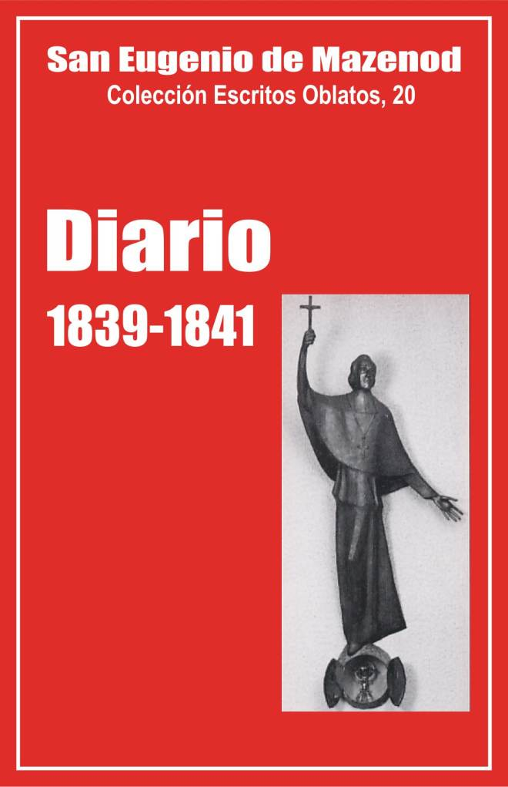

Palo Gordo
2019
Escritos Oblatos: - 01 - 02 - 03 - 04 - 05 - 06 - 07 - 08 - 09 - 10 - 11 - 12 - 13 - 14 - 15 - 16 - 17 - 18 - 19 - 20 - 21 - 22

EUGENIO DE MAZENOD
Colección Escritos Oblatos, 20
Traducción de
Olegario Domínguez O.M.I.
Postulación General, 1999
(Asunción, Paraguay, 2009)
Palo Gordo
2019
Introducción - Enero 1839 - Febrero - Marzo - Abril - Mayo - Junio - Viaje a Italia - Noviembre 1839 - Diciembre 1839 Enero 1840 - Feb.-Jul. 1840 - Ag.-Dic. 1840 - 1841 Anexo
Nota del Traductor: En esta edición se omiten o se abrevian muchas de las notas del original del P. Beaudoin.
Después del Diario de 1837 y 1838 (vol. 18 y 19 de E.O), damos en este vol. 20 el Diario de Mons. de Mazenod para los años 1839, 1840 y 1841.
El manuscrito del Diario de 1839 y 1840 se ha conservado: forman los cuadernos VII, VIII y IX. El de 1841 ha desaparecido. Quedan solo algunos extractos en las obras de Rambert, Rey y Yenveux. Por las referencias que da Yenveux, el Fundador habría escrito entonces un cuaderno de unas 90 páginas (de enero a octubre) y unas 50 páginas en otro cuaderno para los últimos meses del año, pero probablemente escribió sin regularidad, y son pocos los extractos que nos quedan.
Como en 1837 y 1838, Mons. de Mazenod sigue consignando en su Diario la lista de sus ocupaciones cotidianas, amenizada ocasionalmente con reflexiones más o menos extensas. Pero hay hechos que le impiden escribir con regularidad. Las numerosas visitas al comienzo del año, por ejemplo, no le dejan tiempo para continuar su diario del 5 al 13 de enero de 1839. Tampoco escribe nada durante su viaje por el norte de Italia, del 9 de junio a mitad de agosto del mismo año [1]. No reanuda su escrito hasta el 9 de noviembre. Hay otra interrupción entre el 12 de febrero y el 31 de julio de 1840. Solo escribe una vez en abril para indicar el motivo: la enfermedad de su tío Fortunato y su muerte el 22 de febrero a la edad de 91 años. Esta muerte, que llama "prematura", le afecta profundamente y lo hunde en un sombrío pesimismo. "Me hallo –escribe- en una disposición de espíritu y de corazón a no interesarme por nada y a dar poquísima importancia a todo lo que sucede aquí abajo. ¿Cómo sería de otro modo, si estoy rodeado por todas partes de las sombras de la muerte, todo me dice que la vida no es más que un sueño, que la tumba linda con la cuna? ¿Para qué afanarse tanto por poner un grano de arena en el lugar por donde uno pasa? Pronto serás engullido en el abismo que devora las generaciones que se amontonan rápidamente unas sobre otras. Veo como locura ocuparse seriamente de otra cosa que de la salvación de la propia alma…"
Escribe de nuevo en el mes de agosto, del 13 al 16 de setiembre, el 25 de octubre y del 16 de noviembre al 17 de diciembre de 1840. No da las razones de las omisiones en ese período. Sabemos que en octubre hizo las visitas pastorales de las parroquias rurales, y que en setiembre fue a N.-D. de Laus, a N.-D. de l’Osier y a Vienne en Isère para asistir a la consagración de Mons. Chatrousse, obispo de Valence.
Al parecer, escribió poco durante los 6 primeros meses de 1841. En julio hace esta reflexión: "Siento mucho yo mismo qué enojoso resulta que nadie piense en consignar en un registro al menos los hechos principales que interesan a la congregación; pero tendría que ser alguien distinto de mí quien se encargara de eso. Yo estoy demasiado ocupado y demasiadas veces molestado para permitirme la exactitud diaria que sería precisa para ese trabajo. Tantas veces ya lo he interrumpido. ¿Será distinto en adelante? No lo aseguro. Con todo se reclama sin cesar ese Diario, y se lo reclama de mí: sigamos dando prueba de buena voluntad".
I. Rasgos característicos
Dos rasgos característicos se destacan en las páginas que siguen: la extensión que el autor da a la narración de ciertos acontecimientos y los detalles preciosos que revela sobre sí mismo.
Narración extensa de algunos acontecimientos
Cuando reanuda su Diario en noviembre de 1839, tras cinco meses de interrupción, dice que le gustaría estar más libre "para dar algún desarrollo a los sucesos que se refieren a la diócesis o a la congregación". También después de la muerte de su tío Fortunato, escribe a primeros de abril de 1840: "Reanudo este Diario con extrema repugnancia. Después de todo, ¿a qué servirá el fastidio que esto me causa? A dar a conocer algunos hechos, la mayoría insignificantes, que rara vez tengo tiempo de desarrollar y sobre los cuales no puedo hacer ninguna reflexión…" Lo mismo anota el 9 de diciembre de 1840: "El hastío para continuar este Diario me domina siempre… Me haría falta tener tiempo para añadir algunas reflexiones a los acontecimientos del día, y ese tiempo no puedo procurármelo. Vería ventajoso analizar mis cartas así como las que me llegan".
Confiesa, pues, que le gustaría seguir haciendo el Diario si tuviera tiempo para reflexionar sobre los acontecimientos que cuenta brevemente y analizar las cartas que envía y que recibe". Es lo que sin embargo hace ahora más que anteriormente. Por lo menos diez veces escribe, el mismo día, dos o tres páginas o más para describir por extenso algunos sucesos o para desarrollar reflexiones personales,
Por ejemplo, el 16 y 17 de enero de 1839 consagra 4 páginas a una descripción detallada del oficio solemne y de las ceremonias protocolares con ocasión del paso por Marsella del cuerpo de la hija del rey Luis Felipe, la princesa María Cristina, esposa del duque Federico Guillermo Alejandro de Wurtemberg, fallecida en Pisa poco antes.
El 25 de febrero, en una página impregnada de alegría, se dice "consolado" al ver regresar al fervor a tres padres que le han hecho sufrir en el pasado por su desobediencia y su mal espíritu: los pp. Calixto Kotterer, J.A. Valentín Reinaud y Adriano Telmon.
El 8 y 9 de marzo describe una placa de mármol con inscripción hallada al cavar cerca de la iglesia de los agustinos; y el 12 hace lo mismo acerca de una piedra monumental encontrada en Argel, la cual –escribe- "prueba incontestablemente que esa ciudad fue construida sobre mi Icosía". El 9 de marzo, con ocasión del paso por Marsella de Gastón de Missiessy, recuerda todo lo que él hizo por ese joven cuando enseñaba catecismo en la iglesia de San Sulpicio en París,en 1809 y 1810.
El 31 de marzo, día de Pascua, un joven abogado va a anunciarle que "la indigna mujer Arbieu" prepara un informe contra él. Entonces escribe 7 páginas sobre su "corazón" y sobre lo que ha sufrido de parte de los marselleses que no le han comprendido. Volveremos después a esas importantes páginas. Continúa esa reflexión el 5 de abril, constatando que debe todavía 140.000 fr. para la construcción de la iglesia de San Lázaro.
El 10 de abril pasa el día con el cardenal d’Isoard y examina con él el caso del abate Gabriel, predicador de retiros, que "ataca todo: dogma, moral y disciplina. La toma igual con las cosas que con las personas. Nada es ya sagrado para él. Concilios, papas, obispos, Sagrada Escritura, los dogmas más santos como la Trinidad, la Encarnación, la Redención, el pecado original, la libertad del hombre, la eucaristía, el orden, la penitencia, todo es torturado por ese diente infernal".
El 15 de abril de 1839 reprocha al canónigo Jeancard, su secretario particular, el no haberle escrito tras diez días de ausencia y al abate Marc Cailhol el no querer ayudar a misa al obispo. El 20 de abril cuenta en dos páginas que administró el sacramento de la confirmación a una muchachita que querían enviar a Suiza para que fuera educada en la religión protestante, y cómo acaba de "descubrir a un nuevo agente del demonio…, un predicador de cuaresma, adornado de muceta que ha seducido a un joven".
A continuación del diario del 6 de junio, hace en 4 páginas el relato de su viaje a Biandrate. Del 9 al 17 de noviembre de 1839 escribe 12 páginas acerca del paso por Marsella del duque de Orleans, hijo del rey Luis Felipe. Cuenta entre otras cosas que no comió en la cena ofrecida por el duque la tarde del sábado 16 de noviembre, día de abstinencia, porque "la mesa estaba atestada de platos de carne"; el día siguiente describe la ceremonia de la misa a la que asiste el duque en la catedral. Del 29 de noviembre al 1 de diciembre se consagran 6 páginas a la breve enfermedad y la muerte del cardenal Antonio de Latil, fallecido el 1 de diciembre en Gémenos, en casa de su sobrino, asistido durante 48 horas por el obispo de Marsella.
El 15 y 16 de julio de 1841 habla de su entrevista con Mons.. Ignacio Bourget, obispo de Montreal y cuenta cómo fue impulsado a enviar Oblatos a Canadá y a Inglaterra. El 20 de julio, del 12 al 21 de agosto y el 17 de octubre de 1841 escribe varias páginas sobre el nombramiento del p. Guibert como obispo de Viviers y cómo su partida fue deplorada en Córcega,
Confidencias sobre su persona
Mons. de Mazenod escribió al p. Vincens el 9 de noviembre de 1853 "no vivo más que por el corazón". Es justamente lo que aparece en varias páginas del Diario, sobre todo en 1839.
El obispo de Marsella, que vive solo en el obispado con sus secretarios, el canónigo Jeancard y el abate Cailhol, parece sufrir de soledad, de falta de atención. Hemos visto que el 13 de abril de 1839 se queja del primero que, tras diez días de ausencia, todavía no ha escrito, y hace notar al segundo "que es en sumo grado indecoroso que se deje al obispo diocesano sin otro asistente o ayudante en la misa que el portero de casa. "Que yo sepa –añade- no hay en Europa otro obispo tratado tan bruscamente".
Por otra parte, se ve que él es muy sensible a toda manifestación de afecto y de gratitud. Subraya "la afectuosa ternura" del p. Bise en su correspondencia (inicio de 1839), la amistad y el agradecimiento de Josefina de Cariolis (19 de enero) y del Sr. Mathieu, cuyo matrimonio bendijo el año anterior (1 de enero y 21 de marzo), del cardenal Pacca que lo ama y se siente feliz al hablar de él (19 de enero y 16 de agosto) etc. Sufre por la salida de su doméstico Pascual que el p. Tempier echó del obispado a la calle (19 de enero).
El 5 de abril de 1839 hace el balance de las deudas que contrajo para construir, sin la ayuda del gobierno, las iglesias de San Lázaro y San José. Nombra entonces a varios obispos cuyos allegados ponderan "la más pequeña de sus obras", mientras que en su entorno no hay nadie, salvo a veces su madre, que reconozca todo lo que él ha hecho y se lo agradezca. "Así –escribe- no hay contrapeso para equilibrar las atrocidades, las calumnias, las verdaderas persecuciones que el odio de los malvados y la venganza de los hombres tarados suscitan contra mí" [2]. Concluye sus reflexiones así: "Compruebo un hecho, mido sus consecuencias y me mantengo en reposo, tan indiferente como si eso no me tocara, adorando, en esto como en todo lo que sucede, la voluntad de Dios que lo permite sin duda para un bien mayor".
Las confidencias más importantes relativas a su corazón, las hace el 31 de marzo de 1839, después de haberse enterado de que se va a publicar pronto un informe inspirado por "la indigna mujer Arbieu, esa desgraciada –escribe- a quien yo he denunciado ante el procurador general por mantener una casa de prostitución bajo la aparente advocación del santo nombre de María, y con un hábito religioso para mejor engañar a los padres que creían colocar a sus hijas en un pensionado…" Entonces es cuando cuenta cómo toda su vida ha sido inspirada por el amor que tiene al prójimo, de quien se esperaba el afecto y la gratitud.
No fue decepcionado en su "ilusión" en el seminario de San Sulpicio, ni sobre todo durante su primer ministerio en Aix. "No encontré –escribe- entre aquellos pobres prisioneros a los que atendía espiritual y temporalmente, ni entre aquellos muchachos que me miraban como su padre, más que a almas agradecidas, corazones llenos de afecto que respondían perfectamente a la tierna caridad que yo sentía por ellos. Me amaban hasta el punto que varias madres me decían que no podían sentirse celosas porque ese sentimiento les probaba la bondad de sus hijos, pero que de verdad estos me amaban más que a ellas, sus propias madres. Todo así contribuía a persuadirme de que era imposible que no se me amara. Y en la disposición de corazón en que siempre me encontraba, es decir, no queriendo mal a nadie, deseando hacer bien a todos y sintiéndome dispuesto a brindar mi afecto a cuantos lo supieran apreciar, no habría comprendido que pudiera hallarse un solo hombre que, conociéndome, quisiera perjudicarme o simplemente contristarme. ¡Dulce pero engañosa ilusión de un corazón demasiado amante! Yo no veía el defecto de ese sentimiento demasiado natural. Tan poco lo veía que me habría vanagloriado de él, así como me felicitaba, en el secreto de mi alma, de poseerlo…"
Llegó el tiempo en que tuvo que reconocer que no todos los hombres se asemejaban a él. Menciona las "envidias" de los párrocos de Aix, de las que quedaba compensado por el entusiasmo de las multitudes durante las misiones populares, y sobre todo las muchas amarguras que le procuró su actividad de misionero y luego de vicario general de Marsella que le "hicieron expiar" el encanto de sus primeros años. En Marsella, confiesa, "¿no he sido ignorado, despreciado, escarnecido, calumniado, odiado por los que me conocían bien o al menos habrían podido conocerme…?" Constata que la ternura de su corazón, su "bondad de alma bastante rara" son un puro don de Dios. "¿Por qué querer que los hombres me lo tomen en cuenta? Es –continúa- una recompensa demasiado natural de un don del todo gratuito del Señor, pues, por penosa que sea esa facultad poco común, si con todo se da alguna otra persona que la posea en tan alto grado, yo me felicito de poseerla y siento verdadera dicha en las amarguras mismas que ella me causa. Así pues, renunciemos a todo reintegro, a todo reconocimiento de los hombres. Contar con ello sería por otro lado prepararme un pesar que ahorraré sacrificándolo de antemano. Doy gracias a Dios por haberme iluminado sobre este punto por muy crueles experiencias".
Mons. de Mazenod hace también otras importantes confidencias respecto a su nombramiento como obispo de Marsella y a su amor a ala eucaristía.
El 8 de mayo de 1839 recibe la visita de Mons. Mauricio de Bonald obispo de Puy que fue su condiscípulo en el seminario de San Sulpicio. Ambos fueron ordenados sacerdotes en Amiens por Mons. Demandolx. El abate de Bonald emprendió en seguida una carrera diplomática y semipolítica que lo orientaba hacia el episcopado. Eugenio escogió más bien "servir a la Iglesia en un ministerio humilde y desdeñado por el mundo. Seguí –añade- recorriendo mi carrera hasta el momento en que una especie de necesidad me apartó de ella para lo que fue juzgado mayor bien de la Iglesia. Por más que volviera la espalda al episcopado, él se me presentó cuando menos lo pensaba, pero yo sabía bien que no ceñía una corona trenzada de flores, sino muchas espinas crueles; algunas se han suavizado, pero la carga se agravó con el peso de la responsabilidad de una diócesis, con el que yo no debía pensar cuando se me nombró obispo in partibus.
El cardenal de Latil, arzobispo de Reims murió el 1 de diciembre de 1839, y Mons. Luis de Quélen murió el 31 del mismo mes. El 22 de diciembre Mons. de Mazenod recibió una carta de Adrián Chappuis, abogado en París y antiguo congregante de Aix, que siguió muy ligado a su antiguo director. "Adrián –escribe- pide mi consentimiento para rechazar la intriga de los que, según él pretende, trabajan con ardor para apartarme de la sede de Reims y de la de París… Chappuis supone saber que esa cábala ya logró alejarme de Auch y de Lyon".
A primeros de enero una carta del canónigo Caire, sacerdote marsellés residente en París, confirma lo que escribió Adrian Chappuis. Mons. de Mazenod responde a éste para prohibirle tomar su defensa. Se opone, en principio, al "ascenso" de los obispos (22-12-39). Además siempre ha rehusado ser obispo diocesano; aceptó el obispado de Marsella "por una especie de necesidad" impuesta por su tío. Encuentro muy pesada mi carga --escribe- "¿Qué sería si tuviera que recomenzar en otra parte y sobre todo en París donde un prelado que quiera cumplir su deber encontrará obstáculos insuperables, contradicciones violentas y estorbos de todas clases? Así tengo por loco al que pueda desear esa sede y por muy desgraciado al sea forzado a aceptarla. Digo más: yo no eximiría de pecado al hombre bastante ciego para hacer directa o indirectamente la menor gestión para llegar a un puesto tan peligroso para la salvación por la razón de la excesiva dificultad para cumplir allí todos los deberes de un verdadero pastor de almas. Sabes que toda nuestra misión está ahí. Los honores, la consideración, etc. son solo accesorios que hay que saber despreciar. Ya ves, mi buen hijo, que te abro toda mi alma. Eso te hará recordar el tiempo en que, testigo de todas mis acciones, podías leer en mi alma como en tu propio corazón" (25 de diciembre de 1839 y 4 y 13 de enero de 1840).
Mons. de Mazenod ha tenido siempre gran devoción a la Eucaristía. Esto también se ve claro en las páginas del Diario de 1839. Escribe el 17 de febrero: "Dios me ha inspirado en la acción de gracias de la misa, hace pocos días, rendir a nuestro Señor Jesucristo un homenaje solemne en la exposición del Santísimo que se hace en todas las parroquias el jueves, domingo, lunes y martes de carnaval. He cumplido este deber ya hoy y agradezco mil veces al Señor el haberme dado esta buena idea, pues he experimentado en ese acto de religión consuelos y una dicha que solo toca a Dios dar a gustar. Esto es lo que me he prescrito hacer cada año mientras sea obispo: en la semana de septuagésima, mi secretario mandará aviso a las 14 parroquias de la ciudad que el jueves o el domingo o el lunes o el martes de las 40 Horas iré a tal hora a adorar el santo sacramento a tal parroquia. Combinaré mis visitas de forma que en los cuatro días pueda visitar las 14 parroquias. Serán tres cada día, más una que haré el domingo…"
Es lo que hizo desde 1839. El domingo 10 de abril visita 4 iglesias y luego escribe en su Diario: "¡Qué feliz sería si con estos actos externos de mi adoración pudiera enseñar a mi pueblo cómo debe homenajear a Jesucristo en su sacramento de amor. Querría hacerme más pequeño todavía y anonadarme en su divina presencia para realzar la gloria que le es debida y hacerle honrar como es preciso. Es el anhelo más constante de mi corazón y nunca dejo escapar ocasión alguna para inculcar estos principios ya con la palabra ya con mis actos. Pero querría publicar en todo el universo qué grandes consuelos interiores experimento cada vez que cumplo este deber…"
El 17 de marzo de 1839, con ocasión del aniversario del sacrilegio cometido en 1829 en la iglesia de San Teodoro, el obispo va a asistir a vísperas, de pie ante el Santísimo expuesto, en presencia de fieles que llenan la iglesia. Por la noche, anota también en el Diario: "Confieso que era un consuelo indecible para mi corazón pensar que era yo quien había procurado a Jesús la gloria que se le tributa desde hace diez años en San Teodoro. Yo le ofrecía también hoy, con secreta alegría, pero con toda sencillez y sin mezcla alguna de amor propio, todo lo que ha recibido de honor, de alabanzas, de acciones de gracias, todas las muestras de amor, de reparación etc., se lo ofrecía con gusto, como si fuera mío, en expiación de mis propias irreverencias, de mi poca correspondencia a las grandes luces y a las inspiraciones que Dios ha querido comunicarme desde hace muchos años acerca del admirable sacramento de nuestros altares, en reparación por el poco fruto que he sacado de las impresiones extraordinarias que a menudo me ha procurado la persona del divino Salvador y que habrían debido hacer de mí un santo mientras que sigo siendo un miserable pecador que no hace valer las riquezas del padre de familia, demasiado generoso con un ingrato como yo soy, etc.".
Confiesa, pues, aquí que ha recibido de Dios "grandes luces e inspiraciones" desde hace muchos años sobre "el admirable sacramento de nuestros altares".
II. Diversas actividades del obispo de Marsella
La diócesis de Marsella
Más de la mitad del relato concierne a la diócesis de Marsella. Se ve al obispo en su acción pastoral y sus preocupaciones diarias: su abundante correspondencia, las ceremonias religiosas con ocasión de las fiestas, la administración de la confirmación y del orden, la participación en los funerales de algunos sacerdotes, del cardenal Latil (29/31-3-39), de Mons. Fortunato de Mazenod (abril -40), las visitas que hace a parroquias, conventos y obras, y las que recibe, en especial, de Mons. Bonald, obispo de Puy, de Mons. Bonamie, arzobispo de Calcedonia (8-5-39), del duque de Orleans (9/17-11-39), del obispo de Holanda (19-1-40), de Mons. Trioche, obispo de Babilonia (7-2-40), de los duques de Nemours y de Aumale, de Mons. Ignacio Bourget, obispo de Montreal (6-8-41), etc., las preocupaciones que provienen de malos sacerdotes (Pawitowski, Vidal, etc.), de ciertos predicadores de cuaresma como el Sr. Gabriel cuya doctrina es sospechosa, del Sr. de Barjac que dio un sermón que "no era más que una rapsodia fatigante"(13/15-1-39), y "otros predicadores de profesión que acaban escandalizando a todos los lugares por donde pasan" (15-1-39 y 20-4-39).
A menudo se trata de dinero para grandes proyectos como la construcción de una catedral y la compra de la propiedad San Luis fuera de Marsella, casa de campo del obispado (21/22-4-39,) o simplemente para las limosnas a favor de necesitados, v .g., mujer tenida en prisión por el abate Jonjon (24-2-39), terremoto en la Martinica (21-3-39), extrema pobreza de una familia (22-3-39), inundación del Ródano (16-11-40), etc.
El obispo habla también de sus iniciativas para restablecer la fiesta de la Epifanía (5/9-1-40) o las estaciones de las rogativas, a fin de remplazar las "pequeñas devociones tras las que se corre con tanto afán"(7-5-39). Encuentra tiempo para narrar sus viajes a Biandrate para venerar a San Sereno y llevar una reliquia a Marsella (del 9 de junio a mitad de agosto de 1839), y a Digne para hacer ordenaciones y confirmaciones (10/16-5-39). Menciona el viaje a N.-D. de Laus, a N.-D. de l’Osier y a Vienne en Isère para asistir a la ordenación episcopal de Mons. Pedro Chatrousse, obispo de Valence.
A veces expresa el gozo que le causan, por ejemplo, las exposiciones del Santísimo en las iglesias (7, 10 y 11 de febrero de 1839), o la santidad de algunos viejos sacerdotes, como el canónigo Flayol, el Sr. Bonnafoux y el p. Mie (27-2-39), o también la fundación de los jesuitas en Marsella el 17 de mayo de 1839. Mira este acontecimiento como "uno de los días más hermosos" de su episcopado.
Las familias Mazenod y Boisgelin
El obispo habla poco de su familia. Hay breves menciones de las deudas de su padre (4 y 8-2-39), de las cartas a su madre, del proyecto de matrimonio de Cesárea Boisgelin (17 y 20-4-39), de Eugenio de Boisgelin, colocado en el colegio de los jesuitas en Bélgica (20-11-39 y 12/13-8-40); más se trata de Luis de Boisgelin y de Fortunato de Mazenod. El 1 de enero el obispo escribe una página sobre Luis, novicio jesuita. No está muy contento de esa vocación religiosa, cuando el apellido de su sobrino y sus talentos y virtudes lo designaban para grandes funciones en la Iglesia, si hubiera entrado en el clero diocesano. Luis, enfermo, va a pasar unas semanas con los suyos en el otoño de 1840 y 1841. Mons. de Mazenod los recibe a todos en San Luis en setiembre de 1840 y en setiembre de 1841 va a pasar con ellos unos días en el castillo de los Boisgelin en St-Martin-des-Pallières.
Mons. de Mazenod estaba muy ligado a su tío Fortunato. El 27 de abril de 1839 menciona sus 91 años y dice que conserva "el mismo frescor de espíritu y la misma salud que hace 20 años". Pero el 21 de mayo de ese año cae en "un estado de debilitamiento extraordinario" que procura al sobrino "gran inquietud... Hemos quedado verdaderamente alarmados –escribe- y la pena que sentimos nos impidió cenar". En 1840 la enfermedad de Fortunato solo dura del 12 al 22 de febrero. El sobrino está tan afectado que no dice nada en el Diario. Solo a primeros de abril se siente animado a consignar el fallecimiento, pero en una página donde el obispo aún lo ve todo negro: "Mi pena se hunde habitualmente en la tumba donde acabo de depositar los preciosos restos de mi venerable tío. Tras unos pocos años yo bajaré a este mismo sepulcro para ser depositado a su lado y ahí nuestras cenizas juntas esperarán el gran día de la dichosa resurrección, como está escrito en la lápida que nos cubrirá a uno y otro: Hic jacent, etc. expectantes beatam spem et adventum gloriae Magni Dei".
Los Oblatos
El Fundador habla muy a menudo de los Oblatos, pero, en general, escribe pocas líneas cada vez. Menciona docenas de veces las misiones predicadas por sus religiosos y los éxitos que obtienen casi siempre. Se extiende un poco más sobre algunos hechos que entonces marcaron más la historia de la congregación: los milagros del p. Albini en Córcega (28-2-39), su enfermedad y muerte, su santidad (27-4-41; 20 y 29-5-39; 3-12-41); los esfuerzos del obispo y de diversos miembros del clero de Gap para retomar el santuario de N.-D. de Laus (21/28-11-39; 10, 14 y 17-1-40); la fundación del juniorado de Lumières (13-8-40 y 12-5-41); la aceptación de las misiones de Canadá y de Inglaterra (15, 16 y 24 de julio y 6 de agosto de 1841); la llegada de los primeros novicios irlandeses al noviciado trasladado a N.-D. de l’Osier (28-11-41); el nombramiento del p. Guibert para el obispado de Viviers (20 de julio y 6, 10, 12, 15 de agosto de 1841) etc.
En 1841 el Diario da la impresión de estar más centrado en la vida de la Congregación. Es porque Rambert, Rey y Yenveux retuvieron sobre todo lo que concernía a los Oblatos. Así será también para la continuación del Diario que aparecerá en los volúmenes siguientes
Yvon BEAUDOIN, o.m.i.
Misa de madrugada en la capilla interior del Calvario. Los hermanos Boissieu y Viala hicieron su oblación en mis manos en presencia de la comunidad y de los oblatos [escolásticos] que están en el seminario mayor. Regresé bastante a tiempo para comenzar mi faena de año nuevo que duró hasta las 7 de la tarde.
Mi sobrino Luis, novicio jesuita, se dio cuenta de que hacía cuatro meses que no me había dado señales de vida, me escribió una cartita para decirme que está muy contento, lo cual supone él que no resulta muy amable decirlo a los parientes, pero le gusta que se sepa para saber con qué contar. Este querido hijo se engaña al meterme en el número de esos parientes. No es según las inspiraciones de la carne y de la sangre como yo podría razonar sobre su vocación. Si tuviera algo que decir, sería desde mi sede elevada de obispo y considerando las necesidades de la Iglesia y los servicios que ella tiene derecho a esperar de los que son llamados a consagrarle su existencia. Es posible que, desde esa región, muy por encima de los pequeños intereses de la tierra y de todos los afectos humanos, yo hubiera decidido que ese hombre, dentro de su posición social, dotado de tales virtudes y de tales talentos, habría sido infinitamente más útil a la Iglesia en otra parte que entre los padres jesuitas. Es posible que yo hubiera pronunciado que los reverendos padres harían mejor en no acaparar para su sociedad a todos aquellos a quienes el candor y la inocencia llevan hacia ellos en el fervor de la juventud tan propensa a quedar inflamada por el ejemplo y la piedad de los maestros respetables que tienen toda su confianza; y que en lugar de desechar a aquellos que, con igual atractivo hacia la orden e igual piedad que los que ellos atraen con tanta complacencia, no tienen tantos talentos o no pertenecen a familias tan importantes, serían más generosos y se mostrarían más desinteresados y más dedicados al bien de la Iglesia aconsejando a esos hombres selectos abrazar una carrera igual de santa que la que ellos mismos siguen y que daría en sus personas campeones a la Iglesia, aptos para combatir en las primeras líneas y para defenderla muchísimo más ventajosamente que lo puedan hacer en las filas oscuras u ocultas de una tropa puramente auxiliar, que emplea a la mayoría de las personas en ministerios útiles sin duda, pero en los que sería fácil remplazar a aquellos que siempre harán falta en otro sitio. Esto es lo que un obispo podría sostener, aun respetando mucho, aun amando la orden de los jesuitas, a la que amaría todavía más si pudiera estar seguro de que esos padres ponen a la Iglesia, y no a su sociedad, en la primera línea en el orden de su afecto.
Carta del p. Mille. Detalles muy consoladores sobre la misión de Ribiers: 200 confirmandos, 500 comuniones. Tras la salida del señor obispo [Lacroix d’Azolette], otros 200 hombres en la santa mesa. Va a empezar la misión en Tallard. Pide un padre provenzal para el retiro de B. tras la misión de Tallard. El p. Ancel sigue contento de su vocación, pero está retenido en Laus por la triste obra que había emprendido. Había calculado mal su asunto al encargarse de los gastos de la impresión. Le harían falta 2000 francos que seguramente no estamos en condiciones de proveerle.
Carta de las dos religiosas que fueron a Roma para hacerse desligar de sus votos. Me piden un atestado. Su intención es formar una pequeña asociación en su país o bien entrar en otra orden distinta de la que quieren dejar (Damas de S. Tomás de Aix).
Carta al p. André [a menudo enfermo] para alentarle en sus sufrimientos.
Carta al p. Gibelli sobre su perfecta conducta para con el p. Albini [gravemente enfermo desde el año anterior].
Carta al p. Courtès dándole al p. Telmon para la misión de Istres. Le recuerdo cómo hay que comportarse en ese santo tiempo para atraer la bendición de Dios sobre un ministerio que lo espera todo de la misericordia gratuita de Dios. Los misioneros no deben olvidarse a sí mismos al trabajar por los otros. Le aconsejo que no se encargue de los avisos; he sabido que los daba de una manera oratoria, le enseño cómo hay que hacer para sacar de ellos las grandes ventajas que siempre hemos obtenido.
[Sin fecha, poco antes del 14 de enero] El trastorno de los asuntos, de las visitas y de la prodigiosa concurrencia de personas que han obstruido mis habitaciones no me ha dejado tiempo para sentarme en mi escritorio y redactar mi Diario. He recibido varias cartas y he escrito algunas de prisa.
El p. P. Aubert me ha pedido facultades para confesarse con el p. Bise, que quedó solo con él en Aix. Respondí afirmativamente. Por su parte, el p. Bise me ha escrito una carta llena, como de costumbre, de la más afectuosa ternura. No se podría responder mejor al amor que yo tengo por mis hijos, pero tal vez no todos lo expresan tan bien y de tan buen grado.
El Sr. Mathieu de Burdeos me ha escrito tres cartas, todas muy amistosas. Es también uno de esos hombres que sienten y que son agradecidos. Es el sentimiento, es el corazón el que habla.
Carta del p. Guigues al p. Tempier [3]. Le expresa los éxitos prodigiosos de la misión que acaban de dar en … Mil cien hombres han sido admitidos a la comunión. Era un pueblo que no ofrecía esperanzas.
Misa en la capilla de las Hijas pobres [4]. Gran afluencia de damas. He recibido a más de 50. La asociación se compone ahora de 475 damas. Ver el informe que el abate Fissiaux [director] leyó en la asamblea. Hay de qué maravillarse.
Carta del p. Courtès. Comienzo de la misión de Istres. El pueblo acude a las instrucciones.
Carta del p. Guigues. Me pregunta si en las misiones hay que tomar en cuenta, para la lectura del Nuevo Testamento, las dignidades de asesores o bien mirar solo la edad de modo que sea siempre el más joven quien la haga. Respondo que, siendo todo igual, eso toca al más joven de profesión y no al más joven de edad, y cuando la misión es dada por los miembros de una misma comunidad, los asesores deben guardar su puesto de dignidad.
Carta del p. Bernard de la misión de las Aygalades, que va de maravilla. La Iglesia no puede contener la afluencia de gente. Tras el discurso sobre la blasfemia,… hombres acudieron piadosamente a besar los pies del crucifijo.
Carta del p. Mille de la misión de Tallard que se presenta con mejores auspicios de lo que al principio se creía.
En la carta del p. Bernard leo estas palabras: el padre Magnan es siempre de un carácter impasible, muy bueno de hecho y buen religioso.
Carta al p. Bernard para responder a algunos casos de conciencia.
Jornada abrumadora como las precedentes.
Carta del p. Chauvet. La misión de Roussillon, dada por el p. Honorat, ha resultado perfectamente. La de Lacoste, dada por el p. Chauvet y el p. Rousset, a pesar de grandes dificultades, acabó marchando bien. Lacaste es un pueblo mixto de protestantes. Casi todas las mujeres han comulgado y todos los hombres que no tenían obstáculos insuperables se acercaron también a la mesa santa. Las ceremonias fueron perfectamente logradas. La plantación de la cruz en el interior de la iglesia, después que el signo sagrado de nuestra redención había recorrido todas las calles protestantes, ha sido magnífica.
Carta del obispo de Nancy [Mons. de Forbin-Janson] desde Roma. Según su plan, habría debido venir aquí ayer y todavía no ha obtenido audiencia del Papa. Lo atribuye evidentemente sin razón a no haber pedido esa audiencia por el señor cardenal Lambruschini [secretario de Estado], y haber tomado en cambio la vía ordinaria del maestro de cámara que ordinariamente no hace esperar al día siguiente la respuesta que recibe del papa en el acto. ¿No será que el papa no está admirablemente dispuesto en su favor a causa de las dificultades en que le ha puesto dos veces la postura que se obstina en mantener, y además sin duda por las muchas quejas que ha tenido ocasión de escuchar de los embajadores que han debido mezclarse en sus asuntos? Aunque diciéndome que el Sr. obispo de Argel no mantuvo su fama de buen predicador en la estación que predicó en San Luis [de los franceses], me anuncia que él, el obispo de Nancy, ha consentido predicar tres sermones en San Silvestre in Capite. Hace falta tener la manía de hacer hablar de sí. Esta indiscreción acabará de echarle por el suelo en Roma donde ya había sido juzgado tan rigurosamente en su último viaje.
Paso del cuerpo de la princesa María Cristina [hija del rey Luis Felipe]. Anoche el general Sebastián, acompañado por el Sr. Jonson, capellán enviado por el rey, vinieron a las 10 para anunciarme que el cuerpo de la princesa llegaría hoy, pero que no haría más que pasar. Se concertó que el clero iría a recibir el cuerpo de la princesa a la Plaza Castellane, donde todas las autoridades debían encontrarse, que se lo acompañaría procesionalmente hasta la Puerta de Aix cantando salmos y después de un responso la carroza funeraria seguiría su marcha. Todas las parroquias han sido convocadas para acudir a la iglesia de San José de donde se unirán al cortejo cuando se les anuncie la llegada del cuerpo. Yo me dirigí allí por mi parte. A las 3, 30 se dio la señal. El mensajero llegó de parte del señor alcalde a avisar al clero que se dirigió lentamente al lugar indicado, pues lo hemos estado esperando más de media hora. Yo había tomado la delantera con mi coche, y nos hallábamos todos reunidos, el general, el prefecto, el alcalde, etc. en la modesta oficina del fielato, cuando bajaron el general de Rumigny y el señor embajador su hermano. Tras las cortesías usuales, el general me dijo que había recibido orden del rey de detenerse en Marsella. En el acto combinamos trasportar el cuerpo de la princesa a la catedral donde pasaría la noche y yo propuse celebrar mañana un servicio solemne al que asistirían todas las autoridades y el clero de toda la ciudad. El general y su hermano aceptaron el ofrecimiento con gratitud. El cortejo se puso en marcha por la calle de Roma, el Paseo, la calle de Aix, la avenida de las Damas y llegó a la catedral todavía de día. El canto de los salmos alternó todo el tiempo con la música militar. La multitud se agolpaba sobre el paso y la tropa de la guarnición abría camino. El clero de las parroquias, el cabildo y yo precedíamos al coche fúnebre. Las autoridades marchaban detrás. El conjunto de la lúgubre ceremonia era imponente y en sumo grado decoroso. Sea dicho de paso, nuestras autoridades, a las que tanto cuesta estar con la cabeza descubierta incluso en las procesiones del santísimo sacramento, aprendieron del señor embajador y de su hermano el general edecán del rey, que se debe tener el sombrero bajo el brazo aun cuando no se acompañe más que al despojo mortal de una simple princesa. Todo el mundo a su ejemplo guardó esa actitud respetuosa, aunque hacía mucho frío y había fuerte viento. Llegados a la catedral, se bajó la caja que encerraba el cuerpo; estaba cubierta con un lienzo mortuorio de terciopelo morado. Hizo falta una docena de soldados para llevarla. Se la depositó de momento en medio de la iglesia donde hice el responso, y cada uno se retiró para dejar a los obreros lugar para tapizar la iglesia y hacer un catafalco. . Se quedó en la iglesia una compañía de uno de los regimientos de la guarnición. Cuatro centinelas montaban la guardia en torno al cuerpo, dos sacerdotes con sobrepelliz y estola rezaron toda la noche.
Creí conveniente prevenir a los señores de Rumigny que tenían el propósito de venir a verme esta tarde. Fui a buscarlos a su hotel, donde los encontré a la mesa. El general vino a recibirme a la portezuela de mi carruaje. Quedé encantado de la conversación de esos dos señores y del ayudante de campo del rey que está con ellos. Todos han hablado como hombres llenos de fe. Todo lo que me han contado de la vida y sobre todo de los últimos momentos de la señora duquesa de Wurtemberg era sumamente emocionante. El embajador me prometió darme a leer mañana la carta que escribió a la reina sobre ese desgarrador acontecimiento así como una breve relación hecha en italiano por el Sr. vicario capitular de Pisa que administró los últimos sacramentos a la princesa. El edecán del rey me prometió que no dejaría de decirle qué indigna es nuestra catedral de nuestra ciudad.
Esta mañana, una vez hechos todos los preparativos, las autoridades civiles, administrativas y militares se dirigieron a la catedral, y los señores de Rumigny vinieron a mi casa. Yo había salido ya siguiendo mi habitual exactitud en las ceremonias públicas. Esos señores vinieron a buscarme en la sacristía, y el señor embajador, fiel a su promesa de ayer, me leyó la carta que había escrito a la reina el mismo día de la muerte de la princesa. ¡Oh, qué consolada habrá quedado esa buena reina con el relato de la hermosa muerte de su hija! Ella había recomendado al embajador que velara por ella y que actuara de modo que muriera como buena cristiana. Él no necesitó hacer grandes esfuerzos para ello; esta buena princesa lo hizo todo en cierto modo por sí misma, pues había recomendado a su hermano, el señor duque de Nemours,
que la advirtiera si la veía en peligro y el príncipe cumplió ese deber admirablemente. Lamento que el respeto debido al secreto de una correspondencia entre el Sr. embajador y la reina haya impedido que yo pudiera hacer copia del emocionante relato. Aseguro que es edificante del principio al fin. Cuando el médico anunció que el peligro era inminente, el duque de Nemours se dirigió al Sr. de Rumigny para saber lo que había que hacer, ya que su hermana le había hecho prometer que la avisaría. El Sr. embajador, como hombre de fe, le dijo: Señor, consúltese a sí mismo y responda qué querría que se hiciera por usted en parecida coyuntura. Le entiendo, le dijo el príncipe, y al punto ingresó en la habitación de su hermana para cumplir su dolorosa y difícil comisión. El Sr. de La Fanteria, vicario general de Pisa, entró y confesó a la princesa, la cual desde ese instante se adentró en sentimientos heroicos de piedad. Quiso levantarse para recibir de modo más conveniente el santo viático, Toda la asistencia quedó admirada de los actos conmovedores que su religión le inspiró en aquel momento. Su marido estaba emocionado como todos los demás. Ella aprovechó esa circunstancia para decir en voz alta: Señores, ved lo que puede la religión, yo solo tengo 25 años, soy feliz y muero contenta con la seguridad de poseer a Dios. Después de haberse ocupado así de Dios, se volvió a su marido: "Alejandro, -le dijo con emoción te he adorado (se sabe que esta expresión excesiva se usa en Francia para significar un gran afecto), te voy a dejar. Acuérdate de lo que me has prometido, júrame de nuevo que te harás católico así como nuestro hijo; así nos volveremos a encontrar todos en el cielo". Parece que este pensamiento la preocupaba mucho, pues noté en la relación del señor de Rumigny que por cuatro veces se lo recordó a su marido y siempre con el sentimiento del más tierno afecto y como una cosa convenida. El príncipe entraba tan bien en los designios de su piadosa esposa, que en el momento en que ella expiró, se volvió hacia el Sr. de Rumigny y le dijo estas mismas palabras: "Señor, yo soy hombre de honor, mantendré mi palabra". Como la carta del Sr. de Rumigny a la reina quizá nunca sea conocida por el público, yo consigno aquí este hecho histórico y doy fe de transmitir escrupulosamente las propias expresiones que he leído en la carta escrita a la reina por el Sr. de Rumigny. Guardo silencio sobre los otros detalles muy interesantes del final de la princesa. Conservó su presencia de espíritu hasta el último momento, y no le gustaba conversar más que del cielo, rogaba al vicario general que le sugiriera los sentimientos apropiados a su situación. He pecado mucho, dijo con una humildad conmovedora, pero he amado siempre al buen Dios, sí, he amado mucho al buen Dios. Como la abandonaban las fuerzas, quiso hacer un último esfuerzo para signarse con la señal de la cruz. Unos instantes después, hizo un movimiento de los labios repetido varias veces que fue comprendido por los que la rodeaban. Se le presentó el crucifijo que besó con fervor y luego, mientras el Sr. de La Fanteria seguía hablándole de Dios y de la dicha del cielo, fijó sus ojos hacia esa patria a la que aspiraba, y los cerró luego para no abrirlos más. Así rindió su último suspiro esta princesa digna de la piedad de su madre, cuya muerte podrá servir de ejemplo a los grandes de la tierra que muy a menudo dejan tan poca esperanza sobre su salvación al salir de este mundo de seducción y de vanidad. La princesa María ha muerto como verdadera predestinada. Tras el oficio pontifical, hice el responso solemne y, poniéndose de nuevo en marcha el cortejo, el clero, conmigo al frente, condujimos el cuerpo hasta el arco de triunfo de la Puerta de Aix, pasando por la calle del Obispado, la Fábrica de cajas, la Gran Vía, el Paseo y la calle de Aix; las tropas de la guarnición cerraban la fila, y las autoridades civiles, administrativas, judiciales y militares marchaban tras la carroza fúnebre con la cabeza descubierta. Llegados a la Plaza de Aix, la carroza se paró, yo hice abrir la portezuela y tras el canto del responso In paradisum etc., y la oración, asperjé el cuerpo por última vez y nos retiramos, dejando seguir su ruta a los coches que al punto tomaron el camino de Aix.
La noche del 17 al 18 de enero bendije el matrimonio del señor abogado Lejard con la señorita Robert. Así dije dos misas en menos de 12 horas y por objetos bien diferentes. Una misa solemne de funeral y una misa de bodas. Una y otra me brindaron consuelos apropiados a su género especial, pues celebré con verdadera devoción la misa por la princesa cuya santa muerte me había edificado tanto, y dije con consolación la misa por unos esposos cuya unión yo había preparado y cuyos sentimientos de sincera piedad me resultaban una garantía de las gracias que atraía sobre ellos con el santo sacrificio y el sacramento.
Carta del cardenal Pacca, toda de la mano de ese venerable anciano [5]. Esta carta está llena de amistad. Además el señor Alessandri que me la ha traído me dijo que ella era solo la expresión de un sentimiento profundamente sentido, y que yo no podría hacerme una idea de cuánto me ama ese santo cardenal y de la dicha que siente hablando de mí. Volvía a ese tema todos los días con el Sr. Alessandri, a quien acogió muy bien en parte por mi causa. Confieso que estoy conmovido por la bondad del venerable decano del sagrado colegio y que ella inspira a mi corazón un aumento de gratitud y de afecto. Sé por lo menos sin lugar a dudas que no son pura ceremonia los sentimientos que ese personaje, cuya estima y amistad honran, me expresa en su correspondencia, sentimientos que otros pueden fingir pero que él experimenta de verdad. Por lo demás, nunca he dudado desde hace más de 14 años cuando tuve la dicha de conocerlo y de apreciarlo.
Carta de Josefina de Coriolis [Dama del S. Corazón, en Roma]. Me recuerda las obligaciones que cree tener conmigo y me muestra su agradecimiento. Fue también Alessandri quien me trajo esa carta de Roma. Este joven me ha confirmado lo que yo sabía de antemano: que el pobre obispo de Nancy no era bien visto en Roma. Por eso ¿qué iba a hacer allí? No vale la pena hacer un viaje tan largo para procurarse mortificaciones. Llegado el 24 de diciembre, el 12 de enero todavía no había obtenido una audiencia del papa. Parece no haber aparecido en Roma más que para hacer triste figura durante la recepción brillante hecha al Sr. obispo de Argel. Es en verdad la sombra del cuadro. Papel muy humillante que cumplir, pero que yo le habría anunciado si me hubiera consultado sobre ese viaje intempestivo que con pena le vi realizar.
Carta al Sr. Obispo de Lausana [Mons. Yenni] por medio del Sr. Espanet que va a predicar en Ginebra.
Carta del p. Allard [futuro vicario apost. de Natal]. Muy contento de su ensayo en misión.
Salida de mi doméstico Pascual Testamire. Esta vez he dejado que se le licenciara [6], a pesar de toda mi lástima por él. Su detestable carácter que disgustaba a todo el mundo me ha ejercitado demasiado desde hace tres años. Eso fue por mi parte un heroico combate de paciencia; debía terminar, pues a mi sufrimiento que yo bien podía ofrecer a Dios se juntaba el descontento general al que yo no debía ser indiferente. Di a ese hombre un buen certificado y mi bendición.
Misa en la casa de las Hijas pobres. Fue al fin de un retiro que había dado el p. Deplace [sj] a las damas de la obra, que lo han seguido con mucha asiduidad. Ha sido de verdad una magnífica fiesta. Era hermoso ver a más de 300 damas reunidas en la capilla donde residía el santísimo sacramento en medio de cerca de 200 velas cuando el obispo iba a ofrecer el sacrificio sobre ese altar de fuego, de donde irradiaban más aún que el fuego abundantes gracias. 150 hijitas pobres mezcladas con aquellas que les servían de madres e iban a nutrirse del mismo alimento celestial. Era para conmover hasta el fondo del alma. También esa hermosa misa del santo Nombre de Jesús, esas bellas palabras del introito etc., dirigidas a Jesús presente, sensible, visible en cierto modo, electrizaban el corazón. Tuve que llorar por la emoción profunda que sentía. Este sentimiento pareció ser compartido por la piadosa asamblea durante el fervorino que le dirigí antes de distribuir la santa comunión. Después de la misa hubo una numerosa recepción; esas damas cuentan ahora con 450 asociadas, y creo que todavía más. Toda la gente asistió a la misa de acción de gracias, que yo escuché después de dar la bendición. Subimos luego a la sala para escuchar el informe de la situación de la obra. Este no puede ser más satisfactorio. El Sr. Fissiaux lo hizo imprimir. Almorcé en la obra, pues debía oficiar pontificalmente en las vísperas. El p. Deplace hizo el sermón.
Carta del p. Guibert, de las más consoladoras. Se sabe lo que refiere de los éxitos del ministerio de los nuevos sacerdotes formados en nuestro seminario. La conducta de éstos es tan edificante que hace leer como lectura espiritual las cartas que recibe de esos buenos sacerdotes.
Carta del p. Telmon de la misión de Istres. Esa misión da pena, pero se hace el bien allí. No había un hombre que se confesara por Pascua en esa parroquia realmente diabólica. La incredulidad ha causado estragos espantosos.
El Sr. obispo de Argel me escribió por fin y es en respuesta a la carta que le remitió el abate Landmann. No me explico por qué no me ha escrito ese buen abate después de todas las muestras de interés que le he dado en toda ocasión. Por lo demás, la carta del obispo de Argel es muy cortés y rebosante de sentimientos, creo que el prelado es algo pródigo en esa moneda; yo la tomo por lo que vale, siempre dispuesto por mi parte a hacer cuanto de mí dependa por su servicio y por el bien de su interesante diócesis.
Todos los párrocos de la ciudad se juntaron en mi casa para la cuenta anual de sus emolumentos [pie de altar]. De ese informe resulta que el emolumento de toda la ciudad se elevó el año 1838 a 51.895,90 fr., reducidos por las diversas cargas de los mandatarios, de la limosna al seminario mayor, etc., a 48.532, 30 fr. que se repartieron a razón de 903,04 fr. por cada párroco y de 832,05 fr. por cada vicario. Hubo, pues, una notable diferencia en menos respecto a la cifra del año pasado que sumaba 71.645,86 fr. en bruto, y 67.843,96 en neto, lo que daba 1264,76 fr. para cada párroco y 1165,64 para cada vicario. En 1836, el total bruto era de 54.168,29 fr., y el neto, 53.367,12, lo que daba 1.012,63 fr. para cada párroco y 933,15 para cada vicario. En 1835, el total bruto era de 66.165,28 fr., y el neto 64.933,54, lo que daba 1224,21 fr. para cada párroco y 1128,81 fr. para cada vicario. En 1834, de un total bruto de 52.837,87 fr., tocaron en neto… a cada párroco 971,09 y a cada vicario 894,98 fr. En 1833, la suma total era de 53.212,35 fr., deducidos los gastos, tocaron 987,10 fr. a cada párroco y 909,75 a cada vicario. En 1832 el total bruto fue de 48.956 fr., deducidos los gastos, quedaron 920 fr. para cada párroco y 840 para cada vicario. Este cuadro es bastante curioso, por lo que he querido destacarlo. Así el primer año del establecimiento de esa medida perfecta [1832] el emolumento rindió 48.956 fr.
En 1833 53.252 fr.
En 1834 52.387 fr.
En 1835 66.165 fr.
En 1836 54.168 fr.
En 1837 71.645 fr.
En 1838 51.895 fr.
El Sr. Xavier Richard, adjunto en la alcaldía y miembro de la comisión de la asociación cristiana para la colonización de Argel, vino a someterme nuevos artículos acerca de los cuales tuve que hacerle varias observaciones. Como estos nuevos estatutos reducen el proyecto a una operación financiera, di a entender al Sr. Richard que yo me retiraría, hallándome totalmente fuera de sitio al frente de una sociedad de esa clase; el Sr. Richard insistió para que yo no mantuviese esa resolución, protestando de las buenas disposiciones de todos los miembros de la asociación. Le dejé con la persuasión de que yo exigía garantías para no comprometer mi responsabilidad de obispo. Él ha debido referirlo a la comisión que aguardaba mi respuesta.
Carta del p. Honorat, muy interesante sobre las dos misiones que se dan al mismo tiempo en la diócesis de Aviñón.
El príncipe de Mir [7] y el Sr. Fournier vinieron a explicarse. No temí reprochar al príncipe la frase heterodoxa de su discurso. El Sr. Fournier excusándole no le permitió defenderla. El Sr. Fournier ha hablado de modo muy satisfactorio; me gustaron tanto sus principios como la forma de expresarlos. Motivó los cambios hechos en los artículos convenidos por la imposibilidad de hacerlos aprobar por el gobierno en el sentido primitivo. Reconoció que mis temores eran fundados y muy loables, pero que él sería el primero en rehusar concurrir a cualquier cooperación acatólica. Demostró en la discusión tanta inteligencia como buen sentido. Acabó rogándome que pusiera por escrito las condiciones que ponía para aceptar esa presidencia de honor que según él haría toda la fuerza de la asociación, la cual sin eso sería una mera especulación financiera que no tendría más éxito que tantas otras que se habían intentado, y él ciertamente se retiraría si yo no formaba parte. Creí no deber rechazar esta propuesta.
Carta al Sr. obispo de Argel para recomendarle los hermanos del P. Reinaud. Le digo que no olvide recomendar a sus sacerdotes que se guarden bien de intentar convertir a un solo árabe porque el Sr. Barthe [ministro de cultos], que lo instituyó obispo de Argel, prohíbe esa mala acción.
Asamblea del consejo de la propagación de la fe. Esta obra de celo prospera en mi diócesis. El número de los asociados ha aumentado notablemente desde al año pasado.
El p. Deplace ha predicado en Trinidad un sermón de caridad para la obra de la Providencia de las Pobres Hijas. Yo asistí, no hacía buen tiempo, había poca gente, pero la colecta fue buena; se juntaron 500 francos que servirán para construir los cimientos de la capilla que se ha hecho indispensable.
Reuní en mi casa por décima vez a los señores Jauffret, empresarios de la construcción de la iglesia de San José y al Sr. Abbat [párroco]. Yo nunca había podido desechar las protestas del párroco que clamaba muy alto contra el error de los señores Jauffret etc. Demasiado prevenidos contra el Sr. Abbat que, en efecto, tiene la fama de ser un poco quisquilloso, no creían que el párroco podría tener razón. En la penúltima sesión, tras haber escuchado tanto a los empresarios como al párroco, me convencí de que eran justas las reclamaciones. Hoy los mismos señores Jouffret lo han reconocido. Ofrecieron un descuento de 2500 fr. Yo exigí 3000, y el párroco, que exigía 6000, consintió para terminar una discusión que nos habría llevado a litigar.
Habiéndome enterado de que el señor alcalde se había molestado porque el vicario de Aygalades había invadido la vía pública para construir el pedestal de la cruz de misión, he enviado a Jeancard junto a él, para quedar bien con él con la intención de desarmarlo; él estaba en su derecho y yo no tenía ya tiempo de escribir al vicario para hacerle reparar su olvido. Mi gestión detuvo los enredos que se habrían podido armar. Todo el entorno del alcalde no es amigo de la religión.
Fui a Aygalades muy de madrugada para celebrar los santos misterios y dar la comunión a todos los hombres que la misión había ganado. Jamás se hubiera creído en tal prodigio en ese pueblo que es el más disipado de mi diócesis. Se pueden contar, si aún queda alguno, los que no han aprovechado la inmensa gracia que Dios ha otorgado a esa parroquia. Todas las del contorno han querido aprovechar también y todas las tardes se veían moverse todas las poblaciones de los barrios de San Andrés, de San Luis, de San Antonio, de San José y de Santa Marta, a las cuales se unieron varios de las Crottes y del Canet, para acudir a las instrucciones que daban los misioneros en Aygalades. Encontré la iglesia llena de hombres. El vicario regente me felicitó a la puerta. Destacó en su discurso los beneficios de la misión, el bien que había operado, el celo y el talento de los misioneros, etc. El recogimiento fue perfecto durante toda la misa y durante las palabras que dirigí a la imponente asamblea antes de dar la comunión. Cerca de 500 hombres se presentaron para recibir a Jesucristo. Dios sabe cuántos eran los que no habían tenido esa dicha desde su primera comunión. Nunca había visto yo a tantos jóvenes reunidos; me extrañaba encontrar diez por cada viejo; me lo expliqué más tarde: es que son sobre todo los jóvenes de entre 25 y 40 años los que afluyeron de las parroquias vecinas y del pueblo solo estaban los viejos. Había motivos para derramar lágrimas, y yo no pude contener las mías al distribuir el pan de vida a tantas personas extraviadas hasta entonces, que habían aprovechado tan bien de la gracia. Confirmé luego a 65 hombres que habían descuidado recibir este sacramento en su infancia, y a gran número de mujeres que fueron introducidas para ese efecto. En el discurso que precedió a la confirmación me extendí hablando de la felicidad de todos los que habían aprovechado de la gracia de la misión, sin disimular la que yo mismo experimentaba en esa memorable circunstancia. El Espíritu Santo planeaba sobre nosotros. Todos sentíamos lo que yo expresaba. La gente se retiró impregnada de los más hermosos sentimientos, para volver dos horas después a la plantación solemne de la cruz. El tiempo se estropeó en el intervalo, pero la lluvia no detuvo a nadie. Ella nos liberó solamente de todos los galopines de la ciudad que habrían acudido a aguar la fiesta con su presencia, pues ¿qué hay de común entre Jesucristo que reinaba en las almas de nuestros convertidos, y Belial que dirige a todos esos golfos de la ciudad?
A pesar de la lluvia fui a bendecir la cruz a la que está adherido un hermoso Cristo, y ella fue llevada en triunfo y sin confusión por tropas de hombres que se relevaban hasta la plaza delante de la iglesia donde la hemos levantado. Di luego la bendición con el Santísimo y dirigí de nuevo la palabra a ese buen pueblo para despedirle y anunciarle que mañana se distribuiría a cada uno un recuerdo de la misión que yo acababa de bendecir.
Desde que voy al hospital para confirmar a los pobres enfermos, no he encontrado a nadie que tuviera unos sentimientos como los del joven a quien acabo de administrar ese sacramento. Estaba esperando mi llegada con una santa impaciencia y cuando me vio, no tenía expresiones bastante conmovedoras para hacerme conocer su dicha. ¡Cómo entraba en los sentimientos que yo le inspiraba! Todos los asistentes estaban conmovidos, como yo mismo que daba gracias a Dios por haberme otorgado tan dulce recompensa por el cumplimiento de un deber que me resulta ya tan dulce y consolador.
Asamblea de los señores que componen la obra de San Francisco Regis. Solo unos cuantos hombres se ocupan de ella activamente, pero bastarán para el trabajo. Ya casi 100 cien matrimonios están sobre el tapete; 70 han sido regularizados, los otros presentan dificultades mayores; algunas incluso son insuperables. Hemos pensado en el medio de procurarnos algunos recursos pecuniarios. Vamos a ocuparnos de ese tema.
Misa en el primer monasterio de la Visitación. Esa comunidad marcha siempre bien. Estoy realmente conmovido por el afecto que me tienen esas santas hijas. El día en que las visito es un día de gozo. Es que han comprendido bien cuánto me intereso por su comunidad que me da de verdad grandes consolaciones con su regularidad y su unión.
Misa de réquiem por Suzanne, anticipada. El aniversario de su preciosa muerte es mañana; pero hoy aprovecho del semidoble de hoy para decir la misa de difuntos. Mañana será día doble [8].
Carta al Sr. arzobispo de Aix para darle a conocer la respuesta que el señor ministro de Justicia había dado a mi reclamación a favor de los seminarios menores contra la decisión del consejo universitario.
Carta del Sr. obispo de Ajaccio [Mons. Casanelli d’Istria]. Paso del señor párroco de la catedral de Argel, llamado por Mons. Dupuch de la diócesis de Tours donde era párroco. El obispo le nombra al mismo tiempo canónigo con 2.400 francos de estipendio. Creo, sin embargo, que no es atraído a Argel más que por su celo. Este buen sacerdote se persuade de que yo gozo de cierto crédito, y me rogaba lo empleara para el bien de la colonia. Le he dicho bien claro que no podía ofrecerle más que mis sinceros deseos y mis débiles oraciones. No pareció persuadido, pues, decía, sabía bien que a mí se debía la idea de haber establecido un obispado en Argel. Tomo solamente mi pequeña parte de esa obra buena a la cual tuve el consuelo de haber contribuido un poco gracias a la feliz circunstancia que la bondad de Dios me procuró [9],
Reuní conmigo a los misioneros de Aygalades para conocer los detalles de la santa obra que venían de terminar y darles mis consejos.
Carta del p. Telmon, de la misión de Istres. Los malvados se ensañan contra los que acuden a confesarse. Hasta el punto que se le ha arrancado la oreja a un joven que había cumplido ese deber. Con todo, la misión va bien, pese a esos obstáculos.
Carta de Mons. Menjaud, siempre un poco preocupado por los retrasos de su gran asunto [10]. Esto me recuerda que no he contestado a su última carta. Es la suerte de muchas otras que veo acumuladas en mi despacho y que quedarán probablemente sin respuesta.
ceremonia de la bendición de las candelas en la catedral. Hacía buen frío esta mañana, pero ¿qué es este frío en comparación con el que se siente en otras partes?
Carta del Sr. arzobispo de Aix [Mons. Bernet] El prelado me hace saber que han respondido de Roma a la petición que él había hecho en nombre de todos los obispos de la provincia, pero que solo se habla de él y la autorización es solo para su diócesis. Esto prueba que en Roma no están de acuerdo con Mons. Devie y que los metropolitanos no son tenidos como pequeños papas. ¿En qué piensa ese buen obispo de Belley? Quiere reformar la costumbre de varios siglos que tiene fuerza de ley en casi toda la cristiandad. Que se ocupe de reformar los verdaderos abusos. He dicho alguna vez que veía inconvenientes mayores en ese derecho de visita de los metropolitanos con razón caído en desuso y que hoy día ningún obispo toleraría, a no ser acaso el obispo de Belley quien por otra parte tendrá tiempo de llegar a arzobispo antes de que sus principios se pongan a prueba [11].
Oficio pontifical en San Víctor. La afluencia era grande aunque la misa era sin música, la piedad no perdió nada. Oficié en vísperas y en la bendición. No me quedé como otros años para la procesión.
Carta del señor Dherbes, rector de San Julián. No está mejor en Niza; estaría tentado de regresar a San Julián.
Carta del p. Courtès sobre la misión de Istres. Leer los detalles en el fajo.
Carta del hermano Viala. Informa sobre un postulante de Agde.
Carta al p. Telmon. Temiendo que se deje llevar por una excesiva indignación contra los enemigos del bien que estorban la misión, le recuerdo el espíritu de benignidad que debe animarnos. Le recomiendo no apartarse de nuestros usos poco conocidos por el p. Courtès, etc.
Carta del marqués de Lubières con ocasión del pago que debe hacerme; reclama un crédito de su suegro que había hecho malos negocios en concierto con mi padre durante la emigración. Rectificaré sus ideas en la respuesta que no tardaré en darle.
Carta del señor Grégoire, rector de San Andrés. La coloco en el legajo de las misiones, pues es edificante lo que cuenta sobre el bien que la de Aygalades ha hecho a su pueblo.
Carta de la reina. Es digna de la piedad de esa princesa. Es con ocasión de la muerte de su hija.
Carta de Telmon. Siempre sobre la misión de Istres.
Carta del p. Honorat. Habría que transcribirla entera. Todas las misiones de la diócesis de Aviñón son a cual más admirables. Es que se dan fielmente según las tradiciones de la congregación. La cosa es palpable. Las de la diócesis de Aix también habrían tenido éxito completo si se hubieran atenido a nuestra práctica sancionada por la Iglesia y por la experiencia.
Carta del p. Magnan. Le piden para dar retiros. No es la estación para pedir misioneros. Están todos comprometidos desde octubre, época de la fijación de las tareas.
Carta del Sr. obispo de Fréjus [Mons. Michel]. Me anuncia la llegada a mi casa de un obispo sirio que, habiendo abjurado de los errores jacobitas, perdió su sede de Damasco y no tiene con que vivir. Me propone unirme con otros obispos para procurarle una situación conveniente; estoy perfectamente de acuerdo, pero le dejo a él el cuidado de hacer la recolección. Por mi parte, no dejaré de cumplir los deberes de la hospitalidad.
Carta a la asociación para la colonización de Argel. Es una exposición de mis principios y las condiciones que pongo para consentir en conservar el título de presidente de honor. Leer esta carta en mi colección [12].
Dios me ha inspirado en la acción de gracias de la misa, hace pocos días, rendir a Nuestro Señor Jesucristo un homenaje solemne durante la exposición del Santísimo Sacramento que se hace en todas las parroquias el jueves, y el domingo, lunes y martes de carnaval. Yo he cumplido ese deber desde hoy y agradezco mil veces al Señor el haberme dado esta buena idea, pues he experimentado en este acto de religión unos consuelos y una dicha que solo a Dios corresponde dar a gustar. Esto es lo que me prescribí hacer cada año durante el curso de mi episcopado: en la semana de septuagésima mi secretario avisará a las catorce parroquias de la ciudad que el jueves, o el domingo, o el lunes o el martes de las 40 horas yo iré a tal hora a adorar el Santísimo sacramento en tal iglesia. Combinaré mis visitas de modo que en los cuatro días visite las 14 parroquias. Tocará a tres por día, más una que colocaré el domingo. Los párrocos, así advertidos, prepararán un reclinatorio, y el clero de la parroquia irá a recibirme a la puerta de la iglesia, el párroco me presentará el agua bendita, tocarán las campanas a mi llegada y a mi salida; una vez en la iglesia, el clero y yo iremos hacia el altar, haremos la genuflexión doble en el suelo, me presentarán la naveta, pondré el incienso e incensaré al santísimo sacramento; haré nueva genuflexión en el suelo e iré a situarme en el reclinatorio donde adoraré a nuestro amable Salvador con todas las potencias de mi alma, 1º para rendirle el homenaje que le es debido; 2º en reparación por todos los ultrajes que recibe en todo tiempo pero especialmente en esos días de disolución; 3º para pedirle todas las gracias que me son necesarias para gobernar santamente al pueblo que me ha confiado; 4º para pedirle perdón por mis propios pecados y por mis negligencias en su servicio y en el cumplimiento de todos mis deberes; 5º para suplicarle que no permita que, siendo tan feliz al encontrarme en su divina presencia ahora que está oculto a mis ojos bajo los velos eucarísticos, sea apartado de él por toda la eternidad, es decir, pedirle vivir y morir en su gracia.
¡Qué más no se pide cuando uno está al pie del trono de la misericordia, cuando uno adora, cuando uno ama, cuando uno ve a Jesús, nuestro maestro, nuestro padre, el Salvador de nuestras almas, cuando uno le habla y él responde a nuestro corazón con la abundancia de sus consuelos y de sus gracias! ¡Oh, qué rápida pasa esa media hora y qué deliciosamente es empleada! Es algo hermoso a los ojos de la religión ver al primer pastor trasladarse sucesivamente al centro de cada porción de su grey para implorar las misericordias de Dios y darle el ejemplo de los deberes que ha de cumplir para con Jesucristo cuando se muestra a su pueblo para recibir sus adoraciones y escuchar sus plegarias. El obispo ante quien todo un pueblo debe inclinarse respetuosamente, viene a postrarse varias veces rostro en tierra para anonadarse ante el Señor soberano de todas las cosas, le ofrece el incienso en señal de adoración y luego recogiéndose en su presencia, con la actitud más humilde, reza especialmente por ese pueblo que le rodea y por todos a los que representa; a la señal dada por el canónigo asistente, se postra de nuevo, y con el corazón lleno de una dicha que no se puede expresar, se retira gravemente.
Hoy he ido a los Grandes Carmelitas, a San Lázaro y a San Vicente de Paúl. En esta última iglesia los fieles habían sido avisados, había mucha gente.
Al salir de la iglesia fui a confirmar a una protestante, enferma de peligro, que había hecho ese día su abjuración, había sido bautizada bajo condición, se había confesado, y había recibido el santo viático, la extremaunción y el matrimonio; dándole la confirmación, completé la obra, era el sexto sacramento que recibía esa mañana, he hallado a esa mujer en las mejores disposiciones. Se puede decir que recibió el salario entero de la jornada aunque solo haya llegado a la hora undécima.
Carta del p. Guigues, del 3 de febrero; carta del p. Courtès, del 6 de febrero.
Misa en el Refugio. Di el hábito a una postulante, es la segunda que entra en esta nueva comunidad, de la que sigo estando muy contento. Después de la misa y la ceremonia, las religiosas quisieron que bendijera su casa; visité así las diversas clases de penitentes. Estas jóvenes, de las que un grupo muy numeroso había comulgado en mi misa, han ganado muchísimo desde que las religiosas de Nuestra Señora de la Caridad vinieron a tomar posesión de la casa.
Las damas del despacho me habían preparado el desayuno, pero les recordé que en mi diócesis los fieles son invitados a ayunar el viernes de quincuagésima y que el obispo se guardaría de faltar al consejo que da a los otros.
Carta del señor Bussières, párroco de Gars, diócesis de Digne. Esto me da toda la impresión de ser un golpe tramado por los amigos de las señoritas Isnardy, acreedoras de mi padre, responderé en consecuencia.
El Sr. obispo de Fréjus me había anunciado la próxima llegada de un obispo sirio jacobita convertido. Ha llegado hoy con su intérprete, personaje bien necesario ya que este buen prelado no habla ni entiende el francés y tampoco comprende el italiano. Con el mayor gusto le concedo la hospitalidad.
Carta al Sr. obispo de Fréjus acerca del obispo sirio. Mi idea sería que se le proveyera el medio de volver a su patria, pero como no tiene ningún recurso para vivir, sería preciso que, aparte de lo que los obispos pudieran hacer por él, escribiésemos al consejo de la Propagación de la fe para que le dieran una pequeña pensión como a un misionero muy útil entre los de su nación, a los que podría tratar de atraer a la fe católica.
Felipe Marbacher, de Hasle, cantón de Lucerna, ha entrado hoy a mi servicio en las condiciones acostumbradas. Tengo buenas razones para creer que estaré contento con este buen joven que parece tener muy buen carácter y principios religiosos que no desea otra cosa que poner en práctica.
Visita a las iglesias de Notre-Dame del Monte, de San José, de San Víctor y de San Carlos. En N.-D. del Monte los fieles, probablemente advertidos, han sido numerosos en la iglesia mientras yo hacía la media hora de adoración. Parece que se comprendía la importancia de esa acción solemne en la que toda la parroquia debía tomar parte.
En San José entré en la iglesia con el santo viático miserablemente acompañado como de costumbre, yo me coloqué detrás del santísimo sacramento, después de haberme postrado para dejarlo pasar. ¡Qué feliz me sentiría si con todos esos actos exteriores de mi adoración pudiera enseñar a mi pueblo cómo debe rendir homenaje a Jesucristo en su sacramento de amor! Querría hacerme aún más pequeño y anonadarme en su divina presencia para realzar la gloria que le es debida y hacer que se le honre como es preciso. Es el deseo más constante de mi corazón y jamás dejo escapar una ocasión para inculcar estos principios tanto con mis palabras como con los actos. Pero quisiera publicar en todo el universo las consolaciones interiores que experimento cada vez que cumplo este deber. Hasta el punto que cuando en mi presencia, para conformarse a las reglas que prescribí bajo el episcopado de mi tío, el pueblo hinca las dos rodillas al pasar ante nuestro Salvador, experimento un sentimiento indecible de gozo y de satisfacción que me incita a la ternura a veces hasta derramar lágrimas. Me parece que yo lo adoro por medio de todos los que pasan ante él. Soy feliz viendo que se le rinden esos homenajes, acompaño con un impulso íntimo de mi alma ese acto externo que exalta la grandeza y el poder de mi Dios, digo interiormente: sí, es digno de ello, ese honor le es debido; prostérnate más todavía, yo lo adoro contigo y por ti, ojalá fuera conocido y adorado por todos los hombres que él ha rescatado, él que es Dios como su Padre, que no tenía necesidad de nosotros y que por nosotros se sacrificó.
De San José fui a San Víctor, y luego a San Carlos; todas las exposiciones eran mezquinas, en comparación sobre todo con la de N.-D. del Monte.
Carta a Courtès, un poco enojado a causa de las molestias que me ocasiona con todos esos cambios de misión y las dificultades para desplazar misioneros en esta época avanzada en que estamos.
Visita de las iglesias de San Martín, de la Trinidad y de San Teodoro. En todas partes la exposición es demasiado simple para las 40 Horas. Hablaré de ello a los párrocos en las relaciones particulares que van a establecerse entre nosotros para la cuenta que deben darme de su gestión pastoral.
Carta al p. Magnan sobre el mismo tema de la carta a Courtès. Le rehúso que vaya a predicar el sermón dominical en Pélissanne.
Carta al señor cardenal Pacca para responder a la suya tan amistosa que me escribió últimamente, le envío mi pastoral para la cuaresma de este año. Sé que esa atención le agrada. Carta a su secretario para recomendarle el joven de Poussel que va a Roma.
Carta a Mons. Menjaud para apoyarle y responder a todo lo que me dice de amigable.
Carta del p. Gibelli. El p. Albini va del todo bien, aunque apenas pueda levantarse todavía.
Carta de Chappuis [13] para recomendarme a sus primos. Me renueva la expresión de su afecto filial. Me pide mi retrato.
Carta al señor Clapier, consejero municipal. Le explico cómo es mi deber ser neutro en las elecciones.
Carta del p. Martin para anunciarme que está encargado de la misión de Simiane con el p. Honorat. Piensa que le hace falta un tercer misionero.
Bendición de las cenizas en la catedral. El obispo sirio asistió y acudió a tomar la ceniza según nuestro uso.
Carta del cardenal arzobispo de Auch. [Mons. Xavier d’Isoard]. Es para darme informes sobre uno de los predicadores que empezó su estación de cuaresma esta mañana. Caí de las nubes ante esa noticia. He aquí la nota que pasaron de Auch al buen cardenal que me la transmite:
Vuestra Eminencia recuerda sin duda que últimamente yo le decía que el señor Gabriel tenía doctrinas muy sospechosas; pero actualmente creo deber añadir que, si hay que fiarse de las confidencias íntimas que ha hecho a ciertos directores del seminario, no tiene fe, ya que, según ha dicho varias veces, confidencialmente, no cree en la eternidad de las penas. No cree que la fornicación sea un pecado mortal; no cree que ya sea necesario admitir misterios pues todo puede explicarse por la razón. He vuelto a tocar el tema por si vuestra eminencia juzga oportuno decir una palabra al obispo de Marsella para que pueda mantenerse en guardia respecto a algunas cabezas que podrían dejarse arrastrar por el talento del predicador de cuaresma.
¿No es como para caerse muerto? Inmediatamente hice escribir por mi vicario general la carta siguiente:
Lamento verme obligado a retirarle los poderes de confesar que le he dado ayer. Informes transmitidos a Monseñor por un obispo de Francia me ponen en la necesidad de tomar esta determinación. Le aconsejo que no haga conocer la cosa en público, porque si usted lo divulga, monseñor será obligado a retirarle las licencias para predicar que ahora le deja para evitar el escándalo.
Advertido como estaba, no podía actuar de otro modo sin comprometer mi responsabilidad. Quiero pensar que el señor Gabriel ha sido mal juzgado, no tengo que pronunciarme yo mismo, pues no soy su obispo. La medida de precaución que he tomado basta para mi tranquilidad ya que sus acusadores convienen en que no hay nada que reprocharle en sus predicaciones.
Asistí al ejercicio que se tiene el miércoles de ceniza en San Martín. Había mucha gente, el sermón del señor de Barjac no ha sido más que una rapsodia fatigante. Yo di la bendición.
Carta al p. Martin. Tras haber censurado mucho esa misión de Simiane, y hecho sentir los inconvenientes de aventurarse sin saber si se tendrán los medios de llevar a cabo lo que se promete inconsideradamente, acabo, por compasión para su salud, de darles la esperanza de que les enviaría al p. Magnan.
Carta al p. Courtès para hacerle saber que me decido a enviar al p. Magnan a Simiane. Le comunico mi pena porque no se ha insistido ante el señor arzobispo para que fuera a confirmar a los hombres convertidos por la misión de Istres. A falta del señor arzobispo, habríamos podido hacer esa obra buena el antiguo obispo de Digne [Mons. Miollis] o yo.
Carta al p. Magnan para darle a conocer su destino.
Carta al p. Honorat sobre la misión de Bonnieux. Marcha tan bien que habrá que hacer dos ejercicios de renovación [de las promesas del bautismo], uno para los hombres y otro para las mujeres. Leer todas las cartas de Honorat que da muy bien cuenta de sus misiones.
El Sr. Gabriel había venido ayer. Yo salí para ir a confirmar a un enfermo; solo pude darle un momento de audiencia. Regresó hoy para hacerme nuevas protestas de su inocencia. Dejó en mis manos una declaración que querría transcribir pese a lo apurado que estoy. Es un acto de justicia que le debo. Hela aquí:
Declaro ante Dios y en el fondo de mi conciencia que ni en mis pensamientos ni en mis expresiones ha habido nunca nada, voluntariamente al menos, que fuera contrario, directa o indirectamente, a los dogmas y a la moral de la Iglesia apostólica y romana. Cito ante el tribunal de Dios, como calumniador, a quien osara afirmar lo contrario de esta declaración. Pido ser puesto en presencia de mis acusadores, pues el sacerdote no podría ser el único en la sociedad que pudiera ser acusado sin ser escuchado.
Es verdad que en la intimidad, con sacerdotes, he hablado sobre cuestiones agitadas hoy con furor en países extranjeros e incluso en Francia, y entre algunos eclesiásticos. He dicho las razones que daban para defender sus condenables errores, pero solo con la más insigne mala fe se me han podido atribuir, como mías, desgraciadas opiniones que he combatido en público y en privado. Mi vida, sin delito que haya podido merecerme las censuras de mis superiores, y un ministerio siempre honroso en mi país y en el extranjero, parecían ponerme al abrigo de semejante acusación. Rechazo con toda la indignación de mi fe la doctrina que se me achaca, tocante a la doctrina de la Iglesia sobre el sexto mandamiento y aquí me abstengo de calificar la acusación. Estoy dispuesto a proclamar por vía de la prensa mi fe y mi moral.
Firmado: Gabriel, misionero apostólico y canónigo honorario. Marsella, 15 de febrero de 1839.
Esta protesta tranquiliza bastante mi conciencia para dejar al señor Gabriel continuar la estación comenzada. Irá a defender su causa a Auch ante la autoridad que lo acusó. Me complacerá enterarme de que quedará enteramente disculpado, y de que no hay que confundir a este sacerdote con tantos otros predicadores de profesión que acaban escandalizando a todos los pueblos por donde pasan. Aquí, tenemos ya un cupo bastante numeroso para temblar cada vez que se presenta uno nuevo: Labruyère, el infame Labruyère abre la marcha de esa indigna falange, Passenot, Lesbros, Marsillac, un Ferrand, canónigo creo de Aviñón, Clero, Dumère, añadid todavía otros dos, y veréis si los intereses de la verdad están en buenas manos y qué bocas se presentan para anunciar la palabra de Dios: Peccatori dixit Deus: quare tu enarras justitias meas et asumís testamentum meum per os tuum? [14]. Es un oficio como otro cualquiera.
Carta a Picot. Carta del buen p. Albini para agradecerme y darme noticias del estado de su salud. Su carta está llena de humildad y de celo.
Carta del p. Guibert. Tuvieron razón en encargarse de la gran construcción de su seminario. ¿Qué sería de ellos si les hubiera ocurrido lo que ocurre en el cuartel de la gendarmería que acaba de derrumbarse antes de estar concluido? Así es como se construye en Córcega, cuando se hace por empresas.
Carta al señor arcipreste para indicarle que entiendo que se siga con exactitud mi ordenanza promulgada este año sobre el modo de instruir en adelante a mi pueblo al que por demasiado tiempo se ha dejado sumido en la ignorancia con esos ridículos sermones que se despachaban por nueve francos, sin otro provecho para nadie más que ese para el insignificante predicador.
Misa en la capilla interior del Calvario con ocasión del aniversario de la aprobación de la congregación. La ceremonia ha sido sumamente conmovedora, como es usual. Los padres del seminario habían acudido; la presencia de algunos misioneros que habían dado varias misiones muy recientemente y que venían a depositar a los pies de nuestro Salvador los laureles de sus victorias sobre el infierno que reconocían deber únicamente a la gracia de su buen Maestro; día impregnado de pensamientos de gratitud y de amor, de los que cada uno debió rebosar. Hemos recordado también los beneficios de nuestra vocación y las gracias señaladas especialmente obtenidas durante el curso de este año, entre las cuales hemos contado tanto la curación milagrosa de nuestro querido padre Albini, como la santa muerte, la muerte de predestinado de nuestro también muy querido hermano Morandini. El hermano converso Juan María hizo la profesión por cinco años.
Carta del p. Courtès relativa a la misión de Istres. No se inquieta por los medios de subsistencia de la de Saint-Mitre; cree a su primo Courtès bastante diestro para proveer a todo.
Dos confirmaciones en la ciudad, después de las tenidas en mi capilla. Uno de los enfermos era un protestante que ayer había abjurado con las disposiciones más edificantes. Llegué a tiempo, pero no creo que pase de este día. La habitación estaba llena de personas piadosas que se alegraban de su vuelta a la Iglesia y que habían adornado un lindo altar y sin duda habían contribuido a socorrerle.
Carta del comité de la sociedad cristiana para la colonización de Argel en respuesta a la mía que fijaba los principios y ponía las condiciones para que yo pudiese consentir en aceptar el título de presidente de honor de esa asociación. A falta de secretario, yo la voy a copiar:
Monseñor, el comité encargado de la sociedad cristiana para la colonización y la civilización de África ha leído con respetuosa atención la carta que usted quiso dirigirle para darle a conocer las condiciones con que usted acepta la presidencia de honor del consejo superior que tendrá la dirección de esta sociedad.
Al modificar la redacción de los estatutos primitivos, el comité se expresó, es verdad, en términos generales y no incluyó ningún artículo que indicara especialmente el carácter católico a la sociedad cristiana; pero ha pensado que ese carácter resultaba suficientemente del patronazgo bajo el que había querido colocar esa sociedad ¿Quién podría temer en efecto que al llamar a dos obispos a presidir las dos únicas asambleas a las que se confiará la administración de la sociedad, se tuviera la idea de proponer acto ninguno tendente a favorecer el establecimiento y la propagación de un culto distinto del católico?
Todos los miembros del comité, persuadidos de la prudencia y del espíritu de caridad que han dictado a usted los principios expresados en la carta con que los ha honrado, han deliberado que ésta quedara depositada en los archivos de la sociedad y le ruegan que vea aquí, Monseñor, la seguridad de que, si no han querido excluir de la compañía a los cristianos que no profesan la fe católica, si han creído deber darles participación en los beneficios que son el objetivo de la sociedad, con todo, han entendido bien que la sociedad no contribuiría directamente, en ningún caso, a la construcción de ningún templo, al salario de ningún ministro de un culto disidente, ni a permitir que tome rango como religión en la compañía y en sus establecimientos ninguna creencia más que la que se apoya en la fe católica apostólica y romana.
Con estos sentimientos y con agradecimiento, Monseñor, el comité recibe el honor que usted tiene la bondad de hacerle al aceptar la presidencia de honor del consejo superior, y le ruega, Monseñor, que acepte la expresión de sus sentimientos respetuosos.
Firmado: F. Fournier, presidente, Dervieu, secretario.
Marsella, 8 de febrero de 1839
El original está en mi gran portafolio rojo.
Como vino a buscarme Fissiaux [15] para dar la confirmación a una de las pequeñas huérfanas que se muere, llevé conmigo al obispo sirio que visitó la casa con su gravedad ordinaria y sin mostrar la menor extrañeza por lo que veía.
Carta del caballero de Collegno. Aprueba mucho mi proyecto de peregrinación a Verceil, pero querría que no lo hiciese en el mes de mayo porque está obligado a ir a Génova en esa época, para los asuntos de la universidad. Procurará, no obstante, combinar las cosas de manera que no dejemos de encontrarnos.
Carta del señor obispo de Argel. Me envía una adhesión de los notables del país a la asociación cristiana, pero en el sentido de la primera redacción de los artículos. En un billete aparte me escribe:
"Querido Monseñor y amigo, añado unas palabras a mi carta oficial… Independientemente del color propio que queremos ver llevar a esa sociedad, hay un punto esencial que es el alejamiento del príncipe de Mir que no puede quedar ahí y que en África, con solo su aparente participación, lo estropearía e impediría todo. Bajo el doble aspecto religioso y social o temporal, no es y no puede ser nuestro hombre. Me cuesta usar términos tan claros, tan tristemente positivos, pero no puedo menos de hacerlo.
Esta confidencia me pone en un gran aprieto. ¿Puedo guardarla para mí? Lo que el obispo me dice ¿es bastante cierto para que yo pueda confiarlo a los que tratan con el príncipe y que cuentan con su cooperación para el éxito de su empresa? Necesito reflexionar sobre ello.
Carta al señor abate Rey, superior de los Hermanos de San José, para pedirle al menos dos de sus hermanos para nuestros jóvenes detenidos.
Fui a oír la misa de nuestro obispo sirio. Sale hoy para Aix, Aviñón y Lyon. Lo he recomendado a los dos arzobispos y al presidente de la propagación de la fe para que se le ayude.
Carta del obispo de Digne [Miollis]. Este santo prelado ha creído deber cumplimentarme por mi pastoral. El Espíritu de Dios que lo anima le ha hecho gustar lo que me ha inspirado el celo indispensable de mi cargo.
Carta al obispo de Ajaccio. Le he enviado el atestado que el Sr. Jacquemet me había trasmitido para él.
Carta al p. Albini. Para su consuelo y el de nuestros padres de Córcega, le doy cuenta de todas las bendiciones que Dios ha derramado este año sobre todos los trabajos de las misiones.
Carta del señor Espanet. Me escribe en el mismo tono con que me hablaba desde hace algún tiempo. ¿Es por adularme o por impulso del remordimiento y para reparar otro modo de actuar anterior que él se reprocha? Yo opinaría por la segunda alternativa, y tengo por sinceros los sentimientos que me expresa.
El párroco de Istres ha almorzado conmigo. Está admirado de todo lo que ha visto durante su misión.
Carta al p. Honorat para darle a gustar el empleo que tuve que hacer del p. Ricard y del p. Magnan, y responder a sus cartas tan interesantes sobre las misiones que da. Carta a mi madre. Carta al p. Guibert. Le pongo al tanto de los trabajos de la congregación y respondo a varias de sus cartas.
Carta del rey para agradecerme lo que he hecho por su hija la princesa de Wurtemberg. El señor Lavison vino para terminar el asunto Trinquier. Ha pagado lo que aún debía. El señor Tempier lo ha metido en la cuenta de la congregación.
Carta del señor Merindol, juez de instrucción. Me escribe para informarme de que ha encontrado en las cárceles a una pobre madre de familia que está allí retenida por el señor Jonjon. Me pide mi mediación para mitigar el rigor de ese acreedor poco humano.
Carta del Sr. arzobispo de Aviñón [Dupont]. Es ya una respuesta a la que le mandé por el obispo sirio, lo que prueba que ese prelado no fue retenido en Aix.
Carta de Courtès. Me pide que guarde al p. Deveronico. Le respondí de antemano al escribirle el otro día.
Visita del señor Malvilan, comisario de policía que ha dado la dimisión. Vino a pedirme dar curso a una suscripción para procurarle un medio de vida en espera de la liquidación de su pensión de retiro. Es en efecto cosa fácil.
Carta del señor prefecto. Me transmite la respuesta del ministro de justicia a su envío de la deliberación del consejo municipal. Abajo en la carta el señor Barthe escribió con su mano: La construcción de una catedral en Marsella me parece una necesidad. El gobierno no perderá de vista el deseo que usted acaba de transmitirme. Firmado: Barthe.
Carta al Sr. prefecto para agradecerle su comunicación.
He registrado varias veces en este Diario mis justas quejas sobre la conducta del padre Kotterer. Tengo que consignar también el recuerdo de las consolaciones que me hecho sentir su regreso. Desde que, por una gracia especial de Dios, ha vuelto al redil, cumple sus tareas como es debido y no ha dado un solo motivo de inquietud. No ha sido muy expresivo en la manifestación de su arrepentimiento, pero ha tratado de hacer olvidar sus desvíos con la regularidad de su vida. Nunca tuvimos nada que reprocharle en cuanto a las costumbres, pero se había hecho una conciencia muy amplia respecto a los otros deberes. Era una imaginación exaltada, era un espíritu atravesado que le habían llevado muy lejos, tanto que faltó poco para que se perdiera. Pero el pensamiento de sus sagrados compromisos fue el hilo que lo recondujo al camino. Dios que quería su bien no permitió que yo consintiera en romper los lazos que lo unían a él y a esta santa congregación de la que quería separarse. Ese error de un momento será reparado. Feliz por su retorno, nunca yo le he hecho el menor reproche. Me contenté con dar gracias a Dios del fondo de mi corazón.
Quiero también anotar qué satisfecho estoy de la conducta de otros dos padres que habían hecho sufrir al p. Guibert, quien a causa de ellos había sido obligado a escribirme cosas muy penosas para mi corazón. Jamás algo contra las costumbres. Ni sombra de inquietud sobre ese punto. Pero aparte de eso, más de lo que hacía falta para autorizar el sentimiento del p. Guibert que opinaba debían ser expulsados de la congregación, idea que compartían otros también. Algo me decía en el fondo de mi alma que el mal no era irremediable, que como esos dos padres eran muy jóvenes, su imaginación había podido exaltarse y tal vez se dejaban guiar por prejuicios desfavorables a su superior local e interpretaban mal su modo de actuar con ellos. El uno y el otro tienen mucho espíritu. El amor propio ha podido seducirlos y Dios ha podido castigarlos momentáneamente entregándolos a su propio espíritu. ¿Qué hacía falta para remediar ese mal? Que su humillasen ante el Señor y que reconociesen sus errores. Después de eso, yo lo esperaba todo de la bondad de Dios. Para esto era preciso que los llamara junto a mí. Es lo que he hecho y no he sido defraudado en mi esperanza. Estos dos buenos hombres han vuelto muy suavemente a entrar en su estado normal, dados del todo a su deber; lejos de merecer el menor reproche, se portan como buenos religiosos y hay que contenerlos para que no actúen más allá de sus fuerzas. Y yo que me gozo como padre por su regularidad, bendigo a Dios por haberme inspirado la conducta que debía tener con ellos para salvarlos. Yo no había dejado de amarlos incluso cuando me daban más preocupación, júzguese lo que será ahora que marchan bien en el camino de su santa vocación.
Quiero además decir que uno de los dos padres ha escrito por sí mismo al p. Guibert una carta de las más conmovedoras para expresarle, con los sentimientos de una santa y sincera humildad, el pesar que siente por haberlo contristado con su conducta mientras vivía bajo su obediencia. Esa carta me ha edificado mucho y ese querido hijo de ha elevado mucho a mis ojos al humillarse como lo ha hecho. Debo nombrarlo pues en mis cartas se podrán encontrar las quejas del padre Guibert. Es el padre Reinaud, y el otro es el padre Telmon. Los estrecho en espíritu a uno y otro contra mi corazón al escribir estas líneas.
Carta a Pascual [16] en respuesta a la suya. Carta al rey en respuesta a la que me escribió para agradecerme lo que había hecho por su hija, la que fue princesa de Wurtemberg.
Misa en la capilla del Refugio [obra para las arrepentidas] para la recepción de unas treinta damas. Quise probar a esas damas que yo no protegía solo a la obra de la Providencia de las Hijas pobres.
Llegada del obispo de Nancy, a su regreso de Roma.
El buen señor Flayol [vicario general] vino a pedirme permiso para decir la santa misa. Me pareció bastante repuesto para otorgarle ese favor, pero ¡qué edificante es este venerable sacerdote! Qué humildad, qué obediencia y que agradecimiento por el interés que tengo por él y sobre todo porque le concedo poder ofrecer el santo sacrificio. Su fervor que expresaba ingenuamente me conmovía hasta el fondo del alma. Como yo le mostraba el deseo de que lo asistiera un sacerdote para asegurarme completamente por las momentáneas ausencias que su estado de debilidad mental me hacía temer, me respondió que se sentía del todo bien; es a causa de la consagración, le decía yo. Ese buen hombre se estremeció ante la idea de profanar los santos misterios: antes reducirme toda la vida a la condición de monaguillo y contentarme con oír así la misa, me respondió prontamente. ¡Qué hombre venerable! Ha servido a la Iglesia toda la vida; se expuso por tres años a una muerte inevitable, si hubiera sido prendido cuando se mantenía escondido en Pourcieux para procurar los auxilios de la religión al pueblo de aquellas comarcas. Ha sido constantemente el ejemplo de todo el clero por la regularidad de su vida y el ejercicio del santo ministerio como obrero excelente, y habla de sus pecados a expiar con profunda humildad. Tuve que actuar con autoridad para obligarlo a interrumpir el ayuno que le es muy nocivo en su estado actual. ¡Qué doloroso es ver a hombres de ese temple desaparecer de entre nosotros! Difícilmente encuentra uno tantas virtudes. Tales como son, incluso cuando no pueden ya trabajar, es una gran pérdida para la Iglesia cuando el buen Dios los llama. En el Capítulo cuento tres de esa clase. Primero, este buen Flayol que está del todo acabado, luego el señor Bonnafoux y el buen padre Mie, que siguen todavía en la brecha aunque son muy ancianos o muy achacosos.
El Sr. Gabrielli, párroco de Tralonca en Córcega, acaba de contarme cosas tan edificantes del p. Albini, que le rogué me enviara copia de los atestados que se hicieron. Se trata nada menos que de una serie de milagros que ponen a este querido padre en la línea de los santos taumaturgos que como apóstoles han anunciado en diversas épocas la palabra de Dios. Espero esos atestados para consignar por escrito los detalles. Los primeros milagros se realizaron en la época de la misión de Moita y sobre todo en la plantación de la cruz que se volvió una cruz milagrosa al pie de la cual afluyen todas las multitudes para obtener gracias y curaciones, y Dios no cesa desde entonces de obrarlas. Podemos considerar ese favor insigne como la sanción que Dios ha querido dar al ministerio de nuestra congregación en Córcega. Esto debe ser objeto de nuestra eterna gratitud.
Carta del p. Courtès para pedirme ayuda para el retiro que acaba de prometer al párroco de Rognes. Le respondí al punto que si me hubiera consultado antes de asumir semejante compromiso, no se habría expuesto a estar en apuros y a crearme preocupación. El p. Telmon en quien había puesto sus miras, se agotó tanto en la misión de Istres que he tenido que prohibirle la predicación e incluso la confesión. Cuando más, podrá, tras un reposo absoluto del órgano lesionado, aventurarse a ir a Istres para preparar a los que van a ser confirmados.
El canónigo Chervaz vino a despedirse de mí. No se ha asustado en absoluto por el cambio de constitución en su país. Yo deseo que el clero del Valais no se deje engañar por los autores de esa reforma. Yo veo que todos los cantones suizos van perdiendo sucesivamente sus antiguas costumbres para caer en la irreligión. El mal hará progresos en el Valais a causa de su vecindad con el cantón de Vaud que ya ha propagado su espíritu.
El señor Baragnon ha venido a proponerme que le venda nuestra casa de Nîmes. Las condiciones que nos propone no me convienen. Quiere darnos solo 30.000 francos pagaderos en cinco años, con el interés del 4 %.
Terminé el asunto con el señor Baragnon. Se le vende la casa por 30.500 francos. Lo único que he podido obtener es acercar las épocas de los pagos. Varias razones me determinaron a concluir ese mercado. En el estado la congregación se encuentra en el caso previsto por mi acuerdo con el difunto Sr. obispo de Nîmes [17]. Ha sido expulsada de la diócesis por una fuerza mayor. Lejos de ser reclamada por el obispo cuando le propuse reanudar la obra, no se quiso saber nada. Es más, el señor Laresche, entonces vicario general, llamó a un misionero extranjero con la aprobación del obispo para fundar un establecimiento distinto del nuestro. Este nuevo superior no temió escribir a nuestros padres que, escogido para sucederles en el ejercicio de las misiones en la diócesis, les rogaba que le cedieran la casa. Con eso teníamos más de lo necesario para asentar que no es la congregación la que se retira sino que, tras haber sido expulsada brutalmente por el motín, ha sido despedida bastante descortésmente por la autoridad eclesiástica que habría debido apreciar un poco mejor los grandes servicios que ella ha prestado a la diócesis sacrificándose en personas y bienes. ¿No fue en esa diócesis donde el padre Marcou fue envenenado, de lo que siguió su muerte? El p. Suzanne ¿no ha escupido sangre sin que volviera a reponerse? Y el padre Mie ¿no fue herido de apoplejía en el acto mismo de una misión que daba en esa diócesis? Se ha dejado a Dios el cuidado de recompensarlos. Hace un año que el nuevo obispo [Cart] está instalado. ¿Ha hecho la menor gestión para sondear nuestras disposiciones? No, ha seguido guardando a ese misionero que había sido llamado para remplazarnos. No corresponde a la congregación ofrecerse por segunda vez. Ella simplemente hará uso de su derecho vendiendo la casa, y como se había estipulado expresamente que no estaría obligada a restituir las pequeñas sumas que la diócesis le había procurado más que en el caso en que ella se retirara por su propia voluntad, sin verse forzada por ninguna causa ajena a su intención, no devolverá nada, sobre todo teniendo en cuenta que el precio de la casa no excederá en absoluto los fondos que ella había empleado para comprarla y acomodarla. Es bastante que hayamos perdido a nuestros padres al servicio de la diócesis sin que tengamos que perder encima nuestro dinero que nos es necesario para continuar nuestra obra. Queda bastante explicado.
Carta del abate Rey de Lyon. Me rehúsa los hermanos que había prometido al Sr. Fissiaux para los jóvenes detenidos.
Carta al señor cardenal d’Isoard, arzobispo de Auch. Mi carta lleva la fecha de 20 de febrero. Le envío la profesión de fe del señor Gabriel. Después de haberle hablado de este asunto, le hago reproches bastante vivos sobre la costumbre que tiene de pasar por Marsella, al ir a Lyon, sin hacérmelo saber; le pregunto si ha olvidado nuestra antigua amistad, o bien si hace ceder unos sentimientos, que no deben borrarse de su corazón como del mío, a una etiqueta de rango o de dignidad. Sé que un obispo (el arzobispo de Aix) ha manifestado a este respecto una opinión que podría no ser la suya, pero yo, para con él, habría ido a buscarlo para abrazarlo, aunque no fuera cardenal, a cualquier rincón de mi diócesis donde pudiera encontrarlo.
Carta del p. Bernard. La misión de Saint-Mitre se presenta con los mejores auspicios. Esta carta es consoladora, dados los obstáculos que se preveían.
Carta de Courtès. Quiere saber si se cuenta con él para el retiro de Istres. Se contentará con el p. Bollard para el de Rognes, pero aquí se piensa que ese sacerdote no le prestaría ningún servicio.
Carta a Chappuis, tal como la merece un joven tan bueno; me pidió mi retrato, se lo enviaré.
Carta al obispo de Nancy. Viisita del príncipe de Mir. Vino a presentarme las primicias del catolicismo de Argelia. Es un musulmán bautizado en 1827. Habrá que proveer a las necesidades de su esposa y de su hija.
Fui al sermón en St-Cannat. El predicador se llama Suárez. Su sermón no valía la teología de su pariente [Francisco Suárez, sj].
Misa en San Martín, para el primer día de la novena a san Francisco Javier. La iglesia estaba llena de gente, y todos los que allí estaban comulgaron. Dirigí a la asistencia unas palabras de felicitación. Apenas regresado, tuve que ir a confirmar a una pobre huerfanita que se muere.
Consejo. Inutilidad de mis diligencias ante la señora Garcin para reconciliarla con su nuera. El señor Teófilo su hijo no había venido con ella más que para sostener su coraje en la negativa que debía darme. El Sr. Dravet hizo una buena metedura de pata al consentir que ese señor acompañara a su madre.
Fissiaux vino a anunciarme que el prefecto había visitado la casa destinada a los jóvenes detenidos. El otro día me había presentado el reglamento; lo encontré bien.
Envío de la carta del Sr. obispo de Argel a la comisión de la colonización.
Carta al p. Dassy para decirle francamente que su novena [a la Virgen] debe rehacerse.
He dicho al p. Telmon que escriba al p. Courtès que me parece conveniente que él sea parte del retiro de Istres.
Subido al coche para ir al sermón en la Trinité, el cochero se hizo esperar tanto para afeitarse que tuve que bajar y volver a casa; pues la hora en que yo tendría que llegar había sonado antes de que saliera. Son de esas pequeñas contradicciones que forman el carácter.
Carta al p. Gibelli. Carta al p. Bellon.
Un vicario de St-Ferréol vino a anunciarme que al cavar en la calle ante la gran puerta de la iglesia de los Agustinos se habían encontrado huesos, lo cual no sorprende porque antes la iglesia iba más allá de la calle, que se hizo en la iglesia misma, pero lo que los ha maravillado es que los obreros descubrieron una gran lápida de mármol que se suponía cubrir la tumba de un obispo de Toulouse llamado Cipriano. Envié al señor Tempier al lugar. El recogió de los curiosos, que estaban entre la muchedumbre atraída por la curiosidad, que la inscripción llevaba: Divo Cipriano, episcopo Tolon…etc., lo que supone que el mármol era de un altar elevado a san Cipriano, obispo de Tolón, por la familia de Montolieu en 1630, según se cree. Sabremos mejor esto más tarde.
También yo he encontrado en la Santa Gruta un mármol que lleva la inscripción de un don hecho por mis antepasados en mil seiscientos y pico para que ardieran sin cesar lámparas ante la tumba de Santa Magdalena en reparación por las profanaciones realizadas por los hugonotes. Uno es curioso de vincularse así con hechos históricos anteriores. Da gusto encontrar huellas del paso rápido por esta tierra de aquellos que nos han precedido, sobre todo cuando es para probar alguna buena acción de alguno de los nuestros. Este sentimiento es razonable y puede ser confesado.
El obispo de Nancy ha vuelto de su gira a Villelaure. Nos contaba los trabajos admirables que su hermano, el marqués de Janson, ha hecho en este mundo, sea para la industria, sea para la agricultura. Le pregunté si no sabía que se le timaba por todas partes y que sus obreros lo tomaban a broma cuando volvía la espalda. En cuanto a su especulación con los azúcares, se pretende en Marsella que él pierde cien mil francos al año. Es comprar muy cara la gloria de ser un gran industrial.
El señor de Montolieu vino con el señor abogado Fouque, autor de los Fastos de Provenza para pedirme la autorización de colocar en la iglesia de St-Ferréol el mármol que se descubrió al excavar en la calle en el lugar por donde antes se prolongaba la iglesia. Accedí con gusto a su petición, e incluso escribí al señor alcalde para prevenirle.
La inscripción se transcribió. Es muy honrosa para la familia de Montolieu y preciosa a causa del recuerdo que ofrece de san Cipriano, primer obispo de Tolón [18].
He aquí la inscripción:
STA VIATOR. MONTE OLIVENSES QUOS AB IMMEMORABILI AETATE, MILITIAE TERRA MARIQUE STRENUITAS, IN DIVO CYPRIANO EPISCOPO TOLONENSI SANCTITAS PLURIMIS ABHINC SAECULIS ILLUSTRARUNT, HIC JACENT. UT NOBILITAS, QUA NULLA MASSILIAE CLARIOR, IN AEVUM VIRTUTIBUS FULGEAT, UT STRENUITAS IN HOSTES GALLIAE ET ECCLESIAE FORTITER SPLENDEAT, UT SANCTITAS PRAECELLENTISSIMI PRAESULIS, NEC NON ATAVI IN POSTEROS PRODEAT. ORA ET ABI. HOC MONUMENTUM ANTIQUITATE COLLAPSUM JAM RESTITUTUM PONEBAT LUDOVICUS DE MONTE OLIVO, EX PRAEFECTIS REGIARUM TRIREMIUM UNUS, ANNO SALUTIS MDC XXXXV.
"Detente, viajero. Aquí reposa la familia de Montolieu, ilustre desde tiempo inmemorial por su valor en los ejércitos de tierra y de mar, célebre desde hace varios siglos por la santidad en la persona de San Cipriano, obispo de Tolón. Para que una nobleza que es la mayor que ha conocido Marsella brille para siempre por sus virtudes, para que una valentía probada contra los enemigos de Francia y de la Iglesia resplandezca poderosamente, para que la santidad del excelente prelado, antecesor de la familia, se manifieste a la posteridad, ora y prosigue tu viaje. Este monumento decaído por la vetustez, fue restablecido por Luis de Montolieu, uno de los comandantes de las galeras del Rey, el año de salud de 1695". He copiado la traducción del Diario.
Todavía no me he hecho explicar cómo las palabras de monte Olivo y Montolivenses se traducen por Montolieu. La familia lo sabe al parecer ya que el señor marqués de Montolieu reivindica sus derechos y que el traductor no ha sido inspirado por el señor de Montolieu, demasiado sencillo y modesto para hacerse valer; él, además, solo por el Diario se enteró del descubrimiento de la tumba de sus padres. A la verdad, me parece que me ha dicho que el sepulcro de su familia estaba antes en la iglesia de los Agustinos, precisamente aquella donde acaba de ser descubierta esa lápida sepulcral. Pero ¿se concibe que cuando se redujo esa iglesia, se haya tenido la barbarie de enterrar un monumento tan bello?
Paso por Marsella de Gastón de Missiessy, aquel mismo joven angélico, hoy capitán de corbeta, que me escribió desde el navío de su tío el vicealmirante de Missiessy, donde iba a hacer sus primeras armas, que me pedía por favor que hiciera con él lo que yo le había mostrado un día que había hecho el Sr. Olier por un niño de la corte, que le habían presentado para que lo bendijera, es decir, que pidiese a Dios que lo llevase de este mundo antes que permitir que él cometiera un solo pecado mortal. El buen Dios recompensó esos hermosos sentimientos sosteniéndolo con mano vigorosa en medio de todos los peligros de su nueva carrera. Es todavía hoy un modelo de religión y de piedad, pero eso no es un título para el ascenso. Por razón de su mérito militar y de sus servicios debería ser hoy capitán de navío y aún es solo capitán de corbeta, y todos sus camaradas le atropellan. Le he dado una carta de recomendación para Gallard, coadjutor de Reims, para que lo ayude con su crédito. Le digo que es un deber ayudar a los buenos cuando los malvados se sostienen y se promueven por todos los medios. A este buen Gastón lo estoy viendo todavía cuando le tendí la mano en su infancia. Fui realmente inspirado por Dios. Yo estaba entonces en el seminario y veía a veces a su familia que vivía en París. Un día pedí noticias de Gastón y me dijeron que lo habían puesto en una pensión para prepararlo a la primera comunión. Pregunté con ansiedad si esa desgracia se había consumado, pues sabía lo que era la pensión donde lo habían puesto; el niño al que quise ver me explicó cómo se le había preparado a esa gran acción. Hay que rehacerlo, le dije con emoción, y obtuve del padre y de la madre que me confiaran a Gastón para hacerle seguir las catequesis de San Sulpicio. El niño se asustó al principio de esta propuesta, pero apenas había asistido dos veces a nuestros catecismos, quedó encantado. Se distinguió desde entonces por su asiduidad, su aplicación y su capacidad. Sus análisis eran excelentes y su conducta perfecta; pronto se le puso a la cabeza del catecismo y su piedad sirvió de ejemplo a los otros. Entonces comprendió que yo había tenido razón en mantener que rehiciera su primera comunión. La gracia de la que ese niño fue prevenido y a la que fue fiel le valió pasar por la gran prueba de la tribulación, o mejor dicho, de la persecución en su carrera militar, sin avergonzarse de su fe y sin tener que reprocharse la menor apostasía. Ayuna en su barco como nosotros en tierra y nunca temió mostrarse buen cristiano. Todo ese bien ha dependido de la violencia que hice a su timidez y a la complacencia de su familia, pues recuerdo que tuve que insistir mucho y casi arrancar por la fuerza el consentimiento que debía conducir a tan gran bien. Fue un consuelo para mi corazón oírmelo recordar por ese buen Gastón a quien he vuelto a ver tras muchos años con tanto placer.
Aniversario del sacrilegio en San Teodoro. Según mi costumbre, he ido a decir la misa en esa iglesia. Hace diez años que celebramos esta solemne reparación. La afluencia es siempre la misma. Di la comunión durante una hora.
Fui por la tarde a asistir a las vísperas y al sermón en la Trinidad. Había gentío; la mitad de la nave del medio y el santuario estaban llenos de hombres. Todas esas voces masculinas hacían hermoso efecto en el canto de los salmos. Predicaba el señor Gabriel. El sermón no valía nada pero tiene la fama.
La buena superiora de las Religiosas del Refugio se ha puesto en gran aprieto. La han citado para comparecer ante la audiencia para servir de testigo a cargo de una de las penitentes que tenía en su casa. Acabo de escribir al procurador general para que la exima de esa molestia que estaría por encima de las fuerzas de esa santa hija. Podrá hacer que sea interrogada aquí. Espero que el señor procurador general se rendirá a las buenas razones que le doy para obtener ese favor.
Confirmación en mi capilla. El coadjutor de Nancy escribe al obispo que han llegado sus bulas y que por eso va a ponerse en camino para ir a Aviñón, donde se ha convenido que sería consagrado. Esta carta llegó a propósito pues ayer mismo el obispo de Nancy había decidido ir a París para acelerar la expedición de esas bulas cuando llegaran. Yo le había dicho que si no se trataba más que de su coadjutor, yo no habría respondido de la rapidez de la expedición, pero que estando, para su bien, a remolque de Gallard, llegaría pronto a buen puerto, porque no tendrían el descaro de expedir las de ese prelado que hay prisa de ver en su nuevo puesto, dejando atrás las de Menjaud. Tanto es así que el obispo ya no parte, pues tiene le proyecto de consagrar al coadjutor el domingo de ramos. Ese día no es bien escogido para mí, que me preocupo de no alejarme de mi catedral durante la semana santa. Veremos mejor dentro de unos días [19].
Se ha descubierto una piedra monumental en Argel que prueba incontestablemente que esa ciudad ha sido construida sobre mi Icosía. Yo mismo no había pedido ese título cuando fui elevado al episcopado. Fue Propaganda quien me lo escogió. Se habría dicho que para darme gusto se me daba precisamente el título que me vinculaba a la región que tanto me interesaba desde que la conquista que hicieron nuestras tropas me hizo concebir la esperanza de plantar allí la cruz del Salvador. Apenas nuestro estandarte se había desplegado ahí, hice escribir por mi tío al príncipe de Polignac y al señor capellán mayor para ofrecerles el servicio de nuestros misioneros. El ofrecimiento, según me dijo, unos meses después, el abate Perrault en Friburgo donde nos encontramos, habría sido aceptado, pero la monarquía se derrumbó antes de que se hubiesen tomado las medidas para utilizar nuestra buena voluntad. Desde entonces ese país había preocupado mi espíritu y yo sufría con gran pena de que no se supiera prestarle las ayudas espirituales que tanto necesitaba. Más tarde mi título de obispo de Icosía no me dio ninguna jurisdicción, pero acrecentó si es posible mi celo para socorrer a ese pobre país tan escandalizado por aquellos que habrían debido regenerarlo. Propuse al Papa encargar a nuestros misioneros de esa misión. Le presenté incluso un proyecto por escrito, que fue puesto ante sus ojos por monseñor, hoy cardenal Mai que me lo había pedido. Se trataba de enviar cuatro o seis misioneros, cuyo jefe tendría dignidad episcopal, que se encargarían de atender a toda la colonia y de dar a conocer la verdad a los indígenas. El proyecto agradó, pero el papa temió encontrar obstáculos en la calidad de los misioneros que, como miembros de una sociedad no aprobada por el gobierno, no serían gratos a éste. A pesar de las repugnancias de la Propaganda, el papa prefirió a los Lazaristas, que no serían rechazados por el gobierno, y escribió sobre ello al señor arzobispo de París para tratar ese asunto que no iba a tener resultado. Por lo demás, he dicho cuánto he contribuido a la erección de una sede en Argel. Me parece que la Providencia quería que yo cooperase de algún modo en el bien que debía obrarse en esa región que mi corazón había ambicionado conducir a Dios.
Transcribo, pues, con gusto el documento que confirma el título peculiar que yo tenía para interesarme todavía más dado que yo era obispo de Icosia, título que en adelante va a confundirse con el de Argel. He aquí lo que comunica el diario en la rúbrica Argel:
"Faltaba aún, para llegar a la convicción, encontrar algún monumento escrito donde el antiguo nombre de Argel, en el tiempo de la dominación romana se encontrara formalmente expresado. El azar acaba de colmar la laguna arqueológica que señalamos. Un fabricante de clavos europeo establecido en nuestra ciudad, había ideado colocar su yunque sobre una enorme piedra tomada de una construcción morisca en ruina. Mientras ese bloque quedó metido en el sombrío taller del artesano nadie pudo observar las letras que cubrían una de sus caras; pero cuando el obrero murió el dueño de la casa pensó utilizar esa piedra en una construcción que hacía levantar en la calle Bab-Azoun y cuidó de colocarla de modo que se viera la cara escrita. En esa posición la descubrió el señor Berbrugger, el bibliotecario de nuestra ciudad, hace unos días y leyó en ella la inscripción siguiente:
I SITTIO. M.F. RUR
PLOCAMIAN
ORDO
ICOSITANOR
M. SITIUS S.P.F. RUE
CAECILIANUS
PRO FILIO
PIDOTISSIMO
H.R.I.R.
La mención expresa que se hace del cuerpo municipal de los Icositanos (ordo Icositanorum) en una piedra proveniente de las ruinas sobre las que se construyó Argel, establece la identidad del emplazamiento de la ciudad antigua y de la ciudad moderna. La sinonimia queda, pues, suficientemente comprobada".
Carta de Guibert. Está satisfecho de la aplicación y de los éxitos de sus alumnos, pero reclama de antemano un miembro más para el año próximo. No tendrá menos de 130 o 140 alumnos.
Carta del p. Honorat. Está muy satisfecho de la misión de Castillon. Desde el segundo día hubo que hacer ejercicios separados para los hombres y para las mujeres, por ser la iglesia demasiado pequeña para contener a ambos grupos.
Carta del señor arzobispo de Petra, vicario apostólico patriarcal de Constantinopla.
El párroco de Bonneveine quiso que yo aceptase un cuadro pequeño que representa a San Carlos a los pies de la Virgen. El Sr. procurador general me respondió cortésmente que no era posible dispensar a la Hermana Dositea de ir a testimoniar en la audiencia, pero que se guardarían todas las consideraciones debidas a su santo estado y a su posición.
La Sra. Martin acaba de darme cuenta del viaje que había hecho a Aix con el mismo motivo y con el mismo poco éxito que mi carta. Ella acompañará mañana a la pobre superiora a la que acabo de escribir para autorizarla a realizar ese viaje de penitencia. El Sr. Laforêt, juez de instrucción, habría podido ahorrarle esa molestia no comprometiéndola en la instrucción que tuvo que hacer. Pero parece que ese magistrado se goza en volver espinosos los procesos.
Carta del p. Martin. La misión de Simiane (Bajos Alpes) va muy bien. Puedo anunciarle desde este día que esta misión será una de las más consoladoras de esta campaña. Hay que leer toda esta carta que no tengo el tiempo de transcribir; es de verdad consoladora. Pero lo que horroriza es el pasaje que sigue de la misma carta. Trabajamos como rivales del horrible Vachon (Recordamos que este desgraciado no profesó más que con la intención de apostatar, lo que no tardó en ejecutar). En la época del jubileo predicó aquí con cierto éxito, no se sospecha su sacrílega apostasía. Si usted quiere tener alguna noticia reciente de ese monstruo, sabrá, según una carta que acaba de recibir el señor párroco de Simiane, que el otro día se le sacó de un cabaret en la parroquia donde había sido párroco llevado por cuatro hombres que fueron a hacerle dormir la mona en su casa. Se presentó también a los protestantes y éstos no quisieron saber de él. No se puede caer más abajo.
Recojo con gusto en esa misma carta del p. Martin lo que dice del p. Magnan. Encuentro que el p. Magnan ha ganado mucho desde que yo le había dejado. Habla con mucha facilidad e interesa bien a su auditorio sobre todo en los temas familiares…Nos complacemos todos los días al verlo asociado a nuestra obra, y usted nos ha tratado como padre procurándonos así a la par lo útil y lo agradable.
Al referir lo que escribe el p. Martin sobre el desgraciado Vachon, habría debido recordar que hizo los votos el mismo día que el p. Albini, el 1 de noviembre de 1824. Es justamente el caso de decir unus assumetur et alter relinquetur, pero también así fue en el sacrificio de Abel y el de Caín.
Carta del p. Bernard. La misión de St-Mitre aunque difícil da grandes consolaciones. Ya se han confesado todas las mujeres y valen como hombres. Se espera mucho de las jóvenes, se han hecho inscribir para la congregación. Se tiene a un tercio de los hombres, el alcalde a la cabeza. Los penitentes se han reunido en la casa del prior [de la cofradía] y decidieron rendirse, es lo que han hecho. Todo irá bien gracias al buen Dios.
He aquí lo que me dice el p. Bernard de su modesto socio, el p… : "El p…. se halla bastante bien. Nos da todas las semanas algunos buenos sermones con su sangre fría ordinaria. Nos ha dado uno delicioso sobre el respeto humano. La tarea del confesionario está muy bien repartida, etc.".
El párroco de los Carmelitas vino a hablarme de un visionario al estilo de Martin. Me ha remitido una nota donde están consignados los ensueños de ese hombre. Es demasiado larga para transcribirla. Es una voz que se hace oír y ordena apresurarse a dar cuenta al jefe (así se me designa) de todo lo que pasa entre ella y él, por intermedio del párroco que es llamado el tercer escalón. Se trata nada menos que de ir a decir al jefe del gobierno que dé al César lo que es del César y a Dios lo que es de Dios. Es ese hombre, llamado Camoin, el encargado de esa alta comisión. Lo bueno del asunto es que el señor Croset y el señor Seyras están mezclados en ello. Al parecer es a ellos a quienes encargará la voz de cuidar de la esposa y de los hijos del embajador celeste.
Todas esas revelaciones me impresionan poco. En este momento hay no sé cuántas cabezas trastornadas que escuchan voces y yo soy sordo a sus gritos. Hasta ahora esas voces no se ocupaban más que de los intereses particulares de las almas privilegiadas que ellas se tomaban la pena de dirigir, y un poco también de sus confesores, etc. Pero este Camoin es llamado a cosas mayores. ¡Ciertamente! Y cuando éste haya hablado al jefe del gobierno (la voz es legitimista, como se ve) la voz le prescribirá ir más lejos. Sin duda hará viajar al bueno de Camoin hacia Gorizia o a cualquier otro lugar donde se encuentre la familia real. Aunque todas esas voces quieren siempre que se me refieran las cosas, me siento poco conmovido por la distinción. Si se hubiera hecho así con el impostor Martin, la familia real no habría necesitado que Camoin se ocupara de ella. No habría habido revolución, o al menos habría sido ahogada al nacer, Pero Martin consultado había respondido que no había que defenderse y que había que partir, ¡y se tenía la ingenuidad de creer a Martin!
Dije la misa la nueva capilla de San Lázaro en la catedral a las 8. Tuve el consuelo de dar la comunión a mucha gente. La afluencia, sin embargo, no se mantuvo todo el día como yo habría deseado. Con todo, no descuido nada para inspirar a mi pueblo la mayor devoción hacia nuestro gran patrono san Lázaro. Recomendaré todavía más a mis sacerdotes que me secunden. Volví a la catedral para la misa mayor a la que asistí pontificalmente. Todos los canónigos honorarios a excepción del enfermo señor Bérard y del superior del seminario menor, estaban. El señor obispo de Nancy asistía también. Había muy poca gente en ese hermoso oficio, y menos todavía en las vísperas que siguieron. A las 5 fui a asistir a las completas y al sermón y di yo mismo la bendición con el Santísimo Sacramento. Entre el sermón y la bendición hicimos la estación en la capilla del santo.
Ordenación en la capilla del seminario.
Salida del obispo de Nancy para Aviñón donde va a entrevistarse con su coadjutor que llega por su parte. Me escribirán cuando se haya fijado el día de la consagración.
El Sr. Pelin vino todo asustado a asegurarme que la mujer Arbieu, la misma que con apariencias religiosas, un hábito religioso y un letrero en su puerta con el santo nombre de María, había abierto una casa más que sospechosa, y a la que mi solicitud tuvo que denunciar a la autoridad civil, le había anunciado que estaba haciendo elaborar un informe formidable que me aplastaría a mí y a muchos otros. En el local de un peluquero donde esa desvergonzada se estaba haciendo rizar el cabello en medio de una tropa de hombres, era donde pronunciaba las más horrorosas soflamas que le inspiraba la rabia de haberse visto desbaratada. Nada me va a sorprender de parte de esa infame criatura que hacía juego de la religión y quería usarla como cobertura para sus abominables proyectos. Parece que también la ha tomado con la obra de las Pobres hijas del cólera, pues le decía al mismo Sr. Pelin que la señora Trucy le había confiado (¡qué audacia!) que se daban mil francos a las damas que mostraban más celo y ganaban más asociadas. Comparaba esto a una especie de tómbola. Desprecié todas estas infamias y no dejé de decir al señor Pelin que había sido bien bonachón para escuchar con sangre fría todos esos horrores.
Misa en el Calvario en la capilla interior con ocasión de la fiesta de la congregación de la Santísima Virgen. Asistencia como de costumbre a la misa solemne en la catedral.
Asistencia solemne a vísperas en San Teodoro con cappa magna. Conforme a lo que yo había prescrito, todos los hombres que se habían colocado en el coro han permanecido de pie todo el tiempo de las vísperas por respeto al Santísimo Sacramento que estaba expuesto. Yo les daba ejemplo. Como, en los años anteriores no se había comprendido ese lenguaje mudo, que era así y todo bastante expresivo, este año tomé el partido de ordenarlo expresamente. No es nada excesivo rendir ese homenaje a nuestro supremo Dueño cuando tiene la bondad de permitir que nos acerquemos a su divina persona. La actitud de la asamblea tenía así algo de muy imponente. ¿Se podría hacer demasiado para manifestar los sentimientos de profunda adoración que nos debe inspirar la presencia de ese bueno y grande Señor? ¡Ah! si de mí dependiera hacer que en todas partes se le rindieran los homenajes que le son debidos, lo haría, aunque me costara la vida. Estoy tan persuadido de que la mayoría de los cristianos no razonan su fe. Confieso que era una indecible consolación para mi corazón pensar que era yo quien había procurado a Jesucristo la gloria que se le da desde hace diez años en San Teodoro. Yo le ofrecía también hoy, con secreta alegría, pero con toda sencillez y sin mezcla alguna de amor propio, todo cuanto ha recibido de honor, alabanzas y acciones de gracias y cuanto se le ha testimoniado de amor, de reparación, etc.; se lo ofrecía con complacencia, como si fuera mío, como expiación por mis propias irreverencias, por mi poca correspondencia a las grandes luces y a las inspiraciones que Dios ha querido infundirme desde hace bastantes años sobre el admirable sacramento de nuestros altares, como reparación por el poco fruto que he sacado de las impresiones extraordinarias que a menudo me ha procurado la persona del Divino Salvador, las cuales habrían debido hacer de mí un santo, mientras solo soy un miserable pecador que no hace valer las riquezas del padre de familia, demasiado generoso para con un ingrato como soy yo. Siento que Dios es demasiado bueno al darme a comprender incluso estas cosas y al seguir otorgándome los consuelos que saboreo con sobreabundancia en días como este y también en otros. Le doy gracias con toda humildad y le suplico que me trate siempre con la misma misericordia, añadiendo la gracia de aprovecharme mejor de ella que en el pasado.
Carta del p. Renault, provincial de los jesuitas, en respuesta a la mía en la que le pedía que fijara una residencia de los padres de la Compañía en mi ciudad episcopal. Se adhiere a mi propuesta. Falta que los señores que un tiempo mostraron un celo inconsiderado, mantengan hoy su palabra.
Carta de Coulomb [vicario en la Ciotat]. Me propone que apruebe una misa que él ha compuesto, o al menos coordinado, para la fiesta de los santos mártires cuyas reliquias están en el ara del altar de la Ciotat.
Misa baja en San José intra muros, en la ocasión de la fiesta del día. Quedé satisfecho del número de personas que habían ido a esa iglesia y que han comulgado de mi mano. Asistí también a la misa mayor y a las vísperas en la catedral. Aquí, eso ha sido en el desierto como es habitual y sobre todo cuando hay viento como hoy.
Segunda carta del señor Espanet. Si este sacerdote no actúa con miras interesadas, hay que decir que se ha obrado en él un gran cambio, pues lleva las atenciones más lejos que nadie. Respuesta a las dos cartas del Sr. Espanet.
Carta al señor Menut en respuesta a la suya del 22 de agosto en la que me indicaba que me dejaría su suscripción para San Lázaro. Era un olvido de mi parte. Hay decisiones ocasionales que es bueno recoger.
Para cualquier persona que conozca los principios constitutivos de la Iglesia esta mención sería inútil, pero hoy ¿cuántos son los que los conocen? Para quienes los ignoran transcribo este pasaje:
En 1832, tras la primera encíclica [20], algunos católicos de Suiza dirigían a la Santa Sede esta súplica: Santísimo Padre, algunos fieles de la diócesis de… en Suiza, se postran a los pies de Vuestra Santidad y le suplican humildemente tenga a bien resolver las dudas abajo expresadas, que turban y alarman sus conciencias. Visto el decreto de León X y las reglas del Índice, se pregunta:
Las efemérides o diarios ¿deben someterse a la censura del Ordinario? ¿Lo deben hacer también en cuanto a las opiniones políticas?
¿Están sometidos a esa censura no solo los artículos doctrinales sino también aquellos en que se narran hechos?
La decisión que se haya dado respecto a las preguntas anteriores ¿será aplicable a toda clase de escritos?
¿Pueden los fieles, sin herir su conciencia, leer diarios o libros que no se han sometido a la censura del Ordinario?
He aquí las respuestas de la Congregación del Índice:
Ad primum dubium affirmative, quoad utramque partem.
Ad secundum, ut in primo.
Ad tertium, affirmative.
Ad quartum, recurrant ad confessarium [21]
Firmado: Alex. Aug. Bardani, de la Orden de los Frailes Predicadores,
Secretario de la Congregación del Índice.
Carta al p. Bise para él y para sus dos colegas en Aix.
Carta a Mons. de Retz [auditor de la Rota] para recomendarle al señor Deshôtels. No he podido rehusar este acto de complacencia a la Sra. de Bonneval que vino a rogármelo. Era preciso nada menos que este motivo para que me decidiera a escribir a ese buen prelado que había respondido bastante mal a mis atenciones cuando pasó por Marsella. Había almorzado en mi casa. Yo lo esperaba también al día siguiente. Diferí el ponerme a la mesa, esperando verle venir de un momento a otro. Después de tres cuartos de hora de espera, pensé mandar a preguntar por él a casa del canónigo lectoral. Se encontraba a la mesa medio almorzado. Habría debido venir a excusarse. Nada de eso; salió de Marsella sin volver a verme. Presumo que tuvo tanta vergüenza de su olvido o de su descortesía que no se atrevió a reaparecer ante mis ojos. Con esa suposición excuso su extraño proceder y consiento en continuar teniendo relaciones con él.
Carta al señor Mathieu. Respuesta a tres suyas, a cual más amable. Este joven es un modelo de sensibilidad y de agradecimiento.
Carta dell señor Wuilleret, consejero de Estado del gobierno friburgués. Me envía una letra de cambio de 800 francos; me rinde cuenta de mis negocios. Su parecer sería que yo vendiese por separado todos los trozos de tierra, luego los muebles y por fin el castillo de Billens.
Carta del señor obispo de Puy [de Bonald] para darle informaciones sobre la salida de los paquebotes para Civittavecchia. Es la primera carta que he recibido de él desde nuestro seminario.
Carta del señor obispo de Nancy para informarme que la consagración del señor obispo de Joppé [A.B.Menjaud] no se hará antes de Cuasimodo. Él va a Nîmes y a Montpellier.
Carta del comité central de las suscripciones a favor de las víctimas del terremoto en Martinica para invitarme a incitar a mis diocesanos a mostrarse caritativos con aquellos miserables.
Carta del señor obispo de Dijon. Especie de encíclica o carta de comunión para encomendarse a las oraciones de sus colegas.
Carta del señor arzobispo de Aix. Respuesta a la mía acerca de la indigna mujer Arbieu.
Visita al señor prefecto. Le interesa que yo dé curso al asunto de la catedral.
Carta del p. Courtès, gementes et flentes [gimiendo y llorando] como le sucede con frecuencia. Me pide al p. Telmon para hacer con él el retiro de Rognes. Misa en el Calvario en la asociación de Nª Sª de los Siete Dolores. Había mucha gente. Felicité a la asamblea.
Visita de esa buena mujer a quien Dios me inspiró le diera 700 fr. para sacarla de su ruina. Sé que no me sería posible proveer ni siquiera a las necesidades más urgentes de todos esos innumerables desgraciados que se han acumulado en mi ciudad episcopal, y que me veo forzado a restringirme a no rehusar a nadie el pan de cada día, pero la Providencia intima a veces sus órdenes de forma que no es posible desconocer la voluntad del Señor. Entonces todo razonamiento debe callarse, no se trata ya de alegar la prudencia, la discreción, la previsión, etc., hay que obedecer aunque uno tenga que vender la cruz pectoral o el abrigo. Creí reconocer esa voluntad en este caso y vacilé tan poco en secundar los designios de Dios sobre su criatura, la cual sin duda había invocado a nuestro buen Dueño de modo que iba a ser escuchada, que mi conciencia me habría reprochado como un crimen la menor resistencia a la luz interior que me mostraba mi deber y a la gracia que me inspiraba cumplirlo. Solo me queda pedir al Señor que quiera otorgarme otra recompensa aparte de la dicha que siento por salvar a esa familia de la ruina que la amenazaba.
Visita al párroco de St-Menet que está enfermo. Tengo interés en visitar a mis sacerdotes cuando están enfermos. Estoy demasiado ocupado para hacer sin necesidad visitas de cortesía, pero me impongo como un deber ir a ver a mis sacerdotes cuando son visitados por el Señor.
Carta del p. Dassy para interesarme en la suscripción a favor del hospicio de l’Osier [22]. Reclama su novena. ¡Ay! No me he atrevido a mandarle aún la carta en la que le anuncio que no ha acertado, que debe refundirla si quiere que le autorice a imprimirla.
Bendición de los ramos en la catedral. Asistencia pontifical a la misa.
Carta del p. Mille, sumamente interesante sobre la misión que acaba de hacer en Lalley. Todos sus habitantes sin excepción se han aprovechado, y la casi totalidad de San Mauricio. Toda la brigada de la gendarmería, etc. Solo un hombre quedará tan mal como estaba, y ese hombre es el párroco. Los pp. Mille y Bermond se dirigen a Tallard para visitar a los misionados y hacerles cumplir con Pascua.
Vuelta del p. Telmon del retiro que acaba de dar en Istres con el p. Courtès. Ha vuelto muy satisfecho. Ha habido de 600 a 700 comuniones. Muy común ha sido encontrar a hombres e incluso a jóvenes que no presentaban materia para la absolución. Dos entre otros estaban inconsolables hasta derramar lágrimas por haber jurado una vez en sueños.
Carta al p. Dassy. Versa especialmente sobre su novena a N.-D. de l’Osier, cuyo manuscrito me ha mandado. Le digo la verdad con algunos miramientos, mejor dicho sin ninguno. El p. Dassy tiene demasiado buen espíritu para no tomar en buena parte las observaciones que estoy obligado a hacerle sobre un trabajo que lleva las huellas de la precipitación.
El p. Bernard por su parte llega de regreso de su misión de St-Mitre que ha estado bien, aunque algunos hombres hayan resistido a la gracia. 200 se han convertido sinceramente; debe de quedar un centenar que se han ayudado como los otros para preparar el emplazamiento de la cruz. 300 mujeres han realizado la misión. No se se esperaba esto. Solo un hombre cumplía con Pascua en aquel pueblo y unas pocas mujeres.
Carta al señor obispo de Puy, un poco más amistosa que la suya. Cada uno con su carácter. Le invito a que espere a estar en mi casa para informarse de los días en que salen los barcos de vapor.
Consejo. Visita del señor Milanta que me ha remitido un folletito italiano sobre el modo de predicar. Parece que el romanticismo se ha introducido en Italia. Milanta me decía que había asistido a un sermón en Venecia en el que el público, por un murmullo que parece convencional, da a conocer su aprobación al predicador. Éste se inclina entonces en signo de gratitud y recomienza la frase aplaudida. Esa profanación es apenas creíble. El folleto viene a apoyar la afirmación del señor Milanta.
27 de marzo: Miércoles santo. Carta del párroco de San Andrés para darme cuenta de la fiesta de san José. Está encantado con el cambio operado en su parroquia por la misión de Aygalades. Con todo, pide una misión para San Andrés, pues ha contado aún más de cien hombres que no acuden a la iglesia.
Escisión entre los penitentes del Espíritu Santo. He hecho una pausa para conciliar los espíritus.
El cardenal Pacca me envía en nombre de la congregación de la santa Inquisición una respuesta motivada en 8 páginas sobre el asunto del p. Bucchi. Según los hechos que ahí se enuncian, constaría que el p. Bucchi no me ha dicho la verdad, por lo menos ha ocultado gran parte de los hechos que le conciernen. Entonces, no merece ya el interés que yo le mostraba. No es verdad que no haya sido escuchado antes de ser juzgado. Ha sido bien escuchado e incluso ha confesado su falta; ha pasado un tiempo en la cárcel, o mejor dicho en la galera de Corneto, que es el lugar de arresto de sacerdotes culpables. Es justo, pues, que se someta a las condiciones impuestas por el tribunal de la Inquisición. Por mi parte, ceso de mezclarme en ese asunto. Una vez que falta la buena fe, no me hago garante de nada. Entre tanto el p. Bucchi ha sido acogido en casa del Sr. de Bournissac, jefe de los iluminados de todo el Sur. Es de presumir que un sacerdote, un religioso condenado por hecho de herejía por el santo tribunal de la Inquisición en Roma, no será reacio a las solicitaciones de un partido cismático que no tiene sacerdotes para administrar los sacramentos a los adeptos. Es probable que hayan encontrado a su hombre.
Courtès me escribe por tercera vez. Se habría ahorrado esa pena, y a mí me habría ahorrado la de contrastarle, si hubiera tomado consigo al p. Magnan para el retiro de Rognes. El p. Bernard está en Aygalades, el p. Telmon está comprometido en otro lugar. Le respondí que solo le puedo dar al p. Magnan.
Carta del ministro que me anuncia haber dado orden de pago por los trabajos hechos antes de su aprobación [23]. Es una preocupación menos para mí.
Carta del Sr. obispo de Argel, espera mucho para el porvenir, pero tiene muchas preocupaciones y trabajo.
Carta del Sr. alcalde de Marsella. Me previene que, pese al aviso que le he dado, se ve obligado a ir adelante en el matrimonio del sacerdote polaco Pawitowski que niega estar revestido del sacerdocio.
Carta del párroco de la Ciotat y de su hermano para darme parte de la muerte repentina de su madre.
Santo día de Pascua. Carta de pésame y de afecto al pobre Brunet, párroco de la Ciotat.
El jueves santo del año pasado vinieron a prevenirme de que algunos malvados preparaban un panfleto infame contra mí y me mostraron la prueba de un primer ensayo en ese género, que era por cierto la cosa más repugnante del mundo. Acepté el cáliz de amargura que se me presentaba muy a propósito, pues íbamos a realizar el mandatum para cantar luego el oficio del viernes santo.
Este año el señor Bourgarel, joven abogado muy honesto, se me presentó en casa en el momento en que iba a salir a oficiar en la catedral el gran día de Pascua, para anunciarme que la indigna mujer Arbieu, esa desgraciada a la que denuncié al procurador general como regente de una casa de prostitución bajo la aparente advocación del santo nombre de María y con un hábito religioso para engañar mejor a los padres que creían colocar a sus hijas en un pensionado, hacía elaborar por algunos abogados desvergonzados como ella un informe contra mí y contra varios sacerdotes en el que se acumularían todas las infamias posibles. Yo hubiera preferido que ese aviso me hubiese llegado dos días antes. Era un alimento de semana santa, una flor de Gólgota, y no un tema de meditación para el día solemne. Pero, después de todo, todos los días son buenos para participar en las ignominias de la cruz que todos debemos llevar cada día siguiendo al Señor. Doy gracias a ese buen Señor por la conducta de su Providencia para conmigo. Aunque me sienta muy poco inclinado al orgullo, quizá el demonio habría acabado por tentarme con ese detestable vicio representándome muy vivamente el poco bien que he podido hacer, cuya gloria, gracias a Dios, nunca hasta ahora he tenido la idea de atribuirme. Pues bien, el buen Dios toma la delantera, permite que los hombres no me agradezcan nada y que en cambio tergiversen mis intenciones y las calumnien cuando no pueden rehusarse a la evidencia de los hechos que hablan.
Pero, si me creía invulnerable por el lado del espíritu porque siempre tuve como locura atribuirse a sí el menor mérito del trabajo que a uno le cabe hacer, no diría lo mismo de la parte del corazón. Sobre este punto no estoy exento de reproches. Creí que se me permitía complacerme en un sentimiento que me persuadía era legítimo y del que pensaba que Nuestro Señor Jesucristo, modelo de toda perfección, nos daba ejemplo. Tuve a veces la temeridad de decirme que comprendía el amor que Dios tenía a los hombres al amar a cada uno según su mérito sin detrimento de nadie. Nutrida con estos pensamientos, mi alma estaba así como enajenada, abierta, dilatándose a medida que encontraba un alimento para ese sentimiento del que tenía como el instinto. En mi ilusión, me parecía que a imitación de Dios, podría amar a todos los hombres, sin que hubiera nadie que pudiese quejarse de darme más afecto que el que yo le diera. Sentía en mí algo que se parecía a la inmensidad, y un fondo de justicia y equidad que me respondía de un reparto proporcionado al mérito y a la reciprocidad de cada uno. Esto es lo que explica la dedicación de mi vida al servicio y a la felicidad del prójimo. Renuncié a las dulzuras de la vida privada y me arranqué con violencia de los abrazos de la ternura maternal, personificada sobre todo en la persona de mi abuela cuyo ídolo yo era, y tras haberme iniciado con ciertas obras de caridad junto a los enfermos y los prisioneros, abracé el estado eclesiástico porque solo en ese estado podía realizar lo que mi corazón me inspiraba hacer por la salvación y por tanto por la felicidad verdadera de los hombres.
Hasta ahí nada me sacaba de mi ilusión. No encontraba más que corazones rectos, sensibles incluso a las muestras de mi caridad. Así en el seminario directores y alumnos, maestros y condiscípulos me daban testimonios inequívocos de gratitud por el afecto que me llevaba a anticiparme a ellos en toda ocasión y a probarles que los amaba. Esto explica la especie de superintendencia que se me dejaba ejercer sobre la salud de todos mis padres y hermanos, aunque jamás tuve el título ni propiamente las funciones de enfermero. El mismo Sr. Emery, que nunca había querido escuchar a nadie sobre el tema de su salud, toleraba sin repugnancia, diré más, con complacencia y agradecimiento, que yo me ocupara de él, y es sabido cómo desde los primeros golpes de la última enfermedad que nos lo llevó, supe aprovechar de ese ascendiente que me permitió tomar sobre él. Puedo decir que durante los cinco años que pasé en San Sulpicio yo bogaba a toda vela en aquel mar de caridad sin encontrar ni un solo escollo.
Mis primeros años en la carrera que Dios me había hecho la gracia, desde la infancia, de inspirarme que abrazara, fueron dirigidos por este sentimiento predominante en mi alma. Rehusé al venerable prelado que me consagró sacerdote [Mons. Demandolx] quedarme con él en calidad de vicario general y de amigo, estas expresiones usaba él cuando se dignó hacerme la propuesta. El santo día de Navidad de 1811, día memorable para mí por ser el día en que me fue dado ofrecer por vez primera el santo sacrificio de nuestros altares, rehusé asentir a una señal tan conmovedora de su bondad por no apartarme de la vocación que me llamaba a dedicarme al servicio y a la felicidad de mi prójimo al que amaba con el amor de Jesucristo por los hombres.
Fue también este sentimiento el que determinó mi opción cuando, de vuelta en Aix, el obispo de Metz [Mons. Jauffret] entonces administrador de la diócesis, me preguntó qué quería hacer. Ni un pelo de mi cabeza pensó entonces en prevalerse de mi posición social para dejar entrever pretensiones que todo el mundo habría encontrado razonables en aquella época. Elegi abjectus esse in domo Dei mei [24], era mi divisa. Está trazada en un dibujito que mandé hacer estando en el seminario que expresa perfectamente el secreto de mi corazón. Mi escudo de armas colocado sobre la capa de presidente de mi padre, separada y tirada negligentemente sobre un banco de piedra, con el birrete y la corona echados por tierra; era una cruz de madera y una corona de espinas rematando el escudo en lugar de los ornamentos a los que testimoniaba renunciar pisoteándolos por decirlo así. Esa era la verdadera expresión del secreto de mi vocación.
Respondí al Sr. obispo de Metz que mi única ambición era consagrarme al servicio de los pobres y de la infancia. Hice así mis primeras armas en las cárceles y mi aprendizaje consistió en rodearme de muchachos a los que instruía. Formé a muchos en la virtud. Llegué a ver hasta 280 agrupados a mi alrededor, y los que todavía hoy se mantienen fieles a los principios que tuve el gusto de inculcar en sus almas y honran su fe en los rangos de la sociedad o en el santuario, sostendrán por mucho tiempo, en Aix o en los lugares donde se han dispersado, la fama que esa congregación se había ganado justamente mientras pude brindarle mis cuidados.
Pues bien, este doble ministerio contribuyó a mantenerme en mis ilusiones. No encontré entre aquellos pobres prisioneros y aquellos muchachos que me miraban como su padre más que a almas agradecidas y corazones llenos de afecto que respondían del todo a la tierna caridad que yo sentía por ellos. Me amaban hasta el punto que varias madres me decían que no podían estar celosas pues ese sentimiento les probaba la bondad de sus hijos, pero que en verdad éstos me amaban más que a ellas, sus propias madres.
De esta suerte todo contribuía a persuadirme de que era imposible que no se me amara. Y en la disposición de corazón en que me hallaba siempre, es decir sin querer mal a nadie, deseando hacer bien a todos y sintiéndome dispuesto a dar mi afecto a todos los que supieran apreciarlo, no habría comprendido que hubiese un solo hombre que, conociéndome, quisiera hacerme daño o simplemente contristarme. ¡Dulce pero engañosa ilusión de un corazón demasiado amante! Yo no veía la falta de ese sentimiento muy natural. Tan poco lo veía que me habría envanecido de ello como me felicitaba, en lo secreto del alma, de poseerlo.
Con todo, llegó el tiempo en que tenía que reconocer que no todos los hombres se me asemejaban. Primero no encontré más que pequeñas envidias de las que quedaba bien compensado por el entusiasmo de la adhesión popular que se manifestó con fuerza en varias ocasiones y, entre otras, cuando la enfermedad me puso al borde de la muerte y cuando fui llevado en triunfo desde la metrópoli a la Misión por una turba que quería vengarme de un ultraje que creía se me había hecho [25]. Solo mi voz pudo calmar su ira. Buena ciudad de Aix, ojalá nunca hubiese salido yo de tus muros. Habría consumido mi vida en la santificación de tus hijos, de todo tu pueblo, y no habría recogido más que consuelos en retorno de mi dedicación. Pero ¿qué sería del dicho de que nadie es profeta en su patria? Tenía que verificarse ese dicho, si no en mi país natal, en aquel que fui obligado por fuerza a adoptar. Fue en Marsella donde tenía que encontrar todas las amarguras que me han hecho expiar el encanto de mis primeros años tan deliciosamente pasados en las dulzuras de un amor recíproco con todo mi entorno y del imperio que ejercía mi corazón sobre todos los corazones de una gran población agradecida y afectuosa. ¿Qué digo de una gran población? ¡Y todos esos pueblos que yo había evangelizado por el espacio de nueve años que consagré a las santas misiones! ¿Hubo uno solo que no me diera, en pago por el bien que yo le procuraba y por la entrega con la que me veía sacrificar mi existencia y puedo decir mi vida por llevarle a Dios, las pruebas del más sincero agradecimiento?
Marsella sola vio con indiferencia ese servicio insigne aportado por la congregación que yo fundé a tres de sus parroquias, las más pobres y las más pobladas, durante la gran misión que hicimos concertados con otros misioneros forasteros que hicieron al parecer más ruido, no sé si más fruto, en los barrios hermosos de la ciudad. Nuestros trabajos pasaron inadvertidos en el centro de los habitantes de San Lorenzo, de los Carmelitas y de San Víctor. Con todo, yo no me escatimé. Sin duda, nuestras buenas gentes no fueron insensibles a los esfuerzos de nuestro celo, no lo fueron como nos lo han mostrado en el curso de nuestro ministerio, pero hay que creer que el resto de la ciudad renunció a la solidaridad del reconocimiento, pues menos de tres años después, todo se olvidó y yo fui acogido como un extranjero invasor aunque llegase con las manos llenas de bendiciones y el espíritu cargado de proyectos inspirados por la gracia, a cual más útil, ventajoso y necesario para el bien espiritual y la dicha de esta ciudad y de toda la diócesis [26].
¡Cuántas cosas interesantes habría que decir al respecto! Pero me apartaría de la idea que ocasionó esta digresión. Quise decir que me había excedido en el amor que había nutrido desde mi más tierna juventud para mis semejantes y que me había excedido sobre todo en la pretensión de merecer a cambio sentimientos análogos de parte de aquellos a los que yo tanto quería, a los que mi corazón parecía invitar a hacerse amar más respondiendo a mi amor. Pese a lo que pueda decir mi razón engañada, ese derecho solo pertenece a Dios. Cualesquiera sean los títulos que ella quisiera alegar para pretender el agradecimiento de los hombres, se engaña; los hombres pueden hacer mal siendo ingratos, siendo injustos, no respondiendo al bien que se les hace o se les querría hacer, pero yo no debo quejarme de ese desorden. Debe ocurrir con el sentimiento y la disposición del corazón como con la acción y los servicios. Cada uno según la medida que ha recibido, tras haber agotado sus afectos como sus fuerzas, debe decir con toda sencillez: servi inutiles sumus, quod debuimus facere fecimus [Lc 17, 10]. Yo siempre lo había pensado respecto a Dios y a lo que se hace por su servicio, pero necesité un poco más de reflexión para extender ese sentimiento hasta los hombres, o al menos para comprender en él lo que se les brinda más allá del deber estricto de la caridad cristiana. En esto mismo me engañaba. Si siento más que otros sus males, si mi corazón se enternece ante el simple pensamiento de sus desgracias cuando se presenta vivamente a mi espíritu, si experimento un real malestar, un dolor a veces violento ante el simple relato de una catástrofe que lleve la desolación a una familia para mí desconocida, como sería por ejemplo la muerte de una madre que deje hijos abandonados, o de un hijo o una hija cuya muerte precoz desgarre el corazón de una madre, no podría negar que esas son pruebas de una bondad de alma poco común, pero es un puro don de Dios, ese sentimiento exquisito es un efecto de mi modo de ser, una condición de la existencia que Dios me ha dado al constituirme lo que soy y tal como soy. ¿Por qué querer que los hombres me lo tomen en cuenta? Esa sería una recompensa muy natural de un don totalmente gratuito del Señor, pues, por penosa que resulte esa facultad poco común, si con todo hay algún otro que la posea en tan alto grado, yo me felicito de poseerla y siento una verdadera dicha en las amarguras mismas que me causa. Así pues, renunciemos a toda recompensa, a todo reconocimiento de los hombres, contar con ello sería por otro lado prepararme un pesar que me ahorraré haciendo de antemano el sacrificio.
Doy gracias a Dios por haberme iluminado sobre este tema mediante muy crueles experiencias. ¿No me había dicho muchas veces, en la vanidad de mis pensamientos, que, después de todo, si había encontrado de golpe tantas personas que se habían levantado contra mí por una prevención evidentemente injusta y culpable, eso nacía tal vez menos de la envidia y el odio suscitados por los proyectos útiles y las reformas saludables y hasta necesarias, que del simple hecho que no se me conocía? Et vidi quod hoc quoque esset vanitas. ¿No he sido desconocido, despreciado, escarnecido, calumniado, odiado por aquellos que me conocían bien o al menos habrían podido conocerme, viviendo conmigo, viéndome actuar ante sí, por aquellos que no solo habían sido testigos de mi excesiva bondad, sino objeto de ella; por aquellos a los que había colmado de favores? Vanitas vanitatum et omnia vanitas… et vidi quod hoc quoque esset vanitas [Qo 1,2; 2,2].
¿Cómo es que he escrito todas estas cosas? Eructavit cor meum [Sal 45 (44) 2]. Me he dejado llevar a abrir mi corazón y a expresar muy débilmente lo que siento de una forma que jamás podría decirlo. Volvamos a nuestro Diario.
El abate Didon volvió de Argel adonde había consentido en acompañar al obispo que le había encontrado en Roma. Lo que me ha contado del país y del prelado no me ha gustado. El país es horrible, yo lo sabía; pero el prelado tendrá mucho que hacer para estar a la altura de su misión, y esto es lo que yo no habría querido escuchar. Necesita sobre todo encontrar buenos consejeros, esto es lo que el Sr. Didon ve que le falta. Las personas que tiene a su lado son buenas, son sacerdotes virtuosos, pero le harían falta además hombres de buen consejo y probablemente también estos tendrían que inspirarle bastante confianza para conducirse de acuerdo a los pareceres de ellos. El abate Didon ha sido superior del seminario menor de San Nicolás en París. Quedé muy satisfecho de él. Me ha hablado como un hombre sensato, inspirado por un espíritu muy bueno.
El alcalde, o su adjunto, me ha respondido que, a pesar de mi reclamación, se creía obligado a no hacer caso del contrato civil del sacerdote polaco que yo le había denunciado. Reclamaré de nuevo.
Fui a asistir a las vísperas en la Trinidad y al sermón que se dio para recomendar la obra de los Jóvenes detenidos. La colecta aportó 600 francos.
Aniversario del bautismo de Tempier, nacido hace 51 años tal día como ayer. Llovió todo el día. Pude respirar unas horas, pero el Consejo que debe tener lugar el martes vino a relanzarme a los asuntos.
Carta del señor cardenal arzobispo de Auch. Vuelve sobre el asunto del señor Gabriel sin decirme más. Con todo, vendrá pronto a Marsella y se propone conversar sobre ello conmigo. ¿Tendría algo más que decirme que lo que expresa su carta? ¿No querría ya confiar al papel lo que tanto teme que se sepa? Veremos. Entre tanto, el señor Gabriel ya no me habla de ir a Auch; la carta que me mostró del vicario general era fría y bien insignificante. Aquella cuya copia me envía el cardenal no dice mucho más. Sin prejuzgar nada, no me arrepiento de haber mantenido el retiro de los poderes que se habían dado a ese predicador.
Retomo el asunto del sacerdote Pawitowski. Mis vicarios generales han hablado de él al señor procurador del Rey. Este me ha escrito. Escribí de nuevo al alcalde. No será mi falta si ese escándalo se consuma. Escribiré también al señor obispo de Vilna sobre ese tema.
Misa en la Misión de Francia para dar la primera comunión y confirmar a los pequeños saboyanos. Creo que me puse bien al alcance de esos queridos niños. Después de mediodía fui a confirmar a uno en el hospital, así como a otros tres enfermos. Ese pobre muchachito estuvo muy contento con mi visita y por cierto la merecía bien pues justamente para ir muy temprano a misa se dejó caer del pajar donde dormía.
Carta del p. Ricard. Me la escribió antes de salir de St-Mitre. Me dice cosas muy consoladoras de las disposiciones de la mayoría de esa población.
Entre los asuntos de este día, he verificado cómo está nuestra situación de San Lázaro. Resulta que debo todavía por esa construcción la enorme suma de 145.000 francos. Me harán falta aún diez años para amortizar esa deuda con los recursos ordinarios de la iglesia. San José también me cae encima con todo su peso. No importa, esa doble operación ha resultado por encima de mis esperanzas. ¿Quién puede decir el bien que ha causado ya la erección de estas dos parroquias? Parece a los ojos del pueblo distraído e ingrato que eso cae de su peso ¿quién piensa en agradecérmelo? Sin embargo, dudo que en toda Francia pueda citarse otro ejemplo de semejante santa temeridad, evidentemente inspirada por el cielo. Pero ¿cómo va el público a atribuirme el beneficio si los mismos que me rodean, acostumbrados sin duda a mi entrega y a mi abandono, nunca han pensado en hacérselo notar? A este respecto, doy gracias a Dios por el desinterés que me otorga, pues aun sintiendo la inconveniencia de ese silencio habitual de todos los que me rodean, que son los confidentes de mis ideas, los testigos de mis acciones y a menudo los instrumentos de mis obras, me resigno a esta disposición de la Providencia y no provoco el cambio de ella. Hay obispos cuyo entorno ensalza y preconiza las menores gestiones. Parece que temería quedara inadvertida la más pequeña de sus obras. Ensalza sus palabras, pone de relieve sus buenas intenciones y a menudo con sus palabras da valor a muy endebles intereses. Sin ir más lejos, este año en mi propia casa hemos escuchado al abate Georges cumplir ese deber, pues sin duda hablaba según su conciencia, para con Mons. Flaget, al abate Ruivet a favor del obispo de Belley [Mons. Devie], al abate Boussinet para con Mons. de Janson y al señor Pelletan ensalzar hasta la saciedad a Mons. Dupuch. Tal vez es el contraste que veo entre ese modo de obrar y los hábitos de mis adjuntos lo que me ha impresionado y llamado la atención hasta el punto de darme ocasión de reflexionar. En efecto, a excepción de mi buena madre cuya ternura materna se complace a veces citando rasgos bastante notables o circunstancias interesantes de una vida bastante dedicada a la Iglesia y al servicio del prójimo para que en ellos se hallara algo que pudiera ser útil para la edificación común, nadie que yo sepa se acuerda de nada de lo que he podido hacer, decir o procurar que otros hiciesen por el bien de la Iglesia, la gloria de Dios o la salvación del prójimo, de nada sobre el conjunto o los detalles de mi administración, de nada sobre la dirección dada a una diócesis abandonada, etc. Así, no hay contrapeso para balancear las atrocidades, las calumnias, las verdaderas persecuciones que el odio de los malvados y la venganza de los hombres tarados suscitan contra mí que desafío su furor para desempeñar los deberes que me impone mi cargo; y el estúpido publico, esperando que me haga justicia la posteridad, no sabe a qué atenerse y se admira de no oír más voces que rechacen esas infamias y preconicen lo que es digno de ello. Sé que gran número de hombres sensatos, capaces de juzgar por sí mismos, rinden homenaje a mi carácter y a mi entrega que se extiende a todos los deberes de la vida privada y a todos los servicios de la vida pública; pero la muchedumbre despistada necesita que se la ayude a reflexionar, que se llame su atención sobre infinidad de cosas que la conducirían a pensamientos de edificación y de justa admiración. Nada menos que esto haría falta para neutralizar el escándalo de las pérfidas insinuaciones y de las absurdas calumnias suscitadas por el infierno para vilipendiar la santidad del sacerdocio y del episcopado. Me cuesta dejar escapar estas palabras que podrían interpretarse como inspiradas por orgullo o vanidad. Dios me es testigo que ese sentimiento está lejos de mí. Hablo con franqueza como lo haría hablando de otro. Constato un hecho, mido las consecuencias y me mantengo en reposo, tan indiferente como si eso no me afectara, adorando en esto como en todo lo que sucede la voluntad de Dios que lo permite sin duda para un bien mayor.
Visita del señor Bourgarel hijo para un asunto importante que le concierne.
Carta del padre Mille. Aun reconociendo la necesidad de descansar a la sombra del santuario después de tantas misiones, me pide permiso para emprender una gira en la diócesis para recolectar el dinero que hace falta para la campana.
Tercera carta del infame Vidal [27]. Me amenaza, si no le doy el celebret, con mandar imprimir un informe contra mis vicarios generales y sin duda también contra mí que será como la continuación del indecente panfleto que se lanzó contra mí el año pasado. Ese infame muestra así qué digno es de celebrar los santos misterios. No he olvidado la última denuncia que se hizo contra él que me probaba demasiado que sigue siendo el mismo, es decir un verdadero malvado.
Me atreveré a expresar todo mi pensamiento. No reconozco el estilo flojo y pesado de Vidal en las tres cartas que he recibido de él. Se asemejan tanto a otras cartas escritas por otro sacerdote que se diría que este le ha prestado su pluma. Al menos, hace falta que Vidal haya imitado bien el género de su compañero, pues son las mismas frases, los mismos giros, el mismo furor, las mismas palabras que salieron hace dos años del mal corazón y del cerebro perturbado de un hombre muy débil en principios y en virtudes. Mis vicarios generales han emitido el mismo juicio.
Carta del padre Luis de Dolceaqua en nombre del provincial de los Recoletos Menores Reformados, que pide que se intime al p. Antonio de San Lázaro, de su Orden, el entredicho a sacris en que ha incurrido.
Llegada del señor cardenal d’Isoard. Solo viene a Marsella para conversar conmigo sobre el deplorable asunto que concierne al señor abate Gabriel. Es demasiado tarde para ir a verle. Iré mañana.
He ido esta mañana y después del almuerzo donde el cardenal, a quien he encontrado en un estado de salud realmente lastimoso. Casi no puede moverse, sus miembros están encogidos, su cabeza inclinada sobre el pecho, le cuesta mucho hablar, las palabras le salen lentamente, y hace falta acercar el oído para entender lo que quiere decir. Pero tiene perfecta presencia de espíritu y he comprendido muy bien lo que vino a decirme viajando expresamente a Marsella. Tuvo cuidado de apoyar todos sus asertos con pruebas documentales que me remitió para que yo sacara copia. De todas esas pruebas resulta que el señor abate Gabriel es un impío, un sacrílego, un impostor, un pícaro, un hipócrita, un monstruo. Ha profesado realmente todas las horribles doctrinas que se le imputaban en la primera carta que me envió el señor cardenal desde Hyères. Su profesión de fe no es más que una mentira. La carta que escribió al señor Darré, profesor en el seminario mayor de Auch, es un descaro que no se habría permitido si no hubiese contado con que ese joven sacerdote fuera su cómplice. El señor Darré le mostró cuánto se engañaba. Le escribió para recordarle todas las conversaciones en las que sabe muy bien decirle que no se trataba de referir opiniones sostenidas por otros, como ha tenido el descaro de decirme, sino de sus propias doctrinas que intentaba propagar haciéndose adeptos en los lugares por donde pasa. El Sr. Gabriel, que se apresuró tanto a mostrarme la respuesta muy insignificante del señor Fenasse, vicario general, se ha guardado bien de hacerme la confidencia de ésta. Ahora comprendo que el gran ardor que había mostrado al principio para ir a pedir justicia a Auch ya al día siguiente de la clausura de la estación en Marsella, se haya amortiguado hasta el punto de que ya no se trata de hacer ese viaje. Es que la carta del señor Darré es aplastante. Ese sacerdote no se contentó con eso. Envió a su cardenal arzobispo un informe firmado en el que refiere todo lo que ha oído de la boca del señor Gabriel. Ese informe, acabo de hacerlo copiar junto a los otros escritos relativos a este desdichado asunto. Es para estremecerse. Por cierto, el señor Gabriel decía poco al afirmar que su fe ya no era virgen. Es el mayor adúltero que ha aparecido desde que la Iglesia ha sido desgarrada por las herejías. Ese desgraciado lo ataca todo: dogma, moral y disciplina; arremete igual contra las cosas y contra las personas. Nada es ya sagrado para él. Concilios, papas, obispos, la Sagrada Escritura, los dogmas más santos como la Trinidad, la Encarnación, la Redención, el pecado original, la libertad del hombre, la eucaristía, el orden, la penitencia, todo es triturado por ese diente infernal. Pero, por lo que sé, hay que leer el informe del señor Darré, y luego postrarse rostro en tierra al pie del altar para gemir ante Dios por semejante profanación y apartar con la oración los males que ese miserable y sus cómplices, pues debe haberlos, preparan a la Iglesia, y el castigo que su apostasía atraerá sobre sus cabezas.
He dicho al cardenal que era su deber informar al señor obispo de Montpellier y al señor arzobispo de Burdeos de todas esas infamias, pues ese miserable era diocesano del primero y formaba parte de una sociedad de sacerdotes establecida en Burdeos. Dios quiera que esos sacerdotes no estén manchados con los mismos errores o, mejor dicho, que no estén animados del mismo espíritu satánico, pues no se trata simplemente de errores de los que uno pueda salir por haber incurrido en ellos por falta de razonamiento, sino de un sistema diabólico que mira a la destrucción de toda verdad.
El obispo de Nancy me escribe que sale para París y que su coadjutor lo seguirá de cerca. Buen viaje a uno y a otro. No me explico con todo cómo Mons. Menjaud me ha guardado rencor hasta el punto de no escribirme una línea desde que fue preconizado. ¿Será de esos hombres que no se os acercan más que cuando creen necesitaros? Me agrada pensar que no es así. Sin embargo su silencio es muy extraordinario. ¿No sabía que yo habría hecho el esfuerzo de molestarme yendo hasta Aviñón para concurrir a su consagración, así como había contribuido a que fuera elegido como coadjutor de Nancy?
Carta al p. Pélissier para permitirle ir a tratar de convertir a su padre en Embrun. Le recuerdo algunos de sus deberes a los que ha faltado no cuidando debidamente de la parroquia mientras sus compañeros estaban en misión [28].
Carta al p. Mille. Le reprocho que me haga la propuesta de ir a correr por todo el departamento para colectar los recursos con que hacer una campana en N.-D. de Laus. Yo quería que, después de tantas misiones que ha hecho, se recogiera con sus hermanos en nuestro santuario [29].
Poderes al señor Tavernier para autorizarle a retirar los intereses del legado hecho a mi favor por la Sra. de Bausset.
Visita del señor conde Luis de Andelarre. Ha hablado al párroco de la Magdalena de un partido que propondría para mi sobrina [Cesárea de Boisgelin]. Se trata de un joven que tiene no menos de 900.000 francos en bienes, muy bien educado y piadoso, pero habita en Verdun. Propone también a otro joven que solo tiene 25.000 francos de renta, oficial de artillería que habita en Nancy. El primero se llama Adolfo Briot de Monremy, el segundo Federico de Lallemant de Mont.
Confirmación en el orfanato. Carta del señor Ministro de cultos Girod de l’Ain, para la fiesta de San Felipe.
Carta del señor prefecto que constata la calidad sacerdotal del polaco Pawinowski. Ese desgraciado amenaza con hacerse protestante. Eso probará que esos sectarios toman lo que tenemos de mejor, ¡qué vergüenza!
Carta del padre Guibert. Detalle sobre su situación. Carta del padre Magnan. Me recuerda sus penas con relación a su superior local y renueva sus instancias para que le cambien de residencia [30].
El p. Richard y el rector de Aviñón vinieron a verme, sin duda para hablarme acerca de mi carta al padre provincial. Con todo, esperaron a que yo hablase primero. Eso fue lo que hice. Parece que quisieron contentarse con hacer un ensayo. Renuncian por el momento a poner a prueba a sus amigos proponiéndoles un gasto tan considerable como sería la adquisición de la Misión de Francia. Enviarían desde Aix a uno o dos de sus padres, que prestarían algún servicio y sondearían también el terreno. Les dije que eso no era suficiente para alcanzar el fin que nos proponemos. Si no quieren de golpe impresionar con un establecimiento magnífico, hace falta al menos que se pueda decir que están ahí. Para ello hay que tener una morada, un albergue, hace falta que se pueda entrar cuando llaman a la puerta y que haya alguien, pues si se fuera a responder: están en Aix, vendrán mañana para salir pasado mañana, nada se ha hecho. Y solo sería de otra manera cuando uno de sus padres venga a predicar la cuaresma o el adviento. Esos padres comprendieron perfectamente. Mantendrán, pues, este proyecto, que será tener una casita donde residan dos o tres padres con un hermano. Establecerán sus confesionarios en una iglesia pequeña, a mi parecer, en la Misión de Francia y no en la Trinidad como me proponía el padre rector de Aviñón que me pareció haber recibido misión especial de tratar. Predicarán de preferencia en esa iglesia, siempre según mi modo de ver, para que se pueda decir que los padres están ahí, y luego veremos adónde llega el coraje de sus fervientes amigos tan poderosos en palabras y en murmuraciones cuando se trató de juzgar temerariamente a la autoridad suprema del obispo que ellos tuvieron la temeridad y la injusticia de apelar a su tribunal ilegítimo en los salones, las calles y las encrucijadas [31]´.
Se pone la primera piedra de la iglesia de las Crottes [barrio al NE de Marsella]. Hice esa bendición con gran solemnidad, y la ceremonia resultó muy bien. La iglesia, si juzgo por los fundamentos trazados, me parece pequeña. Pese al viento, muy numerosas personas tomaron parte en la fiesta.
Carta de Mons. Menjaud. Vuelve a París. El Consejo de estado ha retenido sus bulas [32]. Y no es sin intención pues las del arzobispo de Anazarbe y de su sucesor en Meaux han salido. Ese pobre coadjutor se resiente del odio que se ha suscitado contra su titular. No lo quieren porque es mons. de Janson quien lo presenta. No dudo de que se le proponga el obispado de Digne a cambio de su coadjutoría; pues de otra forma no se explica la viudez prolongada de esa iglesia. Me parece que mons. Menjaud está decidido a afrontar la tormenta, y hará bien, porque está indignado viendo a los primeros pastores a la merced de las pasiones injustas de algunos fanáticos que quieren imponer la ley a toda una diócesis. Yo creo que se ha ido demasiado lejos contra Mons. de Janson para poder retroceder. Me he convencido de que el mal no tiene remedio porque ha ganado a todas las clases de la población sin exceptuar a los sacerdotes, diga lo que quiera el buen obispo que está evidentemente en la ilusión, pero rechazar a Mons. Menjaud, hombre suave y modesto, sin pretensiones y nada hostil, es una indignidad que nada puede excusar.
Carta a Jeancard. Ya hace diez días que salió y no me ha escrito. Se lo reprocho. Le reproché también pero más seriamente y de viva voz a Marc Cailhol [secretario general del obispado]. He tenido paciencia hasta ahora, pero al fin tuve que hacerle notar que es sumamente indecoroso que se deje al obispo diocesano sin más asistente o ayudante en la misa que el portero de la casa. Que yo sepa, no hay en Europa otro obispo tratado tan bruscamente. Los vicarios generales lo saben y no se preocupan. El Sr. Marc lo ve y no chista. Entre tanto, todo el público pasa sucesivamente por mi capilla y se extraña con razón de lo indecoroso de ese tratamiento. No era así como yo actuaba para con mi predecesor. Yo le asistía personalmente y cuando los asuntos ya no me permitieron cumplir ese deber, proveí que se le ayudara convenientemente. El Sr. [Mateo] Cailhol, hoy vicario general, fue encargado por cierto tiempo de ese ministerio, le sucedió el Sr. Christian. Nunca, mientras se me escuchó, se dejó que el obispo fuera asistido por un laico, por un servidor. Mi tío, que teme la molestia, termina por no tomar a nadie. No era una razón para que se me diera el mismo racionamiento. Con todo, es lo que se hizo sin compasión. El pretexto del señor Marcos Cailhol, a quien yo había hecho canónigo honorario solo para eso, fue primero que yo decía la misa demasiado temprano y que no estaba seguro de la hora de su despertador o de mi levantada para osar sujetarse a mi hora. Yo creía que ese estado de cosas sería transitorio. Por lo menos quise experimentarlo esta cuaresma. Decía entonces la misa a las 9; Cailhol me vio pasar muchas veces para subir al altar. ¿Le vino alguna vez el pensamiento de proponer ayudarme? No, me dejaba tranquilamente decir la misa en la capilla vecina al despacho de mi tío donde él se hallaba, sabiendo muy bien que yo no tenía para ayudarme más que al portero. Pero es mucho peor cuando tengo que administrar el sacramento de la confirmación, y eso me sucede al menos todos los lunes. Pues bien, esos días no se me ayudaba mejor que los otros. Entonces tengo que sostener con una mano la caja del santo crisma y con la otra el algodón para enjugar la frente del confirmado y el purificador del que me sirvo también para eso, y además tengo que tomar, diría que casi con los dientes el billete que lleva el nombre que debo dar. ¿Puede verse algo menos decoroso? ¿Puedo seguir tolerándolo? Es decir que tengo que reprocharme el haber prolongado tanto la prueba. En cuanto a Marc, no quedó muy conmovido con mis observaciones; sigue creyendo que no puede comprometerse a asistirme. Esa persistencia le ha valido algunas verdades un poco severas que tiene bien merecidas. Veré lo que tenga que hacer en adelante, pero estoy curado para siempre de recompensar a quienquiera que sea antes de que lo haya merecido.
Carta del señor Vuarin, párroco de Ginebra. Al darme gracias por haberle cedido al señor Espanet, me lo pide para todo el mes de mayo. Me anuncia un folleto sobre las brutales oposiciones hechas por los protestantes a las predicaciones en su parroquia.
Carta del señor de Barjac, de cortesía, por haber salido sin visitarme. Carta del padre Honorat. Detalles sobre la misión de San Martín de Castillon. Ver su carta del 13 de este mes.
Carta a Fonscolombe para prevenirle de que me sería imposible autorizar un servicio solemne por el comediante Nourrit [33], muerto por suicidio en el ejercicio de su profesión detestada por la Iglesia. Le propongo que venga a verme con el señor de Remuzat para que les sugiera emplear de manera más conveniente el celo de los músicos. Querría que reservasen su hermosa música por un servicio a favor de la Martinica.
Carta al Sr. Coadjutor elegido de Nancy. Respuesta a la suya. Le animo al combate y le doy la confianza de que superará todos los obstáculos que le suscitan los enemigos de su titular.
Vinieron los señores de Remuzat y de Fonscolombe. Les expliqué mi pensamiento que les gustó mucho, pero no se atreven a prometerme la pronta ejecución de ese proyecto.
Visita del señor Boisselot. Es para anunciar que llegó el cuerpo del pobre Nourrut. El Sr. Boisselot me presentó las pruebas auténticas del servicio que se hizo en Nápoles por ese difunto y de su inhumación en lugar sagrado; di en consecuencia la autorización para depositar el cuerpo en la capilla Richelme en N.-D. du Mont, donde quedará hasta que salga para París. Ese día se hará un servicio sencillo sin ostentación de música, solo con el órgano. Para decidirme a esta concesión, tuve que hacer sobreabundar la caridad y no urgir demasiado los argumentos disciplinares. Tengo como principio no buscar las dificultades. Son muy suficientes los actos frecuentes de rigor que son inevitables e imperiosamente mandados ¿Por qué no se evitaría el rumor cuando uno puede agarrarse, aunque solo sea a un hilo, para no romper? El atestado de la autoridad eclesiástica de Nápoles ha debido bastarme para no rehusar los sufragios de la Iglesia a un cristiano, cualquiera haya sido su profesión durante la vida. Con esta conducta he evitado el escándalo de un triunfo teatral y de todas las manifestaciones inconvenientes que no habrían faltado.
Carta al padre Richard, rector de los jesuitas de Aix, para darle a conocer mis gestiones ante el párroco de San Teodoro e indicarle la conducta que debe tener para establecerse en la Misión de Francia. He dado a estos padres, me parece, bastantes pruebas de mi buena voluntad para que se persuadan del verdadero deseo que tengo de contar con ellos en mi diócesis. Estoy decidido a ello por la convicción de que harán el bien; paso por alto todas las repugnancias de ciertos miembros de mi clero que los temen. No creo que ese sentimiento esté libre de todo espíritu de interés personal. Por eso de ningún modo me detengo en él. No es que yo ignore que los jesuitas tienen un espíritu peculiar que no siempre simpatiza con el clero secular. Estiman con cierta demasía su cuerpo para no dejar traslucirse a veces el sentimiento exclusivo que los domina. Es un culto entre ellos y tienen el talento de inspirarlo a aquellos a quienes dirigen o sobre quienes tienen influencia. Después de todo, es un exceso que produce un bien. La estima que hacen de su regla, a la que en cierto modo han divinizado, los vuelve más fieles para observarla; de ahí que sean más regulares y lejos de afligir a la Iglesia como hacen tantos malos sacerdotes y tantos miembros de otras órdenes religiosas que ejercitan a diario mi solicitud y me desgarran el alma, los jesuitas dan constantemente el ejemplo de todas las virtudes sacerdotales y no podríamos menos de contar con su celo y con su fidelidad a todos sus deberes.
Carta del padre Mille. Había esperado mi respuesta antes de comenzar la colecta. Carta del p. Guigues. Me pregunta si pueden prometer escribir artículos en un diario que se proyecta para volver al redil a los numerosos protestantes de la diócesis. El p. Vincens va a retocar su opúsculo [34]; se quiere saber si me agradaría que él se ocupara de escribir un retiro para su uso para predicar en las casas religiosas, o bien que le indique alguna obra que componer, su género le lleva a la demostración [apologética]. El p. Dassy va a ocuparse de hacer un nuevo Mes de María. El p. Gignoux continúa sus investigaciones sobre el Rosario. El p. Pélissier se ocupa en componer algunos sermones, e igualmente el p. Baudrand. El p. Guigues se propone fijarlo en l’Osier para desempeñar las funciones curiales. Necesitan hacer una nueva edición de sus cantos. ¿Hay que ceder la propiedad al señor Baratier o qué otro partido tomar? Otro impresor propone imprimir La gloire du scapulaire [del p. Dassy] en muy gran cantidad de ejemplares. ¿Qué condiciones imponerle? Un buen señor Pison me hace pasar un proyecto de aprobación para una obra que él ha ideado. Responderé a todas esas preguntas.
Por fin, tras una espera de tantos meses, al estar acabada mi capilla, he colocado en ella el Santísimo sacramento, para consuelo de mi casa. Que el Señor derrame sobre nosotros su bendición, que nos proteja y ojalá nos dejemos guiar solo por sus inspiraciones y por los consejos de su divina sabiduría que iremos a sacar en su santa presencia al pie de su tabernáculo.
Inmediatamente después de la misa que celebré bajo la invocación de la Santísima Virgen, administré el sacramento de la confirmación a la pequeña Roulet que solo tiene siete años y medio. Me decidí a adelantar la edad acostumbrada porque esta niña es amenazada por su padre protestante de serle quitada a la abuela materna para hacerla educar en Neuchâtel en la religión protestante, despreciando los compromisos sagrados que había tomado al casarse con su mujer, de hacer educar a todos los hijos en la religión católica. Este hombre desleal no niega haber hecho esa promesa, pero tiene la osadía de sostener que semejante promesa no lo comprometía, mientras que su mujer no consintió en casarse con él más que con esa condición. La Sra. Blanchenay, abuela de la niña, se ha portado admirablemente en esta circunstancia y habló a su yerno con tanta fuerza como dignidad, pero la ley es muda para impedir esa injusticia. Aconsejé a la Sra. Blanchenay, a falta del apoyo que debía prestarle la ley, que amenazara a su yerno con una publicidad deshonrosa. Le decía que se dejara condenar por el tribunal exponiendo con vigor todas las razones de equidad y de religión que protegen su causa. No sé si ella se decidirá a esto, pero ha hecho por su propia inspiración una diligencia que va en ese orden de ideas, pues ha indicado al Sr. Roulet que, al serle imposible resistir a la fuerza, iba a protestar con toda su familia contra la inicua pretensión de que él abusa, la cual ofende a la vez a la religión, a la delicadeza y al honor. Esta actitud de la Sra. Blanchenay es tan noble como cristiana. Puede ser que en el momento de actuar, el Sr. Roulet retroceda ante la consecuencia de una gestión tan inconsiderada.
En la duda, tuve que proveer a las necesidades de esa hermosa pequeña y fortalecerla con la virtud del Espíritu Santo. El pensamiento de los peligros que iba a correr su fe, la inocencia de esa niña, su actitud angélica mientras yo le dirigía la palabra de modo que pudiera ser bien comprendida por su precoz inteligencia, el recogimiento de mi capilla, el respeto de todos los que rodeaban a la niña, todo hacía que esa ceremonia fuera emotiva e imponente a la vez. Espero que esa pequeña no haya recibido en vano al Espíritu Santo, y que el carácter sagrado con que su alma quedó marcada le sirva si es preciso para rechazar el carácter de la bestia que se habría querido imprimir en su frente al hacerla apostatar. No creo que ella olvide, por joven que sea, la gracia y la ceremonia de este día. Pensé que sería apropiado dar acta de esto para que conste cada vez más el catolicismo de esta niña. La abuela y todos los asistentes firmaron como testigos.
El abate Jonjon vino a verme. Me habló de forma muy conveniente. Le agradó ver las cartas del Sr. Vidal, que la causaron una impresión penosa. Estaría muy tentado de dejar el establecimiento que comprende no puede ser bendecido por Dios con tales elementos. Espera mis consejos al respecto y vendrá a recogerlos un día de estos. Lo que aquí digo rectifica la duda expresada en la página 34 [arriba, p. 80].
¡Qué tarde ésta! Acabo de descubrir a otro agente del demonio, pero estoy realmente agotado por una lucha de cerca de dos horas que tuve que sostener para arrancar el nombre del culpable a la pobre víctima de su hipocresía, de su sacrílega astucia, de su [borrado] y de su audacia. Cómo concebir a un predicador de cuaresma, adornado con la muceta, que llega aquí con una carta de recomendación de su obispo por la cual creí deber dar a ese infame las facultades de confesar, cómo concebir verle asir al vuelo, por decirlo así, la ocasión de seducir a una joven que se dirigía a él durante la ausencia momentánea de su director, insinuarle primero desconfianza sobre las decisiones demasiado severas de ese excelente sacerdote, y luego, literalmente, darle muestras sensibles de afecto, y, como en el confesionario hay trabas para comunicarse los impulsos de un sentimiento tan dulce y tan puro, invitar a la infeliz, que sorbía el veneno a grandes tragos, y el malvado lo percibía bien, invitarla a encontrarse con él. Ahí, abusando de los términos más santos, entregarse muy devotamente a las acciones más lúbricas, apretar contra su corazón a esa infortunada cegada ella misma por la pasión, ponerla sobre sus rodillas, abrazarla a la manera de los libertinos más desvergonzados, es decir con una obscenidad repugnante, y dar a todas esas infamias el santo nombre de caridad, apoyándose en el ejemplo de los santos y, tiemblo al repetirlo, invocando incluso el afecto del divino Salvador del mundo para Magdalena y Lázaro. ¿Quién es ese nuevo monstruo que viene a aumentar todos nuestros dolores y a engrosar la lista espantosa de los prevaricadores sacrílegos que pisotean la sangre adorable de Jesucristo profanándola en el altar y en la indigna administración de los sacramentos? Este execrable sacerdote se llama [borrado] y es canónigo honorario de Montauban. Olvidé señalar que ese miserable no omitía dar la absolución a la pobre señorita de la que abusaba, cuidando de decirle que su alma estaba en paz y que todas aquellas cosas no tenían ni sombra de mal.
Carta de Gibelli. Bendito sea este querido hijo, su carta da reposo a mi corazón. ¡Qué contraste con el infame del que acabo de hablar! Santo joven, continúa tu obra. Edifica con ardor ya que tantos falsos hermanos están demoliendo la hermosa obra del Salvador, salva a las almas con celo ya que tantos prevaricadores las envenenan. Todos vosotros, mis queridos hijos de la congregación, que militáis bajo las banderas de María para la gloria de Jesús, redoblad los esfuerzos, sed mil veces bendecidos por los trabajos que emprendéis en tantas diócesis para extender el reino de Dios y destruir el imperio del demonio. Los mayores enemigos de vuestro sublime ministerio son los malos sacerdotes, ellos trabajan secretamente minando el edificio que vosotros estáis llamados a sostener; mientras vosotros os agotáis reparando las brechas que hace sin cesar el infierno, ellos se ocupan en socavar los cimientos. Oh Dios, me detengo, este Diario no es un tratado sobre esa materia, pero ¿puedo rehusar a mi indignación, a mi profundo dolor, el dejar escapar algunas quejas, puedo negarme a aliviar un instante mi pensamiento dirigiéndolo a una familia cuyo padre soy y cuyos poco numerosos miembros se multiplican y cumplen tan bien los deberes de su excelsa y santa vocación?
Carta de Jeancard, responde a la mía del 15. Carta de mi madre. Se sigue inquietando un poco por los proyectos de matrimonio para mi sobrina cuando se trataría de alejarla de ella. De cinco hijos, me dice, solo quedan dos. Ella cuenta también entre los que ya no quedan al hermano Luis, o hermano de Boisgelin como le llamaba el otro día el p. Fouillot [sj] hablándonos de mi sobrino. Él habría podido pensar que no toda la familia comparte la admiración que profesa con razón hacia su orden, y que ese título de gloria otorgado a Luis no es el que mejor suena a los oídos de los parientes que piensan en otros más caros a su memoria.
Patrocinio de san José. Misa pontifical en la iglesia de nuestro santo patrono. Hice también el oficio en vísperas. Al volver por la tarde encontré en casa al señor Claman, corredor que atribuye un valor extraordinario a verme adquirir el campo del difunto señor Bérard. Ha insistido tanto en la conveniencia y las ventajas de esa adquisición que terminé autorizándolo a tratar con los herederos. Se trata nada menos que de cien mil francos. Recorrí tantos campos sin encontrar uno que me conviniera, que es preciso o renunciar a comprar definitivamente o decidirse finalmente por éste que conviene en todos los aspectos: hermoso lugar, hermoso alojamiento, hermosa enramada, distancia razonable y de este lado de la ciudad, apariencia de gran abundancia de agua pues el canal debe atravesar la propiedad. El Sr. Claman se retiró empeñándose en terminar este asunto.
Visita anual al primer monasterio de la Visitación. La terminé en el día. No podría ponderar bastante la edificación que he sacado de esta visita. Es de verdad admirable ver la unión y la paz que reina en esa casa de Dios, la obediencia, el respeto y la adhesión a la superiora, pero sobre todo el amor y la fidelidad a la menor indicación de la regla, al más minucioso uso fijado por las respuestas de los santos fundadores. ¿Cómo explicar la felicidad de que gozan todas estas santas hijas, y quién les hace preferir su estado a todo lo que el mundo podría ofrecer de más seductor? No es posible atribuirlo a otra cosa que a la unción de la gracia, a la comunicación del Espíritu de Dios. Es algo que me impresiona cada vez más y que me prueba del mejor modo la acción constante de la Providencia sobre sus criaturas, es un estado sobrenatural, milagroso, es una luz, una emanación celeste, un anticipo de la felicidad a la que son llamadas estas almas selectas, estas almas privilegiadas que gozan de esa dicha como de un estado habitual que ellas no se explican pero que no por eso es menos admirable, encantador y eminentemente apto para introducir en la contemplación de las sublimes operaciones divinas con respecto a los elegidos, al hombre atento que tiene el sentimiento, aunque sea en débil grado, de lo que exsuperat omnem sensum [supera toda inteligencia]. En mi discurso de clausura no pude hacer sino elogios a los que di el aspecto de alientos.
Volvía a casa lleno de estos dulces pensamientos. Por el camino encontraba a miserables que ciertamente no marchaban ante Dios. Este contraste producía en mi alma un movimiento de indignación y de disgusto que no sabría explicar. La incapacidad de alcanzar a tan gran número de almas que se les parecen, el dolor de verlos perderse sin que me sea posible hacer nada para apartarlos del vicio y ayudarlos a salvarse, me hacía sentir una verdadera pena, un pesar de ser pastor de un rebaño en el que tantas ovejas son extrañas a su obispo; se podría decir de ellas: non sunt de hoc ovili [Jn 10, 16]; es que ya no pertenecen a Jesucristo. No me queda más que la oración, no tengo otro medio de desempeñar mi deber para con ellas. No es un consuelo decir que todos los obispos comenzando por el papa están en el mismo caso.
El Sr. Claman me esperaba a pie firme para hacerme firmar el contrato de compra de la propiedad que él me había procurado. Lo firmé. El Sr. Bruat, yerno del difunto Bérard, atiende sus negocios. Felizmente, estoy contento en este asunto.
El padre provincial de los Recoletos de Turín me escribe para confirmar el entredicho inferido contra el padre Antoine de San Lazzaro.
Fuimos todos a visitar la nueva adquisición. El Sr. Bruat ha sido previsor. Los muebles que tanto se nos habían ponderado no nos van a ahogar. Él había alquilado la casa de campo al cónsul inglés por 1200 francos. Aunque ese señor no deba tomar posesión de ella hasta que yo sea propietario, el señor Bruat, que todavía no ha recibido nada, dice que es como si hubiera recibido la mitad y se la reserva cortésmente. Por lo demás, el campo y la casa nos gustan y nos convienen perfectamente.
Muerte del buen párroco de rito griego. Era un bienaventurado al que echo mucho de menos.
Carta del señor alcalde de Marsella. Me dice que no cree poder negarse por más tiempo a proceder al matrimonio civil del sacerdote apóstata Pavitowski. El consistorio [protestante] ha tomado partido por él. Que le aproveche. Esos señores no desmienten su origen. Constará cada vez más que son la cloaca adonde van a echarse todas nuestras inmundicias.
Procesión de San Marcos. Por mi parte he ido a St-Cannat para asistir a la misa mayor de la estación.
El obispo de Puy me escribe para que le asegure cuatro plazas en el barco de vapor del Estado que saldrá el 11 de mayo. Vendrá a mi casa para ese tiempo.
El arzobispo de Calcedonia me escribe por su parte para pedirme un lugar en el seminario. Va también a Roma por esa misma época.
El Sr. Conde de Hércules almorzó en mi casa al ir a Roma. Yo había retenido también al hijo del señor Wuilleret que va un semestre a casa de su padre.
Los fabriqueros de San Nicolás me han escrito para darme parte de la muerte de su párroco; les respondí inmediatamente para probarles qué estima tenía a ese venerable sacerdote. Los convoqué en mi casa para el lunes para conversar con ellos sobre las diligencias que tenía que hacer para escogerle un sucesor.
El Sr. Jordany, vicario general capitular de Digne me ha escrito para pedirme que vaya a hacer la ordenación en Digne donde 40 ordenandos aguardan esa gracia. Mi respuesta no se hizo esperar; que escoja del domingo 5 al domingo 12 de mayo, los únicos de que puedo disponer.
Carta del diácono Gaduel. Me pregunta qué día haré la ordenación para acudir a ella, si encuentro bien hacerle sacerdote. Respuesta pronta, para fijarle el sábado de las cuatro témporas. El Sr. Bruat respondió a la carta muy amable que yo le había escrito, que el señor Turnbull, cónsul de Inglaterra, no consentiría en desistir de ocupar este verano el campo que he comprado. El prefecto me había dado a entender el otro día que la negociación habría tenido más posibilidad de éxito si el señor Bruat no estuviese interesado en que el estado de las cosas siguiera como él lo había preparado.
Aniversario de nacimiento de mi tío. Entra hoy en sus 91 años, con el mismo frescor de espíritu y la misma salud de hace veinte años. Esto nos hace concebir la esperanza de conservar aún por mucho tiempo a este querido patriarca de nuestra familia.
Carta del padre Guibert. La indisposición del padre Albini no es alarmante. Vendrá al continente apenas esté en estado de soportar las fatigas de la travesía. El obispo de Ajaccio ha hecho una ordenación de 52 seminaristas, de ellos 28 para el diaconado. Es como para que la boca se haga agua.
¡Nueva monstruosidad! Un sacerdote corso, irritado contra su obispo, Mons. Casanelli, compuso un libelo infame contra ese prelado y lo hizo imprimir en vida. Ese sacerdote, al morir, legó a su heredero la obligación de mandar reimprimir el panfleto del que debió de hacerse una tirada de 2000 ejemplares según me ha dicho el abate Bonnaud, secretario del obispo de Ajaccio. El cardenal d’Isoard no es respetado en esa obra satánica. ¿Se concibe parecido frenesí? ¡Presentarse ante el tribunal de Dios con un título de esa naturaleza!
Parece que ese sistema de atroces calumnias agrada al infierno. Dentro de lo que conozco casi una docena de obispos han tenido que soportarlo. Será un motivo más para resignarse con paciencia.
El señor abate Tresvaux, vicario general de París, viene muy a propósito para confirmar lo que lo que estoy diciendo. Me informa de que muy recientemente todavía e independientemente de todas las infamias que se habían aireado, imprimido y propalado a cuenta del señor arzobispo de París [Mons. de Quélen], un mal sacerdote, según creo, ha hecho imprimir un nuevo panfleto en el que ataca a ese respetable prelado en forma horrorosa y repugnante así como a los miembros más distinguidos de su clero. Sea dicho ad solatium fratrum suorum quando dicuntur seductores [para consuelo de sus hermanos cuando se los llama seductores], etc.
Carta a Courtès. Le anuncio que colocaré al padre Magnan en otra casa. Insisto en que se deshaga del hospital. Me extraña que no haya aprovechado del permiso que se ha dado al señor Emprin para pretextar la imposibilidad de remplazarlo. Le recuerdo por vigésima o centésima vez que ese servicio resulta antipático a todos los miembros de la congregación. Le encargo que se informe junto a Tavernier y el padre Richard de si han recibido las cartas que les he escrito.
Carta a mi madre, bastante detallada, sobre los asuntos de familia.
El Sr. Tresvaux almorzó en mi casa. Con gusto volví a ver a este buen eclesiástico. Sería de desear que se hiciera en todas las parroquias lo que él ha hecho por Bretaña. Su obra fijará la historia de las Iglesias particulares de aquella provincia, de los obispos, de los cabildos, de las casas religiosas, de los hombres beneméritos de la Iglesia por sus servicios o sus virtudes, de los santos que han ilustrado aquella comarca, etc.
Carta de Mons. Jordany, vicario general de Digne. Preferiría que yo fuera a hacer la ordenación en junio. Le respondo que eso es imposible porque no volveré del viaje que he fijado más que a fines de julio. Le pruebo que de aquí al 12 hay todo el tiempo necesario para preparar a sus seminaristas.
Carta al obispo de Puy para apremiarle a que venga unos días antes del 11 y preguntarle cuántas plazas quiere que le reserve en el barco de vapor.
Conferencia con el señor Fournier, fabricante de cirios de la estrella, y con el señor Agenon para darles cuenta de la carta de la Congregación de Ritos y pedirles su opinión sobre la respuesta que proyecto dar. Han aprobado mi proyecto de carta, y me enviarán una cajita para que la envíe a la congregación de Ritos que juzgará así con documentos.
Carta del p. Dassy. No renuncia a hacer su Mes de María. Me pide el manuscrito de su novena. Ha recogido 124 acciones contando las 10 mías. Encuentra que el superior local de l’Osier solo tiene sus asesores ad honores, no los consulta sobre nada y no les da parte de nada. Es el método que han adoptado los superiores locales. Concentran en sí autoridad, administración y finanzas. En su esfera son dueños absolutos y mucho más independientes que el superior general que no gastaría cien cuartos sin consultar.
El abogado Tesseyre vino a hablarme de un legado hecho por uno de sus primos a la señorita Pascal, que solo es un prestanombre. Es para emplear mi mediación y evitar un proceso en el que el señor Coulin no quedaría bien parado.
El Sr. Loewenbruk llegó muy a propósito para predicar esta tarde en la apertura del mes de María que voy a hacer solemnemente. Me dijo que el señor arzobispo de Chambéry ha roto con el señor Rosmini y que es libre de disponer de Tamié [35]. Pero este prelado ¿se levantará de su grave enfermedad? Había recibido ya todos los sacramentos. El asunto resultará bien difícil comoquiera que se presenten las cosas.
Dije la misa según mi costumbre por la duquesa de Cannizzaro que murió tal día como hoy y que me hizo de madre todo el tiempo que quedé en Sicilia. Misa solemne a toda orquesta en la catedral. Asistí pontificalmente.
El padre Renault, provincial de los jesuitas, vino expresamente para tratar conmigo del gran asunto de la fundación de su orden en mi diócesis. Almorzó en mi casa con el p. Deplace. Tras el almuerzo, repetí al p. Provincial lo que había dicho al p. Fouillot y al p. Richard; mis intenciones son manifiestas, deseo procurar a mi diócesis buenos obreros evangélicos, y darme a mí cooperadores fieles. Por su lado, los padres jesuitas están dispuestos a entrar plenamente en mis planes y a corresponder a la confianza que les muestro. Ahora ya no se trata más que de excitar el celo de quienes se dicen sus amigos para que coticen y con las suscripciones que se procuren tengan con que pagar el alquiler de la iglesia que deben atender y de la casa donde van a vivir. A este efecto, convoqué para mañana a las 2 a cierto número de notables del país a los que expondré el estado de las cosas, mi buena voluntad y las necesidades de la obra.
El general de división me había invitado al almuerzo de ceremonia [36]. Había rehusado porque nada deseo más que tener un pretexto para librarme de semejante carga. Yo no habría temido decirle simplemente, si él me hubiera mostrado la menor pena, que no podía consentir en sancionar una etiqueta que no es conforme a mis principios, al no poder como obispo colocarme más que en el tercero o cuarto lugar. En tal caso es mejor abstenerse y es lo que hago. Con todo, las conveniencias me ponen en el deber de aparecer en una de las reuniones de este día y he debido escoger la casa del general que me había invitado. He ido, pues, a verlo con manteo largo, acompañado por mis dos vicarios generales, después de la hora del almuerzo.
Carta del señor Boué, misionero apostólico. Me envía un volumen de su obra Manuel sacré, etc. Le daré las gracias cunado lo haya recibido.
Carta de Tavernier. Ha retirado la anualidad debida por el señor de Lubières. Este joven no pudo resistirse a manifestar su humor. Le cuesta dar un óbolo de la bella herencia de su tía. Lástima que la señora Bausset no le haya consultado antes de hacer disposiciones.
Carta del señor Agenon. Le había pedido algunos informes sobre la fabricación de las velas hechas de sebo purificado. Tras una disertación para probar que la cera no es el producto inmediato de la abeja y que hay fundamento para creer que ese insecto, así llama a la abeja, la recoge sobre las plantas sembradas en la naturaleza y la deposita en la colmena. Funda esa opinión en el hecho de que se encuentra la cera
"en la hoja verde de la mayor parte de las plantas y especialmente de la col; que entra en la composición del polen de las flores; que recubre la monda de las ciruelas y de otros numerosos frutos; que muchas hojas de árboles están cubiertas de una capa de ella y , lo que es más sorprendente, que la myrica cerifera, arbusto que abunda en la Luisiana y en otras partes de la América del norte, puede dar hasta tres kilos. Y si de estos hechos, prosigue la nota, se pasa a la comparación de los pesos atómicos de la cera y del ácido esteárico, uno se ve obligado a aceptar que, si no proceden de la misma naturaleza, están tan cercanas en su composición que sería difícil asignar superioridad a una de ellas, aunque el ácido esteárico contenga más gas de oxígeno y por tanto sea más apto para dar luz. He aquí esos pesos:
Cera ácido esteárico
Carbono 81784 80145
Hidrógeno 12672 12476
Oxígeno 5544 7377
Los dos cuerpos son fusibles a los 60º o 66º centígrados. Pero si los dos cuerpos, tomados en su estado de pureza, son casi idénticos, ¡qué diferencia se da entre ellos en el estado en que se ponen en el comercio! Y para no pronunciarme en ese examen me limito a adjuntar a mis muestras una vela de los productos de los fabricantes que reclaman una exclusión".
Por lo que toca a la cuestión de los obreros, empleados, etc., estuve curioso de conservar estas nociones.
Carta del padre Bise, muy razonable y muy bien escrita.
Reunión en mi cuarto de unos cuantos notables con el p. provincial de los jesuitas y el p. Deplace. Expuse a esos señores lo que había hecho por traer a los padres jesuitas a mi diócesis, la ventaja que espero de su colaboración y el contento que sentía al poder anunciar a quienes los llamaban con sus deseos que el p. provincial consentía en formar una residencia en Marsella que en poco tiempo podría convertirse en el más hermoso establecimiento de ellos en Francia por el número de personas que él estaba dispuesto a darnos. Pero les hace falta un albergue. Por mi parte los autorizo a hacer el servicio público de la iglesia de la Misión de Francia, me he entendido con el señor cura de San Teodoro y los fabriqueros de su parroquia que están en posesión de ese edificio. Invito a los señores que he convocado a unirse con otros celosos colaboradores y a disponerse a procurar un alojamiento a los padres que fueran destinados para iniciar la fundación. Les recomendé entenderse con la señora Aubert y estar bien en guardia para no dejar escapar el local de la Misión de Francia, porque difícilmente se podría hallar uno que fuera tan conveniente para el asunto. El p. provincial testimonió su agradecimiento y su buena voluntad. Los señores parecieron muy satisfechos por su parte. Van a disponerse a hacer lo mejor. Les aconsejé que se reunieran mañana en la casa de uno de ellos.
En el intervalo de esta conferencia se nos vino a avisar que el señor Flayol había tenido un nuevo ataque de apoplejía, que estaba sin conocimiento y cercano a la muerte. Destaqué al señor Tempier para administrarle la extremaunción y una vez levantada la sesión fui yo mismo junto al moribundo y tuve todavía el tiempo de aplicarle la indulgencia plenaria in articulo mortis. Se durmió en el Señor en el instante mismo en que yo terminaba la oración. Le invoqué en seguida como a un bienaventurado que acababa de tomar posesión de la gloria. Él había celebrado esta mañana la misa con su fervor ordinario. Había asistido al oficio canónico con su acostumbrada puntualidad. Vuelto a casa, esperando el almuerzo, cayó fulminado por cuarta vez. Esta fue la última. Así quedamos privados de la vista de un hombre de Dios, de un santo sacerdote, verdadero modelo de todas las virtudes sacerdotales. Lo deploro de todo corazón, yo veneraba y amaba a la vez a este bueno y fiel amigo, cuyo corazón agradecido no podía parar cuando tenía que hablar de mí, mostrándome una adhesión a toda prueba. ¡Qué raros son los hombres agradecidos, qué raros los verdaderos amigos! Los mismos a quienes colmáis de bondades ¿sienten el valor de vuestra amistad?. El buen Flayol podía decir que yo he tenido muchos ingratos, pero que él no era de ese número. Su sobrino me lo recordaba pero yo lo sabía bien. Espero que conserve para mí en el cielo los sentimientos de que se honraba en la tierra; por mi parte lo pongo en las letanías de los santos a los que invoco y a los que recomiendo mis miserias.
3 de mayo: Misa en San Martín donde se reunieron los asociados de la Propagación de la fe. La asamblea era muy numerosa. Se puede decir que todos los que estaban en la iglesia. Después de la Misa se reunió el consejo bajo mi presidencia para nombrar el presidente, el vicepresidente, el secretario y el tesorero.
El hermano director de las Escuelas Cristianas vino a presentarme un protocolo para pedir al Santo Padre la introducción de la causa del señor de La Salle.
Asistí a la misa solemne de difuntos cantada en la catedral por el venerable señor Flayol corpore presente.
Hice el responso. Vi con pena que se hubiera tenido que cerrar el ataúd. Parece que hemos obedecido a las exigencias del alcalde, mientras que yo reclamo con vigor contra su decisión, pero ha sido muy necesario tomar ese partido porque el cuerpo del venerable difunto se había descompuesto en forma horrible y empezaba a exhalar olor.
Carta del padre Guibert. Me pide poder venir al continente, si sus ocupaciones se lo permiten, para poder descansar y evitar la época en que las fiebres le asaltan en Córcega. Admira la habilidad del padre Mouchel y la calma que sabe conservar en medio de todos los jaleos de la construcción del seminario mayor.
Carta al señor arzobispo de Veceil para anunciarle mi viaje a Biandrate. Le recuerdo nuestras antiguas relaciones desde 1825, cuando al ir a Roma, me detuve en Alejandría donde él era obispo. Me hizo bendecir un matrimonio secreto para el cual él quiso servir como testigo. Lo que hubo de chocante en aquella ceremonia improvisada fue que el obispo me vistió con su roquete, su muceta morada y su estola pastoral, lo que me hizo reír mucho, tanto más cuanto que el prelado me ayudaba como monaguillo y respondía a las oraciones que su delegación me daba ocasión de hacer. Así le dije bromeando que él había cuidado de cerrar bien las puertas porque si alguien nos sorprendía podría con razón tomarme por un loco disfrazado de obispo. Mons. d’Angennes conservó el recuerdo de mi paso, pues tuvo la bondad de enviarme algunos años después un ejemplar de su sínodo.
Carta al caballero de Collegno por el mismo tema que al arzobispo de Verceil. Le envío algunos detalles sobre la vida de San Sereno [37] cuyos recuerdos le había anunciado que quería visitar.
El Sr. Jonjon volvió a aparecer en mi casa para darme parte de sus proyectos. En la conversación bastante larga que tuve con él no me disimuló sus errores pasados. Confesaré que su posición me conmovía, yo habría querido encontrar un medio para ayudarlo a salir de la dificultad financiera en que se halla, pero qué puesto ofrecerle que le dé modo de pagar su parte de 30.000 francos de deudas que él y el señor Vidal contrajeron en ese desgraciado establecimiento de Menpenti. El Sr. Jonjon reconoció con sencillez que había hecho inútilmente grandes esfuerzos y que había tenido que devorar muchos pesares. Confesó también sus fallos que no ha esperado a este día para reconocer. Por mi parte, se los perdono de muy buen grado.
Carta del obispo de Retz. Me escribe solo para preguntarme si es verdad que el cardenal d’Isoard está tan mal como han dicho los periódicos.
Carta del hermano de nuestro padre Vincens. Me pide como favor que permita a su hermano ir a visitarlo; apoya esa petición en razones plausibles.
Carta del Sr. Obispo de Puy. Vendrá a mi casa el martes por la mañana.
Convoqué al señor Féraudy, párroco de Allauch, para indicarle la intención que yo tendría de nombrarlo canónigo. Me expresó su agradecimiento a su modo protestando de su obediencia, etc. No le disimulé que una condición imprescriptible para todo canonicato que yo esté en condición de conferir era que el canónigo se alojara en el entorno de la catedral. El Sr. Fáraudy no se sorprendió porque esa era antaño la costumbre, me dijo; los viejos son siempre como en el tiempo de Horacio laudatores temporis acti [elogiadores del tiempo pasado] quiero creer que no son más difíciles quoad ubi [cuanto al lugar], tanto es que de este modo rendiré homenaje a la edad y a las virtudes del señor Féraudy y libraré a la parroquia de Allauch de un mal párroco por buen sacerdote que fuera.
Los señores que forman el comité para la fundación de los jesuitas vinieron a darme cuenta de su entrevista con el señor cura de San Teodoro y los fabriqueros de su parroquia. Esos señores de San Teodoro se despojaron pronto de las buenas intenciones que me habían manifestado. Tuvieron el valor de querer imponer un tributo de mil francos por año a favor de su fábrica para consentir en la toma de posesión por los jesuitas de la capilla de la Misión de Francia, y si se quiere entrar antes de San Miguel habrá que pagarles 500 francos más. El comité no se contenía de indignación. Corrió a mí para denunciarme el hecho y conjurarme que rechazara tan ridículas pretensiones. Yo quedé tan disgustado como esos señores y los autoricé a tratar directamente con la Sra. Aubert para el alquiler de la capilla de la que tomarán posesión los jesuitas sin más formalidades apenas termine el arrendamiento de la fábrica. Veremos lo que tengamos que hacer de aquí a San Miguel.
Estación [38] en San Martín. Me felicito cada vez más de la resolución que he tomado de no faltar nunca a este gran acto de religión. Ojalá que todos los fieles pudieran comprender el valor de las santas prescripciones de la Iglesia. ¿No será que los sacerdotes descuidan insistir en este punto en sus instrucciones, y no incitan a sus penitentes a preferir estas prácticas sólidas, inspiradas por el Espíritu Santo, a todas esas devocioncillas tras las que corren con tanta diligencia? ¡Qué hermoso es ver al primer pastor, rodeado de todo su clero, presidir la asamblea de los fieles a continuación de las súplicas solemnes, en el templo designado para la estación que es como el lugar de encuentro general indicado a toda la familia cristiana para invocar al Señor a fin de atraer sus bendiciones y obtener sus misericordias! ¿Por qué no se explican todas estas cosas? ¿es que no se sienten por falta de reflexión? Si juzgo por lo que ocurría en otros tiempos, esto se podría temer. Que ya no suceda eso, ahora que he recordado los principios a aquellos que el buen Dios me ha confiado.
El párroco de St-Ferréol vino a comunicarme un disgusto que le aqueja. Le consolé aprobando mucho que haya venido a depositar su pena en mi regazo paterno. Es otra de esas atroces calumnias a la orden del día. Cuatro falsos testigos han firmado una carta que encierra la pretendida deposición de una miserable joven que acusa al buen párroco de toda clase de infamias. El barrendero, en cuya casa habita la joven, tuvo la osadía de insultar al párroco en medio de la iglesia mientras daba el catecismo; ese hombre lo ha amenazado, con la carta en la mano, de citarlo ante los tribunales. Él fue a vomitar esas infamias en la casa de dos santas jóvenes a las que acusaba de complicidad y llegando al extremo depositó su queja en manos de un abogado verosímilmente para intimidar al párroco y sonsacarle algún dinero. Lo que desanimaba al señor Falen es que esa joven, interrogada por sus vicarios, dijo llorando que tenía miedo del hombre en cuya casa estaba y que, si era interrogada ante los jueces, no se iba a atrever a desmentirle. Ahora bien, esa miserable había sido colmada de favores por el párroco que la había sustraído al peligro de su cohabitación con ese infame barrendero, la había socorrido, la había colocado en una casa honesta y la había vestido, igual que a varios hijos del calumniador.
Estación en San Víctor. Al volver de la iglesia encontré al señor obispo de Puy, al que volví a encontrar con sincero placer. Hicimos juntos el seminario en San Sulpicio, dimos también juntos el catecismo de perseverancia en la capilla llamada de los alemanes. El obispo de Nancy era el tercero. Con gusto nos encontramos tras una larga marcha por caminos diversos que nos han conducido a un punto común. Desde 1817 el señor de Bonald fue llamado junto a un obispo que iba a presentarlo para el episcopado. Antes de esa época se había iniciado en una carrera semipolítica acompañando al embajador de Francia en Roma, Mons. de Pressigny. Poco después fue nombrado obispo y era ciertamente digno de cumplir convenientemente las altas funciones del episcopado. Yo, su mayor en edad, al haberme empeñado en servir a la Iglesia en un ministerio humilde y desdeñado por el mundo y más aún por muchos de los que no deberían ser del mundo, rehusé sucederle junto al obispo distribuidor de los favores [39]. Proseguí recorriendo mi carrera hasta el momento en que una especie de necesidad me apartó de ella para lo que fue juzgado mayor bien de la Iglesia. Por mucho que yo volviera la espalda al episcopado, se me presentó cuando menos pensaba en él, pero yo sabía bien que no ceñía una corona trenzada de flores sino unas espinas crueles; algunas se han mitigado, pero la carga se ha agravado con todo el peso de la responsabilidad de una diócesis en la que yo no debía pensar cuando fui nombrado obispo in partibus. ¡Bendito sea Dios!. Pero vuelvo fácilmente a este pensamiento que con razón me preocupa cuando me considero en medio de una inmensa población cuya mayor parte se precipita hacia su pérdida sin que me sea posible detenerla ni con mis palabras ni con mis deseos. Tiendo los brazos a esos extraviados, dilato mi corazón para atraerlos pues los amo de verdad en Jesucristo y rezo sin cesar por ellos. Debería con esto quedar en paz. No puedo, pues siento que soy peor.
Mons. Bonamie, arzobispo de Calcedonia, llegó. Va a Roma igual que Mons. de Bonald. Tengo el consuelo de tener en casa a esos dos prelados, no saldrán hasta el sábado. Ese título de arzobispo de Calcedonia me trae a la memoria a aquel que lo llevaba antes de él, al excelente Mons. Frezza, luego cardenal, uno de mis consagrantes y amigo. Tenía un año menos que yo y ya ha fallecido. Se le arrebató a la Iglesia a la que había servido tan bien, la cual podía esperar todavía de él muy importantes servicios. Los designios de Dios son incomprensibles, pero siempre adorables.
Oficio pontifical en la catedral por el señor obispo de Puy. El señor arzobispo de Calcedonia y yo hemos asistido al oficio en nuestras sillas del coro.
Carta al p. Guigues. Respuesta categórica a 9 cuestiones [40].
1 –Si la cooperación en el diario católico no le aparta de sus ocupaciones obligatorias, puede colaborar en él por su parte pero con discreción para no comprometerse de manera que se sienta apretado. No veo que fuera tan difícil someterme su trabajo, y si juzgo por lo que ha hecho hasta el presente, mi parecer podría serle útil. Consiento, sin embargo, que entreguéis vuestro primer artículo sin habérmelo mostrado, siempre que, quienquiera que sea el que lo haga de entre vosotros, sea leído a los hermanos para que hagan libremente sus observaciones. Tendrá usted la bondad de hacerme llegar un ejemplar de la hoja que haya sido entregada al público.
2 – Más que sugerir al p. Vincens el trabajo al que debe entregarse, prefiero que me dé a conocer el tema hacia el que se inclinaría y el plan que se propondría seguir, entonces yo le procuraría el mérito de la obediencia, ya eligiendo entre varios proyectos, ya prescribiéndole poner manos a la obra.
3 – He escrito, no sé a quién, que me había sorprendido que el p. Dassy quisiera ocuparse en rehacer un mes de María. Hay ya varios de diversos autores; para qué exponerse a hacer algo no mejor y tal vez menos bueno. No apruebo ese proyecto.
4 – Estoy lejos de querer consentir que encargue al p. Baudrand exclusivamente del cuidado de la parroquia. Si fuera necesario que un misionero se encargara de ese ministerio, no debería elegirse al p. Baudrand. ¿quiere usted que para alentar las vocaciones se diga en la diócesis que se viene con nosotros para ser párrocos? Es el superior de la casa quien lo es en realidad; él se hace ayudar por todos los miembros de la comunidad según crea conveniente emplearlos; lo mejor sería hacer este servicio por barrios. En todo caso, no quiero que se diga que el p. Baudrand cumple las funciones parroquiales en l’Osier.
5 – Entiéndase con el padre Tempier, que cumple las funciones de procurador general, para el asunto de los cánticos.
6 – No he tenido tiempo de leer el reglamento del señor Pison, no me negaré a secundar su obra cuando haya podido juzgarla.
7 – Concedo al p. Baudrand el permiso que me pide para bendecir 2000 rosarios con la bendición especial de Santa Brígida.
8 – Ha obrado usted muy prudentemente no imitando la profusión de sus señores vecinos. Hay que hacer lo que conviene y nada más.
9 – Su opinión sobre los hermanos no puede admitirse en una congregación. Sin duda, hay que probarlos, escogerlos bien, pero no se debe prescindir de ellos. Por el contrario, es un abuso hacer cumplir el servicio por seglares, peor aún por mujeres; eso no puede tolerarse más que transitoriamente y la dispensa al respecto ha durado ya demasiado. Le deseo todas las bendiciones de Dios.
El señor arzobispo de Calcedonia ofició en las vísperas y en la bendición.
El Sr. Enrique de Bonald me ha honrado almorzando en mi casa con su hermano. Todo el mundo conoce el mérito de este digno hijo del gran filósofo Bonald. Alía muchos talentos con probados principios de religión. Nos hemos encontrado muy de acuerdo y también con su hermano el obispo y con el arzobispo de Calcedonia sobre la opinión que hay que tener de esas personas de partido que ponen la religión en segundo lugar y que alimentan en su corazón una oposición acerba si no es odio contra el clero, aunque se presentan como los seguidores de la legitimidad. La Iglesia es tal vez también una legitimidad en la tierra, y cuando se desconoce ésta, confío muy poco en la dedicación de que alardean para con la otra.
Salida para Digne simplemente en la diligencia; me hice acompañar por el p. Aubert. No me he negado a hacer este viaje, dejé en casa a mis dos prelados que no van a salir hasta mañana. Quisieron aceptar mis excusas a favor del motivo que me obliga a alejarme antes de que ellos dejen Marsella.
Todo el día en coche. No paramos más que en Vinon, donde el p. Aubert que estaba en ayunas dijo la misa, que yo escuché; quedé privado de la dicha de decirla por estar persuadido de que no pararíamos hasta Oraison adonde íbamos a llegar mucho después de mediodía. Esta ruta por Oraison, Les Mées y Malijai es sumamente agradable. Es un jardín que se recorre por las márgenes del Durance. De ahí que se siente mayor pena al ver tantos estragos en este río al que se podría fácilmente encauzar si hubiera modo de entenderse.
Los señores vicarios generales de Digne habían salido a esperarnos en la ruta con una calesa, a media legua de la ciudad. Esta precaución no habría sido necesaria más que si yo hubiera llegado de día, pero era noche cerrada y llovía. Al llegar al seminario, donde estaba preparada mi habitación, me pidieron dar la bendición con el Santísimo. Así nuestra primera entrevista con mis ordenandos se realizó a los pies de Nuestro Señor.
Domingo. La ordenación se celebró en la catedral a la que nos dirigimos procesionalmente. Vi el momento en que me habría sido difícil oficiar. Mi doméstico se había equivocado tomando los calcetines y sandalias de mi tío en lugar de los míos. Así él no podía conseguir calzarme y yo me extrañaba de que mis pies se hubieran hinchado tanto en el corto trayecto de este viaje. Al fin se reconoció la equivocación y tomé mi partido contentándome con poner las sandalias como pantuflas. ¡Yo era el obispo descalzo! La ceremonia no fue por eso menos bella; 37 ordenandos, de ellos 9 sacerdotes, participaron en ella, y los fieles que llenaban la iglesia disfrutaban comprendiendo todo, según han dicho. Hacía falta nada menos que la gran majestad de esa magnífica ceremonia para fijar la atención de todos los niños que debían ser confirmados tras la ordenación y que estaban tan encantados por todo lo que veían que dijeron al señor párroco que no pensaban que no habían desayunado. Habrían quedado descontentos si, cuando llegó su turno, no les hubiera dirigido la palabra; traté de no ser largo, pero completé la obra según sus deseos. Entre la ordenación y la confirmación no he empleado menos de seis horas; nunca encuentro largo el tiempo cuando cumplo las funciones de mi ministerio, pero temía que los otros no pensaran lo mismo. El Sr. Vicario general Bondil me dijo que estaba tan feliz que esta mañana se le había pasado como un instante; el Sr. Gariel, párroco de la catedral, estaba también en la gloria, nunca había sentido tanta devoción en una ordenación. Todos los que dieron cuenta de la impresión que experimentaron dijeron lo mismo. Es que, en efecto, son algo hermoso las grandes ceremonias de la religión cuando se hacen como es debido; y en verdad no tiene uno mérito en hacerlas bien, sino un gran consuelo en gustarlas y una gran dicha en ver a los otros gustarlas. Se decía riendo que el bueno de Mons. Miollis habría empleado dos días seguidos para llevarlo a cabo.
Toda la asistencia me acompañó al seminario y los despedí desde la puerta con la bendición pontifical como hacía el anciano obispo. Me hicieron oficiar pontificalmente en las vísperas, el p. Aubert hizo el sermón.
Era el día de la conferencia [reunión del clero]. Dije la misa a esos señores reunidos en la capilla del seminario. Hacia mediodía administré la confirmación a los niños de una parroquia rural que llegaron tras cuatro horas de marcha; les hablé en provenzal.
Visitamos la antigua catedral. Iglesia bastante hermosa de buen estilo de construcción, que ha quedado deteriorada. Fui a confirmar a un niño enfermo, con gran satisfacción de su padre, buen maestro de escuela que apreciaba el valor de la gracia que su pobre hijo recibía. Al pasar, visité el obispado, horrible prisión que yo no habitaría por todo el oro del mundo. El obispo no podría hacer cosa mejor que alojarse en el seminario, donde fácilmente podría apropiarse algunos apartamentos.
Devolví la visita al señor de Roux de Beaucouse. Vi al señor vicario general de Gaudemar y devolví al señor decano del cabildo Estays la visita que la diputación del cabildo me había hecho la víspera. Este decano es un viejo de 95 años. Yo gozaba escuchándolo pues siempre he amado mucho a los ancianos. Este nos contaba varias anécdotas de su larga vida que realmente me interesaba.
Misa de comunidad. Fui a visitar la casa que se construye para los huérfanos. El arquitecto es el señor du Patis. La Sra. du Patis es la hija del autor de las cartas sobre Italia. Es una mujer llena de piedad, pero tan debilitada que no puede oír ningún ruido, por ligero que sea, sin caer en síncope. Había venido a Digne para tomar baños, y fue preciso que se quedara. Se ha construido aquí una casa de campo donde verosímilmente pasará el resto de sus días. El Sr. párroco no habla mal de ella. Ella le ha concedido ya diez mil francos para su casa de huérfanos. Le hacían falta nada menos que semejantes ayudas para llegar a cumplir un proyecto tan vasto para un país sin recursos. La Providencia le ha procurado también el encuentro con una dama polaca y con su hija, que volcaron todo su haber en esa obra. El párroco bastante hábilmente dio el cargo y el título de superiora a la señorita que se fijará con su madre en la casa.
Visité la escuela de los hermanos, pero no tuve tiempo para ir al convento de las ursulinas pues los señores Jordany y Bondil querían llevarme a la casa de campo del seminario, adonde fui en efecto con ellos.
Al volver, di la bendición del Santísimo en la capilla del seminario y como el señor superior tuvo interés en que dirigiera la palabra a la comunidad, acepté su invitación y recomendé a todos aquellos levitas que amaran a Dios, a la Iglesia y a las almas rescatadas por la sangre de Jesucristo. Mi instrucción fue el desarrollo de estas tres ideas.
Dije la misa a las 3 de la mañana y partí en seguida. El Sr. Jordany me acompañó hasta Mées, su antigua parroquia, donde me hizo visitar el establecimiento de los hermanos que él fundó allí. Llegamos a Marsella cuando era casi medianoche.
Expedición de algunos asuntos retrasados. Carta del caballero de Collegno que me apremia a ejecutar mi proyecto de viaje; me ofrece su casa para todo el tiempo que pase en Turín, para mí, mi vicario general y mi doméstico. Lo hace de tan buena gana que voy a aprovechar. ¡Es un amigo tan bueno!
Conferencia con los padres Druilhet y Deschamps sobre el establecimiento de su compañía en mi diócesis. Parecen dispuestos a trabajar como buenos religiosos, y yo por mi parte estoy muy dispuesto a favorecerlos y a protegerlos como lo merecen. El p. Druilhet sobre todo no ocultaba su contento. Nada más justo. La fundación de Marsella es de la mayor importancia para ellos como punto de salida y de llegada para Italia, y sus servicios serán de gran valor a mis ojos para el bien de mi diócesis. El establecimiento de los jesuitas en Marsella es uno de los días más hermosos de mi episcopado ante Dios.
Carta del p. Baudrand. Me pide el permiso para ir a ver a su madre y, por la misma ocasión, se cree obligado a decirme que los novicios están abandonados en Marsella y expuestos a una gran tentación de aburrimiento y de desánimo. Me mato diciéndolo a nuestro buen padre A[ubert], y él no quiere reconocerlo. ¿Qué responder a la opinión general? Lo que me escribe el p. Baaudrand, lo dicen todos los otros padres y novicios. Es una desgracia muy grande. Si yo pudiera remplazar al p. A[ubert] en el Calvario, lo enviaría a N.-D. de Lumières con sus novicios, y entonces no se ocuparía más que de ellos.
Respuesta al p. Baudrand. Carta del señor arzobispo de Verceil, muy amable y muy atractiva.
El número de l’Ami de la Religion 3121 que da cuenta de la construcción de la nueva iglesia en Bolonia, me ha llevado a la reflexión de que son más agradecidos en ese país que en Marsella.
Carta del señor Gaultier para recomendarme a tres caldeos que vinieron a Francia para obtener dinero.
Oficio pontifical con ocasión de la fiesta de Pentecostés.
El p. Druilhet, a quien había invitado a almorzar no vino más que en el momento de su salida para Lyon; mi carta se le había entregado demasiado tarde. Quería recomendarle que procurase que no se me mandaran doublures [41] a Marsella. Fue la vista del p. Barret la que me dio la idea de hablar así al p. Druilhet. Ese buen padre, que sin duda tiene mucha virtud, no tiene apariencia, es tuerto y su rostro es el de un bonachón. Parece que en los principios habría algún inconveniente en presentar solo a hombres de poco.
El Sr. Loewenbruck almorzó en mi casa. Sale mañana siempre con muy buenas disposiciones para el asunto que ha iniciado [42] y que la muerte del arzobispo de Chambéry le obliga a seguir de cerca.
Carta al señor Féraudy para anunciarle su nombramiento a la canonjía vacante por la muerte del señor Flayol.
Carta de Jauvat para anunciarme la muerte del señor Brunet, vicario en Aubagne. Tengo el corazón afligido, pues era un sacerdote joven y muy santo.
Pero ¡qué profundo dolor debo experimentar al enterarme de que el p. Albini se halla de nuevo en un estado alarmante! No sé ya qué pensar. Tras el milagro de la primera curación, un nuevo peligro inminente. ¿Qué hay que hacer? ¿Tratar de hacer de nuevo violencia al Señor? El alma está oprimida, el corazón desgarrado. Dominus exaudiat.
Antes de la misa di en mi capilla el hábito religioso a tres hermanos que destinamos al servicio de los prisioneros. Es el núcleo de la asociación que querríamos formar. Los he puesto bajo la dirección del señor Fissiaux, dándoles el nombre de Hermanos de San Pedro ad vincula.
Mi tío nos ha procurado hoy una gran inquietud; había caído en un estado de debilitamiento extraordinario, sus ideas ya no ligaban, no tenía fuerza para beber ni para hablar, no podía salir de un continuo adormecimiento. Hemos estado de verdad alarmados, y la pena que sentíamos nos impidió almorzar. Los médicos que yo había llamado no parecían muy tranquilos. ¿Qué hacer con un viejo de 91 años? Esperar. Gracias a Dios la espera no fue larga. Un sudor benigno vino a despejar al enfermo. No vemos ya peligro, y tras una jornada de ansiedad vamos a descansar sin temor.
Mi tío ha pasado una muy buena noche. Ahí está de vuelta en su estado normal. Es de veras sorprendente. Doy gracias al buen Dios. Yo necesitaba este alivio, pues el día de ayer fue muy penoso para mí.
Carta del padre Bermond. Ha traducido la Vida del venerable Pablo de la Cruz [fundador de los Pasionistas], querría que yo le autorizase a imprimirla, después de hacerla revisar por alguno de nuestros padres. Dudo que esa vida sea apreciada. Examinaré el asunto a mi paso por Laus.
Carta del padre Rouvière. Está en el colmo de la felicidad por todo lo que Dios ha operado por su ministerio en las santas misiones.
Carta a Laus y a Courtès.
Día de retiro en el seminario mayor para prepararme a la ordenación de mañana. He quedado muy satisfecho del porte de los seminaristas. Se hallan a gusto conmigo, pasé el recreo con ellos. Después de la oración de la noche, dirigí la palabra a la comunidad.
Sábado de las Cuatro Témporas. Ordenación general en la catedral. Hice tres presbíteros, cuatro diáconos, dos subdiáconos, etc. De esos tres presbíteros, dos son de la congregación, el p. Luciano Lagier y el p. Perron. El tercero es el señor Gaduel para San Sulpicio. Quedo pues desprovisto para mi diócesis. Tendré que esperar a la ordenación de Navidad para proveer a mis necesidades.
El padre Mouchel escribe al padre Tempier una carta de negocios. En el sobre de la carta una palabra escrita de paso nos revela nuestra desgracia. El padre Albini no vive ya para nosotros en la tierra, no puedo dudarlo. Sin embargo, no estoy informado bastante explícitamente para dar parte de ese gran dolor a la congregación.
Debería invocar a nuestro venerable padre Albini más bien que rezar por él; esto es también lo que no he dejado de hacer; no obstante, he satisfecho esta mañana una deuda sagrada ofreciendo el santo sacrificio por él, lo que reiteraré también mañana y pasado mañana.
Carta al padre Courtès para asegurarle su predicador para las fiestas de Santa Magdalena y de San Luis. Será el p. Telmon.
Carta al caballero de Collegno. Acepto su ofrecimiento de ir a alojarme en su casa en Turín, y fijo como día de mi salida el 9 de junio.
Confirmación de un muchacho enfermo en la ciudad. Visita a las religiosas Clarisas. El Sr. Arzobispo de Aix vino a verme. Le ofrecí alojarse en mi casa. Él había prometido al señor d’Andelarre. Vendrá a almorzar conmigo mañana, en compañía del señor Jacquemet, su vicario general.
Misa solemne de Requiem en St-Cannat por las víctimas del terremoto en Martinica. La ejecución ha sido magnífica. Más de 400 músicos formaban la admirable orquesta. Paganini estaba presente y ha quedado muy satisfecho; enfermo como está no podía expresarlo más que con signos, pero eran expresivos. Por lo demás fue muy edificante durante la misa; mi sobrina que estaba a su lado me contó que desde el prefacio hasta la comunión guardó la actitud de un hombre profundamente religioso. Tengo que añadir que quedé sorprendido del silencio que reinó en aquella inmensa asamblea durante la misa. Lo noté sobre todo entre el Pater y el Pax Domini. Se habría oído volar a una mosca. Este respeto por los santos misterios que no es propio de los músicos se debe sin duda a las recomendaciones hechas por los señores comisarios y al buen espíritu de los asistentes, pues no sería justo quitarles su mérito.
El Sr. Arzobispo de Aix almorzó en mi casa con el señor Jacqemet su vicario general.
Carta del padre Guibert. Me da la noticia oficial de la muerte de nuestro padre Albini. Transcribí esa carta en la circular que dirijo a todas las casas de la congregación. No la copio, pues, aquí. La muerte de nuestro muy amado hermano ha sido la de un santo. Es un bienaventurado que se añade a la comunidad de la congregación que está en el cielo. ¡Dios mío, qué numerosa es ya y qué hombres se nos arrebatan! Cosa extraña, me siento más resignado de lo que habría creído. Sin duda, debo esta gracia a la intercesión de nuestro santo hermano. Que él tenga igualmente piedad del país que le había tocado en suerte y que aguardaba de su ministerio la conversión.
¿Será para tentarme en mi dolor el que hoy mismo se me entregue el retrato de nuestro joven hermano Morandini? La vista de ese hijo de bendición en quien se apoyaban nuestras esperanzas para el porvenir de Córcega, ese hijo que en mi pensamiento era el único que debía suceder al padre Albini en el apostolado de sus compatriotas ¿me hará vacilar en mi resolución de someterme humildemente a la santísima voluntad de Dios? No, que se cumpla por siempre esa adorable voluntad y que nuestros proyectos sean confundidos si no entran en los designios de Dios, por hermosos y por buenos que nos parezcan.
El padre Magnan vino junto a mí, le diré más tarde su destino.
Carta del señor Loewenbruck. Los vicarios capitulares de Chambéry no cambiarán probablemente en nada lo que existe. El arzobispo muerto ha dejado los 4/5 de su haber a la obra de las misiones con toda su biblioteca que es preciosa y considerable. Se supone según datos ciertos que el señor obispo de Pignerol será nombrado arzobispo. El Sr. Loewenbruck piensa que sería útil que yo hiciese una visita a ese prelado, pasando a Piamonte; en cuanto a él Loewenbruck no descuidará nada de lo que pueda preparar las vías a la ejecución de nuestro hermoso plan y llevarnos a la meta tan deseable. Esa visita me parece difícil de hacer, si es para hablar del asunto en cuestión, a menos que yo diera la impresión de pasar a Pignerol por casualidad.
Carta de Mons. Menjaud. Por fin, va a entrar en retiro para prepararse a su consagración.
Carta al padre Mille para anunciarle el padre Magnan y pedirle el padre Martin. Le intimo como en Aix que me remita antes de tres meses las notas sobre nuestros difuntos.
Carta al p. Pélissier para autorizarle a volver a l’Osier. Le hago algunas observaciones sobre su modo de actuar en l’Osier. Establezco los principios que él y algunos otros han desconocido. Es un error creer que al entrar en la congregación uno no está obligado más que a esta o aquélla cosa. Uno está obligado a hacer todo lo que la obediencia le prescribe. Solo lo que es pecado es contrario a nuestro instituto. Todo lo que está bien, incluso cuando es una cosa ajena a los fines principales de la congregación cae bajo el dominio de la obediencia. El superior tiene el derecho de intimar la ejecución cuando juzga que es oportuno hacerlo. Estos principios son incontestables y a ellos se conforman los religiosos en todas las órdenes y en todas las otras congregaciones. Así vemos en Roma parroquias dirigidas por monjes franciscanos, dominicos y hasta bernardinos. ¿No son los barnabitas párrocos de St-Dalmas en Turín, y no tenían como párrocos a los jesuitas todas las parroquias de las orillas del Mar Negro? Sin embargo, todos esos institutos y tantos otros no tienen más que nuestra congregación como fin principal el ministerio pastoral. En todas partes los superiores juzgan según su prudencia cuándo y cómo conviene ocuparse por excepción de tal o cual ministerio más o menos alejado de los fines principales de sus institutos; el deber de los súbditos es cumplir con celo y perseverancia lo que se les ha prescrito.
Fui a hacer la clausura del mes de María en la Trinidad, y como a causa de la octava [del Corpus] se cantaron las vísperas ante el santo sacramento expuesto, juzgué que habría sido poco conveniente dejar de asistir a ese oficio, lo cual prolongó una hora mi sesión, por eso, habiendo comenzado a las 6 solo hemos terminado a las 9. Por lo demás, la iglesia estaba llena, así no hay que deplorar el haber quedado largo rato.
Visita al señor prefecto. Fue para pedirle mi pasaporte.
La jornada estuvo llena. Ya a las 6, 30 de la mañana me dirigí a la congregación de la Juventud cristiana [del señor Allemand] para decir la misa en la capilla de la congregación y confirmar a los 32 niños que estaban dispuestos para ello. Volví al obispado justo a tiempo para asistir pontificalmente a la misa mayor en la catedral. Llevé el Santísimo en la procesión general a la salida de las vísperas. Nada menos que esto hacía falta para curarme del lumbago que me molestaba desde hace tres días.
Carta al p. Guibert. Le invito a que venga a pasar algún tiempo en el continente.
Confirmación en la catedral.
Carta de … [nombre borrado] la nota que copio se expresa así. Del todo fuera de lugar. No tengo presente la cosa para decir a qué se aplica esa reflexión, será un momento de olvido como sucede a las personas a las que se da toda libertad. Probablemente él no habría merecido tal reproche escribiendo al Sr. Obispo de Grenoble al que tanto cuida de tratar con miramientos.
Carta del p. Mille. Confirmación edificante del señor Paranque.
Carta del p. Courtès. Carta al p. Magnan. Carta del ministro para darme licencia [para el viaje a Italia].
Regreso del veterinario que mandé para reconocer si la yegua que vendí tenía muermo. Reconoció lo contrario.
Carta del p, Guigues.Carta del p. Courtès. Carta del p. Magnan.
Oficio pontifical. Procesión general [octava del Corpus].
¿Cómo llenar esta laguna? Se trata de un viaje emprendido para llegarme a la tumba gloriosa de nuestro santo obispo Sereno a fin de obtener alguna reliquia de su cuerpo precioso conservado en el santuario de Biadrate en la diócesis de Verceil. Fue, yo creo, una idea inspirada por Dios, pues ha resultado tan bien para el honor del santo y la edificación de los fieles tanto del Piamonte como de Marsella. Afligido al ver enteramente olvidada la memoria de tan gran santo en la diócesis que él gobernó con gloria ya en el siglo VI, yo me reprochaba el no hacer nada por reparar una indiferencia demasiado prolongada. Mi predecesor, Mons. de Belsunce había quedado impresionado como yo, cuando en… se procuró una falange del dedo del santo y estableció su fiesta en la diócesis, pero la Revolución al dispersar las reliquias había parecido disipar hasta el recuerdo de lo que se había hecho para restablecer la memoria del bienaventurado. Nadie se ocupaba más de san Sereno, aparte de algunos sacerdotes que recitaban de nuevo su leyenda después del restablecimiento de la diócesis de Marsella, nadie sabía ya si había existido un santo de ese nombre. Con todo, era una de las glorias de nuestra iglesia y yo me habría creído muy culpable no haciendo lo que de mí dependía para volverlo a poner en el trono que debe ocupar entre nosotros mientras nuestra Iglesia subsista. Escribí pues al arzobispo de Verceil, Mons. d’Angennes, a quien yo había conocido personalmente cuando era obispo de Alejandría. Quería saber si realmente descansaba en su diócesis el cuerpo de nuestro santo y si nuestra tradición era conforme con la de Verceil. Sondeaba también las disposiciones en que estaría el prelado con relación al deseo que yo le manifestaba de obtener de su generosa caridad una partícula de las reliquias que se honraban en Biandrate. La respuesta de Mons. d’Angennes fue sumamente amable, me confirmó todo lo que nosotros sabíamos de la historia de nuestro santo, y me invitaba a ejecutar cuanto antes el proyecto de viaje que yo le anunciaba. Me decidí pues a emprenderlo. Salí en el barco de vapor que me condujo hasta Génova, el p. Tempier me acompañó en esa peregrinación. El caballero de Collegno me aguardaba en Turín, descendimos a su casa de campo donde recibimos durante unos días la más amable hospitalidad. Confirmé a varios de sus hijos, hice la corte al rey [44] que me invitó a almorzar y me colocó a su lado. Una circunstancia especial de ese almuerzo fue que, como el rey me hablaba todo el tiempo de la comida, casi no pude comer, así que al volver a la casa de mi amigo el caballero de Collegno unas horas después, fui obligado a cenar como si no hubiera asistido a un almuerzo regio; reímos mucho con esa gracia. Es verdad que aproveché la disposición benévola de ese buen príncipe para conversar con él de varias cosas útiles. Le hablé también de mi sobrino Dedons hacia quien se mostró bien dispuesto.
No prolongué mi estancia en la Vigna más de una semana, y me dirigí a Verceil junto al arzobispo que me recibió con transportes de alegría. Como le manifesté el deseo de decir la santa misa, quiso a toda costa revestirme con su más hermosa sotana de seda, me hizo acompañar a la catedral por los eclesiásticos de su casa y pronto varios miembros del cabildo se encontraron allí para asistirme en la misa que quise celebrar en el altar de san Eusebio. Los seminaristas llevaron las insignias episcopales que el arzobispo les había hecho entregar. A la bendición de mi misa el primer canónigo asistente publicó la indulgencia para todos los que habían asistido al santo sacrificio. Era sin duda por orden del arzobispo, pues solo a él correspondía ese poder. Todos estos honores se ofrecieron a mi carácter con una diligencia y una amabilidad notables. Visité la capilla de san Guillermo donde el cuerpo de ese santo descansa en un magnífico relicario; volví luego al arzobispado donde el prelado siguió colmándome de las cortesías más afectuosas. Encontré en Verceil al conde de Mella, mi antiguo condiscípulo en el colegio de los Nobles de Turín que se juntó con los canónigos de la casa del arzobispo para hacerme visitar todo lo que había de interesante en la ciudad de Verceil y entre otras cosas el soberbio hospital, cuya limpieza y riqueza admiramos, cuidado por hermanas hospitalarias y dirigido por personas notables de la ciudad. El seminario es numeroso, y no sé por qué privilegio oneroso los seminaristas llevan sotana roja sin ser cardenal el arzobispo. Asistimos en la sala grande del arzobispado a una disputa teológica, o si se quiere a exámenes en forma solemne, pues escuchamos un discurso en latín muy bien hecho por el vicario general y unas argumentaciones siempre precedidas por considerandos igualmente en latín, en las que de ordinario se hacía resaltar la habilidad del argumentador más que la del respondedor. El discurso en latín del vicario general, al menos una copia de ese discurso, se me entregó, está entre mis papeles.
El Sr. Arzobispo habría querido acompañarme a Biandrate, pero en todos los Estados del rey de Cerdeña había que celebrar un triduo en honor de varios santos de la familia real, como el beato Amadeo [de Saboya], etc. y los obispos estaban invitados a oficiar esos días en sus catedrales. El prelado se deshizo en excusas y me entregó su coche confiándome a su señor secretario privado. Dos canónigos de la catedral me habían precedido a Biandrate para hacerme los honores de la fiesta en nombre de su arzobispo y remitirme auténticamente la reliquia que yo iba a buscar. El aviso de mi paso se había dado probablemente en todas las parroquias que se hallaban en mi ruta, pues las poblaciones enteras se detenían en las plazas para verme y saludarme. A gran distancia de Biandrate encontré una cabalgata bastante numerosa que llegaba para hacerme escolta; yo quería disminuir la marcha, pero todos esos caballeros se opusieron. Fue pues con atuendo de príncipe como llegué al territorio de Biandrate, donde me esperaban el clero, los magistrados, la guardia nacional y el pueblo. Me apeé del coche bajo un arco de triunfo donde se había levantado un altar elegante sobre el que estaban preparados los ornamentos pontificales de que debía revestirme. El altar estaba rodeado del clero de la parroquia y del contorno, al frente del cual se hallaba el párroco del lugar y los dos canónigos en hábito coral de fiesta que el Sr. arzobispo había mandato delante de mí. Asistido por todos estos señores, me vestí y con capa y con mitra me senté en el sillón que se me había preparado. Entonces el señor párroco me hizo una hermosa arenga en latín. Después de él el señor magistrado me hizo otra en italiano; el señor síndico hizo otra y por fin el prior de los penitentes me arengó a su vez. Me creí obligado a responder en su idioma a todos esos señores que se mostraban tan amables conmigo. Se puso en marcha la procesión, la música en cabeza y yo colocado bajo el palio que a toda costa hubo que aceptar, me encaminé así hacia la iglesia bendiciendo a la multitud que se apiñaba a mi paso. Llegado no sin dificultad a la iglesia, donde no fue fácil entrar, adoré primero el santísimo sacramento arrodillándome en la primera grada del altar mayor, retrocedimos hasta la puerta de la iglesia para subir a la capilla superior donde reposa en un bello relicario el cuerpo íntegro de San Sereno, revestido de los hábitos pontificales, la mitra en la cabeza, y los dedos dejados al descubierto por agujeros hechos en los guantes llenos de anillos preciosos. A la vista de aquellos preciosos restos, y postrado ante ese gran pontífice mi predecesor a quien llegaba a visitar de tan lejos, fui presa de una emoción involuntaria, pero demasiado viva y demasiado visible para no ser notada por todos. Expresé todas estas cosas en la carta pastoral que hice con ocasión del traslado de las reliquias de San Sereno. Me abstengo, pues, de reiterarlo. Por la noche, cuando se cerró la iglesia, aconsejé a los señores canónigos y al párroco abrir el relicario para verificar las reliquias. Como ese relicario iba a ser abierto al día siguiente ante el magistrado y los principales habitantes del lugar, era prudente asegurarnos antes de lo que había. Accedieron a ese parecer y con verdadero consuelo reconocimos que bajo los hábitos pontificales se encontraba entero el esqueleto, todos los huesos estaban ligados con alambres. No había ya inconveniente en mostrar el santo cuerpo en el estado en que nosotros lo habíamos visto.
Se podrá leer en el acta que fue redactada por los señores comisarios arzobispales cómo se realizó ese reconocimiento al día siguiente, después de que yo hube celebrado los santos misterios sobre el altar del santo. La concurrencia del pueblo era inmensa y su devoción admirable. ¡Qué vergüenza, me decía yo, para los marselleses! cuando no podía dar abasto a la solicitud de todos aquellos fieles que me presentaban sus rosarios, sus anillos y hasta sus pañuelos para hacerlos tocar las reliquias del santo. El señor arzobispo había dado orden de que se me entregara una parte considerable de aquel cuerpo venerado. Los comisarios me entregaron en efecto un brazo entero. Fui yo quien quiso que se lo desprendiera de la mano para dejar esta parte aparente en los lugares en que nuestro santo es tan gloriosamente venerado. Me habría reprochado como una indiscreción el consentir en la deformidad que hubiera resultado de la desaparición de una mano que es precisamente una de las partes aparentes de aquel santo cuerpo. Se colocó respetuosamente la reliquia en una caja que fue sellada al instante con el sello arzobispal. Se indicó una procesión para la tarde.
[1 de noviembre] Se me reprocha haber interrumpido la redacción de mi Diario. Confieso que no la he reanudado desde que volví de Italia por pereza y también por falta de tiempo. Sería preciso que yo estuviera más libre de lo que estoy para dar algún desarrollo a los acontecimientos que se relacionan con la diócesis o con la congregación. Puesto que se piensa que incluso una simple nomenclatura de los hechos presenta suficiente interés a los ojos de quienes me empujan a continuar, para que le atribuyan valor, voy a tratar de sujetarme a esta molestia, pues lo es para mí.
El Sr. Duque de Orleans [45] ha llegado. Ha desembarcado en el lazareto a las 9 o las 10 de la noche. La misma noche el señor presidente semanero de la intendencia del lazareto me escribió la carta siguiente:
Monseñor, tengo el honor de anunciarle que su alteza real el señor duque de Orleans acaba de llegar al lazareto. Ha pedido oír mañana [domingo] la misa a las 10. Nos apresuramos a darle parte porque podría serle a usted agradable venir a oficiar a nuestra capilla. Así daría gusto, pienso, a su alteza real y la intendencia sanitaria le quedaría muy agradecida. Uno de los miembros de la intendencia tendrá el honor de ir a buscarle en el obispado en el caso de que sus ocupaciones episcopales le permitan acceder a nuestros deseos. Tengo el honor, etc.
Firmado: Sciama hijo, presidente semanero.
Esta carta se me entregó al levantarme. Respondí que me sentía obligado a asistir al oficio divino en la capilla del lazareto, adonde iría con uno de mis vicarios generales que celebraría la misa. Concilié así las consideraciones debidas a su alteza real y las conveniencias de mi rango. Envié al señor canónigo secretario general a disponer la capilla como era debido. Se habían preparado ya dos reclinatorios; hizo quitar uno y colocó el que yo iba a ocupar al lado del evangelio para no volver la espalda al príncipe que debía situarse en la tribuna que está frente al altar; se dispusieron sillas en el recinto de la capilla para el señor general, el señor prefecto, el señor alcalde y los señores intendentes que iban a asistir a la misa. El señor vicepresidente vino a tomarme a las 10 con un coche. Le hice montar en el mío con mis dos vicarios generales [Tempier y Cailhol]. El suyo seguía llevando los ornamentos y mi capilla de la que me agradaba que se sirviera mi vicario general en el lazareto. Mi coche entró hasta la puerta de la casa del capitán. El señor presidente y los señores intendentes se presentaron a la portezuela para ayudarme a bajar. Después de descansar un instante en los apartamentos de la intendencia, fuimos a la capilla. Entré primero en la sacristía y fui a tomar mi sitio cuando me avisaron de que el príncipe se había dirigido a la tribuna. El Sr. General, el señor prefecto, el señor alcalde y los señores intendentes llegaron a su vez. Cuando estuvimos todos en el sitio, el señor vicario general Cailhol, asistido por el señor capellán, llegó al altar. Yo tenía a mi izquierda al señor vicario general Tempier que había dicho la misa antes de que el cañón anunciara la llegada del príncipe. El Sr. Cailhol saludó al altar, luego me saludó a mí y saludó al príncipe. Debo decir que estos tres saludos se hicieron con gracia y dignidad. Comenzó en seguida la misa conforme al rito prescrito cuando se celebra coram episcopo. Reinó el mayor silencio durante todo el tiempo del sacrificio, entre todos esos señores poco acostumbrados a ver celebrar los oficios divinos en forma tan imponente.
Tras la misa nos dirigimos todos hacia los apartamentos del príncipe. Su edecán tomó sus órdenes. Yo fui llamado el primero. Felizmente para mí el príncipe sabía bien su consigna, pues el edecán iba a hacerme entrar en sus apartamentos, y si yo hubiese puesto los pies en la alfombra, habría quedado atrapado y habría tenido que sufrir la misma cuarentena que el príncipe. Su alteza real tuvo la atención de venir hacia mí para recibirme en la galería; tras diez minutos de conversación, me despedí de él para dejar lugar a los que debían pasar después de mí. El general, su edecán, me acompañó hasta el pie de la escalera. El general de división y el prefecto fueron introducidos y yo fui al salón de la intendencia a esperar el fin de las audiencias. Los señores intendentes llegaron poco después, encantados de la respuesta que el príncipe había dado al discurso de su presidente se pusieron a recoger sus palabras para darlas a conocer al público al mismo tiempo que la arenga que los había provocado. Al volver [texto interrumpido].
Me resulta muy difícil encontrar un momento para señalar los acontecimientos de la jornada. Confirmé esta mañana en mi capilla a un viejo de 84 años; di la primera comunión a un joven de 23 años; le confirmé junto con otro joven de 18 años y una mujer de 23, a más de los niños de un pensionado.
La hermana Magdalena Geray me persigue para que dé alguna prueba manifiesta del interés que tomo por la obra que tiene tan a pecho. Me rendí a sus afanosos deseos. He aquí lo que escribí en su cuaderno:
El obispo de Marsella, queriendo dar una nueva prueba del interés que tiene por la obra emprendida por la hermana Magdalena Geray bajo los auspicios de varios obispos, para el establecimiento de casas de retiro y de asilos para los ancianos achacosos del santuario, promete pagar todos los años la suma de 400 francos y permitir durante 4 años que se haga una colecta en su diócesis para las casas de la obra a condición de que mediante la referida pensión de 400 francos, tenga la facultad de hacer que se reciba a un sacerdotes de su diócesis en las casas de que se trata .Marsella 11 de noviembre de 1839.
Firmado: C.J.Eugenio, obispo de Marsella.
La misma hermana reconoció al mismo tiempo en una hoja de papel timbrado (esta pieza está en mi portafolio) haber recibido de mí la cantidad de 8.000 francos para representar la pensión arriba indicada, suma que pongo a su disposición aun cuando, por cualquier acontecimiento que sea, cesaran de existir las casas de que se trata..
Recibí una invitación de la cámara de comercio para el almuerzo que ella ofrece al señor duque de Orleans el viernes 15 de este mes. Mi respuesta será clara. Se la enviaré mañana.
He escrito por mi parte al general Baudrand para pedir las órdenes del príncipe, primero para saber la hora en la que él querrá recibirme con mi clero, y luego para saber su intención para la misa del domingo. El general Sebastiani ya me lo había dicho, pero pensé que era más conveniente no tener intermediario y recibir las órdenes directamente del príncipe.
El señor conde de La Villegontier bajó a mi casa para pasar dos días. Ocupará el apartamento que habitó durante diez días Mons. Pacheco e Sousa, obispo de la Guarda en Portugal. Este buen prelado, exiliado desde hace seis años de su diócesis, vivía en España desde entonces. Había terminado ligándose a la suerte de don Carlos [46] y ejercía las funciones episcopales en los países conquistados por ese rey, siguiendo a los ejércitos y exponiéndose a todas las vicisitudes de la suerte de esos guerreros. Como el rey fue obligado a pasar a Francia para sustraerse a la traición de Maroto, el buen obispo se refugió también entre nosotros. Está acompañado por un párroco de Tolosa llamado D. Francisco de Aranguxen, por un oficial portugués y por un doméstico. Estos tres personajes y su doméstico se han encontrado en mi casa al mismo tiempo que el señor Cremery, vicario general de Amiens que había venido a pedirme hospitalidad al ir a Niza adonde los médicos lo han mandado a morir, un compañero de viaje y un doméstico. En todo, siete personas. Ha sido una variante para la soledad ordinaria de mi mesa, y una excepción a su frugalidad acostumbrada.
Mi respuesta a la cámara de comercio ha sido una negativa cortés, motivada por la imposibilidad de hallarme en un banquete en el que la mayoría de los convidados transgrediría en mi presencia una ley sagrada de la Iglesia. Tanto peor para quien quiera molestarse por ello. Los principios son así. Un simple particular, que solo tiene que responder de sus acciones, puede en rigor asistir a esa clase de banquetes, aunque yo preferiría que se negase, le sería fácil no tocar los platos prohibidos y todo queda dicho para él; pero el primer pastor no podría contentarse con guardar la abstinencia, su deber estricto sería protestar contra una infracción flagrante efectuada por aquellos a quienes él debe instruir, edificar y corregir si hace falta. Mi carta da a entender todo esto. Es lo que tiene que ser. Pues bien, eso hará acontecimiento. El obispo ha rehusado almorzar con el príncipe real ¡Qué audacia! Audacia no es el nombre. Es la santa independencia de nuestro gran ministerio. Esa es la libertad, la firmeza, la impasibilidad de los sucesores de aquellos que dijeron ya al comienzo de la Iglesia: juzgad vosotros mismos si hay que obedecer a los hombres antes que a Dios.
El general Baudrand edecán de su alteza real, me respondió que el príncipe me recibiría con gusto el vienes 15 a mediodía y que él oiría la misa en la catedral el domingo a las 9.
Habiéndome enterado por el aviso fijado a la puerta del obispado, de que yo diría la misa el domingo en la catedral, encontré ese aviso muy singular por no decir más. Con todo, estoy enojado por no poder obtemperar a las órdenes tan corteses del señor alcalde. Si yo hubiera tenido que decir esa misa, me habría abstenido solo porque se había cometido la tontería de anunciarla sin haberme avisado. Por otra parte, no tuve nunca esa intención, así el señor alcalde quedará mal por haberse equivocado y haber inducido a los otros a error.
Ese mismo aviso anunciaba que la circulación de los coches se interceptaría desde las diez precisamente en las calles por donde me veo obligado a pasar para salir de mi casa. Escribí al señor comandante de la división para recordarle que por esa orden de la policía, yo me encuentro bloqueado y me es imposible dirigirme a la casa de su alteza real a la hora que él me había indicado y por tanto le pido un salvoconducto, etc. Aproveché la ocasión para quejarme de la inconveniencia del aviso. El señor teniente general me respondió inmediatamente para decirme que iba a dar órdenes para que me dejaran pasar y se excusa del aviso diciéndome que no emana de él. Yo lo sabía bien, por eso no hago responsable de esa tontería más que al alcalde o más bien a su gabinete tan hostil a la Iglesia.
Un poco antes de mediodía fui al hotel de los Emperadores acompañado por mis dos vicarios generales y mi secretario general. Se hizo lugar para mi coche, lo que me prueba que el señor teniente general había dado sus órdenes. Subí al salón donde encontramos a algunos tenientes generales, a los señores subprefectos de Aix y de Arles, etc. Poco después el salón se llenó con el señor presidente Pataille, el señor Borelly, procurador general, y una multitud de personas y de militares, el señor prefecto de Vaucluse, etc. Los señores canónigos y los párrocos llegaron por su lado. Yo los había convocado para esa hora. Pronto las aclamaciones de la turba y de las tropas que estacionaban en la Canebière y a lo largo del Paseo nos anunciaron al príncipe que había recorrido la línea desde la puerta del lazareto en Arenc hasta la Canebière, montado a caballo y seguido por el general Baudrand, el general Sebastiani, el prefecto y un numeroso estado mayor. El príncipe bajó del caballo a la puerta del hotel. Yo había oído murmurar en el salón que, apenas hubiera llegado el príncipe, se llamaría a los señores oficiales generales. Me resignaba de mala gana a esa etiqueta bonapartiana que había sido fielmente conservada bajo la Restauración, no podía dudar de ello, puesto que el señor de La Villegontier, que había sido prefecto de Rennes, me decía ayer mismo que cuando pasó por Rennes el señor duque de Angulema, el clero fue llamado en tercer puesto, tras los señores militares y los señores magistrados que habían sido llamados primero. Parece que el señor duque de Orleans ha adoptado maneras más conformes a las conveniencias sociales y a las costumbres de las naciones católicas. El obispo de Marsella fue llamado el primero. Entré en el salón donde se hallaba el príncipe que se adelantó hasta el medio del apartamento donde aguardó a pie firme a que entrara todo el clero; entonces, acercándome a él dije:
Señor, el obispo de Marsella tiene el honor de presentar a su alteza real el cabildo de la catedral y los párrocos de su ciudad episcopal. Así como los otros miembros de su clero, comparten con él los sentimientos de un profundo respeto hacia vuestra alteza real. Afectos al orden, contribuyen a hacerlo reinar en medio de una población religiosa con una influencia toda de paz y de caridad. El espíritu que los anima es una garantía segura de que los favores del gobierno para la ciudad que evangelizan y sobre todo de que el celo del Rey vuestro augusto padre por el bien de la religión encuentran en ellos a corazones agradecidos. Se creerán siempre en el deber de mostrar, de acuerdo con su obispo, su piadoso agradecimiento formando los votos más ardientes para atraer sobre el rey, sobre la reina, sobre vuestra persona y la de vuestra augusta esposa, y sobre toda la familia real, las bendiciones divinas que procuran los consuelos de la tierra y atraen la felicidad del cielo.
El príncipe respondió en términos muy razonables a ese pequeño discurso que pareció agradarle pues tuvo la bondad de llamarlo excelente. Es decir demasiado, pero concibo que un príncipe, en las circunstancias actuales, está en el banquillo cuando una autoridad independiente como es la de la Iglesia, lo arenga. Se siente tan aliviado cuando no se le dice nada que lo moleste, que no puede menos de agradecerlo.
El príncipe me pidió el discurso que yo acababa de leer, y al saludarme cuando me retiraba, me dijo en forma graciosa: hasta el domingo a las 9. Sabía probablemente que había rehusado el honor de almorzar con él esta tarde.
Las recepciones debieron de continuar hasta las tres. Era la hora indicada para ir a poner la primera piedra del gran depósito que debe recibir las aguas que el canal nos traerá del Durance.
Para enseñar a nuestras inciviles autoridades que no se acude a una ceremonia religiosa sin que yo esté prevenido, juzgué oportuno escribirles para invitarles a asistir mañana a la misa que oirá en la catedral el duque de Orleans.
Yendo a la catedral, donde quería observar los preparativos que se hacen para la ceremonia de mañana, me entregaron dos billetes de invitación del príncipe que me invita a cenar con él esta noche con mi primer vicario general. Habría prescindido a gusto de esta cortesía. ¿Hay que rehusar? ¿Con qué motivos? ¿Diré que hoy es sábado y que no puedo asistir a una comida con carne? Pude decirlo ayer. Se trataba de un banquete público donde todos sabían el menú. Habría habido escándalo si me veían figurar. Pero hoy es el príncipe quien me invita en su casa. ¿Le responderé: Señor, no acepto su invitación porque se comerá carne en su casa? El príncipe podría responderme que soy muy temerario al prejuzgar así sus sentimientos, que le hago un ultraje en respuesta a su atención respetuosa, etc., que si debe haber carne en su casa es por los militares que están dispensados de la abstinencia, y que habrá comida de vigilia para todos los que quieran cumplir su deber y que él será el primero en dar ejemplo de obediencia a las leyes de la Iglesia. ¿Qué podría yo replicar si me hubiera atraído este reproche? Así, cualquiera sea mi temor sobre la infracción de las leyes de la Iglesia de la que podría ser testigo, todo el mundo estuvo de acuerdo, y era también mi opinión y la de mi tío que no podía en absoluto rehusarme a la invitación del príncipe. Iré, pues, pero he aquí mi resolución: si, como es demasiado probable, la mesa está cubierta de platos de carne, no desplegaré mi servilleta para protestar en forma enérgica, a la vista de todos los comensales, contra la violación del precepto sagrado de la abstinencia.
Fue lo que hice, y el buen efecto que yo esperaba de mi resolución se obtuvo. Todo el mundo se dio cuenta de la intencionalidad de mi actitud y se comprendió perfectamente lo que significaba. El mismo príncipe, en frente de quien yo estaba y con quien conversé durante todo el tiempo de la cena, captó de tal modo mi pensamiento que no me preguntó por qué no comía, e hizo bien, pues mi respuesta no se habría hecho esperar. El general Sebastiani, a quien después de la comida dije claramente que los obispos no teníamos el privilegio de los militares, me dijo que el príncipe a cuyo lado estaba en la mesa le había hecho notar muy bajo que yo no desplegaba mi servilleta porque era un día de abstinencia. El presidente de la cámara de comercio y el del tribunal de comercio estaban en situación de verme; y eso era lo que yo quería, porque a ellos les había escrito anteayer para rehusar ir a su banquete. Quise, con todo, explicarme todavía con ellos y, tras la comida, les dije: Han visto, señores, que hay diversas maneras de protestar. Sobre eso demostraron su pesar de haber sido por decirlo así forzados a dar su banquete el viernes. Habían rogado al señor prefecto lograra que el príncipe permaneciera un día más para invitarle el domingo. El itinerario de su alteza real estaba irrevocablemente fijado, y así no pudieron obtenerlo.
Aparte de la etiqueta de los reglamentos de Bonaparte aún existentes, que se observó en la mesa, el príncipe tuvo todas las atenciones posibles para honrar mi ministerio y la dignidad de que estoy revestido. Me dirigió la palabra antes de hablar a todos los dignatarios que se hallaban en su salón cuando entró. Después de la comida, al no verme en su séquito al subir a sus apartamentos, me hizo llamar para que asistiese junto a él, y los que pasan delante del obispo, simple mariscal de campo, me dejaron pasar. En la mesa conversó mucho conmigo, etc. Anoto estas particularidades para decir que no estaba desplazado en esa reunión en la que, con todo, solo a la fuerza me encontraba. Sin embargo, ofrecía bien a Dios el aburrimiento y la contrariedad que sentía, no mirando en verdad al acudir más que al bien que pudiera resultar.
Era el día fijado para la visita del príncipe a la catedral. La iglesia estaba adornada con mucho decoro; se había preparado un reclinatorio en el presbiterio para el príncipe y otro para mí. El príncipe estaba en el medio, yo al lado de la epístola. El trono pontifical estaba adornado. Las primeras autoridades debían situarse en el coro, las otras en la nave central, según la costumbre. A las 9, 30 llegó el príncipe. Salí a su encuentro al frente del cabildo. Los canónigos llevaban la muceta, yo iba revestido con la capa magna y la estola. Se había preparado el palio junto a la puerta. Cuatro seminaristas lo habían llevado. El seminario iba detrás del cabildo. Subí hasta lo alto de la escalera, donde el príncipe se detuvo. Allí le dirigí la palabra en estos términos:
Señor, viniendo a adorar en su templo al Dios por quien los reyes reinan, vuestra alteza real atestigua solemnemente a una población que sigue fiel a la verdadera creencia, que el hijo mayor del rey es también hijo de la Iglesia.
Este título de hijo de la Iglesia que el más santo de vuestros ascendientes juzgaba bastante hermoso para realzar el brillo de su corona, aumenta también entre nosotros el respeto del que el primer pastor, el clero y los fieles de Marsella os ofrecen el homenaje.
Él reclama también nuestra confianza en el celo que os inspirarían también por otra parte para el bien de la religión las disposiciones favorables claramente manifestadas por el rey, vuestro augusto padre, y los conmovedores ejemplos de vuestra piadosa madre cuyas virtudes admiró de cerca, aun antes de vuestro nacimiento, quien tiene el honor de dirigiros la palabra [47], son para Francia una verdadera protección.
Nosotros tenemos pues la esperanza de suscitar especialmente el interés de vuestra alteza real al recibiros en esta catedral. El solo aspecto de este edificio, tan poco digno de la grandeza de la religión y de la magnificencia de su culto, os dirá bastante que es preciso que se levante otra más conforme a su destino en esta grande y hermosa ciudad a la que los sentimientos religiosos de sus habitantes han dado el sobrenombre de capital católica de Francia.
Ya la benevolencia del rey nos ha permitido esperar esa nueva catedral, objeto del deseo universal del pueblo marsellés. Si vuestra poderosa mediación, que osamos invocar en nombre de nuestros diocesanos, nos asegurase definitivamente ese beneficio otorgado a nuestra fe, veríamos con sincera dicha para todos, que en una ciudad dotada entonces de cuanto responde mejor a sus necesidades morales más nobles y más puras, la religión tendría para una larga serie de siglos un monumento que haría bendecir vuestro feliz paso y glorificaría la munificencia real en el reconocimiento de los pueblos.
Rogando a vuestra alteza real se digne llevar a los pies del trono un deseo querido a Marsella, vamos a unirnos a los que os inspiren al pie de los altares vuestra piedad filial, vuestra ternura de padre y de esposo y vuestro amor por Francia.
El príncipe respondió en pocas palabras que con gusto transmitiría al rey nuestra petición y obtendría que los edificios consagrados al culto fuesen dignos de la piedad de los marselleses. No puedo decir precisamente lo que el príncipe dijo porque estaba distraído con las órdenes que debía dar [48].
Olvidé decir que lo primero que hice al acercarme al príncipe fue presentarle el agua bendita y asperjar a la asistencia. Habría hecho mejor asperjando al príncipe como a los otros. Así habían hecho mis predecesores cuando Luis XIV vino a la catedral (el 28 de febrero de 1660) y lo mismo se hizo cuando vinieron sus nietos (7 de marzo de 1701).
El príncipe entró luego en la iglesia y yo me coloqué a su derecha, conforme al ceremonial usado por mis predecesores. Llegados al presbiterio, indiqué con la mano al príncipe el lugar que iba a ocupar, y yo fui a situarme en el mío. El Sr. Cailhol, mi vicario general, estaba a mi derecha y el señor canónigo de Lander a mi izquierda, como maestro de ceremonias del Cabildo. Mi primer vicario general debía decir la misa, los dos canónigos más antiguos me parecían poco aptos para hacer las ceremonias que debían realizarse durante la misa. Para no chocarles llamando junto a mí al que está detrás de ellos, me hice asistir por el maestro de ceremonias del Cabildo. El príncipe quedó de pie hasta que le hice la señal de que podía sentarse. Después de él nos sentamos todos mientras la orquesta tocaba la marcha de la coronación.
La misa empezó seguidamente. Yo estaba arrodillado en mi reclinatorio. El príncipe quedaba en pie delante del suyo. Al evangelio, mis dos asistentes se separaron y después de saludarme fueron a hacer la genuflexión ante el altar, saludaron al príncipe, subieron al altar para tomar dos misales que estaban preparados, y a la par vinieron a dar a besar el santo Evangelio al príncipe y a mí. El canónigo que presentó el libro al príncipe le dijo: Haec sunt verba sancta, y el príncipe se arrodilló y besó respetuosamente el santo Evangelio. El vicario general me presentó el libro sin decir nada y yo respondí según la rúbrica: Per evangelica dicta deleantur nostra delicta. Tras los saludos se llevaron al altar los misales y mis asistentes volvieron a ocupar su lugar junto a mí. La orquesta tocó durante todo el tiempo de la misa. En la elevación los tambores tocaron para rendir los honores militares.
Tras la primera oración que precede a la comunión del sacerdote, mis asistentes se separaron de nuevo y con el mismo ceremonial del Evangelio, fueron a tomar el instrumento de la paz [49] para darlo a besar al príncipe y una patena colocada también en el altar para dármela a besar a mí, diciéndonos a los dos: Pax tecum. El príncipe que se había arrodillado al Sanctus y a la consagración, se había levantado en seguida probablemente porque no podía mantenerse en esa postura debido a la estrechez de los pantalones militares, se volvió a arrodillar para recibir la paz. Besó con respeto el instrumento de paz. Después de la misa, se cantó con música el Domine, salvum fac; dije la oración desde mi sitio. Me acerqué luego al príncipe para hacerle notar mejor el horror de nuestra catedral. "Yo había dicho a vuestra alteza real que habíamos adornado el cadáver, ahora se lo voy a mostrar desnudo para que conserve el recuerdo de nuestra miseria". Hice quitar entonces el frontal del altar y el príncipe pudo ver piedras amontonadas y materias groseras. Hizo un gesto de disgusto y me prometió ser el abogado de esta causa. Conversó unos minutos conmigo sobre la necesidad de construir un edificio decoroso, añadiendo que eso sería incluso un medio de hacer cesar muchas oposiciones y conflictos de opiniones. Insistí en este punto asegurándole que el pueblo de Marsella que ve con indiferencia los embellecimientos proyectados que considera como ventaja del rico, miraría el beneficio de una catedral como una gracia personal para cada uno.
Acompañé de nuevo al príncipe hasta lo alto de la escalera, seguido por mi Cabildo; le ofrecí mis últimos homenajes y recibí con sus agradecimientos la nueva promesa de que sería el abogado de mi causa. Deseé buen viaje al señor general Baudrand y volví al coro para asistir a la misa mayor que fue cantada inmediatamente por el Cabildo.
Por fin, tomé mi valor con ambas manos para hacer el viaje de Gémenos donde el cardenal de Latil esperaba mi visita desde hacía tanto tiempo [50]. Yo había tenido la dicha de tener conmigo a ese prelado a su paso por Marsella, donde quedó ocho días. Me estimé feliz al darle ese testimonio de interés y esa prueba de amistad. Se mostró muy sensible a ello así como a la cordialidad de mi acogida. Retirado en Gémenos, en casa de su sobrino señor de Gaudin, comprendí que le agradaría mucho mi visita, por lo menos las varias cartas que me ha escrito me lo hacen suponer. Fui, pues, hoy a pasar el día con él. La conversación del cardenal me interesa mucho porque me gusta el relato de lo que ha sucedido cuando lo hace un testigo y un actor verídico. Es imposible tener presentes los hechos como los tiene el cardenal, se acuerda de todo, ningún nombre se le escapa, tiene ante sí las menores circunstancias, en una palabra, cuando él cuenta, uno está en el lugar de la escena, y él cuenta siempre. Mi visita le dio mucha alegría. Salí por la tarde y llegué a buen puerto en mi casa a las 10,30 de la noche.
Recibí una carta del señor internuncio, que incluía otra para el cardenal de Latil, se la hice pasar en seguida. Mons. Garibaldi le da tal vez alguna noticia sobre su dimisión que el cardenal me dijo ayer había enviado al papa, sin que luego haya oído nada. Prefirió pura y simplemente dar la dimisión de su sede de Reims, antes que exponerse a nombrar un coadjutor con riesgo de verse censurado como la vez anterior por los señores del partido legitimista. Ayer me permití combatir ese temor, extrañándome de que pudiera detenerse en semejante consideración. La sola pretensión de esos exagerados de querer inmiscuirse en resoluciones que son únicamente del dominio de la conciencia debía mover al cardenal a actuar con toda independencia de sus prejuicios y de su injusticia.
Carta del p. Guigues que me anuncia lo que ya sé, es decir, los preparativos de la odiosa apostasía del insensato Gignoux. Él le ha escrito para prohibirle subir al altar y tiene mucha razón. Yo mismo le había escrito para invitarlo a venir a Marsella para tratar de hacerle entrar en su deber. La carta en la que Gignoux me da parte de su proyecto criminal es un tejido de extravagancia y de locura. No es la primera vez que me había dado cuenta de que había algo desarreglado en su cerebro; pero por el momento es el non plus ultra de la demencia. Solo eso puede excusarlo de pecado y de qué clase de pecado. Veremos lo que haya hecho.
Carta del p. Luciano Lagier, muy buena, llena de excelentes sentimientos. La escribe desde Notre-Dame de Laus.
Carta del p. Courtès. Ha querido ir a las Santas Marías para dar la misión con el p. Bernard. Al día siguiente de su llegada, el mar furioso rebasó los diques, el país sobresaltado invocó al cielo, se hizo la procesión en la que se sacó el santo brazo [51]. El hecho fue que se calmó la cólera de las olas y el mar volvió a sus límites. No se puede aún decir nada sobre la misión en ese pueblo donde la mayoría de la gente va a la iglesia tres veces al año.
Carta del señor obispo de Gap. No la he abierto, pues temo encontrar en ella nuevo motivo de turbación y de inquietud. ¡Qué monstruosidad! Un obispo suscita una persecución tan atroz contra una congregación que desde hace veinte años hace tanto bien en la diócesis que él ha venido a gobernar. No tengo ánimos para meterme en el relato de ese montón de infamias. Se encontrarán detalles en nuestra correspondencia [52].
Pagada una letra de cambio mandada de Brugelette, donde he colocado a mi sobrino Eugenio de Boisgelin.
Carta al padre penitenciero francés de Roma para recomendarle a la hermana Magdalena Geray que quiere hacer aprobar por el papa su obra y obtener indulgencias. Esta buena hija habría podido dispensarse de hacer un viaje tan largo para eso, pero Gresset lo ha explicado.
He consagrado hoy el nuevo altar de la iglesia del Calvario; lo he dedicado a la Santísima Virgen y a San José. La caja que contiene las santas reliquias estaba forrada en damasco rojo; hay que adoptar esa forma de adornar el relicario en todas las consagraciones que haga.
Di una carta de recomendación para el señor Ward, penitenciero en Roma, a la hermana Magdalena Geray que se ha metido en la cabeza hacer ese viaje para hacer que el papa apruebe su obra y para obtener indulgencias de Su Santidad. Esta buena hija no sabe una palabra de italiano ni conoce a nadie en ese país. Con todo, tiene una carta del señor de Causans para las Damas del Sagrado Corazón donde ella no duda que irá a alojarse. La Providencia que le inspira esa confianza le dará éxito sin duda.
Respondí a Mons. Garibaldi acusando recepción de su carta.
Carta del cardenal de Latil. Mi carta le ha consolado de los disgustos que al parecer se le dan. La de Mons. Garibaldi, a juzgar por lo que me dice, no era muy de su agrado; piensa que su respuesta no le habrá complacido más. Ignoro de qué se trata, él no juzgó oportuno comunicármelo por escrito.
Visita al prefecto para hablarle a favor de la obra de San Francisco Regis [para regularizar matrimonios] cuya petición de una módica subvención acaba de ser denegada en la comuna. Y eso que solo se trataba de 600 francos. Un alcalde y unos consejeros municipales que deberían dar algún valor a las buenas costumbres, no habrían debido rehusarse a alentar a hombres entregados que han legitimado ya cien concubinatos y que están en vías de legitimar otros cincuenta. Quedé muy contento del señor prefecto que entró perfectamente en mis planes. Me habló también con mucho interés del proyecto de catedral y me urgió a batir el hierro cuando está candente.
Carta del p. Guigues. Me pide socorro con grandes gritos. Me confirma la apostasía del indigno Gignoux.
Carta de Guibert. Nuevas instancias para la casa de Vico. ¡A qué prueba me someten todos esos buenos padres! Eso no es razonable. Escribí a la abadesa de las Clarisas para que su comunidad venga en nuestra ayuda rogando a Dios por la congregación tan fuertemente probada [53]. Es la mejor respuesta que puedo dar a las reclamaciones indiscretas de nuestros padres.
Carta al marqués Barthélemy: le debía esta respuesta desde el mes de junio. Carta al abate Chirac. Merecía que le escribiera en forma tan amable como lo he hecho.
Carta al p. Guigues. A falta de misionero, haré lo posible por enviarle un sacerdote de mi diócesis para ayudarlo en una misión.
Misa en el Calvario para su fiesta de la Presentación. Reunión muy edificante por el número y la devoción de los fieles.
Carta del insensato Gignoux. Reuní en mi casa a algunos padres de la sociedad para darles parte de los desvíos de ese hombre y someterles la carta de entredicho que le dirijo. Ese desdichado ha quemado sus barcos [para no volver atrás]. Tuvo que ir junto al obispo de Gap para vender la congregación como Judas vendió a su maestro [54]. La circunstancia es muy parecida. Los fariseos, los sacerdotes, y yo quisiera no tener que añadir al gran sacerdote de Gap, se han reunido y no cesan de conspirar para aplastar a esa pobre comunidad de Laus, cuyas pretendidas riquezas ambicionan, tienen consejo en cierto modo permanente para lograr sus fines (Leed sobre esto las cartas del p. Mille y las del obispo de Gap) [55]. Un traidor se presenta para entregar a su madre con las calumnias que su cerebro vacío y su detestable corazón le han hecho inventar. Ese es un incidente notable que agrava la situación. ¿Hace falta más para reconocer al autor de toda esa horrible trama que es imposible calificar? Trapacería, perversidad, hipocresía, abuso de poder, odio, envidia, codicia, injusticia, crueldad, ingratitud, todo se halla reunido en esta persecución inesperada. ¿No tomará Dios en mano la causa de la inocencia y de la verdad?
He leído esa nueva carta del obispo de Gap. Todas las razones que alego en la mía como respuesta a su primera carta parece que no han hecho ninguna impresión en ese prelado prevenido, injusto y sin delicadeza, me pide lisa y llanamente mis títulos a la posesión de la casa de Laus; tengo que pensar qué me queda por hacer. No estoy decidido a rendirme a esa orden insolente. Poseo porque poseo, le he dicho más de lo que era preciso para hacer recular a cualquiera que tuviera las primeras nociones de la delicadeza, los primeros principios de justicia. Si desea saber más, que me ataque.
Carta del señor Vidal rector de Cassis; me comunica el matrimonio de su hermano. Provoca a la vez de mi parte algunas explicaciones que no me disgustará darle.
Carta del p. Mille. Nuevos detalles acerca del señor Martel [56]. Opinión del señor párroco de Gap sobre ese hombre.
Carta a mi sobrino Eugenio. Esquela de aviso. Enviada de Donnemarie, Alto Marne, por la familia Opoix de Mazenod y por el señor barón de Bininger, caballero de la Orden de San Luis, de la Legión de honor y del Fénix de Hohenloe para anunciarme el matrimonio de la Srta. Celina María Sidonia Opoix de Mazenod con el señor barón de Bininger, caballero de la Legión de honor, oficial de dragones. Tendría que recordar estos nombres, cuando tengamos que enviar billetes de avisos. No he tomado esta precaución para otras ramas ¿Dónde encontrarlos ahora?
Carta de Mons. Garibaldi que incluye una para el señor obispo de Argel acerca de un monje griego llamado Zogheb, del que hay que desconfiar.
El Sr. Mourgues, prefecto de Altos Alpes, vino a verme. Comparte todas mis ideas acerca del asunto suscitado por el obispo a la comunidad de Laus. Conoce bien al señor Martel al que califica como se merece. El prefecto sostiene que ya que el Sr. Peix ha dejado la propiedad de Laus al cura párroco, es la persona misma del párroco la que posee y debe poseer la propiedad.
Carta del señor d’Huy, aquel joven al que yo había acogido con tantas atenciones y que no por eso me ha escatimado en el Indicateur, diario miserable del que él se hizo uno de los redactores al salir de la Misión. Tiene el valor de pedirme 50 fr. para hacer honor a sus compromisos.
Carta del p. Bernard. Parece que su misión de Santas Marías no se dio en tiempo favorable. Los habitantes están a mucha distancia y no pueden acudir a los ejercicios sin graves molestias a causa de la gran cantidad de agua que inunda toda la comarca.
El p. Aubert se encargará de escribir al p. Honorat que puede contar con el p. Viala al que voy a escribir que vaya a Lumières.
Carta a su alteza real el señor duque de Orleans enviándole el informe al rey acerca de la nueva catedral a construir en Marsella.
Carta del p. Mille. Me indica el paso de Gignoux por Gap y su estancia en Laus. Querría excusarlo a causa de su locura, con todo no le permitíó decir la misa e hizo bien. Pregunta si en la situación presente él, Mille, debe ir a misión o guardar el santuario.
Carta del señor Abbat para disculparse de haber faltado de franqueza al hablar del cambio de su vicario que me había pedido.
Carta al Sr. Vidal, rector de Cassis, en respuesta a la suya, pero muy cortés y propia para facilitarle la relación conmigo.
A las 4, 30 de la madrugada un expreso venido de Gémenos me traía una carta del párroco que me urgía a ir junto al señor cardenal de Latil, muy gravemente enfermo, que le había encargado de pedírmelo. Sin perder un instante, mientras que se limpiaba a los caballos, subí a la capilla para decir la santa misa con gran consternación de espíritu. En seguida después subí al coche. Llegado a Gémenos, encontré al cardenal en un estado bien alarmante. Mi presencia le produjo un placer extremo y yo quedé profundamente afectado, pues se encontraba muy mal. El médico de Aubagne y el de Marsella que él había llamado pensaban que no llegaría a la tarde. Tras haber conversado algún tiempo con él, le administré el sacramento de la extremaunción; quiso luego recibir la bendición apostólica y la aplicación de la indulgencia plenaria in articulo mortis. Respondió a todas las oraciones con mucha presencia de espíritu. Por las palabras del médico, yo me esperaba a cada instante ver llegar síntomas más alarmantes, cuando, al contrario, unas horas después el pulso recobró fuerza y cesó el frío glacial que se había apoderado de las extremidades. Ojalá que el médico más hábil hubiera reconocido en ese proceso de la enfermedad el fin o el comienzo de un acceso, pero él se había imaginado haber alejado por la mañana una congestión cerebral por la aplicación de sanguijuelas y una fuerte sangría, veía una supresión de orina que fijaba su atención sobre los riñones y partía de ahí para pronosticar un esfacelo [gangrena] de ese órgano y una muerte cierta. ¡Qué ignorante! La muerte no habría sucedido si él hubiera sabido ver la verdadera enfermedad y hubiera aplicado el único remedio en el que ni siquiera pensaba. En su desgraciada preocupación, se contentaba con gemir, y el médico de consulta que él había mandado venir de París había cometido la enorme falta de no consultar más que a él y de solo juzgar según las preocupaciones de aquel médico rural que hablaba muy bien y que no le expuso ninguno de los síntomas que él mismo no había captado, los que habrían llevado al doctor marsellés a reconocer la presencia de una fiebre perniciosa y nada más. Éste se había retirado, dejando al joven médico en la persuasión de que había actuado bien, y a esto se atenía el joven médico, sin ver más claro. El enfermo, que tenía toda la presencia de espíritu, sentía su mal y aunque conversaba conmigo sobre los grandes pensamientos de la eternidad, observaba que antes los médicos trataban de procurar algún alivio a los enfermos pero que ya al parecer no era esa la moda. En efecto, el médico había ido a descansar sobre un colchón en el salón. Estas reflexiones del enfermo, unidas a otras consideraciones que se me presentaban me hicieron tomar la resolución de no desesperar de tal modo de la posibilidad de una curación que no me comprometa a mandar en busca de otros médicos. El sobrino del cardenal estaba acostado. Tomé mi partido y, a pesar de la lluvia torrencial que caía a aquella hora, hice salir al cochero del cardenal con una calesa a la que debía enganchar caballos de posta en Roquevaire para correr a Aix y traer inmediatamente al señor d’Astros, a quien apremiaba en una carta a acudir junto al enfermo sin perder un minuto; hice escribir por el médico a dos doctores de Marsella que debían llegar por su lado, y encomendé el asunto a Dios. La posta lo hizo tan bien que a las 9 de la mañana llegó d’Astros, yo decía la misa en ese momento. Entramos juntos en la habitación del enfermo, lo examinó con profunda atención y sin confiar del todo en lo que el médico de Aubagne le decía, interrogó sobre todo al doméstico que no había abandonado ni un minuto el lecho de su amo desde la invasión de la enfermedad. Supo de él que el malestar del cardenal había empezado por el frío, etc. y concluyó sin vacilar que era nada menos que una fiebre perniciosa; todos los síntomas que el médico se mataba por hacerle notar fueron considerados por d’Astros solo como consecuencia de la presencia de esa enfermedad; se retiró conmigo al salón para decirme que la cosa no ofrecía duda para él y que lo que temía era no estar ya a tiempo para administrar la quinina, remedio único y específico para esa clase de enfermedad. Esperaba con suma impaciencia a los dos médicos que iban a llegar de Marsella; sin cesar se asomaba a la ventana con la ansiedad de la espera. Al verlo en ese estado, le dije que obrara según su conciencia. Me tomó por la palabra y me respondió que las consecuencias eran demasiado graves para que él no pasara por encima de las conveniencias, que iba en ello la vida del enfermo porque un retraso de algunas horas será infaliblemente fatal, que tenía sobrada razón para creer que ya fuera demasiado tarde, que por tanto iba a administrar la quinina y que estaba seguro de que los médicos de Marsella aprobarían su conducta. Fue lo que sucedió. Cuando los señores Ducros y Martin llegaron a Gémenos, después de discutir por más de una hora sobre el informe del señor Bernard de Aubagne, y de visitar todos juntos, examinar e interrogar al enfermo, se reunieron de nuevo para deliberar todavía, me pidieron que entrara con el señor Gaudin, y allí el señor Ducros desarrolló ampliamente en nombre de todos la teoría de la medicina sobre el caso presente y declaró que la presencia de la fiebre perniciosa subintrante era incontestable y reconocida por todos, que ya no se trataba más que de saber si el remedio eficaz para vencer esa fiebre sería administrado a tiempo, que se iba a suministrar en fuerte dosis por arriba y por abajo, pero que era muy de temer que se llegara demasiado tarde para obtener el resultado deseado. Era la triste realidad. Habría sido preciso contar al menos con seis horas antes de la invasión del acceso, y éste se presentó antes de que los médicos hubieran tomado la comida, inmediatamente después de que se retiraron de junto al enfermo. Estos señores partieron con poca esperanza de volver a encontrar al cardenal en la visita que decidieron hacerle al día siguiente a mediodía. En efecto, el estado del enfermo se agravó cada vez más. No lo abandoné ni un minuto hasta el momento de su muerte. Toda la noche la empleé en exhortarle y excitar en su alma unos sentimientos en los cuales no le era difícil entrar. Él conocía perfectamente su estado y sería difícil poner más fortaleza de alma y más desprendimiento de la vida. No era simplemente resignación y sumisión a la voluntad de Dios. Era un verdadero deseo de la muerte ya que pudo decirme que me aseguraba con sinceridad que el más hermoso momento de su vida era el de la muerte. Para abreviar mi trabajo, voy a hacer transcribir un artículo enviado a la Gazzette [du Midi] por un testigo ocular. Escribí al papa para darle a conocer el estado del enfermo. Escribí también a Mons. Garibaldi. El cardenal me rogó que escribiera al señor obispo de Niza para que él me dirigiera las cartas que pudiera recibir de Roma, él las esperaba con impaciencia. Debía de ser la respuesta a su carta de dimisión. Esa misma tarde recibió dos cartas, hizo que se le leyera una que venía de Bonneveine, la otra no la leyó, pero por la noche dijo a su sobrino que la cerrara en su despacho, que la abriera tras su muerte y la quemara. Esta carta era del señor duque de Angulema [Luis Antonio de Borbón, hijo de Carlos X] ¿Reconoció su escritura y quería abstenerse de leerla en aquel momento supremo? Lo ignoro.
Nota tomada de la Gazzette. Garantizo la exactitud.
Estando a punto de partir para Niza, el cardenal de Latil se sintió aquejado de una indisposición que le determinó a diferir su viaje. El día siguiente, 28 de noviembre, esa indisposición se agravó, llamó a un médico que juzgó bastante inquietante el estado del enfermo para que se le adjuntara uno de sus colegas. Al mismo tiempo el cardenal mandó escribir al obispo de Marsella para rogarle que fuera junto a él a fin de recibir las comunicaciones que él tenía que hacerle y de prestarle los piadosos cuidados de su amistad. El señor obispo se puso al punto en camino hacia Gémenos, y encontró a su eminencia en peligro de muerte; ya los médicos anunciaban un fin próximo. El prelado administró al cardenal los últimos sacramentos, que el enfermo recibió con una piedad conmovedora y con una calma y una serenidad que todos los presentes admiraban; respondía a todas las oraciones y una vez que se le había dado la extremaunción, pidió en seguida la indulgencia plenaria concedida para el momento de la muerte. Se le vio en ese momento manifestar un gran desprendimiento de la vida, hacer con alegría el sacrificio de ella y ocuparse, con una solicitud digna de la bondad de su alma, de todas las personas que tenían relaciones con él; habló de sus funerales, reclamando del señor obispo de Marsella, a quien encomendaba ese cuidado, que los ordenara sencillos y modestos. Su confianza en Dios era inalterable, todas sus palabras atestiguaban la paz interior de la que gozaba; pudo incluso tener con nuestro obispo una larga conversación sobre los asuntos que tenía que confiarle.
Entre tanto su posición parecía mejorar y dejar todavía alguna esperanza; aprovechando de ello, se mandó venir a toda prisa a los doctores d’Astros de Aix y Martin y Ducros de Marsella. A la llegada de estos doctores la enfermedad había tomado un carácter determinado y ellos juzgaron que era una fiebre perniciosa subintrante. Ordenaron los remedios apropiados y redactaron un boletín que permitía esperarlo todo si el acceso próximo no triunfaba de las fuerzas del enfermo. Por desgracia, la naturaleza dio razón a sus temores más que a la esperanza: en la noche del 30 de noviembre al 1 de diciembre, la fiebre se volvió tan violenta que fue evidente que el cardenal no resistiría.
Él conocía su estado; aprovechó de que su cabeza estaba todavía libre para dar a todos los que rodeaban su lecho el espectáculo más edificante que pudiera verse junto a un obispo moribundo. Hizo que se le acercaran sucesivamente todos los miembros de su familia, los bendijo y les dio recomendaciones. Por dos días y dos noches el señor obispo de Marsella no abandonó la cabecera del lecho de su ilustre amigo, que sin cesar se dirigía a él y manifestaba una especie de necesidad de tenerlo a su lado.
El cardenal, habiendo pasado el brazo sobre el cuello del prelado para abrazarlo, le agradeció todo lo que hacía por él; luego, pidió el anillo pastoral que llevaba habitualmente, se lo hizo poner en el dedo y le rogó que lo conservara en recuerdo de él. Habló a su sobrino el señor de Gaudin, en cuya casa se hallaba, con los términos más conmovedores del afecto y de la confianza; le recomendó los domésticos que le habían servido y se ocupó de todo lo referente a la suerte de los suyos. Pero lo que más llenó a todos de una indecible edificación fue la manera como respondía a los sentimientos de piedad que le iba sugiriendo el señor obispo de Marsella. No se atenía simplemente a lo que se le indicaba, iba más lejos; cuando se le dijo que renovara el sacrificio que ya había hecho de su vida, exclamó que lo hacía con mucho gusto y que eso no era un sacrificio para él. Lo digo con toda sinceridad –añadió- el momento más hermoso de mi vida es el de mi muerte. Tan poco apreciaba la tierra y todas sus vanidades.
Hizo varias oraciones conmovedoras y luego, como para cumplir el último deber, rezó con efusión por su diócesis; habló en ese momento de sí mismo con profunda humildad; rezó también por la Iglesia universal, y besó luego el crucifijo al que acababa de ser aplicada la indulgencia plenaria; entró en agonía y hacia las 9 de la mañana se durmió dulcemente en el Señor el domingo 1 de diciembre. Inmediatamente después de su fallecimiento, el señor obispo dijo la misa en la misma habitación del difunto, que luego fue revestido de su hábito de cardenal.
Así sucedieron las cosas. Tras la misa, me sentí obligado a volver a Marsella. El Sr. de Gaudin vio con agrado que antes yo tomara conocimiento del testamento y de las notas que lo acompañaban. En esas notas recomendaba a su heredero que se entendiera conmigo para hacer trasladar su cuerpo a Reims y me rogaba aceptara un cuadro que representaba a Pío VII, lo que me prueba cada vez más lo presente que yo estaba en su pensamiento y la amistad que sentía por mí. Además, me probó también la confianza que mi sincera adhesión le inspiraba desde que se vio en peligro de perder la vida. En esto no se engañaba, pues yo le estaba tiernamente aficionado y me estimo feliz de habérselo probado hasta el fin. Él sabía que yo había encerrado en el corazón ese sentimiento mientras él estuvo en el apogeo del crédito y del poder, y que jamás me había prevalido de su amistad para pedirle la menor cosa. Una vez en la desgracia, debí manifestar abiertamente mis sentimientos, y fue sin temor a comprometerme o, si se quiere, arrostrando las consecuencias que podrían seguirse de mi gestión como le invité a venir a albergarse en mi casa, donde podría fijarse si le pareciera bien.
Al salir de Gémenos mi coche volcó a la salida del pórtico y debemos dar gracias a Dios de haber salido libres por unas contusiones. El retraso ocasionado por la fractura del coche me hizo faltar al oficio del Calvario al que debía asistir por la tarde.
Misa en San Martín en la ocasión de la fiesta de san Francisco Javier. Almuerzo en casa de los jesuitas. De nuevo en San Martín para el sermón y la bendición.
Yo había escrito al señor prefecto para pedirle la autorización para trasladar el cuerpo del cardenal de Gémenos y para depositarlo en una capilla de la catedral en espera de que el gobierno me responda a la petición que le hago de hacerlo trasladar a Reims para que sea sepultado en la tumba de los arzobispos.
Había escrito ayer al señor Cros, vicario general del prelado, para anunciarle oficialmente la muerte del prelado e invitarlo a hacer de su parte en nombre del Cabildo gestiones para obtener el permiso que yo había solicitado ante el ministro. El señor prefecto me ha concedido muy cortésmente lo que le pedía.
El cuerpo del cardenal, según lo que yo había dispuesto, llegó a la puerta de la catedral ayer tarda hacia las nueve. El señor Cailhol, mi vicario general, lo recibió y lo hizo poner en el catafalco que yo había mandado colocar en el centro de la iglesia que había sido del todo adornada de negro.
Esta mañana hice el oficio pontifical, asistido por todo el Cabildo. Los señores párrocos y vicarios de la ciudad habían sido invitados por mí a acudir cada uno por su cuenta, pero no en corporación parroquial. El oficio ha sido muy solemne. Tras los cinco responsos prescritos por el pontifical, se trasladó el cuerpo, que estaba encerrado en una caja de plomo contenida en otra de madera, a la capilla mortuoria de la familia de Bausset, donde se va a celebrar la misa cada día hasta que se saque. Se había colocado sobre el paño mortuorio que recubría la caja, la mitra episcopal, la estola, el birrete y la muceta de cardenal, y a los pies el capelo rojo adornado con sus borlas. Estas insignias quedan sobre el ataúd en la capilla donde lo hemos puesto. He hecho así todo lo que he podido para honrar la persona del obispo y del cardenal y he satisfecho al mimo tiempo los deberes que me imponía la amistad.
Ayer escribí al Sumo Pontífice en estos términos:
Santo Padre,
Hace dos días he escrito a Vuestra Santidad para darle cuenta de la grave enfermedad de su eminencia el cardenal de Latil. Teníamos poca esperanza de verle salir de ese peligro que se volvió inminente por el error del primer médico llamado de la ciudad vecina que no supo reconocer los síntomas de una fiebre perniciosa, bajo las apariencias y las amenazas de una congestión cerebral.
Administré en seguida los sacramentos de la Iglesia, y mandé a buscar a otros tres médicos entre los más famosos de Aix y de Marsella, los cuales reconocieron el mal y dieron el único remedio con poca o ninguna esperanza de haber llegado a tiempo para neutralizar el efecto mortal del tercer acceso. Por desgracia, el pronóstico fue acertado. El peligro se agravó cada vez más y ayer, domingo 1 de diciembre, el cardenal entregó el alma a Dios hacia las 9 de la mañana.
Vuestra Santidad sabrá con gran complacencia que, como el Señor concedió al ilustre enfermo una constante serenidad de espíritu, éste se aprovechó de ella para edificar a todo el mundo a causa de la gran piedad y de los hermosos sentimientos que demostró, sea cuando le administré los sacramentos, sea cuando le sugería, y lo hice muy a menudo, algunos pensamientos devotos, dictados por las circunstancias. Aseguro a Vuestra Santidad que sería difícil morir con una muerte más santa. La edificación que yo recibí trajo un gran consuelo a mi corazón en la pérdida de un amigo y de un prelado de tantos méritos; por eso se puede decir que no me di cuenta de la fatiga de dos días y dos noches enteras pasados en la cabecera del enfermo que era reconfortado al sentirme junto a él para cumplir con él los deberes de mi santo ministerio.
Para venerar como conviene la eminente dignidad del arzobispo y del cardenal, más aún que para satisfacer los deberes de la amistad, decidí que el cuerpo del difunto fuera llevado a mi catedral, donde, tras unas exequias decorosas, depositaremos los venerados restos en una capilla cerrada para que queden allí hasta que el gobierno responda a mi petición de trasladar el cuerpo a la iglesia metropolitana de Reims, a la cual el cardenal ha dejado un pequeño recuerdo haciendo un don de 6000 francos.
Esto es lo creí deber explicar a Vuestra Santidad, al anunciarle la noticia de la muerte de su eminencia el cardenal de Latil, arzobispo de Reims.
Postrado a los pies de Vuestra Santidad, suplico para mí y para mi diócesis la bendición apostólica.
Con mi más profundo respeto, de Vuestra Santidad el humilde y adicto hijo.
Carta al ministro, confidencial, para prevenirle en cuanto podía contra las intrigas de la cábala [57].
Carta de Jeancard a Mille para prevenirle y decirle lo que tiene que hacer por su parte ante el prefecto.
Vinieron las señoras o señoritas de Nazaret. Me expliqué con ellas para prohibirles esa inmensa suscripción que habían emprendido que iba nada menos que a minar todos los recursos de las obras anteriormente establecidas [58].
En el momento en que el señor vicario general iba a partir para instalar al párroco griego que yo había hecho venir de Roma, el señor Sanachini y otro vinieron para pedirme que suspenda esa instalación, puesto que habían recibido –decían- una carta del patriarca que les anunciaba la salida de un sacerdote enviado por él. Recordé, al respecto, el caso que hay que hacer de las aserciones danaicas [59] y bien persuadido de que esa carta que no se me mostraba estaba forjada en la fecunda imaginación de aquellos señores, les respondí que estuvieran en paz, que yo no era hombre que actuara con tanta inconsideración, que el párroco que había nombrado sería justamente lo que yo le había hecho, y que si llegaba otro sacerdote, yo le desearía buen viaje. La instalación tuvo lugar y el sacerdote no vendrá.
Vino a visitarme el señor de Gaudin. Le entregué dos cartas que se me habían dirigido para su tío el cardenal. Una era del ministro de justicia y la otra de Mons. Garibaldi. Esta última contenía otros papeles. Aunque todo haya terminado con la muerte del cardenal, el señor de Gaudin quiso tomar esas cartas para completar los documentos sobre los asuntos del cardenal. Parece que los papeles tienen relación con la dimisión dada por el prelado.
Confirmación mañana y tarde. Primeras vísperas en el seminario mayor.
Misa en la capilla de los señores de la Providencia. Reunión nutrida y edificante. Confirmación de un pequeño de la Estrella, que me dio ocasión de hablar de forma útil a todos los asistentes.
A las tres, bautismo en mi capilla del hijo de Jacques Marbacher, hermano de mi ayuda de cámara Felipe y de la ama de mi casa Elisabeth. Felipe y Elisabeth Marbacher fueron el padrino y la madrina. Hice este bautismo por consideración a toda esa familia de buena gente, y para darles una prueba de mi interés. El padrino y la madrina habían comulgado esta mañana.
Esta tarde fui a dar la bendición del Santísimo a la congregación de las señoritas de N.-D. du Mont. El párroco quiso que les dirigiese unas palabras. Ellas habían preparado cantatas, etc. La reunión era muy numerosa.
Misa en la capilla de las señoritas de los Huérfanos. Pese a una lluvia diluvial, las jóvenes habían ido fielmente a la capilla; hice bien, pues, no cediendo a los que me apartaban, por excesiva atención, de acudir por mi parte. Cailhol que me acompañó prefirió que yo les diese una instrucción en el momento de la comunión; el retiro que había precedido las había dispuesto para gustar las palabras de inspiración que les dirigí. El Sacramento estaba ahí, era Jesucristo quien hablaba por mi boca y las almas bien preparadas de esas señoritas y de las niñas de la obra que eran también de la asamblea, han sentido vivamente las impresiones del acto pues lo han manifestado con dulces lágrimas.
Carta de monseñor Garibaldi en respuesta a la mía que le contaba la grave enfermedad del cardenal de Latil. El señor internuncio me dice en su carta que el pliego que había remitido al cardenal contenía un breve del papa y su adhesión a la dimisión de la sede de Reims que el buen cardenal había dirigido a Su Santidad, cuya respuesta aguardaba desde hacía tiempo con tanta ansiedad.
Carta del indigno Callandre [60] [secretario del obispado de Gap] para pedirme de nuevo, en nombre del obispo de Gap, mis acuerdos con el señor Peix. Si ese tipo tuviera una sombra de delicadeza y un resto de sentimientos, se habría abstenido de cooperar en nada en esa obra de iniquidad que se cubre con una capa hipócrita, pero él es igual de desleal que su patrón, el despreciable Martel.
Comuniqué al padre abad Zogheb la carta que me escribió el señor internuncio sobre él. Yo no estaría lejos de creer que es víctima de la persecución del patriarca Mazloum. Me habló muy sensatamente de su asunto. No puedo ignorar con qué ligereza se actúa en las oficinas de la Propaganda; así no condeno al padre Zogheb por lo que ellos dicen.
Carta al obispo coadjutor de Nancy. Se había comenzado el 23 del mes pasado.
Carta del padre de Géramb acerca de la suscripción a favor de las obras del señor obispo de Argel. Da por cuenta de las misiones de la Trapa, cuyo procurador general es, la suma de 500 francos.
El abogado Lajard que ha tomado conocimiento de mi acuerdo con el señor Peix, lo encuentra inatacable. Debería estar al abrigo aún más de la delicadeza que de la ley, pero ese sentimiento es desconocido para nuestros adversarios.
Carta a mi madre. Carta a Tassy para decirle que es una desgracia para mí que su obrero haya estropeado la piedra de mi anillo, pero que no consentiré que me la reemplace. Carta de Coulin acerca de la suscripción para la casa que se dice de Nazaret.
Vuelta del p. Bernard que llega de la misión de las Santas Marías. La estación era poco favorable para dar una misión en una localidad donde los habitantes está tan distantes de la iglesia; las lluvias excesivas han aumentado las dificultades inundando la Crau. El resultado ha sido tan satisfactorio como era posible. Todos los habitantes del país se rindieron a las invitaciones de la gracia comenzando por el juez y el alcalde, los aduaneros, etc.
El p. Martin me había escrito de su misión de Dauphin cosas encantadoras.
Fui a visitar a un sacerdote de la diócesis de Versalles que, en el momento de embarcarse para las islas cayó muy gravemente enfermo. Mi visita consoló mucho a ese buen sacerdote.
Carta de los parientes de Felipe. Emocionante por la expresión de sus sentimientos.
Carta al señor Gros, vicario general de Reims para insinuarle pague los gastos del traslado del cuerpo del cardenal. Carta del mismo. Respuesta a la mía en la que le daba parte de la muerte del cardenal de Latil. Me da gracias en nombre del clero de Reims por lo que he hecho por su arzobispo.
Visita del señor abate de Genoude, de paso para Roma. Me ha hablado del proyecto que tenía de restablecer a los Oratorianos para confiarles los colegios; tienen en vista varias fundaciones a más de Juilly y Sorèze.
Carta del p. Dassy en ocasión de la apostasía de Gignoux.
Carta del p. Telmon dando cuenta de los comienzos de la misión de Alleins. Querría un directorio [coutumier] uniforme para todas las misiones. Tiene razón. Ese directorio se había hecho y se extravió, sin que se haya suplido. La misión marcha de maravilla.
Carta del señor ministro de justicia que me hace saber que el gobierno consiente el traslado del cuerpo del cardenal a Reims.
Carta al señor de Gaudin para darle cuenta de esa noticia, aunque aconsejándole que aguarde la respuesta del señor Gros.
Misa en la congregación de los hombres del Calvario. Celebran hoy su fiesta patronal.
Carta del párroco de Lemanon, que urge para una misión.
Carta del p. Mille. Nueva infamia de los señores de Gap. El Sr. Martel le escribe en estilo de ujier. Callandre y el sr. Chabran se hacen los portadores; esos locos amenazan, las expresiones responden a los sentimientos.
He ido a casa del señor prefecto para hablar del asunto de la catedral. Le mostré al mismo tiempo la respuesta que me ha dado el señor ministro de Justicia respecto al traslado de los restos del señor cardenal de Latil.
Fui también a casa de los señores de Surian y Reynard, nuestros diputados, para interesarlos en el proyecto de catedral. No encontré ni al uno ni al otro de esos señores.
Carta al p. Telmon. Respuesta a todas sus preguntas.
Venta de mi calesa por 500 francos.
Carta al p. Dassy: le envío la respuesta del padre general de los Carmelitas.
Carta al señor Jordany, vicario general capitular de Digne, para ofrecerle ordenar a los seminaristas de su diócesis si juzga oportuno enviármelos. Mi carta es muy razonable. Esos señores lo merecen por todos conceptos.
El obispo coadjutor de Nueva York almorzó hoy en mi casa; me ha referido las cosas más interesantes sobre América.
Coloqué en depósito en la caja del secretariado los 500 fr. que me hizo pasar el padre de Géramb para las obras del señor obispo de Argel.
Carta del señor Drach. Su hijo estudia teología y siempre desea ir a anunciar el Evangelio a los infieles.
Mons. Hughes, coadjutor de Nueva York, almorzó de nuevo en mi casa, después de ser testigo de la obsesión de tantas personas que me abruman.
Misa en la obra de la Beneficencia para confirmar a los niños que allí se educan. Instrucción en provenzal muy del gusto de todos aquellos señores que reconocieron que no se debe hablar de otro modo a los niños en esa situación.
Carta de Jeancard a Mille en mi nombre para darle reglas do conducta.
Retiro en el seminario mayor para prepararme a la ordenación de mañana.
Salida de los restos del pobre cardenal de Latil. El abate Lepage los acompaña. El Cabildo hizo un responso al entregar el cuerpo que se había depositado en la catedral.
Ordenación de cinco sacerdotes. El día es memorable para mí. Tal día como éste hace 28 años fui ordenado sacerdote.
Carta del señor obispo de Gap. ¡Nueva duplicidad! Toma la precaución de prevenirme que el ministro ha sido informado de nuestro asunto por el prefecto de Altos Alpes, como si no nos constara que él mismo y toda su pandilla le han hablado de ello. Él querría declinar lo odioso que siente bien pesando sobre él. No nos dejaremos engañar al respecto.
Carta del p. Bise. Me expone su postura. Querría no verse expuesto a dar de su abundancia, y que se le dejara tiempo para preparar los temas que debe tratar. Sus observaciones son justas ¿Por qué no se acogen favorablemente en cada lugar? Trataré de proveer a ello de otra manera.
Si algún día el señor Kotterer se ve tentado a quejarse, que se le responda con la carta que en su favor escribí al obispo de Blois cuando él me forzó la mano para salir de la congregación:
Monseñor, me tomo la libertad de recomendar a sus cuidados al sr. abate Kotterer. Este sacerdote me es especialmente conocido, le he tenido mucho tiempo bajo mi dirección. Puedo afirmar que sus costumbres siempre han sido puras y que no está desprovisto de talento. Los testimonios de que es portador prueban que ha ejercido el ministerio de la palabra con éxito. No dudo, pues, de que usted pueda utilizarlo en su diócesis donde el ser conocido por el superior del seminario mayor le de esperanza de ser acogido con benevolencia. Tengo buenos motivos para esperar que el sr. Kotterer no le haga a usted arrepentirse de la adopción que tenga la bondad de concederle, y que con usted sea de más utilidad que lo que podría ser conmigo pues aquí es necesario comprender e incluso hablar el provenzal para poder situarse. Conociendo la bondad de usted y las buenas disposiciones del señor Le Duc [superior del seminario] no he dudado en alabar el proyecto del sr. Kotterer de preferir la diócesis de Blois a otra cualquiera, y me atrevo a rogarle a usted que tome a ese joven sacerdote bajo su protección. Las ocasiones de escribirle a usted son raras, por eso aferro ésta con diligencia para recordarle los sentimientos de profunda veneración que le he profesado y que con satisfacción le reitero encomendándome en sus oraciones.
Esta carta bastante cortés no ha obtenido respuesta, y no me he enojado por ello, menos susceptible al parecer que otro obispo que se quejó de que yo no hubiera respondido a una carta que seguía a una de las mías y que yo creía ser un simple aviso para estar en guardia y no dejarme engañar por un aventurero que le había atrapado. Por lo demás, el obispo de Blois no ha empleado al sr. Kotterer, por no tener un puesto que ofrecerle, según dijo.
Carta de Adrián Chappuis [antiguo congregante de Aix], la más sorprendente del mundo. Tras de haberme hablado de sus sentimientos que son tales como puedo desear en un hombre por el que he hecho tanto, me hace una confidencia muy extraña a la cual no me será difícil responder. Me pide mi consentimiento para rechazar la intriga de quienes, según pretende, trabajan con empeño para apartarme de la sede de Reims y de la de París que se presume pronto estará vacante. Chappuis supone saber que esa cábala ha logrado ya alejarme de Auch y de Lyon. Yo no habría sospechado seguramente ni que se hubiera pensado en mí para trasladarme a Auch o a Lyon, ni que hubiera personas bien intencionadas que se hubiesen tomado la pena de hacer los honores de mi persona para quitarme esa pretendida ventaja; si hubieran podido conocer mi modo de pensar y mis principios, habrían tenido menos inquietud. Profeso abiertamente que no se otorga una gracia o, como se dice en el mundo, un ascenso a un obispo nombrándole arzobispo. Es un verdadero abuso de los tiempos modernos. Tal vez se ha llegado a eso considerando que los arzobispos reciben cinco mil francos más que los obispos, o bien porque Bonaparte los había hecho tenientes generales mientras que los obispos solo eran mariscales de campo. Tanto es que a mi juicio hacen falta otros motivos para autorizar un traslado y yo no tengo suficiente amor propio para persuadirme de que estaría en situación de hacer más bien en una diócesis más vasta que en mi pequeña diócesis de Marsella.
Así, aun estando muy agradecido al bueno y excelente Chappuis por sus intenciones del todo benévolas y por su amor a la justicia que le llevaría a rechazar las calumnias que se exhiben para apartarme de las sedes que la envidia o cualquiera otra pasión temería verme asignadas, le daré gracias por su buena voluntad y le prohibiré hacer nada, ni directa ni indirectamente, para confundir a los hombres mal intencionados y para poner en camino unas propuestas que yo estaría muy decidido a rechazar.
He ido a tomar en mi coche al prefecto para llevarlo a visitar el segundo monasterio de la Visitación que querríamos vender para un hospicio de mendigos. Mi objetivo se cumplió; el señor prefecto quedó encantado de ese local y lo halla perfectamente adecuado para el objeto en cuestión.
El consejo de la congregación se reunió en mi casa para juzgar de la admisión a la profesión del padre Perron y del hermano Roux. Estos dos socios han sido admitidos por unanimidad. Su oblación tendrá lugar uno de estos días; tendrán los números 82 y 83. Por desgracia, Satán ha cribado a esta familia tan temible para el infierno, y no han sido menos de diecisiete los que se han encontrado faltos de peso y de medida. Cayeron con la paja. Dios quiera que no sea para ser quemados. A más de esos 17, otros 8 por buenas o débiles razones han sido dispensados, lo que da un total de 25 que deducir de los 82. Quedan 58, de los cuales 10 ya han recibido la recompensa debida a su perseverancia. Efectivo real en la tierra, 48: de ellos 41 sacerdotes, 3 oblatos con órdenes menores y 4 hermanos conversos. Ese es el personal de la congregación a fines de diciembre de 1839.
Carta del secretario de los mandatos del señor duque de Orleans. Es demasiado consoladora para nuestro grande asunto para que no la transcriba:
Monseñor:
Según la órdenes del señor duque de Orleans, tengo el honor de informarle de que su alteza real al mismo tiempo que comunicaba al rey con la expresión de su interés muy especial el informe que usted le había entregado para su majestad, llamaba también con encarecimiento la atención del ministro acerca de la cuestión desarrollada en dicho informe. Tiene la intención de proseguir ese asunto y no perderlo de vista, tanto si los nuevos acontecimientos de Argelia lo llamaran a ese país, como si no.
Dígnese aceptar, etc.
Carta del señor Gros, vicario general capitular de Reims. Entra en mis designios en respuesta a mi carta y tiene mil francos a disposición del señor Gaudin para ayudar a los gastos del traslado del cuerpo del señor cardenal de Latil.
Carta del padre Deveronico. Me da a conocer la imposibilidad en que le pone su tartamudeo para hacer la oración de la noche. Estoy enojado de que el p. Courtès no haya comprendido lo que es ese achaque. Habría ahorrado a ese pobre hijo muchas penas.
Misa pontifical de la santa noche de este día. Mi segunda misa mientras que el coro cantaba laudes. Oficio pontifical a las 10,30, música, vísperas pontificales, sermones, bendición solemne.
Carta a Chappuis. Le agradezco la buena voluntad que me muestra, pero le intimo que no haga absolutamente ninguna gestión directa ni indirecta para llamar la atención del gobierno sobre mí. Le explico cómo sin yo saberlo me encontré encargado de la diócesis de Marsella y le indico el rechazo que yo había hecho de toda sede, al rey mismo, antes de que mi predecesor me hubiera puesto en una especie de necesidad de aceptar una carga que siempre yo había declinado. Es bastante una vez, y además se trataba de una diócesis pequeña que yo había creado y que de hecho gobernaba desde hacía quince años. El día en que yo tenga una razón canónica que alegar, solicitaré que se me descargue de ella.
Breve de nuestro santo padre el papa concebido en estos términos:
Gregorio XVI, papa
Venerable hermano, salud y bendición apostólica.
Con dolor, y sin embargo con agradecimiento hemos recibido, venerable hermano, tus dos cartas acerca primero de la enfermedad de nuestro querido hijo J.B. de Latil, titular de San Sixto y sacerdote de la iglesia romana, y luego, tres días después, acerca de su muerte que tú te apresuraste a anunciarnos. Nuestro dolor no fue menor que el tuyo, pero fue un consuelo conocer por tu segunda carta que, durante los últimos días de su vida el muy piadoso cardenal, bien consciente y provisto de los sacramentos gracias a tu ministerio, deseaba la muerte con disposiciones religiosas y de sumisión hasta el punto de que esto era un ejemplo y un aliento a la virtud para los que estaban presentes. Por lo demás no hemos omitido, en nuestra caridad fraterna, encomendar a Dios el alma del difunto con sacrificios y oraciones a fin de que el Señor muy clemente le perdone todo lo que quede por perdonar a la humana flaqueza.
A ti, venerable hermano, damos de nuevo las gracias tanto por las cartas mencionadas como por los servicios que has prestado con abundancia al difunto. Rogamos humildemente al Padre celeste de las misericordias que te recompense con favores abundantes de bondad que se derramen también sobre el rebaño que está a tu cuidado. Finalmente, como prenda de nuestra especial benevolencia, concedemos, venerable hermano, la bendición a ti y a los fieles ya mencionados.
Dado en Roma, junto a Santa María Mayor el 18 de diciembre de 1839, año noveno de nuestro pontificado
(de su propia mano) Gregorio XVI, papa.
Carta del p. Honorat. Detalles sobre la misión de Malemort; comienzo de la de Bédoin.
Carta del p. Courtès. Me da a conocer cosas muy extrañas. El p. Deveronico habría prestado 200 francos a sus padres y 150 a un prisionero. Es increíble semejante aberración. Le escribiré.
Carta de mi sobrino Luis, desde Vals-près-le-Puy.
Visita inesperada del p. Deschamps, rector de los jesuitas. Vino a decirme que el padre general le vuelve a mandar a Aviñón para continuar las obras que dirigía allí, y que el padre Pitron es nombrado rector en su lugar. Pido perdón al padre general. No supo lo que hacía. No tardará en darse cuenta. Era preciso un hombre tan hábil como el padre Deschamps para consolidar la fundación naciente de la compañía en Marsella. Ya había adquirido estima. Dudo que el padre Pitron, a pesar de su mérito personal, infunda tanto respeto como el p. Deschamps. Es desagradable que, cuando se ha hecho tanto por marchar adelante, se os quiten los medios para salir bien, sobre todo cuando la cosa es difícil.
Mi madre me remitió su billete sobre San Lázaro, del que ella hace don gratuito a mi disposición [61].
Quise dar un testimonio de mi satisfacción por los servicios y la dedicación del abate Fissiaux nombrándole canónigo honorario de mi catedral. No cabe ser mejor que lo que es este joven sacerdote. Une a las más felices ideas para las buenas obras de toda clase, una actividad poco común para llevarlas todas de frente, pero lo que no podría alabar demasiado es ese olvido de sí mismo que le aparta de hacerse valer y esa deferencia que le lleva a no emprender nada sin consultarme y a no hacer nada sino de acuerdo conmigo.
El general de división y el prefecto vinieron sucesivamente a verme; les he dicho que si obtenemos nuestra catedral, ellos podrían tomar el seminario mayor para hacer de él el hospital que el gobierno acaba de otorgar. Comprando las casas de la calle Roja y haciendo desmantelar por la ciudad el antiguo cementerio, se podría construir un muy hermoso edificio para los quinientos enfermos a los que se quiere poder cuidar en el hospital militar. De este modo, todo se coordinaría para la ventaja común. Hablaré de ello todavía al general para que interese a su ministro de guerra en nuestro proyecto de catedral del que sacaría esa ventaja.
Carta a Deveronico para reprocharle por los préstamos que se ha permitido hacer a espaldas del superior.
Carta al [antiguo] obispo de Digne [Mons. Miollis] para responder a la que ese santo prelado escribió a mi tío en la cual tiene a bien mencionarme.
Carta al párroco de La Ciotat. No puedo darle a Carbonel, la parroquia de Aubagne está en un estado demasiado lastimoso.
Carta al señor obispo de Grenoble [Mons. de Bruillard]. Le invito a venir a alojarse en mi casa del modo más amable. Es para hacerme perdonar el haber tardado demasiado en responder a su última carta.
Carta al señor de Gaudin para darle a conocer que el señor Gros, vicario general de Reims, pone la suma de mil francos a su disposición para cooperar a los gastos de las exequias del señor cardenal de Latil.
He visto de nuevo al señor de Surian, nuestro diputado para recomendarle el asunto de la catedral.
Sorteo de los 15 billetes del préstamo para San Lázaro.
Gran recepción del clero de la ciudad y de muchas otras personas. El prefecto ha querido prevenirme. Vino a verme antes de que yo fuese a su casa. Fui, no obstante, cuando salió de mi casa, así como fui a casa del general de división, del mariscal de campo y del alcalde. Esto me dispensa de correr a sus casas el día de año nuevo ¡Qué incordio!.
Comencé mi jornada antes de ser de día. Recibí en mi misa la profesión del p. Perron y del hermano Roux que habían ido a mi capilla acompañados por los padres del Calvario y los novicios.
Empezó en seguida la gran recepción general. Duró todo el día. Tuve que elevar varias veces el corazón a Dios para ofrecerle este cansador deber de mi puesto. Por enojoso que sea, puede ser mirado de un lado bueno. Es un homenaje tributado al jefe de la religión en la diócesis. Gran número de personas se ponen en contacto con él. Se intercambian unas palabras benévolas. Se propaga alguna opinión saludable como la necesidad de una catedral, etc.
Carta de Chirac. El Sr. marqués Barthélemy se ocupará para mí cuando haya que hacer gestiones para la catedral.
Carta del caballero de Collegno. Me pide informes sobre el p. Rossi. Ese truhan tuvo el valor de presentarse ante el señor arzobispo de Turín con su doble título de apóstata de la congregación y de fugitivo de mi diócesis, a la que se supone quedar incorporado por la excorporación del señor obispo de Coni, su ordinario.
Carta del p. Courtès. El Sr. arzobispo está muy contento de las misiones de nuestros padres ¿Cómo podría ser de otro modo?
Carta del p. Deveronico. Es una limosna que hizo en nombre de una persona que le había dado la libertad de dar por ella cuando hiciera falta. Explica menos bien el segundo préstamo. Es un bono a la mano que ha hecho por cuenta de sus padres probablemente. Esto precisamente es lo que no debía hacer. Por lo demás, su carta encierra buenos sentimientos.
Carta del abate Barbarin, escrita desde el seminario de San Sulpicio.
Mi mediación ante la señora y la señorita Meinier resultó infructuosa. Esas damas, demasiado irritadas por los modos del sr. de Lescases, no quieren ya oír hablar de él. Es preciso, pues, que este señor renuncie a la esperanza de casarse con la persona a la que había seducido. Ella está resuelta a guardar al niño que ha reconocido legalmente, y preferiría la muerte a lo que ella llama la horrible desgracia de ser la esposa de un hombre como el sr. de Lescases. Estoy encargado de dar esta respuesta al señor de Lescases.
Noticia de la muerte del señor arzobispo de París [Mons. de Quélen]. Estoy de veras afligido por la pérdida de este prelado. Hemos rezado por él en la oración de la noche de la familia, mañana diré la misa por él.
Carta del señor Caire, nuestro canónigo honorario.
Misa por el pobre arzobispo de París. Jornada de visitas como ayer. Todas nuestras acciones pueden ser gratas a Dios, cuando se las ofrecemos. Justamente para cumplir un deber acepto este trabajo molesto. Por lo demás, resulta provechoso este acercamiento del pastor con sus fieles.
He aquí la carta que he escrito a Chappuis en respuesta a su segunda carta. Me habría gustado no verme obligado a copiarla, pero Tempier me reprochó no haber guardado la anterior, tengamos paciencia y escribamos:
Espero, mi buen hijo, que mi carta te haya llegado a tiempo para apartarte de hacer lo que tu buen corazón te inspiraba con la idea de serme útil o agradable. Habrás reconocido mis principios en la explicación que te di de mi conducta en todo el curso de mi ministerio. Miro las cosas desde un punto de vista distinto del tuyo. Tú ves las cosas humanamente y tu amistad querría procurarme lo que los hombres ordinariamente buscan aquí abajo. Por mi parte, solo considero la eternidad y lo peso todo en la balanza del santuario. Te dije cómo me encontré sin quererlo hecho obispo de Marsella. Ciertamente si me hubieran consultado jamás habría consentido en asumir semejante carga, con todo tú sabes que por mi posición habría podido creer tener más facilidad para cumplir convenientemente con los deberes de mi cargo en una diócesis que yo en realidad había formado y donde, en medio de las contradicciones inevitables cuando se trata de reformar abusos y de constituir un bien duradero, tenía tantos elementos de éxito que de hecho no me han faltado cuando era preciso. He hecho, bajo el episcopado de mi tío y durante el corto espacio del mío, cosas que nadie habría logrado hacer en ninguna diócesis de Francia, y no creo que haya una sola que sea menos difícil de gobernar, gracias a los medios del todo paternales que he empleado y al espíritu que he tratado de inspirar y mantener en el clero. Por eso el célebre señor Frère me decía en el pasado otoño, encantado con lo que había visto en el retiro pastoral que nos daba, que nunca había hallado en parte alguna tanta cordialidad, una manera de ser tan paternal de una parte y tan filial de la otra, tanta holgura, tanto abandono y tan hermosa unión. A pesar de eso encuentro todavía muy pesada mi carga. ¿Qué sería si tuviera que volver a empezar fuera y sobre todo en París donde un prelado que quiera cumplir su deber encontrará obstáculos insuperables, contradicciones violentas, trabas de toda clase. Así tengo por loco a quien pueda desear esa sede, y por muy desgraciado a quien sea obligado a aceptarla. Digo más: yo no eximiría de pecado al hombre bastante ciego para hacer directa o indirectamente la menor gestión para llegar a un puesto tan peligroso para su salvación por razón de la excesiva dificultad para cumplir ahí todos los deberes de un verdadero pastor de almas. Tú sabes que toda nuestra misión consiste en eso. Los honores, la consideración, etc. son solo accesorios que hay que saber despreciar. Ves, mi buen hijo, que te abro toda mi alma. Esto te hará recordar el tiempo en que, como testigo de todas mis acciones, podías leer en mi alma como en tu propio corazón.
3 de enero. El inmenso trastorno ocasionado por visitas del año nuevo que aquí se prolonga más allá del 1 de enero a causa de nuestra numerosa población, me ha hecho interrumpir la carta varias veces. Quiero acabarla hoy si es posible. Te he explicado bastante el fondo del asunto del que te preocupabas por amistad conmigo. Añadiré que la forma presentaba también graves inconvenientes. ¿A qué fin se ocuparían de mí los diarios? ¿No darían la impresión de escribir bajo mi dictado o por mi inspiración? Sería como para indignar a las piedras. Quien tuviera la desgracia de prestarse a ese manejo para hacerse valer merecería toda la animadversión que no dejaría de atraerse; pero qué digno de lástima sería quien al contrario rechaza con toda su alma toda idea de elevación como yo hago sinceramente. Por lo demás, aunque me creyeras todavía más digno o capaz de cumplir un puesto tan difícil ¿qué habrías ganado por esa vía? Habrías suscitado murmuraciones, despertado le envidia, dado la señal a todas las pasiones. El gobierno no va a buscar sus inspiraciones en las hojas de un diario. Hay que creer que conoce el mérito de los que llama a tan altas funciones. La intriga puede a veces hacerle cambiar, pero ¿no tendría razón para mirar como una intriga una designación que le llegara por los periódicos? Yo no aconsejaría jamás tomar ese camino cuando se desee promover a quienquiera a un puesto de confianza. Para mí, lo repito, no tengo que seguir ése ni ningún otro camino, porque no me estimo apto para nada, porque apenas si doy abasto a mi trabajo tal como la Providencia me lo ha confiado, y finalmente porque, muy lejos de pretender a algo, o de aspirar a nuevos aprietos, pido todos los días a Dios que me dé la ocasión de volver a la vida privada para no ocuparme más que de mi eternidad, persuadido además de que seré más útil a mi prójimo con la oración que con todo lo que mi celo me inspire para su bien.
Espero, hijo querido, que aprecies mis sentimientos y que reconozcas lo justos que son. Es la conciencia la que habla, pero ella no me impide reiterarte la expresión de mí más viva gratitud por lo que te ha inspirado para conmigo tu tierna amistad. Es una verdadera dicha para mi corazón encontrarte bueno, sensible y agradecido, y estaré en el colmo de la felicidad cuando pueda ver que a esas cualidades naturales juntas las virtudes sobrenaturales que adornaban tu alma, a la que tanto quiero, en tu primera juventud. Es lo que no ceso de pedir a Dios, y es lo que suspiro por saber por ti mismo cuando la luz celeste haya disipado todas las nieblas que han interceptado momentáneamente sus rayos. Vivo con esta esperanza y te estrecho contra mi corazón que siempre te ama con la misma vehemencia y la misma extensión. Adiós.
Carta al señor Berryer para rogarle se una a los otros diputados nuestros en favor de nuestro gran asunto de la catedral.
Carta al p. Maillard provincial de los jesuitas. Se excusa de haberme quitado al p. Deschamps a causa de la necesidad. Encuentro esa medida como muy lamentable para el éxito de su establecimiento en Marsella.
Carta del sr. Gariel, párroco de Digne. Me escribe para suscribirme a una lotería a favor de su obra de huérfanos.
Carta del p. Gibelli. Emplea bien el tiempo en la soledad de Vico. Es una pequeña misión.
Carta del p. Guibert. Continúa haciendo las visitas en Córcega con el obispo de Ajaccio.
Me interesé por que los maitines y laudes de la Epifanía se dijeran en la catedral. Asistí a ellos tanto por devoción a esta gran fiesta como por dar ejemplo. Preferí dispensar del sermón para no prolongar demasiado la sesión. No omitiré nada para inducir a los fieles a celebrar convenientemente la fiesta tan cara a la gentilidad a la que se acababa por no prestarle ya atención. Estos son de esos pensamientos que concibo demasiado hondamente para capitular ante quien sea.
Lunes. Hermosa jornada bien llena para mí. Primero, misa en mi capilla en la que han comulgado toda mi familia y mis domésticos. Primera comunión y confirmación de diez personas mayores. Terminada esta ceremonia, fui al hospicio de San José para confirmar a un epiléptico, un marino y una joven mayor que hicieron hoy la primera comunión. Al salir de esa triste casa, donde están reunidos todos los idiotas, me di prisa para ir a la catedral y asistir a la misa mayor que se celebró con solemnidad. Después de esa misa, hice públicamente mi adoración durante media hora, muy consolado al ver a bastante gente en ese oficio demasiado descuidado hasta el presente. Después del almuerzo volví a la catedral para asistir a las vísperas y al sermón. Se hizo la procesión con el Santísimo y se dio la bendición. Había mucha gente en la iglesia lo que me produjo gran alegría porque veo realizarse la esperanza que había concebido al ordenar se celebrara la fiesta como se hizo.
Carta del señor obispo de Limoges, confidencial para informaciones que darle sobre un sujeto de mi diócesis que quiere casarse con una de sus diocesanas.
Carta de Mons. Sibour, obispo electo de Digne, para invitarme a ir a su consagración. Su carta está hecha de modo que no hemos podido comprender si era para estar presente en la ceremonia o bien para ser obispo asistente.
Carta del párroco de Alleins para agradecerme por el bien inmenso que hizo la misión en su parroquia.
Otra carta de C[happuis]. Dios le bendiga. Han llegado lejos y mucho temo que me procuren molestias, si no llegan a meterme en el ajo, resuelto como estoy a resistir con un rechazo absoluto, a toda propuesta.
Misa a las pobres hijas. Asamblea bastante numerosa. Se nombró la dirección. Los asuntos de esa obra prosperan cada vez más.
Carta del caballero de Collegno. Le envío copia de una de mis cartas a Rossi que pondrá al señor arzobispo de Turín en condición de juzgar a ese sujeto y lo que puede hacer con él.
Carta al señor obispo electo de Digne para aceptar su oferta. Iré a Aix cuando me lo haga indicar.
Carta del párroco de Bonneveine. La fiesta de la Epifanía celebrada el día 6 según mi recomendación, ha resultado muy edificante. Por la mañana y por la tarde hubo tanta gente como el domingo, por eso el buen párroco está encantado y me dice en su fervor que han cantado con toda el alma el Protector noster [62], etc.
Carta del párroco de St-Henry. La fiesta celebrada el 6 ha sido de las más magníficas, la iglesia estuvo llena todo el día. La afluencia y la devoción no eran menores que el día de Navidad.
El párroco de Cayols vino a verme. La fiesta fue en su parroquia tan hermosa como era posible. Hubo constantemente seis adoradores y un número mucho más considerable de mujeres; la iglesia llena en los oficios, la procesión muy numerosa.
En St-Julien la fiesta ha sido tan hermosa como en Cayols.
El párroco de Auriol acaba de decirme lo mismo de su parroquia. Tanta gente en la iglesia como el domingo.
Asamblea general en el obispado de todos los mandos de las obras, es decir, del Refugio, del Cólera y de los Huérfanos. Después de haberme congratulado por el bien que esas damas realizan en mi ciudad episcopal, les expuse el objeto para el que las había congregado en mi casa. Es para precaverlas contra una sorpresa muy funesta. Las damas protestantes, envidiosas del bien que operan las damas católicas, han querido remedarlas, han formado un establecimiento de pobres huérfanas y aprovechan ese medio para atraer a ellas a niñas católicas, a cuyos padres prometen el oro y el moro, y las lanzan a la apostasía. Entonces, ya no está permitido a los católicos ayudar con sus limosnas a esa institución. Y como las damas protestantes tienen la audacia de presentarse a la puerta de los católicos con el pretexto de que los católicos van a colectar entre ellas, he indicado a las damas que componen las directivas de nuestras obras que en adelante estaría prohibido pedir para sus obras en las casas de los protestantes. Entonces será más fácil rehusar a los protestantes la cooperación para mantener su establecimiento. Todas estas damas comprendieron la importancia de la comunicación que les hice, y se van a tomar resoluciones uniformes en cada dirección para servir de regla a todos los miembros de las asociaciones respectivas.
Carta del p. Mille. Algunos detalles nuevos sobre las intrigas de la cábala. Querían pedir, en nombre del clero, al señor Depéry como obispo. Tres candidatos presentados por Mons. La Croix fueron rechazados por el ministro. Es posible que mi carta haya contribuido a ese rechazo.
Carta del señor Pavy para recomendarme a una ama de pensión e invitarme a escribir a favor de ella al señor rector.
Los señores Mottet y Blanc vinieron a pedirme que activara un poco la obra de san Francisco Regis que no es atendida con bastante celo por los que la componen.
Confirmación de un enfermo en la ciudad.
Carta del señor cardenal Pacca traída por el sr. Loewenbruck.
Carta al párroco de Alleins en respuesta a la suya y para felicitarle por las bendiciones derramadas en su parroquia por la gracia de la misión.
Visita al Refugio para mostrar el establecimiento al señor prefecto.
Misa en la congregación de la Juventud [del Sr. Allemand] con ocasión de su fiesta principal. Regreso de prisa para asistir a la misa mayor en la catedral.
Carta al señor obispo de Limoges para darle los informes que me pide sobre el sr. Ludovico de Panisse.
Visita del ablegado monseñor Pacca, acompañado por el célebre abate De Luca. Va a París a llevar el birrete al cardenal de La Tour d’Auvergne. Sale mañana. Quedo con la pena de no haber podido brindarle ninguna atención, por mucho que fuera mi deseo de complacer a su tío el cardenal Pacca en la persona de su sobrino nieto. El excelente cardenal me escribió por éste una carta encantadora y le encargó que me entregara junto con su última obra De’ grandi meriti verso la Chiesa cattolica del clero, etc., di Colonia, dos hermosas medallas, una en bronce que representa el interior de la basílica de San Pablo, la otra en plata con su retrato. La Sra. Mellingen me ha escrito por la misma ocasión.
Carta del patriarca Mazloum. Por fin se decidió a escribirme para anunciarme que fue inútil su búsqueda para procurarme un sacerdote de su rito, que acabará encontrando uno, etc. Ya no tengo necesidad, mi opción está hecha, el párroco está nombrado e instalado.
Copia de mi respuesta al señor canónigo Caire:
Con pesar, querido canónigo, estoy en retraso con usted, no soy por eso menos sensible a su atención, si estoy todavía a tiempo para agradecerle su carta y los deseos que ha tenido la bondad de expresarme con ocasión del año nuevo, me refiero a lo que concierne a la salud y a las gracias del buen Dios. Acepte también, mi querido canónigo, todos mis votos.
Tuve el gusto de ver el otro día a su hermano, el laico. Él fue quien me dio la triste noticia que usted le había encargado me diera. Hace mucho que yo había perdido toda esperanza de que conserváramos a ese venerable prelado. Nos conocíamos desde muchos años y yo lo echo mucho de menos. Ruego a Dios otorgue a la iglesia de París un digno sucesor de ese buen arzobispo. Toda la iglesia de Francia está interesada en ello, pues el primer pastor de la capital es el centinela más avanzado del campo enemigo. Ahí se halla la sede de la impiedad y el hogar de todas las malas doctrinas. Ahí se enseña el error en voz alta, etc., ¿Qué obispo podrá bastar para reprimir o al menos para neutralizar tantos desórdenes? ¡Dios mío! Como para espantar a un san Ambrosio o a un San Juan Crisóstomo.
Y los diarios se divierten designando a tal señor o a tal otro. Respecto a mí no puedo explicarme de dónde me ha caído encima esa granizada de votos tan extraños como inesperados [63]. Si éstos hubieran tenido para mí algún significado serio, no habría tenido bastantes piernas para huir. ¡Oh! querido Caire, si tiene alguna amistad conmigo, retracte en su corazón el deseo que me ha dejado entrever y deséeme la muerte antes que la sede de París.
Adiós, mi querido canónigo, me encomiendo siempre a sus buenas oraciones así como a las de sus santas religiosas, y le abrazo de todo corazón.
Pude decir que no me explico de dónde me viene esa granizada de votos porque es inimaginable que todos los diarios, de cualquier color que sean, hayan sacado a luz mi nombre como si tuvieran algún interés en que yo sea arzobispo de París. He expresado mi pensamiento al respecto en la carta que he hecho copiar. Tendría que estar privado de juicio para pensar de otro modo.
Carta al p. Mille. Entre otros consejos, que no se fíe de M.B., quien, habiendo sido culpable de pringarse en el abominable complot y en el escándalo del garito de Gap y de Embrun, podría bien juntar con ello la traición y la perfidia.
Carta al p. Courtès. Le propongo llamar al p. Deveronico a la misión de Lafare.
Carta al párroco de La Ciotat. Le recomiendo un joven que le mando para que lo dirija.
Disputa de los Griegos. Deben menos de lo que decían sobre su iglesia [San Nicolás de Mira].
Carta al patriarca para agradecerle y rogarle que ya no se preocupe de buscar un párroco. Yo me he proveído.
Bendición del órgano de San Víctor. Grande afluencia en esa iglesia. La ceremonia terminó con la bendición del Santísimo.
Carta al p. Bernard. Felicitación por el éxito de la misión de Lamanon. Recomendación especial para que cuide al marqués de P. a quien Dios hizo la gracia de aprovecharse.
Carta al señor cardenal Castracane [penitenciero] para pedirle que se autorice al p. Zogheb a disculparse.
Carta al señor obispo de Nancy, actualmente en New York, América.
Carta del ministro de cultos muy favorable al proyecto de catedral.
Carta a Mons. Garibaldi recomendándole al p. Zogheb que va a París; le explico la justicia de su reclamación.
Llamado a casa del sr. Canaple para confesarlo. Este señor solo quiso dirigirse a mí. Con mucho gusto fui junto a él. Al salir de su casa, pasé a San Carlos para prevenir a Bicheron que esté dispuesto mañana para llevarle el santo viático cuando yo le avise de que estoy junto al enfermo.
Carta al p. Courtès.
Confirmación en mi capilla de una protestante convertida. Volví a casa del sr. Canaple para disponerle próximamente a recibir los sacramentos. Se los llevaron en mi presencia. Tras de haberle hecho la acción de gracias, le administré la confirmación que recibió con piedad y agradecimiento. Volví para almorzar. Apenas salido de la mesa, el p. Mie vino a proponerme ir a confirmar a un niño enfermo a quien él dio la primera comunión en la cama. Accedí a esa invitación como era mi deber. Así es como un obispo emplea su jornada en una ciudad como Marsella.
Carta del p. Pedro Aubert en la que me pide como gracia que lo saque de la casa de Aix. Los motivos que me da me determinaron a reclamarlo inmediatamente. Se lo he escrito por el p. Telmon quien le llevará la carta mañana por la mañana y lo remplazará a pesar del vacío que aquí me deje.
Asamblea de los señores párrocos para el informe sobre los emolumentos del pie de altar.
Mons. de Wykerslooth de Schalkwyk, obispo de Curium, almorzó en mi casa con uno de sus primos y su secretario. Me dijo sobre Holanda, donde él es el único obispo católico, cosas muy consoladoras, entre otras que hay en aquel reino cerca de un millón de católicos, lo que hace casi la mitad de los súbditos del rey Guillermo. Este príncipe empieza a comprender que hizo una enorme tontería al jugarse Bélgica como lo hizo [64]. No por eso deja de dar todos los puestos a las personas de su secta, que son los más poderosos, aunque no los más ricos.
Carta al provincial de los jesuitas. No le oculto el error que cometió al quitarnos al p. Deschamps, mi carta es cortés, pero dice lo que hace falta.
Visita a Nazareth, a las Damas del Santo Sacramento y otros.
Asamblea de los párrocos para terminar las operaciones iniciadas el otro día. La reunión duró desde las 2 hasta las 7, 30. No he influido de ningún modo en las deliberaciones. Se trataba de un interés que solo concernía a ellos y al resto del clero. Lo único que yo debía hacer era provocar la revisión de la tasa de los emolumentos, para conocer su parecer sobre lo que sería más conveniente hacer. Se adoptaron las conclusiones del informe de la comisión que se había nombrado el año pasado. Ocurre de hecho que no hay ciudad un poco considerable donde los emolumentos del clero no sean mucho más elevados. Falta mucho para que aquí estén en proporción con la riqueza de los habitantes, y solo para la clase rica yo he deseado que se haga pesar un aumento que me dé holgura para colocar en adelante algunos vicarios más en las parroquias más populosas que tienen verdadera necesidad. Lo módico de los emolumentos me estorbaba mucho para esas colocaciones. ¿No es justo que los ricos nos brinden el medio de proveer a los bienes espirituales de todos? Este año los vicarios no han llegado a 900 francos , ni los párrocos han llegado a 1000. No había medio para aumentar el número de los que comparten. Por la operación que acabamos de hacer, aumentamos los emolumentos de la ciudad en unos 15.000 francos sin hacer mucho ruido. Así tendré facilidad para colocar a algunos vicarios más.
Carta del p. Martin. De las más interesantes por los detalles que me da sobre las misiones que acaba de hacer. Querría poder copiar entera la carta. Que se conserve esa carta fechada el 21 de enero de 1840 [65] para insertarla en la historia de la congregación, si es que el Señor suscita en su seno a alguien que quiera comprender en qué grado un relato fiel de lo que han obrado los misioneros, etc. debe ser ventajoso en adelante para la edificación y el honor de la sociedad.
Carta del p. Bernard. Muy consoladora por los nuevos detalles que da sobre la misión de Lamanon.
Misa en la capilla del cólera [orfanato]; clausura del retiro que se dio a las damas de la obra. Numerosas comuniones.
El mismo día, confirmación de los italianos en la iglesia del Calvario, instrucción en italiano a la numerosa asistencia.
Regreso, al salir de esa ceremonia, al Cólera para cantar vísperas, oír el sermón y dar la bendición.
Carta del señor duque de Orleans. No tengo el tiempo de copiarla. Es una atención de este príncipe. Me envía la copia de la carta que le ha escrito el ministro de cultos en respuesta a su recomendación para la construcción de mi catedral. Estos dos documentos son muy interesantes y prueban la buena disposición del gobierno a favor de mi proyecto favorito. Veo complacido que ese importante negocio está bien encaminado.
Carta al rey para apartarle de nombrar para el obispado de Gap a un hombre que sigue los procedimientos de Mons. de La Croix.
Carta al señor ministro de justicia sobre el mismo tema.
Consejo de la Propagación de la Fe. Los resultados de este año son muy satisfactorios. Véase el detalle en el informe.
La superiora de Nazareth [66] me pide que dé otro director a su casa.
Misa en el primer convento de la Visitación.
Carta del señor C[oulin] para pedirme que lo retire de Nazareth; me ha explicado mejor su pensamiento en una visita. He concluido que voy a examinar atentamente cómo entienden esas Damas sus votos anuales de obediencia, de pobreza, etc. Tengo necesidad de aclararme sobre este punto, pues si dentro del año en virtud del voto de obediencia las superioras pueden disponer de los bienes de los miembros de esa sociedad, de manera que las comprometan para el caso en que al año siguiente no quisieran ya renovar sus compromisos, eso me parecería absurdo e inadmisible.
Carta al señor duque de Orleans para agradecerle que haya tenido la bondad de enviarme la copia de la carta que el ministro de cultos le escribió, incluida en la que él tuvo a bien escribirme en esa ocasión.
Misa por nuestro querido padre Suzanne. Los años no debilitan el recuerdo ni las penas de su pérdida.
Visita de la señorita Daniel. Su dedicación al sr. Coulin le ha hecho temer que la señorita Dormoi, superiora de Nazareth, me haya prevenido contra él. Ella me confiesa que ha aportado mucha plata para la obra del Catecismo y que estaba dispuesta a hacer todavía más. Yo lo sabía, pero he comprendido mejor hasta qué punto esta señorita estaba infatuada con el señor C[oulin] y prevenida a favor de todo lo que él emprende. Ella es sin duda del número de quienes han procurado al Sr. Coulin el dinero que le hizo falta para hacer los viajes de recreo que se ha permitido con pretexto de salud.
Una tercera señorita de Nazareth se presentó esta mañana también para quejarse del señor Coulin y pedirme permiso para confesarse con cualquier otro. Ella me confirmó la increíble pretensión de ese sacerdote que exige de sus penitentes de Nazareth: 1- que le consideren como infalible en el tribunal de la penitencia; 2- que le autoricen a usar de la confesión cuando él lo juzgue conveniente. Su deposición sobre lo demás coincide con lo que la srta. Dormoi y la srta. De Bonneval me habían dicho ¡Qué abuso tiránico de poder!
Carta indigna del señor Coulin que tiene la audacia de hacerme los reproches más absurdos. Esa carta prueba la ingratitud de ese hombre a quien siempre he colmado de atenciones [67]. Se ve en cada línea la intención que tiene de herirme. En un cerebro enfermo del que me he compadecido hasta ahora, pero después de tantos antojos es hora de que lo trate con la indiferencia que él me atribuye injustamente.
Es inútil recordar su conducta con todos los que han tenido alguna relación con él. Su ingratitud con el señor Chaix nos habría dado la medida de lo que debíamos esperar de él si no hubiésemos sabido ya a qué atenernos acerca de una tan mala cabeza que yo no quería todavía creer mal corazón.
Bendición de las candelas en la catedral. Instalación del canónigo honorario que he nombrado estos días pasados. Es el buen señor Isnardon, veterano del sacerdocio, hombre de bien.
Respuesta a la impertinente carta de Coulin. Por muy apurado que estoy, no estará mal que guarde copia de ella:
He diferido, señor, hasta esta tarde responder a la indigna carta que usted me dirigió ayer. Esperaba que el remordimiento le llevara a retractarla. Esa carta me da la medida de los sentimientos que usted nutre en su corazón y me prueba que me equivoqué no siendo en efecto para con usted lo que usted supone muy injustamente que he sido hasta ahora. Siempre favorablemente dispuesto hacia usted, yo achacaba a su cabeza exaltada los fallos que habría tenido que reprocharle a menudo y no dejaba de conservar para usted un afecto verdadero que me hacía pasar por alto muchas inconveniencias a favor de sus buenas intenciones que me complacía en hacerle notar. Ahora ya no me engaño sobre su corazón. Usted trata a su obispo como trató al sr. Chaix, yo trataré de quedar menos afectado. Pero, para no exponerle a que yo acabe enviándole a pasar quince días al seminario para aprender los deberes a los que falta con demasiada facilidad cuando decide escribirme bajo la impresión de su mal humor, le ruego que se dispense de dirigirme en adelante sus cartas. Podrá escribir directamente a mis señores vicarios generales cuando tenga algún asunto que tratar, lo que no impedirá que yo le dé en la ocasión los consejos de los que he reconocido recientemente que usted tiene gran necesidad. Le saludo".
Carta al señor obispo de Mans, enviándole la que el padre Waures me había pasado por la hermana Geray.
Carta del sr. Bautain, toda ella de cumplimiento. Me hace pasar 200 francos para las necesidades de la diócesis de Argel.
El Sr. Coulin vuelve en sí. Escribe a mi vicario general la carta siguiente:
"… 1- Siento el más vivo pesar de haber escrito mi carta del 1 de febrero, reconozco que he hecho mal y deseo y prometo sinceramente no cometer más semejante falta. 2- Desapruebo todo pensamiento y todo sentimiento expresado en esa o en otra circunstancia, contrarios a la sumisión, a la dedicación y al afecto que siempre he predicado y que quiero seguir practicando y enseñando; 3- Suplico a Monseñor que olvide los disgustos que le he causado en lo que sea y me comprometo a trabajar y a hacer cuanto de mí dependa para hacérselos olvidar con mi conducta irreprochable; 4- Deseo ardientemente acercarme al corazón de mi obispo, prometiendo informarle de todo, consultarle en todo y no buscar el bien más que bajo su inspiración; 5- pido a monseñor la gracia de quemar mi carta del 1 de febrero y de datar mi conducta desde este día, olvidando todo lo precedente. Finalmente, espero firmemente obtener lo que pido, apoyado en el recuerdo de la conducta generosa que monseñor ha tenido para con varios sacerdotes que habían tenido la desgracia de olvidar sus deberes para con su primer pastor. Con esta confianza, señor vicario general, ¿no debo presentarme a monseñor?...
Ante esta carta, he acogido con bondad al sr. Coulin y he olvidado todos sus fallos.
Carta del señor arzobispo de Aix para invitarme de su parte a ir a asistir a la consagración del obispo de Digne. Me anuncia la intención de aprovechar esa reunión para tratar con sus colegas los asuntos de nuestras iglesias. Lo pensaré.
No tengo tiempo para relatar la ocupación que hoy me ha dado el segundo monasterio de la Visitación. Tuve que pasar más de tres horas en el locutorio de ese convento para informarme del guirigay que han armado estas buenas religiosas con ocasión de ciertas prescripciones muy prudentes de su superior, mi vicario general. Eran las hermanas consejeras las que me habían apremiado a interponer mi autoridad. El resultado de mi visita fue la deposición de la superiora y le elección de la hermana Dalmas, superiora del primer monasterio para venir a ejercer como superiora del segundo, en calidad de hermana comisionada, conforme a la Regla que prevé ese caso.
Misa y confirmación en San Bernabé en casa de las Hermanas Grises. Encontré todavía la inscripción: "Oh dura eternidad" que yo había pedido corregir en mi anterior visita, pero nada, se obstinan en no guiar a estas pobres hijas más que por el miedo servil; sería dilatarles demasiado el corazón el dejarles entrever la eternidad feliz. Los principios del sr. Receveur [el fundador] se perpetúan en esa asociación. Sus sucesores no lo ocultan, es por el terror como quieren conducir a las almas.
Volviendo de San Bernabé, fui al primer monasterio de la Visitación para disponer a eses buenas religiosas a cederme de momento su superiora a la que quiero enviar mañana al segundo monasterio en calidad de hermana comisionada para ejercer la superioridad hasta que podamos llamar a una superiora.
El señor obispo de Babilonia y el señor obispo de Trípoli almorzaron en mi casa con el señor St-Yves. Este obispo de Trípoli solo tiene quince feligreses católicos y ni un céntimo para vivir en esa diócesis recién instituida por el patriarca Mazloun. Viene a Francia para recoger dinero y lo hace a espaldas de la congregación de Propaganda, que le había dicho que volviera a Asia. Este prelado es todavía joven y ha sido mal aconsejado, pues es una pobre recomendación el presentarse con tales auspicios; así que me contenté con mirar las firmas de quienes le han dado un certificado para atestiguar que es obispo y sin recursos. Este certificado le fue expedido por nuestro párroco griego y por el sacerdote José Zogheb y algunos otros orientales que lo conocían. El señor obispo de Babilonia lo conoce también, pero no he visto que haya firmado el certificado, en lo cual ha hecho muy bien para no comprometerse él mismo ante la Propaganda con la que ya ha tenido que aclarar algunas cosas.
Mons. Trioche, obispo de Babilonia, se propone pasar dos meses en Marsella. Aquí encuentra a muchos antiguos camaradas. Oí decir que con detrimento de su dignidad actual por efecto de la mala educación de esos antiguos conocidos, éstos al encontrarlo en la calle sin otro signo distintivo que su cruz pectoral, le tutean y no le tratan con la reverencia y el respeto debidos a su carácter. ¿Qué es lo que tienes aquí? le dijo un vicario agarrando su cruz. Haría falta mucha reserva en el prelado para reprimir esas impertinencias. Me habría gustado que él hubiera respondido sin enfadarse pero con dignidad: esta cruz es el signo de la distancia que hay entre usted y yo en la santa jerarquía de la Iglesia.
Carta del p. Courtès, satisfactoria sobre la misión de Lafare.
Hoy se me presentó a la puerta un ujier para expresarme una protesta de la hermana María Carolina Teixière contra la violencia que tuvo que sufrir, etc. Yo no quise ni ver al ujier ni recibir su encargo. Me informaré mañana de dónde parte ese acto extravagante. Me cuesta creer que la hermana depuesta haya llegado a ese extremo; es más bien, presumo, su hermano el abogado quien habrá imaginado ese nuevo modo de proceder.
Misa pontifical en St-Víctor. Música por lo alto. Buena actitud de la inmensa multitud que llenaba la iglesia. Oficié pontificalmente también en vísperas y di la bendición con el Santísimo. No asistí a la procesión que se hace en la iglesia subterránea.
Al retirarme, fui a administrar el sacramento de la confirmación en la casa de los menores detenidos a un niño que se muere. Ya hay en esa casa 45 muchachos de entre 10 y 18 años. Es un espectáculo penoso el de esa degradación precoz, esperamos mucho de los cuidados asiduos que procuro se den a esos pobres chicos por el sr. Fissiaux y el sr. Margaillan su coadjutor. Algunos de esos sienten ya los buenos efectos de la instrucción religiosa que reciben.
Carta a la hermana Dalmas para darle a conocer la proeza de la hermana María Carolina.
Carta del p. Guibert. Está admirado de sus seminaristas y tan contento con sus compañeros que no teme decirme que querría que ese estado de cosas pudiera fijarse para siempre porque, según dice, eso sería la felicidad en cuanto es posible encontrarla en este mundo.
Carta de mi madre y de mi hermana. Confirmación de un soldado veterano en el fuerte San Juan.
Retomo este Diario con extrema repugnancia. Después de todo ¿a qué conducirá el fastidio que esto me causa? A dar a conocer ciertos hechos, la mayoría irrelevantes, que rara vez tengo tiempo de desarrollar y sobre los cuales no puedo hacer ninguna reflexión. Me encuentro, por lo demás, en una disposición de espíritu y de corazón para no interesarme por nada y para dar poquísima importancia a todo lo que ocurre aquí abajo. ¿Cómo podría ser de otro modo si estoy rodeado por todas partes de las sombras de la muerte, todo me dice que la vida es solo un sueño y que la tumba va enlazada a la cuna? ¿Para qué esforzarse tanto por colocar un grano de arena en el lugar por donde pasas? Pronto serás engullido en el abismo que devora las generaciones que se amontonan con rapidez unas sobre otras. Tengo por locura ocuparse seriamente de otra cosa que de la salvación de la propia alma. Y como en la elevación en que estoy ese trabajo se complica con una infinidad de deberes que se refieren a las almas que me son confiadas, con innumerables asuntos que hay que tratar con muchas personas, con todas las preocupaciones de una administración enojosa, me está permitido suspirar por un descanso que me libere de tantos cuidados. Y justamente cuando mi espíritu está abrumado con todos esos pensamientos, vienen encima a hablarme del arzobispado de París. ¡Dios mío! ¿Cuál es el poder que podría reducirme a ese extremo que todas las facultades de mi alma rechazan con tanta energía? No aspiro más que al descanso y esta necesidad se hace sentir en mí tan vivamente que me hace falta el sentimiento del deber para decidirme a desempeñar las obligaciones exteriores que mi cargo me impone. Por eso, lejos de tener la pretensión de lograr más éxito que otro en esta tarea difícil, no me siento siquiera con el celo que haría falta para emprenderla si se me obligara a ocuparme de ella. Así, repito, estoy a mil leguas de pensar en aceptar jamás ninguna propuesta a ese respecto. No veo porvenir delante de mí. Mi pensamiento se hunde habitualmente en la tumba donde vengo de depositar los preciosos restos de mi venerable tío. Tras unos pocos años yo bajaré al mismo panteón para ser depositado a su lado y nuestras cenizas aguardarán juntas el gran día de la feliz resurrección, como queda escrito en la piedra que nos cubrirá a los dos.Hic jacent, etc. expectantes beatam spem et adventum gloriae Magni Dei [Tito 2, 13].
Este pensamiento de la brevedad de la vida, junto al hastío siempre creciente en mí del género humano, me arrojaría si no estuviera en guardia en un exceso que tengo que evitar. Estaría inclinado a no emprender nada, ya por el pensamiento de no tener tiempo de acabarlo, ya por el de que no vale la pena ocuparse de los hombres siempre ingratos e injustos. Pero es preciso hacerles bien porque están rescatados.
Todo es pura vanidad en la tierra, querido amigo, me decía al morir el cardenal arzobispo de Reims, a quien asistí en sus últimos momentos. Cuando le cerré los ojos, yo estaba lejos de pensar que tan pronto después tendría que llorar la prematura muerte de mi querido tío. Se ha escrito e impreso todo sobre su dichoso final, no tengo ánimo para añadir nada, pero la pérdida de ese santo anciano ha afectado profundamente mi corazón. ¡No hay quien remplace a tales amigos!
Carta del rey en estos términos:
París, 29 de marzo de 1840
Señor obispo:
Las cartas que usted me ha escrito no podían menos de atraer mi atención. He deplorado con usted la dolorosa pérdida del venerable prelado, su tío, cuyas eminentes virtudes yo había sabido apreciar desde hacía mucho tiempo. No aprecio menos la laudable solicitud que más recientemente le ha llevado a usted a exponer su pensamiento sobre un tema muy digno de consideración. Me complace darle gracias por ello y renovarle la seguridad de todos mis sentimientos para usted. Su afectísimo,
Luis Felipe
Carta a Mons. Garibaldi de recomendación para el obispo de Trípoli. Otra carta circular a todos los obispos de Francia.
Carta del señor obispo de Toulouse para provocar una reclamación a favor de la libertad de enseñanza religiosa en los seminarios menores.
Marzo, abril, mayo, junio y julio transcurrieron sin que yo tuviera el pensamiento de escribir ni una sola palabra sobre los sucesos diarios, sin que hiciera la menor observación acerca de lo que pasa a mi alrededor. Hay algunos de los nuestros a los que esto contraría, pero es más fuerte que yo; siento un hastío insuperable al hacerme así mi periodista. Había ensayado reanudar por agrado la tarea que se me había impuesto. No he sido fiel. ¿Será distinto en este nuevo intento? No me atrevo a asegurarlo.
Veo sobre mi escritorio: carta al p. Delvaux para hacerle amigables reproches sobre la especie de negativa que me había hecho de guardar a mi sobrino en Brugelette. Carta al señor de Mazenod en el castillo de San Marcelino por Sury-le-Comtal, Loira, en respuesta a la muy cortés que él me había escrito. Carta a su hermano Señor L. de Mazenod, en el castillo de Vergnon frente a Condrieu, Isère, para responder a sus expresiones de pesar por no haberme visto a su paso, por Marsella, y a varias cuestiones sobre nuestra genealogía.
Carta a la Sra. Leblanc para decirle cortésmente que no puedo hacer nada por su hijo Fortunato.
Carta al p. Bellon. Carta al p. Gibelli. Carta al p. Semeria. Carta a la señorita Cornelia de Mellingen. ¿Es bastante para un día? En esta última carta yo decía a esta inglesa, antigua penitenta del cardenal Odescalchi:
… He sabido con gusto que usted ha recibido noticias de monseñor Odescalchi. Lo llamo así porque, según mi modo de pensar, uno puede descardenalizarse para hacerse monje pero cuando uno ha recibido el carácter sagrado del episcopado, uno sigue siendo obispo a los ojos de Dios, de la Iglesia y de los hombres para toda la eternidad. Así yo nunca consentiré en considerar a un obispo solo como un simple sacerdote, a rebajar su carácter que está por derecho divino por encima del carácter del sacerdote, pareciendo confundirlos; nunca mi complacencia por la humildad de un santo me llevará a adoptar el uso que condenaría en pleno concilio, si fuese llamado a él, de llamar con el simple nombre de padre, propio del presbítero, al pontífice que en la jerarquía de la Iglesia de Jesucristo es siempre y en todo lugar superior al presbítero y distinto de él. Lo que le digo aquí, se lo he dicho a los jesuitas a los que amo tanto que los he establecido en Marsella, a pesar de muchas dificultades de parte de los poderosos que no los aman. Se lo he dicho a cardenales-obispos, que piensan como yo, se lo habría dicho al papa si hubiera estado en situación de ser consultado por él. Note que no condeno que un obispo se retire a un claustro, lo que quiero es que ahí sea siempre considerado por lo que es por muy modestamente que sea. Una orden religiosa será más respetable a mis ojos rindiendo ese homenaje al episcopado. No es rebajando a sus proporciones lo que hay de más alto en la Iglesia por la institución de Jesucristo, como se hará estimar más. La contrarío tal vez al hablarle con esta franqueza, pero así debe ser un obispo en la Iglesia de Dios; jamás las consideraciones humanas deben apartarle de profesar lo que mira como verdadero.
En la carta al p. Semeria, le he concedido al p. Gibelli como primer asesor, admonitor y padre espiritual. Le digo que la posición del p. Guibert en la diócesis exige que sea considerado en la casa de Vico habitualmente como visitador, a falta de provinciales entre nosotros.
Un año más que añadir a los 58 ya vividos. Entro al menos hoy en mis 59 años, de ellos 25 pasados en el mundo, y 25 en el estado eclesiástico desde la tonsura hasta el sacerdocio, y pronto 8 años en el episcopado. Sacerdote a los 28 años cumplidos y 5 meses, obispo a los 49 cumplidos y 3 meses. Todos estos cálculos prueban primero que no soy joven ni mucho menos, y me explican suficientemente el disgusto que siento por todas las cosas de aquí abajo. Me recuerdan también los beneficios de Dios; ojalá que no me reprocharan mi poca correspondencia a la gracia de mi triple vocación.
Aniversario de mi bautismo. Misa en el interior del monasterio de las capuchinas. Estas santas hijas me son tan adictas que me siento feliz de darles ocasión de unirse en forma más íntima a mis oraciones. Es un poderoso auxilio para mí. Estoy seguro de no haber sido olvidado hoy en mis otros conventos, pero el día de la porciúncula era justo dar la preferencia a las hijas de san Francisco.
Almuerzo en comunidad en el Calvario. Asistencia a las vísperas en su iglesia. Panegírico de San Ligorio predicado por el p. Mille. Este padre no quiso darnos el panegírico que hace unos años había compuesto. Hizo, según su costumbre, una hazaña. Compuso uno del todo nuevo anteayer por la tarde, ayer lo aprendió y hoy lo predicó sin tropezar.
Me sucedió una historia graciosa. Tras la lectura de la pastoral que hice con ocasión del traslado de San Sereno, tomé la palabra para insistir ante los fieles a fin de que entraran mejor en mis proyectos. Entre otras cosas, me extendí sobre el mérito de los predicadores que yo había escogido y, hablando del p. Ferrand, jesuita que debe predicar el sábado en la Trinidad, hice valer los títulos que tiene a la confianza del auditorio que yo quería prepararle con mis elogios, le llamaba ilustre orador, etc., etc. Alababa también al p. Guyon, que debe predicar el lunes en la catedral. Me callaba solamente sobre el que estaba marcado para predicar el domingo en la Trinidad porque estaba presente; era el mismo que acababa de hacer la lectura de la carta pastoral, el p. Telmon, cuyo nombre ocultaba. Estaba muy bien. ¡Quién habría sospechado que el p. Ferrand se hubiera agazapado tras una columna de la iglesia y hubiera sido forzado a escuchar su propio elogio de mis labios! Cuando me lo dijeron después de la bendición, no pude menor de reír y todo el mundo se divirtió.
Confirmación en mi capilla. Bendición de la capilla del pensionado de la Srta. Duranti.
Llegada del señor obispo de Digne que vino a Marsella solo para verme. Parece que es una costumbre que adoptan los obispos; no basta una carta de comunión; se creen en el deber de hacer una visita a sus compañeros de provincia eclesiástica cuando toman posesión de su sede. Yo no fui tan cortés.
Asamblea de los señores párrocos de la ciudad en mi casa. Quise suscitar su celo en la ocasión del traslado de la reliquia insigne de San Sereno que traje de Biandrate. Aunque habían recibido la pastoral que publiqué sobre el tema, creí deber insistir para que diesen a sus feligreses los avisos convenientes.
Aproveché de la reunión para anunciarles que les escribiría una carta circular para invitarles a hacer una colecta para los sacerdotes españoles que acuden a mi diócesis [69]. A veces han venido hasta 80. Yo solo no puedo proveer a sus necesidades.
Hice los honores de la ciudad al señor obispo de Digne. Vino a tomar su morada en el campo [San Luis] donde se encuentra muy bien. Le acompañé a nuestras pobres hijas de la Providencia y a varias iglesias.
El señor obispo de Digne salió esta tarde. Al ir a tomar la diligencia a su paso por San Luis, el prelado se cayó y se hizo bastante daño.
Carta del señor obispo de Mans, traída por el señor Gavot que yo le había recomendado. El prelado me dice que el señor Bourmault, mi condiscípulo, uno de mis vicarios generales, acababa de sufrir una parálisis.
Carta de mi sobrino Luis. Me anuncia que vendrá a verme los primeros días de setiembre..
El Sr. Grassis de Digne escribió a Jeancard para anunciarle que va a sacarme la suma de 500 francos. Pide que añada otros 500 a los 1000 que haya recibido de mí para las señoritas Isnardy. No me adhiero a esa propuesta.
Carta a Cesárea para darle a conocer la decisión de Luis.
Carta del señor obispo de Digne para darme gracias por la buena acogida. Respuesta igualmente amigable de mi parte. Primeras vísperas pontificales en la Trinidad con asistencia del Cabildo y de todo el clero de la ciudad. Sermón del p. Ferrand. Fui gratamente sorprendido al ver llenas las tres naves de la iglesia con ocasión de la exposición de la insigne reliquia de San Sereno. Esta primera reunión ha sido de veras emocionante. Dios será glorificado en su santo,
Misa pontifical con asistencia del cabildo en la Trinidad para la fiesta de San Sereno que hemos celebrado hoy. Gran afluencia desde la mañana a todas las misas. Mucha gente en la misa pontifical. Vísperas pontificales, panegírico del santo por el p. Telmon que agradó al auditorio.
Procesión solemne y general para el traslado de la santa reliquia. La procesión fue muy nutrida y muy edificante. Inmensa la multitud para verla pasar. El tiempo magnífico. Todas las cofradías de penitentes y las cofradías de hombres asistían, entre otras la congregación de la Juventud. El comportamiento de esas diversas congregaciones edificó a toda la ciudad.
Llegado a la catedral, hice la entrega de la reliquia al cabildo. Se cantó con música el Iste confesor y la antífona Sacerdos. Dije la oración de San Sereno desde el trono después de haber incensado la reliquia. Luego se cantó el Ave verum y el Tantum ergo y terminé la ceremonia con la bendición del Santísimo.
Misa rezada en la catedral: numerosas comuniones. Misa mayor. Vísperas muy solemnes a las que asistió todo el clero de la ciudad. Concurrencia de fieles en la iglesia. Sermón del p. Guyon. Como el p. Ferrand solo hizo acudir al santo subsidiariamente. No por eso fue menos espléndida la fiesta en honor del santo. La terminé con la bendición del Santísimo.
Asuntos en la ciudad. El director de la nueva casa de los Insensatos, muy cortés, dispuesto a pedir un capellán para su establecimiento.
Carta al canónigo Guien. Antes de reprocharle la ausencia en toda nuestra fiesta, quiero saber de él si se hallaba a diez leguas de Marsella.
Carta del p. Delvaux. Conservará a Eugenio en el colegio por amistad conmigo. Mis razones no lo persuaden. Se enoja por las insinuaciones de mi carta que toma en serio.
Le respondo para darle gracias por su cólera que me prueba la delicadeza de sus sentimientos para conmigo, Rechazo la interpretación severa que hizo de mis palabras, le pruebo que mis razones son buenas. ¿Qué mayor placer podríamos tener que reunir a toda la familia en mi casa con ocasión de la venida de Luis?
Carta al p. Aubert. Carta al p. Martin. Consiento en que se ensaye tomar algunos estudiantes puesto que el noviciado no se alimenta, pero no les disimulo mi poca confianza en un medio tan largo y aventurado para reclutar. A mi edad no me está permitido soñar con ver los efectos.
El señor obispo de La Rochelle entró en mi casa cuando yo almorzaba, solo debe pasar unas horas en Marsella. Le brindé todas las cortesías posibles. Consintió en comer un melocotón, su almuerzo le esperaba en las Hermanas grises donde se había anunciado.
La hermana Geray se pondrá a mi disposición para establecer la obra que desde hace mucho tiempo deseo poder formar. Me había ocupado de ella en vida de nuestro padre Suzanne, a quien quería encargar de ella. Había hablado más tarde al sr. Coulin y luego a las Damas de Nazareth. Veamos ahora si lo logramos. Se trata de fundar una casa para recibir a las domésticas que salen de esa condición en espera de que se las pueda colocar bien, y para acoger a las jóvenes que llegan de sus pueblos para colocarse y que encuentran peligros horribles antes de haber encontrado lo que les hace falta.
El p. Semeria me escribió antes de recibir mi carta. Su carta es digna de su bella alma. Me refiere que los corsos, agradecidos por todo el bien que en su país hace nuestra congregación, sea en el seminario, sea en las misiones, dicen muy alto: Senza il vescovo de Marsiglia cosa avrebbe potuto fare il vescovo Casanelli? [70] Es el más bello elogio que puede hacerse de nuestros padres.
Misa pontifical. Bendición papal. Procesión general, a la que no he asistido.
Carta del cardenal Pacca, llena de amistad según su costumbre. Me la trajo el abate Barola, su secretario, que el cardenal me recomienda para el viaje que ha emprendido. Me lo presenta como un excelente literato y profesor de filosofía en la Propaganda. Le he invitado a almorzar para mañana. Es una atención que yo debía al querido cardenal que hace honor a todas mis recomendaciones. El abate Barola me decía que es imposible hacerse una idea de la amistad que el cardenal tiene conmigo. Esta responde a mi sincera adhesión a él.
Confirmación en mi capilla. La capilla estaba llena. Se diría que no he confirmado nunca. Hay que recomenzar cada lunes.
Distribución de premios en el seminario menor. He llevado al abate Barola para darle una idea de nuestras costumbres, y para que pueda dar cuenta de ellas en Italia cuando vuelva a Roma. Quedó encantado con todo lo que ha visto. El ejercicio literario le interesó mucho. Le impactaron las palabras paternales que dirigí a los alumnos. Total, en su entusiasmo, me pidió expresar en voz alta a la asamblea los sentimientos que experimentaba. No pude rehusarle esa gracia, pero para preparar los espíritus a esa novedad, le anuncié al público dándolo a conocer. Cuando la música había cesado, se restableció el silencio y mi abate, con gran sorpresa y confusión mía se dirige a mí y me apostrofa con el énfasis y el tono inspirado que suelen usar los literatos italianos en tales ocasiones:
"Tanta tuis inest doctrina et gratia verbis
Ut capiant animos dulcia melle magis,
Felices animae quarum tibi credita cura est,
Virtutis carpent, te duce, praesul, iter." [71]
Luego, volviéndose a los alumnos les dirigió un cuarteto en italiano, cuyas palabras no retuve. Eran de felicitación y aliento.
Visita a la Sra. Rigny que estuvo a punto de perecer junto con su hija, al volcar su coche; la camarera murió.
Carta del señor arzobispo de Aix. Esa carta se cruzó con la mía. Me dice precisamente lo que yo le daba como mi pensamiento sobre las peticiones que hacer al consejo general.
El sr. Pastorel [trapense] me envió el retrato litografiado de ese venerable padre Esteban a quien yo había dado la bendición abacial en Aiguebelle. Murió cargado de años y de méritos a los 96 años. Se acordó de mí hasta sus últimos momentos. Yo lo invoco con confianza.
Estadía en el campo. Visita del señor duque de Sabran y de su esposa. Consulta de la Sra. condesa de Monteil. Mi decisión pensada es acorde a la respuesta verbal que le di.
¿Podré olvidar un aniversario que es a la vez tan doloroso y tan consolador? Ofrecí el santo sacrificio por nuestro santo padre Marcou, más que para aliviarlo, para elevar su gloria en el cielo; pues murió mártir de la caridad por la salvación de las almas y su paso a mejor vida fue muy admirable.
Carta a la hermana Geray. Es para autorizarla a buscarse compañeras para la obra de las Domésticas que yo consiento en confiarle.
Carta al señor cardenal Fransoni [prefecto de Propaganda Fide], respuesta a las informaciones que me pide sobre Vitagliano, a causa de su petición del título de misionero apostólico [72]. Informes buenos, pero no veo para qué le servirá ese título.
Carta al p. Gil Pastorel, trapense, para agradecerle en envío que me ha hecho, primero de un trozo de los vestidos del venerable padre abad Etienne, y luego de la litografía de su retrato. Este santo abad murió a la edad de 96 años en olor de santidad. El p. Pastorel me recuerda que fui yo quien le había bendecido en Aiguebelle.
Carta al señor cardenal Pacca. Respuesta a la muy hermosa carta que me escribió al recomendarme a su secretario el abate Barola.
Carta del p. Aubert. Visitó Lumières de paso. Está bien la comunidad. Llegó a Laus.
Carta del p. Ricard. Desea que yo vaya a Lumières. El asunto de la casa del señor Demarre lo exige. Me cuenta dos milagros obrados por la intercesión de la Santísima Virgen en dos ciegas que recobraron instantáneamente la vista. Una era ciega como consecuencia de las viruelas. La otra tenía cataratas, que cayeron al instante de la invocación como dos escamas.
La hermana Geray nos hizo una escena ridícula. Exigía un diploma de fundadora, que no es razonable darle antes de que se pongan los cimientos de la obra. Además habría que proveerle la casa y el mobiliario, entonces ese título de fundadora sería demasiado pomposo y de una exigencia poco justa.
Visita pastoral a Allauch. Este pueblo se mostró excelente.
Carta de Mons. Chatrousse, obispo electo de Valence, para invitarme a asistir a su consagración el 21 de setiembre.
26 de agosto: Respuesta al señor obispo electo de Valence para felicitarle y agradecerle. Le confío que yo lo había designado al ministro de cultos para elevarlo al episcopado. Iría con mucho gusto a su consagración, pero al no ser ahí necesario, es posible que no pueda excusarme de los compromisos tomados etc.
Carta del señor Joannis, párroco de Mormoiron. Me ofrece un relato de la persecución sufrida en 1792 por las Carmelitas de Marsella.
Carta del p. Bise, muy aflictiva por el fondo y por la forma. So pretexto de una perfección imaginaria, murmura, se queja del ministerio que se le ha confiado, amenaza con dirigirse al Papa para ser enviado a las misiones extranjeras, etc. ¡Qué ilusión! Un pobre hijo que no puede arreglarse para la más simple instrucción, pretender volar con sus alas a las misiones lejanas; y luego ¡qué dosis de virtudes para afrontar los peligros de esos países ardientes! ¡Dios mío, qué miseria! ¿Se ha pensado alguna vez en adquirir la humildad, la obediencia, la santa indiferencia? Si se poseyera una sombra de ellas, no se escribiría como acaba de hacer el p. Bise; lejos de ahí, uno no se permitiría siquiera pensarlo.
Carta a la hermana Geray. La he combinado según sus planes, pero en forma conveniente. Ella tenía interés en este documento para dirigirse a religiosas que tendrán a más de esa obra el servicio de los enfermos a domicilio.
Carta al desgraciado Gignoux, dispensándole de los votos. Hace tiempo que habríamos debido expulsar a ese hombre. Pero seremos siempre incorregibles en punto a misericordia. No tengo ánimos para copiar mi carta.
Carta al p, Bise. Mezcla de reproches y de amistad. Al recordarle sus deberes.
Carta Al p. Courtès que se queja del p. Chauvet en varias de sus cartas y que me pide al p. Françon.
Carta a mi sobrino Luis para pedirle que fije con precisión la fecha en que llegará a mi casa.
Carta de la señora marquesa de Córdoba para una obra buena.
Carta del señor Wuilleret que contiene efectos como anticipo y como pago de Billens; es el señor Badou quien paga, pues hizo la adquisición.
Carta de mi madre. Está muy contenta con Juan Marbacher al que coloqué a su servicio para remplazar si hace falta a su hermano cuya edad no me permite estar seguro.
Carta del señor obispo de Monreale. Este prelado tiene la bondad de responder a todas las preguntas que yo le había hecho en nombre del señor marqués de Villeneuve acerca del atar de San Luis y de las reliquias de este santo que se hallan en la iglesia metropolitana de Monreale.
Carta al señor conde de Panisse para pedirle la dirección del señor de Villeneuve que le había encargado de pedirme que hiciera la diligencia ante el señor arzobispo de Palermo.
Visita pastoral en St.Menet donde se reunieron los niños de Accattes, Camoins, la Treille y Eoures.; el mismo día en Roquevaire, toda la población llenó la iglesia. En Auriol los niños de Bourine y Peypin y Destrousse. Yendo de Auriol a Saint-Savournin me detuve en La Destrousse para examinar la iglesia; todos los habitantes me aguardaban en ella. El párroco de Gréasque me brindó la alegre sorpresa de acudir a mi encuentro con una gran cantidad de sus feligreses. Así me obligó a entrar en la iglesia y a hablar a su pueblo. Llegué un poco tarde a St-Savournin donde toda la población me aguardaba. El día siguiente fue un día de fiesta para la parroquia. Nadie fue al trabajo, aproveché de esas buenas disposiciones para recordar a cada uno sus deberes como bueno y dulce pastor de sus almas. La multitud me acompañó hasta la mitad del camino a mi salida. Antes de que me advirtieran que los habitantes de Belcodène me esperaban en su capilla, me trasladé allí. Creo que nunca ha visitado un obispo ese lugar. Llegué por la tarde a Gémenos. Al día siguiente confirmé a los niños. Salí de allí para Aubagne pasando por la habitación del señor Gaudin, donde me paré para bendecir la capilla que se había construido para uso del pobre cardenal de Latil, su tío, que no iba a disfrutar de ella. El apartamento donde vi morir y asistí a la muerte de ese buen cardenal va a convertirse en unos días en la cámara nupcial, sin que haya más cambio que el de las personas que lo habiten. Hice esta reflexión al pasar. En Aubagne, las miserias habituales entre el párroco y los vicarios. De Aubagne fui a La Ciotat. El pueblo se apiñó en tropel en torno a mi carroza, tanto que tuve que echar pie a tierra. Guié a todo ese pueblo a la iglesia donde mandé dar la bendición del Santísimo para recompensarlo por su diligencia. Los niños de Ceyreste acudieron para hacerse confirmar. Confirmé también en el convento que prospera. Fui después a Cassis adonde no pude llegar hasta muy tarde, sin embargo el pueblo mostró mucha solicitud e hice que se les diera, como en La Ciotat, la bendición del Santísimo. De Cassis regresé a Marsella pasando por la Gineste.
De regreso a Marsella, recibí la visita del señor de Liancourt, el gran motor del salvataje que tenía mucho interés en verme
He confirmado en mi capilla a no sé cuántas personas. Las Damas del Refugio vinieron a consultarme sobre su nueva adquisición, etc. Vi al párroco de San Lázaro que me contrarió bastante por la pretensión que tendría de instalar a su familia en la casa rectoral que habríamos construido así con grandes gastos para la mayor comodidad de esa familia, con perjuicio de los vicarios que serían relegados al segundo piso de la casa, sin la facultad de hacer allí sus arreglos. Recibí mal esa propuesta, por apremiantes que fueran las razones que el párroco me alegó. Tomé tiempo para darle una respuesta definitiva y de verdad la cosa me parece tan poco conveniente que no me siento en ningún modo inclinado a concederle lo que pide.
Carta del señor Martin, secretario particular del señor Thiers, para recomendarme vivamente al señor Vidal, párroco de Cassis que suspira por ser colocado en la ciudad.
Carta del p. Bise, siempre singular en el modo de expresar sus deseos.
Carta del p. Honorat. Detalles sobre la concurrencia [de peregrinos] de la Natividad en Lumières.
Carta del abate Leblanc. Me pide que escriba a su favor al señor arzobispo de París que, dice, me ama y me honra. Yo no necesitaba ese argumento para tratar de prestar servicio a Leblanc quien por otra parte cuida de recordarme los títulos que tiene a mi amistad. ¡Ay! Ese buen sacerdote es por cierto la prueba viviente del obstáculo que se halla en los parientes para hacer todo el bien al que uno era llamado. Después de haber impedido su vocación que lo llamaba a la congregación, ellos son la causa de que nunca esté contento de su suerte porque no gana bastante. El vicariato de St-Eustache es muy poca cosa para saciar las pretensiones de una madre, de un hermano y de una hermana, con todo, creo que rinde de 3000 a 4000 francos. Les hace falta el vicariato de San Sulpicio o de San Roque, y Leblanc lo pide, y tal vez se querría hacer comprender que una parroquia no le vendría mal; y es el hombre más simple, más despreocupado el que a eso llega; pero qué no puede el amor de la familia: Si mei non fuerint dominati, tunc immaculatus ero.[Si los míos no dominan, seré inmaculado].
Carta del señor obispo de Valence, para agradecerme la decisión de asistir a su consagración. Ese viaje me fatiga de antemano, pero debí emprenderlo para el bien de la congregación.
Carta al sr. Martin. Respuesta a la suya a favor de Vidal.
Carta al señor obispo de Digne para pedirle al sr. Maurel, párroco de Dourbes, que pide ingresar en la congregación.
He empezado a establecer en mi casa la lectura espiritual a la que deben asistir todos mis domésticos. Principalmente para ellos acabo de establecer esta práctica. Nunca había podido lograr darles una instrucción los domingos como me había propuesto. Los oficios a los que asisto habitualmente me lo impedían. Con esa lectura suplo a lo que no he podido hacer de otra manera. Mi sobrino y mi sobrina han sido los primeros lectores, es un buen ejemplo para quienes estén encargados de hacerla tras ellos.
Carta al señor marqués de Villeneuve-Trans, al que envío la respuesta del señor arzobispo de Monreale a mi carta que contenía varias cuestiones de las que al sr. de Villeneuve le gustará saber la solución.
Desde mi regreso de Vienne donde asistí a la consagración del señor obispo de Valence: visita pastoral en St-Loup, St-Charles y Mazargues. La misma atención de los niños y de todo el auditorio, la misma inteligencia en las respuestas. No pido más para probar que no hay que seguir otro método que el que he adoptado, es decir, hablar al pueblo en su lengua natural [74]. Es que no digo bastante cuando hablo de la atención; es una especie de encanto, para usar la expresión de un sacerdote que estaba él mismo encantado viendo lo que pasaba ante su vista. Dios quiera darme siempre sucesores tomados del país y que estén bien imbuidos de la necesidad de seguir mi método.
La reina Cristina llegó a Marsella. Habría sido de desear que el público despreciara bastante a esa mujer para no apresurarse por verla. Pero la curiosidad ha podido más que las conveniencias y la equidad. Una multitud entusiasta se halla siempre a su alrededor. Es verdad que no se le da ningún signo de simpatía. No se ha lanzado un solo grito, un solo viva. Se mira y se deja pasar.
La reina fue a oír misa en San Carlos. El párroco no tuvo tiempo de consultarme. Decidió por su cuenta darle honores que yo habría vacilado en permitir que se le dieran. Estuvo con su clero a recibirla a la puerta de la iglesia, le presentó el agua bendita (cosa que positivamente no debía hacer, debía cuando más asperjarla él mismo), la acompañó hasta el presbiterio donde le había preparado un reclinatorio con alfombras y cojines. Pero, lo que es del todo condenable, le dio a besar la patena antes de la comunión del sacerdote que celebró ante ella. Yo estaba informado de todas estas cosas y a punto de hacer llegar mis observaciones al señor párroco, cuando el señor prefecto vino a hacerme una visita. Para dos cosas se presentó en mi casa el señor prefecto: 1- para pedirme en nombre de la reina Cristina la autorización de hacer celebrar la misa en un salón de su hotel, pues su majestad quería oír misa todos los días; 2- para proponerme y, si era preciso, comprometerme a ir a hacer una visita a la reina.
Me presté de buena gana a la primera petición y mañana voy a dar órdenes en consecuencia. Respecto al segundo punto, respondí francamente al señor prefecto que repugnaba a mi delicadeza e iba a decir a mi conciencia presentarme a la reina, primero porque me horrorizaba esa mujer, menos aún por su vida privada, que era demasiado pública, que a causa de sus actos políticos que yo miraba como la causa de todos los desastres de España, y que yo la juzgaba responsable de todas las injusticias, de todos los desórdenes arrastrados por su ambición y la violencia que había hecho a Fernando para que estableciera la ley sálica [75]en sus estados; que ella había firmado decretos de proscripción y había autorizado el despojo del clero y la atroz persecución bajo la cual gime, etc. Finalmente, que ella era el principal promotor del cisma que devasta a España [76]; que me veía por tanto en la imposibilidad de ir a rendir honores a un personaje de ese temple, y que no pensaba que un obispo pudiera permitírselo sin comprometer su honor e incluso su conciencia. El Sr. prefecto no acertaba a entender mi franqueza, pero insistió diciéndome que daría mucho gusto a Cristina e incluso al rey que les había recomendado que trataran de hacer olvidar a esa princesa la desgracia de su posición. Persistí con firmeza en mi negativa que contrarió mucho al señor prefecto como contrariará a aquellos que le habían inducido a hacer esa gestión ante mí. No es un mal que haya ocasiones que pongan a esos señores en situación de comprender lo que es un obispo.
Saco de una carta del sr. Boyer, director en el seminario de San Sulpicio, esta frase: Encargo a mi sobrino que se haga mi intérprete ante usted y le exprese los sentimientos de amistad y de respeto de los que estoy imbuido para con usted. Le son debidos como a nuestro amigo, a nuestro antiguo alumno convertido en nuestro padre por la voluntad de Dios y de su Iglesia.
Querría no verme más en el caso de registrar nuevas apostasías. Las de Gignoux y de Pélissier tienen caracteres que les son propios. Es para horrorizar. Aquí tenemos otra inesperada, inexplicable. Es Ancel, hombre de 50 años según creo quien, tras un noviciado de un año hizo hace dos su oblación y fue colocado en el seminario mayor de Córcega con gran satisfacción suya. Ahora me escribe de Montgenèvre donde, sin decir palabra, aceptó ser capellán real. Al contarme esa calaverada con la mayor naturalidad del mundo, me pide, sin otra forma de proceso, la dispensa de los votos. ¿En qué apoya esa petición? En que no le es posible tolerar que hombres más jóvenes que él pasen antes que él, como si este punto de regla no le hubiera sido conocido. ¿Qué responder a semejante locura? He tenido piedad de esa pobre cabeza, y le he escrito una carta muy paternal para exhortarlo a volver a su deber. (Véase esta carta en mi correspondencia).
Las cartas que recibo de Aix son en verdad desoladoras. Me confirman demasiado el mal que ha hecho en esa casa la triste dirección del superior local [77]. Todos los que han pasado por allí ponen el grito en el cielo, y no sin razón. El último llegado, el p. P [78]. entra en detalles lastimosos, que prueban su buen espíritu y su prudencia; véanse sus cartas del …de setiembre y del 10 de noviembre de 1840. En la primera de ellas me denunciaba el mal sin haber descubierto aún la causa, en la segunda puso el dedo en la llaga.
¿En qué piensa el señor arzobispo de París? La ordenanza que acaba de hacer sobre el hábito eclesiástico es un ataque inferido a nuestra disciplina tan respetada. Sin duda, le ha sido inspirada por esos sacerdotes con ideas nuevas que le rodean y por los que se deja ensalzar [79]. El señor obispo de La Rochelle tuvo razón para protestar indirectamente contra una innovación tan perniciosa. L’Ami de la Religion respondió con impertinencia a la ordenanza del señor obispo de La Rochelle. Se ve bien que el señor Picot ya no es el redactor. Es verdad que ni el sr. de Genoude, ni el sr. Combalot, ni otros más presumen de llevar la sotana, pero esa camarilla podía obtener autorización por otra vía. Las consecuencias de esta nueva disciplina que querría introducirse bajo la autoridad del señor arzobispo de París me parecieron bastante graves para abrirme con algunos obispos. Escribí al señor arzobispo de Besançon y al señor arzobispo de Toulouse para darles a conocer mi modo de pensar y para sondear sus sentimientos. Mi primera idea había sido escribir directamente al obispo de La Rochelle para consolarle del ultraje que acababa de recibir y alentarlo con mi adhesión. No está dicho que no vuelva a esa idea. Veré entre tanto lo que van a responderme los dos arzobispos.
No era posible que el clero de Marsella quedara insensible ante los desastres de tantas comarcas desoladas [por las inundaciones del Ródano]. Creí deber suscitar su caridad. Convoqué, pues, a los señores párrocos en mi casa, para comunicarles mis ideas al respecto. Estos señores entraron perfectamente en mis planes. Convinieron en dar cada uno 50 francos y pensaron que los señores vicarios podrían dar 15 francos cada uno. Los párrocos de la diócesis 50, los rectores 25 y sus vicarios 10 francos.
Se calculó que el cabildo podría bien ofrecer 500 francos y los capellanes 10 francos cada uno. Pese a mis cargas, creí que no debía dar menos de 500, aunque hayamos leído en los diarios que el señor arzobispo de Lyon, en el centro de la desolación, no había dado más que mil. Sin duda, habrá hecho más.
El abad de la Trapa de Aiguebelle me escribió para pedirme decir 200 misas a su intención; nos las hemos distribuido para acudir en ayuda de esos buenos padres. Le escribí para ofrecerle colocar otros cien en su descargo.
Carta al p. Semeria.
Convoqué al Cabildo. Aceptó la propuesta de suscribirse con 500 francos.
Mi intención es poner nuestra suscripción a disposición de los señores arzobispos de Aix, Lyon y Aviñón y del señor obispo de Valence.
No podría expresar la impresión que sentí al conferir el sacramento de la confirmación a un joven de 25 años al que van a cortar el muslo mañana. No entró en el seno de la Iglesia hasta hace 15 días y llegó, lo diría con gusto, al apogeo de la perfección. No es posible hacerse una idea. El milagro de la gracia es visible y en cierto modo palpable. Así, su padre ya no es protestante más que de nombre. La vista de esa maravilla lo ha convertido y prometió a su hijo que se manifestaría más tarde.
Consagración de la iglesia de las Carmelitas, bajo la advocación de san José, de santa Teresa y de san Juan de la Cruz. La ceremonia fue muy bella; el tiempo que amenazaba lluvia se levantó. Pero como celebré el santo sacrificio tras la consagración de la iglesia, no salimos de ésta hasta la 1,30, habiendo empezado la ceremonia a las 8.
Muerte repentina del pobre sr. Blanc, párroco de la Santa Trinidad. Se sintió mal a medianoche y a las 8 había muerto. Deploro sinceramente a este buen sacerdote. Era un buen israelita in quo dolus non est [Jn 1, 47].
Plantación de la cruz a raíz de la misión dada por nuestros padres en St-Marcel. Los buenos modos de los hombres a los que distribuí la santa comunión me mostraron cuánto aprovecharon de los santos ejercicios. El tiempo ha sido magnífico y la afluencia muy notable. Las parroquias circunvecinas, menos la de St-Loup, habían aportado constantemente buen número de oyentes a las instrucciones; aprovecharon la gracia de la misión para reconciliarse con Dios y aumentaron el número de los comulgantes esta mañana. Imposible ver más orden y tranquilidad en la ceremonia de la plantación de la cruz. El silencio era tan perfecto en el prado donde bendije solemnemente la cruz, que se oían en todas partes las palabras de la bendición. Las despedidas de la población a los misioneros fueron de las más conmovedoras.
Misa en la capilla del Refugio. Asamblea numerosa de esas Damas. Después de decirles algunas palabras sobre la fiesta, rendí homenaje a la memoria del sr. Blanc, su director, y les dí al sr. Tempier para remplazarle.
Asistencia a las vísperas del seminario con ocasión de la fiesta.
Gran delegación de los fabriqueros de San Carlos para pedirme que les conserve como párroco al sr. Bicheron. No se rehacen del miedo que les da volver a caer bajo el dominio del sr. Delestrade. Los he tranquilizado sobre ello.
El disgusto para continuar este Diario me sigue dominando. No puedo resolverme a continuarlo más que haciéndome extrema violencia. Tendría que tener el tiempo de añadir algunas reflexiones a los sucesos de la jornada, y no puedo procurarme ese tiempo. Vería una ventaja en analizar mis cartas y las que me llegan, pero para eso necesitaría un secretario, y precisamente eso me falta.
Los señores arzobispos de Aix y de Aviñón me han escrito para agradecerme lo que hemos hecho por las inundaciones de sus diócesis; el obispo de Valence no había esperado mi carta, al simple anuncio de los periódicos, se había adelantado. Sigo pensando que nosotros en Marsella hemos hecho mejor que en ninguna parte. En los otros sitios los obispos han ordenado colectas. Nosotros nos impusimos personalmente. Si el ejemplo de mi clero se hubiera seguido en todas partes, se habría obtenido casi un millón para los desdichados sobre los que ha pesado la mano de Dios.
Carta al p. Bermond para recomendarle que se cuide, dispensarle del ayuno etc. Me había escrito una carta de las más graciosas, las primeras páginas me habían hecho reventar de risa, pero cuando hacia el fin leí que se había renovado su irritación de pecho, me volví serio e inquieto.
Carta del p. Guibert. Rechaza con fuerza las inculpaciones que el sr. Ancel querría hacer pesar sobre su comunidad. Me revela que esa pobre cabeza producía a veces proposiciones heréticas que le costaba enormemente reconocer. Lo ve bien situado en las escarchas del Montgenèvre.
Carta del p. Mille. No sucede en la misión de Malijai como en la de Brusquet. Sus socios están desanimados. No se acude a oír sus instrucciones, sin duda por escapar al influjo de la gracia. Dios permite esa prueba para mantener en la humildad a los ministros de la misericordia. Esto tiene su lado bueno, y luego la justicia de Dios se ejerce sobre un pueblo rebelde. Si persisten en su endurecimiento, la aparición entre ellos de los misioneros enviados por Dios, será para ese pueblo la promulgación de su sentencia de muerte pronunciada por Dios contra él.
Respuesta al p. Mille en ese sentido.-
El arzobispo de Lyon me ha respondido con una cartita que no puedo mostrar a mi clero porque no me habla de él.
El obispo de Belley reclama mi ayuda. Querría que se neutralizasen los esfuerzos de los hermanos Allignol en Roma.
Circular para anunciar la fundación que desde hace tiempo yo pensaba formar a favor de las domésticas. Adjunto el anuncio de un establecimiento de religiosas enfermeras de las que hay tanta necesidad en Marsella [80]. Tengo motivos para creer que ambas fundaciones serán acogidas gratamente.
Bautismo, abjuración, primera comunión y confirmación de la sra. Pastre en mi capilla. Los sentimientos de piedad conmovedora de esta neófita me han más que compensado de la fatiga de una ceremonia que duró más de dos horas, si se puede llamar fatiga al gran ministerio que he ejercido con tanta consolación.
Carta del señor cardenal Pacca.
Por otra parte, yo había autorizado ya que se levantara de un piso el convento de N.-Dame de Lumières. Era necesario también para recibir a los estudiantes que habíamos decidido admitir para proveer de sujetos a nuestro noviciado que se despoblaba totalmente. El ensayo que hemos hecho este año es de los más alentadores. Todos los jóvenes que componen esta casa de estudios están animados del mejor espíritu. Arden en el deseo de ser juzgados dignos de ser admitidos en el noviciado, cuando hayan terminado sus clases.
Para ofrecerles instrucción, hemos reunido en esta casa a nuestros oblatos [escolásticos], tanto a los que han terminado ya la teología, como a los aún la están cursando. Mientras estudian por su cuenta, harán trabajar a los otros, y sus buenos ejemplos los afianzarán en su vocación [82]. Todos nuestros padres que han visitado esta casa, han quedado encantados. Roguemos que Dios derrame cada vez más sobre ella su celeste bendición.
[Carta del p. Mille, superior de N.-D. de Laus]
Aguardo, para responderle, a que me haya dado cuenta de la visita de monseñor [83]. Es de desear que encuentre en Laus una concurrencia suficiente que pueda darle una idea de la devoción de los pueblos a este santuario; pero me disgusta que mi carta no llegue a tiempo para recomendar al p. Mille que no se permita prodigalidad en las comidas que ofrezca al prelado.
Siento mucho yo mismo qué enojoso es que nadie piense en consignar en un registro los hechos principales que interesan a la congregación; pero haría falta que alguien que no sea yo se encargara de ese cuidado. Estoy demasiado ocupado, demasiado habitualmente molestado para permitirme la exactitud diaria que habría que tener en ese trabajo. Ya lo he interrumpido tantas veces. ¿Será de otro modo en adelante? No me hago la ilusión. Con todo, se reclama sin cesar este Diario, y se me reclama a mí; demos de nuevo prueba de buena voluntad.
El señor obispo de Montreal en Canadá, al pasar hace unos meses por Marsella, para dirigirse a Roma, compartiéndome sobre su diócesis, me expuso sus necesidades. Insistió conmigo para que le conceda al menos cuatro misioneros de nuestra congregación, a los que él encargará de evangelizar a su pueblo, los cuales llegado el caso podrían extender su celo hasta los salvajes que viven en aquellas comarcas. La propuesta era sin duda muy seductora, pero yo que sé por experiencia (dejemos este pensamiento)… Pues bien, no me atreví a responder en forma positiva al obispo, pero le prometí que me ocuparía de su pedido y que a su vuelta le daría razón de las gestiones que iba a realizar para entrar en sus miras.
Mi deseo era consultar a todos los miembros de la sociedad y no responder al obispo de Montreal hasta haber obtenido su asentimiento. Se trataba de una misión lejana. Hacía falta abnegación para emprenderla. Yo no podía confiarla más que a hombres de buena voluntad y de dedicación. Debía asegurarme de su adhesión. Es lo que acabo de hacer. Primero llamé a mi lado a algunos de mis superiores locales, que en seguida abundaron en ese sentido. Algunos otros miembros de la congregación fueron informados; así el p. Reinaud, el p. Aubert, y el p. Pont se ofrecieron para ser del número de los que saldrían. Todos me aseguraron que solo habría una voz para acoger tan hermosa propuesta. Fuerte con esa opinión y antes incluso de haber recibido la respuesta de todas las casas que consulto por la voz de los superiores locales, me apresuro a escribir al señor obispo de Montreal por el temor de que, incierto sobre mi asentimiento, se dirigiera a cualquier otra congregación que de seguro no dejaría escapar la ocasión de formar, bajo tales auspicios, un establecimiento tan interesante. Escribo, pues, hoy mismo al señor obispo para anunciarle que acepto la propuesta que me hizo a su paso por Marsella y que le espero a su regreso para concertar arreglos que habrá que hacer definitivamente.
Él me pedía al menos cuatro misioneros, a los cuales pagaría el viaje y daría un puesto en su diócesis para proveer a las necesidades de la comunidad, lo cual podría acrecentarse en lo sucesivo no solo con sujetos que yo podría prestarle sino también con los que él espera que se le unan en el país. Nuestros misioneros se encargarían de dar misiones en las diversas parroquias de su diócesis y podrían también evangelizar a los salvajes cuando alguno de ellos haya aprendido la lengua de esos pueblos. He ahí una hermosa misión que se abre ante nosotros. He visto con consuelo que todos los nuestros a los que he hablado de ello han acogido el pensamiento con entusiasmo. Espero la expresión de los mismos sentimientos de todos los otros.
Este proyecto me pone en camino de recordar otro del mismo género que estamos siguiendo a modo de ensayo ya que la Providencia parece haberlo indicado por la confluencia de ciertas circunstancias que merecían toda nuestra atención.
Es sabido que tenemos en la congregación un excelente padre, irlandés de nación [el p. G. Daly] que había llegado a nosotros como llovido del cielo. Este hombre ha resultado perfecto. Ha sido constantemente modelo de virtud y de regularidad entre nosotros. Entre sus buenas cualidades admiramos sobre todo su modestia y su dulzura. ¡`Quién habría dicho que ese bondadoso y querido hijo nutría en su alma el fuego de la más ardiente caridad y un celo a toda prueba por la conversión de sus compatriotas los ingleses heréticos diseminados en Inglaterra o en otras partes! Apenas ordenado diácono, se ocupó de preparar los caminos para algún establecimiento que pudiera dar a la congregación el medio para cooperar en la gran obra. Me propuso escribir a Irlanda para llamar a hombres apropiados para nuestro ministerio. Recibió respuestas que mantienen su esperanza de triunfar en esa empresa. En esto, un joven que llevaba en su rostro el candor de su alma, se presentó en el Calvario para hacer no sé qué. Tenía su plaza tomada para viajar el día siguiente a Roma. [John Naughten].
El p. Aubert entra por casualidad en la sacristía en el momento en que el joven preguntaba en latín lo que quería. El p. Aubert comprende por el acento que es inglés. Le dirige la palabra en esa lengua; el joven, encantado de encontrar a alguien que le comprenda, se explica con el padre. De frase en frase le descubre que salió de Irlanda para hacerse misionero. La ocasión era propia para cumplir su deseo, ya que estaba en una casa de misioneros y acababa de dirigirse, sin sospecharlo, al superior. No hacía falta más para asentar al joven; pide ser admitido, se cancela su plaza, entra en la comunidad y el h. Daly, enviado para explicarse mejor con él, ve en esto un nuevo trazo de la voluntad de Dios para proseguir su obra. Resulta que este joven es un ángel, ha trascurrido ya la mitad del noviciado con edificación de todos los que lo ven de cerca y nos da las mayores esperanzas. Este joven se llama Naughten y es del país del célebre O’Connell.
Y esto no es todo, he ahí que por el más singular encuentro, el h. Daly, que de ordinario no tiene relación con nadie, conoce a un inglés protestante que está a punto de hacer un viaje a Inglaterra con su familia. En pocos días ese inglés se decide a llevar en su coche al h. Daly y a pagarle el viaje hasta Liverpool. Estoy todavía aturdido ante este golpe de la Providencia. No lo quería creer y no lo creí verdaderamente del todo hasta el día de la salida. Con todo, dejándome llevar por la confianza en Dios de ese querido Daly que había concluido este asunto en una sola conversación, me di prisa a ordenarlo sacerdote (2-5-41) para que partiera el día siguiente al cuidado de Dios que había manifestado su poder y su bondad de manera tan notoria en favor del santo abandono y de la confianza de su joven y buen servidor. Es de notar que para que este viaje tan extraordinario se realizase según el deseo del p. Daly, fue preciso que la suegra del inglés tuviera de repente la fantasía de no formar parte. El Señor le inspiró así verosímilmente para que hubiera lugar en el coche para el buen padre Daly.
Ahora bien, ese viaje se emprende para examinar en los lugares cómo se podría formar un establecimiento de misioneros de nuestra congregación que puedan trabajar por la conversión de los heréticos ingleses y extenderse incluso, si hace falta y el número de los agregados es suficiente, en las colonias o nuevas conquistas en América o en cualquier otra parte del mundo.
Carta al padre Vincens; le aliento en su nuevo cargo de maestro de novicios que lo asustaba un poco. Le hago saber que he decidido que se sirva a los extranjeros en un refectorio aparte y que así nada se oponía a que nuestros novicios y hasta nuestros padres se conformasen a nuestros usos para las mortificaciones y penitencias. Me interesa la uniformidad en el hábito.
Carta al p. Dassy. Le agradezco que aproveche todas las ocasiones para escribirme. Le doy algunos consejos. Le invito a enriquecer la nueva edición de su Pèlerinage à Notre-Dame de l’Osier con la vista del hospicio, tal como debe ser un día y del convento, tal como va a quedar con la nueva construcción que he autorizado.
Esto es un enigma para mí. Nadie hasta ahora me había dejado suponer que hubiera habido falta de miramientos ni de agradecimiento para el p. Guibert que ha hecho tanto por el obispo y por la diócesis de Ajaccio. Comprendo mejor la voz de la Providencia y si es necesario, la carta que acabo de recibir del señor obispo de Ajaccio me lo explicaría, pero esa misma carta del señor obispo de Ajaccio prueba claramente qué estima tiene de él y hasta qué punto reconoce los grandes servicios que ha prestado a la diócesis y a él.
El gobierno querría nombrar obispo al p. Guibert, no me sorprende. Yo mismo lo había designado para esa dignidad cuando pensaba que su nombramiento para la sede de Gap sería no solo útil a la Iglesia sino ventajoso para la congregación, y no me engañaba. No habiendo logrado que se lo colocara en aquella sede, desistí de hacer cualquier otra gestión ulterior, porque no encontraba en mi conciencia una razón tan apremiante para el provecho de la congregación que yo debía tener ante todo en vista, cuando se trataba de uno de sus miembros más capaces y más dignos. Me había dicho que dejaría actuar a la Providencia y que más tarde consideraría lo que habría que hacer cuando los acontecimientos se delinearan y exigieran una decisión.
Parecería que el momento de tomar un partido no estaría lejos. La carta del señor obispo de Ajaccio me lo dice claro; la voy a transcribir ahora porque es preciso que los testimonios que ella encierra queden para el consuelo de la congregación.
Convento de Vico, 12 de julio de 1841
Monseñor,
Voy a abrirle mi corazón sobre un asunto que atañe a los más preciosos intereses de mi diócesis y al que usted mismo no debe quedar indiferente. Usted compartirá, no lo dudo, las inquietudes que eso me causa por el porvenir de mi iglesia; me atrevo incluso a esperar que usted mismo las calme en cuanto dependa de usted. Estoy amenazado de perder al señor Guibert que es mi brazo derecho y el principal instrumento de todas mis obras. No le disimularé, monseñor, que yo mismo soy el primer autor del golpe que temo. Convencido como estaba, y como sigo estando, de las cualidades eminentes que distinguen al señor Guibert, y apreciando los servicios señalados que ha prestado a mi diócesis, he mirado como un deber de justicia y de agradecimiento designarlo al gobierno como un hombre capaz, bajo todos los conceptos, de cumplir las funciones del episcopado. Fue en 1837 cuando hablé de él por primera vez al ministro de Cultos; más tarde, en 1839, confirmé con una carta oficial los informes que había dado de viva voz. Ahora recibo una carta confidencial en la que se me pregunta categóricamente sobre él, a fin de tener un nuevo testimonio de mi opinión respecto a él. No necesito referir aquí, monseñor, todo lo bueno que debí decir del señor Guibert en la respuesta que acabo de dirigir al ministro de Cultos; con todo, no debo ocultarle que, aplaudiendo la elección que se haría de él para el episcopado, pedí como una gracia que se me lo dejara todavía dos años.
Pero no basta haber pedido esta gracia al señor ministro; es sobre todo de usted, monseñor, de quien la debo esperar y de quien la solicito. Para acabar la buena obra que comenzó al cederme ese digno cooperador, conjuro a vuestra excelencia que no permita que se me quite en este momento. La dilación que reclamo no servirá más que para aumentar el mérito del señor Guibert; saldrá de Córcega con antecedentes más gloriosos si da la última mano a las santas empresas que son objeto de nuestra común solicitud. Nadie podría remplazarlo en las circunstancias presentes.
Usted asumirá en buena parte, monseñor, las dificultades que le dejo entrever en el supuesto que el señor Guibert deba dejarnos pronto; ellas atestiguan mejor de lo que podría expresar con mis elogios, toda la estima que tengo a ese excelente sacerdote y el valor que doy al importante servicio que usted me ha hecho al prestármelo. Le ruego que acepte aquí mi gratitud y que reciba al mismo tiempo el homenaje de la respetuosa y perfecta adhesión con la que soy, monseñor, su humilde y afectísimo servidor.
A. T. Rafael [Casanelli d’Istria] obispo de Ajaccio.
Respuestas de nuestras diversas casas sobre la cuestión que yo les había sometido. Habría que registrarlas todas, tan edificantes son. No solo los superiores de Laus, de Lumières y de l’Osier me han escrito al respecto (el de Aix ya lo había hecho) sino que varios miembros de sus comunidades quisieron darme a conocer directamente sus sentimientos. Será una hermosa página para nuestra historia. Se verá el espíritu que anima a esta congregación ignorada y cuál es la abnegación de quienes la componen. Desafío a las órdenes más regulares y que más gozan de merecida estima en la Iglesia a presentar un ejemplo más hermoso. Que se lean a más de las cartas del p. Mille, del p. Guigues, del p. Honorat, y del p. Courtès, las de los padres Vincens, Baudrand, Lagier, Aubert, Dassy, Bermond, Magnan, Hermitte y Bise, y se juzgue si el espíritu de Dios anima a esas almas, si ellas comprenden los deberes de su santo estado, si el celo por la salvación del prójimo, la dedicación a la Iglesia y el amor a la congregación es el patrimonio común de nuestra querida familia.
Jornadas de Julio, el 28. Oficio por los muertos en la catedral. El Sr. Cunin-Gridaine ministro de comercio que se encuentra en Marsella asistió a la ceremonia; yo estaba también. Es todo lo que tomo de este aniversario, es cosa sabida y convenida. Ni siquiera se me invita ya a la comida que se da este mismo día en casa del primer funcionario. El señor ministro se dará cuenta sin duda de mi ausencia, y se le dará la explicación, pues yo no he disimulado que no podía dar señal ninguna de adhesión a hechos cuyas consecuencias sufrimos pero que es imposible dejar de deplorar. La Iglesia puede y hasta debe rezar por las almas de sus hijos que han muerto reconciliados con Dios y en su comunión, pero a eso se limitan sus funciones, por eso yo nunca quise hacer otra cosa.
El señor prefecto no dejó de avisarme del paso del duque de Aumale [hijo de Luis Felipe], y esta vez accedí a la invitación. Habría sido demasiado fuerte esquivar el ver a este príncipe después de haber descuidado rendir mi homenaje a su hermano el duque de Nemours. Por lo demás, no tengo repugnancia ninguna a ver a estos príncipes; pero me vuelvo cada día más enemigo de la etiqueta y de la molestia, mi deber y nada más. No pido nada, al menos para mí, a los poderes de la tierra y me figuro que ellos prescinden de mí tan fácilmente como yo prescindo de ellos. Por eso me gusta mucho quedarme en mi pequeño rincón y dejo toda la plaza libre a los que piensan de otro modo, bien resuelto a no codearles nunca para pasar.
He ahí que el señor Tempier llega con una hermosa carta en la mano. Es el señor duque de Aumale que me invita a almorzar mañana sábado. El príncipe hizo más, se tomó la pena de venir a pie hasta el obispado, para devolverme al parecer la visita que le hice ayer. Los príncipes, hasta ahora, no habían llevado tan lejos la cortesía, y recuerdo haber observado que hace dos años el señor duque de Orleans se habría popularizado singularmente si hubiera venido a ver a mi tío, entonces nonagenario. Comoquiera que sea, el duque de Aumale no me encontró porque estoy en el campo y el sr. Tempier lo recibió en el patio del obispado.
Ante tanta cortesía ¿cómo mostrarse salvaje? Con todo, es lo que va a ocurrir, pues estoy decidido a no acceder a su invitación para mañana. No puedo en absoluto asistir el sábado a una comida de carne. Prescindiendo del hastío que me ocasiona esa clase de reuniones, no puedo resolverme a ser testigo de una prevaricación pública, solemne, contra la ley santa de la abstinencia. Está bien por una vez haber protestado como lo hice en el almuerzo del señor duque de Orleans; entonces se podía creer en una sorpresa que había exigido de mí aquella conducta; pero precisamente porque eso ocurrió una vez, debo estar bastante advertido y no exponerme a dar una lección tan severa. Tanto como la primera tuvo buen efecto, ésta parecería afectada. Mi vicario general responderá, pues, al señor comandante Jamin que el obispo de Marsella, por estar ausente, no puede acceder a la invitación de su alteza real. El príncipe y su séquito pensarán lo que quieran, no me preocupa.
Nada de especial este día si no es que cumplo 59 años. Así se va acercando uno al término casi sin sospecharlo. No se envejece más que de día en día, pero viene luego el aniversario que te recuerda que eres un año más viejo y cada año la cifra aumenta y acaba por extrañarte porque en esa progresión rápida nada parecía alterado ni en la fuerza del cuerpo ni en la inteligencia. El espejo, si se le hubiera consultado, habría podido despertar la atención sobre los ultrajes irreparables de los años, pero yo no me sirvo de ese mueble más que para liberarme aprisa de la barba molesta; por lo demás el espejo te muestra tal como eras aproximadamente la antevíspera y quién va a reflexionar sobre el más o menos de belleza o el más o menos del frescor de la cara. Tanto es así que uno llega a los sesenta. Casi valdría más no saberlo, pues parece que uno está al final de la vida, y entonces ¿cómo tener valor para emprender cualquier cosa? Hace falta un esfuerzo de la voluntad, poderosamente estimulada por la gracia de Dios.
Debo encontrarlo [al duque de Aumale] mañana en casa del señor prefecto donde estoy invitado a almorzar en penitencia por mis pecados. Yo debía esa cortesía al príncipe a causa de mi negativa a su almuerzo. No lo encontré en su casa.
El duque de Aumale está todavía dotado del candor de la juventud, habla por lo menos con ingenuidad, sin afectación y sin pretensión. Quedé encantado del abandono filial con que respondió a un rasgo que yo le recordé de su abuelo el difunto rey de Nápoles [Fernando I]. Ese príncipe, le dije, designaba a sus tres hijas las princesas, es decir a la reina de los franceses [Mª Amelia] a la reina de Cerdeña [Mª Cristina] y a la reina de España [Mª Antonieta] con estos nombres: la bella, la buona, la santa. El Sr. duque de Aumale replicó en seguida con una sonrisa mezclada de rubor: "la santa sin duda era mi madre". Este gesto espontáneo de piedad filial me encantó. Quedé también muy satisfecho de la expresión con que me refería la profunda pena, la especie de desesperación que sintieron ciertos militares que me nombró al verse reducidos a morir en África sin los auxilios de la religión. Deduje de ello que el príncipe tiene fe.
He escrito al p. Courtès que estaba apenado por la impresión que podía causar al clero de Aix la comparación de los sermones predicados con frecuencia por los jesuitas mientras que el escaso número de los nuestros y su juventud no permitían exponerlos a ocupar a menudo los púlpitos de la ciudad. Cuando tengamos cuatro siglos de existencia, podremos, espero, competir no solamente en celo, sino en potencia moral y en medios de éxito, con los jesuitas. Sería excesiva ambición pretenderlo en los días de nuestra infancia.
Bendigo a Dios por el bien que hacen los jesuitas y me resigno a hacer mucho menos que ellos en las grandes ciudades donde abundan en miembros distinguidos. Sepamos apreciar la parte que el Señor nos ha asignado. ¿No hacemos en la misión cien mil veces más de bien que ellos? Esta afirmación no es aventurada; está probada por los hechos más incontestables, algunos muy recientes. Allí donde los jesuitas no han hecho nada, los nuestros se han apoderado del lugar; por ejemplo, en Calderousse; ellos fueron obligados a retirarse, desalentados por la inutilidad de todos sus esfuerzos; los nuestros retomaron la obra tras ellos y la misión tuvo un éxito completo, hasta el punto que hubo que duplicar los ejercicios, es decir, llenar la iglesia dos veces y separar los hombres y las mujeres.
[Mons. Bourget] no cabía en sí de gozo al haber obtenido lo que tanto deseaba. El buen obispo de Montreal está ya lleno de bondad y de afecto para con aquellos de nuestros padres que le han sido presentados. Basta conocer a este santo prelado para estar seguro de su constante benevolencia para la poción de la familia que pongo bajo su protección paternal. Tocará a los nuestros merecerla cada día más por su entrega, su celo, su regularidad y la práctica de todas las virtudes religiosas. Al mismo tiempo que ellos, cierto número de jesuitas se dirigen también a Montreal, llenos del espíritu de Dios; van con entusiasmo a continuar la obra de sus padres. El padre provincial, que almorzó hoy en mi casa con el obispo de Montreal, nos decía cuáles eran los sentimientos de todos los padres de su compañía respecto a esa misión. No hay nadie que no suspire por la dicha de ser escogido, y el padre rector de su casa actual de Marsella que lo acompañaba se expresaba al respecto como el más fervoroso entre ellos. Tengo la confianza de que los nuestros no palidezcan ante el brillo de esa luz que la Providencia parece querer ponerles delante para iluminar su marcha y excitar su santa emulación. Ellos honrarán a nuestra pequeña y humilde congregación, que despliega su estandarte por vez primera fuera de los límites de su cuna, y atraerán con su santidad y los esfuerzos de su celo la bendición de Dios, no solo sobre la obra que emprenden, sino sobre toda la congregación en cuyo nombre van a combatir.
Carta del p. Guibert, admirable de moderación y de grandeza de alma. Esta carta me da la clave y el enigma de la del p. Moreau [84]. El pensamiento sí se había presentado al espíritu, pero yo lo había rechazado como demasiado monstruoso. Ingratitud, ingratitud de los hombres. El p. Guibert me escribe: No es de hoy…todos sabemos que no se hace ningún bien más que a ese precio. En esos encuentros me basta acordarme de que soy el discípulo de Jesucristo y el de usted para mantener mi alma en la paz.
Abro el diario y leo estas palabras:
El gobierno acaba de honrarse con una elección excelente. El Sr. abate Guibert, vicario general de Mons. Casanelli d’Istria, obispo de Ajaccio, y superior de su seminario mayor, es llamado a suceder a Mons. Bonnel, obispo dimisionario de Viviers. Este eclesiástico ha hecho mucho por el bien de la diócesis de Ajaccio, y Mons. Casanelli no se separará más que con un vivo pesar de un colaborador tan precioso. Pero el celo del señor abate Guibert se ejercitará con nuevos frutos en la diócesis de Viviers. Esperamos que la modestia del sr. abate Guibert no decline la carga del episcopado, que no podría ser llevada por un sacerdote más digno.
De acuerdo, muy ciertamente de acuerdo. Pero ¿cómo voy a remplazarlo? En la circunstancia presente, este nombramiento me mete en un gran aprieto. La congregación no está en situación de hacer tales sacrificios, y con todo no me atrevo a oponerme a los designios de la Providencia. Los dos años que el señor obispo de Ajaccio había pedido me convenían admirablemente. Hay que decidirse en seguida. Undique angustia. Aprietos por todas partes.
Carta del p. Courtès. Courtès me pide noticias del asunto de Canadá. Se expresa así: El efecto que deberá producir la realización de mi proyecto será inmenso y debe ser el móvil de sus resoluciones… Usted me hará el favor de darme a conocer sus ideas actuales relativas a ese objeto, sabrá usted que tengo en ello un interés particular. Esto se refiere al deseo que me ha manifestado de ser escogido para esa misión. No puedo menos de tenerle en cuenta su buena voluntad, pues para un hombre que teme tanto el frío, los 28 grados del Canadá no podrán sentarle.
Carta a Courtès, le doy cuenta de lo que se ha arreglado con el señor obispo de Montreal. Le hablo del aprieto en que me pone el nombramiento del p. Guibert; le digo en respuesta a sus veleidades de Canadá que me será más difícil remplazar a Guibert que encontrar misioneros para América.
Me reprocharía no conservar el recuerdo de las propias expresiones de la carta del p. Guibert del 14 de julio. Es bueno que se conozcan los sentimientos de un corazón generoso, de un alma fiel. No era bastante haber hecho mención como hice en la fecha de su recepción:
Tenía que haberle escrito a la clausura del seminario para darle cuenta del estado de nuestra casa. Los apuros de la salida de los alumnos me lo impidieron. Hoy tengo otra cosa que comunicarle. Es la repetición del asunto de Gap. El ministro de cultos ha escrito una carta al prefecto de Córcega para pedirle informes sobre mi persona, usted sabe bien para qué fin. Al mismo tiempo se ha escrito una carta semejante al señor obispo. Me auguro que esos informen sean guardados en sus carpetas y que no haya intención de utilizarlos más que en un porvenir lejano. He pensado, y no creo haber hecho un juicio temerario, que ese golpe puede venir de la mano de usted. Comoquiera que sea, y dado que mis temores no carecen de algún fundamento, desearía que usted me dijera qué deberé hacer, llegado el caso. Nunca he hecho más que su voluntad, y quiero seguirla como mi regla suprema hasta el último suspiro; pero deseo que, en una decisión tan grave que asumir, usted se determine únicamente por el mayor bien de nuestra congregación. Por ella he vivido hasta ahora; por ella quiero vivir y sacrificarme hasta el fin. No tengo ánimos para compartir más tiempo hoy con usted.
Ya que estoy con citas, no me rehusaré el consuelo de registrar esta frase que toca una fibra tan sensible de mi corazón:
Estoy confundido y no podría agradecerle bastante todo lo que me dice de tierno y paternal; creo merecerlo hasta cierto punto por el amor y la dedicación que siento hacia usted que van mucho más lejos de lo que la naturaleza puede poner en el corazón de un hijo.
15 de agosto: [Carta del p. Guibert] Definitivamente ha recibido la ordenanza real que lo nombra obispo de Viviers. La ordenanza lleva la data del 30 de julio. El pobre Guibert está aterrado con el golpe. Me dice: Iré dentro de ocho días a postrarme a sus pies para recibir sus órdenes que no me son conocidas con bastante claridad. ¿Me corresponde contrariar los designios de la Providencia? Por mucha falta que este querido hijo pueda hacer en Córcega, por grande que sea también el vacío que deje en la congregación, yo obraría contra mi conciencia si me opusiera a que aceptara la carga que el Señor le impone. Este sacrificio que hago por la Iglesia atraerá nuevas bendiciones sobre la congregación. Y ¿cómo no ver la mano de Dios en este acontecimiento? Los ministros están asediados por intrigantes que apetecen todos los obispados vacantes, nadie se ocupa de recordar los títulos que Guibert podría tener, tanto por sus cualidades personales como por los eminentes servicios que ha prestado en Córcega, y he aquí que, dejando de lado a cierta chusma de ambiciosos, se dirigen al sacerdote modesto que solo se preocupa de perfeccionar las obras que se le han confiado en esa isla lejana. Es más, el obispo, desolado por su pérdida, reclama con insistencia una tregua de dos años, y el internuncio se apresura a hacerle reproches acusándolo de preferir el bien particular de su diócesis al bien general de la Iglesia. Los términos que emplea son la expresión de una profunda estima a la persona del nuevo obispo elegido, demasiado elogiosos y a la vez demasiado precisos para impulsar la adhesión del modesto elegido y consiguientemente la mía, para que me resista a transcribirlos: Es preciso que el bien particular ceda al bien general y por interés del bien general usted debe hacer el sacrificio del sr. Guibert. Le ruego, pues, cuanto sé y cuanto puedo, no solo que no insinúe en modo alguno al sr. Guibert que rehúse, sino que le exhorte vivamente a aceptar si se resiste y a aceptar apenas llegue el nombramiento real, el cual no tardará, pienso, pues está definitivamente aceptado. Pienso que nosotros estamos de acuerdo y bien decididos sobre este punto y que usted actuará según lo exigen los más graves intereses de la Iglesia. Tras semejante carta del representante del papa ¿hay que hacer otra cosa que someterse a la voluntad de Dios? Jamás me atreveré a poner el menor obstáculo.
¿Hay que pasar en silencio lo que ocurrió en Córcega ante la noticia del nombramiento de Guibert? Es demasiado conmovedor y demasiado notable para dejar de consignar su recuerdo en este Diario. He aquí lo que me escribe Semeria. No tengo su carta a la vista. A la noticia de ese nombramiento las poblaciones enteras de Vico y de Nessa , que fueron informadas las primeras, se pusieron en movimiento, todas las campanas a repicar, todas las casas se iluminaron espontáneamente; y los habitantes, armados de fusiles y pistolas, se dirigieron en tropel hacia el convento a la luz de antorchas y no se cansaron de lanzar detonaciones y gritos de alegría. El obispo de Ajaccio llegó por su lado y se hizo acompañar por el obispo elegido hasta la iglesia de Vico, en medio de aquella turba entusiasta y allí entonó el Te Deum. El párroco hizo un discurso para exaltar el mérito del joven prelado y éste, consternado por una manifestación tan inesperada y profundamente emocionado balbució unas palabras de agradecimiento que, expresadas con el sentimiento de la más profunda humildad, hicieron brotar lágrimas de todos los ojos. Era un espectáculo encantador y poco común. Se asegura que las mismas demostraciones tendrán lugar en toda la isla cuando se sepa la noticia del nombramiento de nuestro querido Guibert.
Carta a Mons. Casanelli, de felicitación y de condolencia, muy amistosa; le anuncio que le he escogido como primer obispo asistente para la consagración que yo me propongo hacer, Dios mediante.
Marsella, 19 de agosto de 1841
Monseñor:
El angélico padre Bellon, tras haber cerrado los ojos a su virtuosa hermana, vuelve a su puesto junto a usted. No quiero dejarle salir sin mandarle unas líneas de cumplimiento y a la vez de condolencia. Es sin duda honroso para usted que se vaya a buscar en su propio seno a un primer pastor de la Iglesia. Es reconocer que en su escuela se forman hombres eminentes a los que se recurre para mantener el episcopado a la altura de sus destinos. El señor internuncio nos ha cortado la retirada con sus instancias tomadas de un orden superior. Él no dejaba respuesta alguna a consideraciones particulares que se le hubieran querido objetar. No sólo había que someterse, sino que el papel pasivo no le satisfacía… Según él, había todavía que urgir una determinación a la que atribuía, en nombre de la Santa Sede, un valor inestimable y las consecuencias más graves. Hay razón para desconcertarse. Juzgue de mi sorpresa, yo que me fiaba de los dos años que usted me había pedido, y que apoyaba con toda mi alma ese término medio que nos daba tiempo de respirar, cuando al abrir el diario encuentro estas hermosas pero abrumadoras palabras: "El gobierno acaba de honrarse con una elección excelente, etc…"Este nombramiento fue sabido al instante en Viviers, porque en seguida vicarios generales, superiores de seminarios, etc. se apresuran a escribir a Aix a los antiguos directores del elegido para que le apremien en nombre de Dios a aceptar. Lo singular del caso es que esos señores temen, en caso de negativa, la misma desgracia que el internuncio dejaba entrever. He retenido esas cartas que se me han enviado. Le hablo de ellas para brindarle el mismo motivo de consuelo que me han ofrecido a mí mismo, pues necesito como usted sacar de consideraciones elevadas y mirando al bien general de la Iglesia, la resignación para soportar la privación de un hombre como nuestro querido colaborador. Ahora, ya que es preciso tomar su partido, tratemos de mostrar aplomo. Después de todo, Dios será glorificado porque vamos a dar a la Iglesia un pontífice según su corazón. Seremos nosotros los que hagamos el sacrificio, y es justo que seamos nosotros quienes le demos a luz comunicándole el Espíritu Santo y la plenitud del sacerdocio por la imposición de las manos. Si Dios quiere, lo consagraré en Marsella y usted, monseñor, usted, su amigo y el mío, será el primer asistente consagrador conmigo. Escogeré como segundo asistente a un obispo menos anciano que usted, a fin de que usted tenga el consuelo de presentar personalmente a la Iglesia ese precioso don que le haremos a costa de tantos sacrificios. Vamos a combinar mejor todo esto cuando me haya avistado con el nuevo prelado al que espero uno de estos días. Espero con impaciencia que nos encontremos los tres para desahogar nuestros corazones; entre tanto, acepte los sentimientos afectuosos que le he dedicado desde que al darle lo que yo tenía de más caro, me puse en comunidad de bienes con usted y no tengo más que un corazón con el suyo.
A la opinión muy pronunciada del p. Moreau que se puede leer en sus cartas acerca del nombramiento de nuestro p. Guibert para el obispado de Viviers, me complace añadir la del p. Courtès que tengo a mano:
Su carta ha hecho nacer en mí emociones bien agradables ¡Bendito sea Dios! Hay en nosotros un principio de vida que promete acrecentamiento y duración, siempre hemos tenido esa convicción. El público va a saberlo y ese conocimiento nos será provechoso. Comparto muy sinceramente su satisfacción por el acontecimiento que va a dar a la Iglesia un prelado de los más distinguidos proporcionado por nuestra congregación. Las repugnancias y la modestia de aquel a quien la Providencia no perdió de vista y propuso más de una vez para las altas funciones a las que está destinado, atestiguan todavía mejor su mérito y que no podría ya declinar la carga sin exponerse a desobedecer a Dios. Así, no temo las consecuencias de este nombramiento que es para nosotros más bien un motivo de consuelo y de esperanza que de… Por uno a quien tengamos que remplazar, Dios nos dará otros diez.
Carta al p. Dassy. Tiene mucha razón al excusarse sobre lo que supone que yo habría sabido por los diarios acerca de su compromiso con el comité histórico de artes y oficios, de proveerle de informes arqueológicos, especialmente con la monografía de la abadía de la famosa iglesia de San Antonio [85]. No hago ninguna reflexión sobre ello, veré lo que he de responderle. El hecho es que el p. Dassy es un hombre de talento, al que no le bastan las ocupaciones ordinarias; su extrema facilidad para el trabajo le hace abrazar con ardor ocupaciones nuevas; alcanza a todo, pues no se escatima para la predicación, el estudio de la teología y las obras de celo. Su defecto es el lanzarse antes de haber pedido consejo a quien corresponde, y el actuar, aun sin persuadirse de ello, contra el sentimiento de aquel a quien debería consultar.
No puedo expresar la dicha que siento cuando distribuyo el cuerpo de Jesucristo a toda mi familia. Es algo divino; siempre me cuesta retener las lágrimas; mi corazón está lleno.
Llevábamos en el castillo una vida de comunidad. Era edificante ver ponerse a mi alrededor a tantas almas cristianas que unían al encanto de la virtud las cualidades más amables. Nuestra buena madre, octogenaria, modelo de costumbres patriarcales, tan puntual en todos sus deberes religiosos,
recitando diariamente con mi hermana el oficio con admirable recogimiento y devoción; mi hermana, verdadero ángel de piedad, mujer fuerte probada en el crisol de las tribulaciones y soportando con valor heroico, que no excluye la sensibilidad, la pérdida cruel de sus hijos tan dignos de todos nuestros más amargos pesares. Mi cuñado, el caballero más galante que conozco, a quien no faltaba más que lo que el Señor acaba de otorgar a las oraciones de su virtuosa mujer y de todos nosotros, el verle practicar la religión a la que siempre había honrado con sus más profundos homenajes. ¿Qué diré de mi sobrino Luis, tan santo, tan espiritual, tan cabal y de su hermano Eugenio que ha encantado a todos y que ha probado a la vista de todos que los elogios del p. Pillon, rector del colegio de Brugelette, eran justamente merecidos. En cuanto a Cesárea, todos los que la conocen estarán de acuerdo si digo que es tan amable como buena, y que su espíritu, su corazón y su carácter hacen de ella una persona perfecta. La dicha de encontrarme reunido con seres tan queridos estaba bien turbada y mezclada de amargura al considerar el estado de sufrimiento de nuestro pobre Luis…
[Muerte del cardenal Odescalchi] De él es de quien tengo la plenitud del sacerdocio; los dones que recibí en mi consagración son en cierto modo una emanación de aquella misma gracia que residía en su alma; así nunca he olvidado la unión íntima que se había obrado entre nosotros por aquella comunicación y siempre me he estimado feliz de haber recibido el episcopado por él así como por los otros dos tan venerables cardenales Frezza y Falconieri. Nunca un oficio [fúnebre] ha resultado tan hermoso. Todo el clero se asoció a mi agradecimiento y unió sus sufragios a los míos.
Carta del p. Ricard al p. Tempier. Extraigo con gusto este pasaje: Aunque yo no haya pedido salir para el Canadá, usted sabe que me he aplicado a quedar en una religiosa indiferencia, es decir, dispuesto a hacer lo que me ordenen mis superiores, de suerte que habría salido sin ninguna objeción si mis superiores lo hubiesen encontrado conveniente. Me arrepiento mucho de haber contristado el corazón de nuestro reverendísimo y muy amado padre general en otra circunstancia [87]. Así, para reparar mi falta, estoy dispuesto a hacer todo lo que se me ordene en el porvenir, y espero que Dios me dé la fuerza de cumplir en todo su santa voluntad, que se me manifieste por la voz de mis superiores. Estoy más adherido que nunca a la sociedad, y si Dios me ha librado de mis tentaciones, es que no he pasado un día sin pedirle la gracia de morir en el seno de esta santa sociedad a la que tengo la dicha de pertenecer. He rogado al p. Honorat que sea ante usted el intérprete de mis sentimientos y que le descubra lo que soy.
Esta tarde se hizo la separación con nuestros queridos misioneros que parten para Canadá [88]. Nada más edificante que los sentimientos de que están animados; salen llenos de santo celo y con una dedicación sin límites, sacrificando con generosidad los afectos más naturales sin que les pase por el pensamiento el prevalerse de ello para que se les agradezca. Hay que decirlo porque es verdad: han sido todos perfectos, Dios se lo tendrá en cuenta.
Misa en la Misión, como ayer, pero hoy más solemne, con ocasión del encuentro del primer viernes del mes que sigue celebrándose con devoción en la iglesia de la Misión.
Estoy en Aix desde hace unos días. Dije la misa en la Misión en el día memorable de los santos Ángeles con cuyas ayudas formamos este establecimiento.
Carta al p. Guibert. Me quejo de su silencio en verdad demasiado prolongado, que me hace sufrir. Le encargo que recuerde a nuestros queridos Canadienses que en París [89] no deben disiparse, que deben no perder de vista su grande y sublime misión y ver las cosas con otros ojos que los aficionados mundanos.
Todos los diarios han hablado también con elogio de nuestro p. Guibert; ya he citado algunos rasgos. He aquí un artículo ya un poco viejo, pero demasiado verdadero para que rehúse transcribirlo:
Univers, 2 de setiembre de 1841.
Nos escriben de Ajaccio: El Sr. abate Guibert, nombrado obispo de Viviers, ha dejado nuestra ciudad el 19 del corriente [agosto] para ir a París. Nos sea permitido pagar un justo tributo de elogios al digno superior de nuestro seminario mayor, que lleva consigo el pesar de toda Córcega, dado el bien que ha contribuido a hacer en ella.
Desde hace medio siglo nuestra isla estaba desprovista de establecimientos de instrucción religiosa; numerosas llagas se habían hecho a la disciplina eclesiástica, las desgracias de los tiempos habían hecho languidecer aquellas altas virtudes que antes habían honrado al clero de Córcega, cuando Dios en su misericordia nos envió a mons. Casanelli d’Istria a quien estaba reservada la gloria de levantar…., etc. Pero para cumplir una tarea tan difícil era indispensable confiar la educación de nuestros jóvenes levitas a un hombre capaz de dirigir su vocación iniciándolos en los misterios de la ciencia divina demasiado tiempo descuidada entre nosotros, y formándolos en las virtudes evangélicas…etc. Es inútil decir con qué éxito el abate Guibert ha secundado los planes del prelado regenerador y cómo ha justificado más allá de toda expectativa las esperanzas que había inspirado por su celo, su talento y por esa firmeza de alma indispensable en Córcega para hacer el bien. Se sabe todo lo que han ganado nuestros jóvenes levitas en ciencia y en virtud bajo la fuerte y paternal influencia de un tal guía. Los resultados obtenidos en el espacio de seis años son inmensos y nuestro clero está destinado a rivalizar dentro de poco con el clero de las más bellas diócesis de Francia.
Pero el abate Guibert no solo ha dejado huellas de su celo y de su talento como superior de nuestro seminario mayor. Su elocuencia viril y persuasiva, su palabra llena de unción han dado en todas partes los mejores frutos. Su habilidad en los asuntos, su conocimiento profundo de los hombres y de las cosas habían hecho que nuestro prelado lo escogiera para cumplir altas y difíciles misiones ya en París ante el gobierno, ya en Roma ante la Santa Sede. A raíz de esas importantes pruebas, mons. Casanelli d’Istria, digno apreciador del mérito, lo nombró vicario general de su diócesis y lo indicó poco después como eclesiástico capaz de cumplir dignamente las santas funciones del episcopado.
Nos sentimos felices y orgullosos de que el gobierno haya venido a buscar obispos en nuestra isla. Es, a nuestro entender, un brillante homenaje rendido a la vez a la diócesis de Córcega, al venerable obispo que la dirige y al mérito de su digno cooperador. El abate Guibert deja un vacío entre nosotros. Es uno de esos hombres que es difícil remplazar, pues había sabido identificarse con nuestros intereses más queridos. Pero esperamos que su solicitud nunca nos falle y que continúe mostrándonos, aun de lejos, ese alto interés que ha marcado, en forma tan gloriosa para él y tan útil para nosotros, su estancia en Córcega.
Me envían de Córcega un diario con este artículo:
El señor abate Guibert recién promovido al obispado de Viviers, salió el jueves pasado para ir a tomar posesión de su sede. El bien que tan digno sacerdote ha hecho en nuestra diócesis nunca se olvidará. Superior del seminario mayor de Ajaccio, había organizado allí la disciplina y los estudios de forma que se obtuvieran los mejores resultados. Predicaba sobre todo con el ejemplo, y debemos a sus virtudes y a sus luces esa instrucción cristiana y esa piedad ferviente que caracteriza a nuestros jóvenes levitas. Cono vicario general, el abate Guibert ha ejercido la más saludable influencia en nuestros asuntos eclesiásticos: cualidades tan eminentes, tan extensa erudición, adornadas con la más rara modestia, y con una abnegación y una humildad que evoca a los primeros fieles, no podían quedar ignoradas, debían llevar sus frutos, merecían una de las altas dignidades de la Iglesia. En el siglo XIX, hoy más que nunca, sobre todo en Francia, hace falta que las augustas funciones del episcopado sean confiadas a corazones verdaderamente evangélicos, a las más nobles y a las más fuertes inteligencias. Con un saber mediocre y con un espíritu de corto alcance, se hará un buen sacerdote, un excelente cura de aldea, no se hará un buen obispo. El Sr. abate Guibert pertenece a la élite de ese clero francés que ha procurado tantas notabilidades al mundo sabio y al mundo cristiano; un insigne honor vino a buscarlo en su retiro; no tendrá más que mostrarse en la diócesis de Viviers para sentirse amado, como lo es en Córcega, donde nuestros corazones agradecidos guardarán siempre el más dulce y precioso recuerdo de sus eminentes cualidades y de sus virtudes.
Me gusta recoger elogios parecidos e este. Contienen solo verdad y conveniencia, pero atestiguan un hecho muy raro, y es que se hace justicia al mérito sin mezcla de miserables pasiones de odio o de envidia.
En la respuesta que el ministro dio al obispo de Ajaccio sobre el nombramiento de Mons. Guibert, se halla este pasaje: El rey conoce la situación muy especial de su diócesis, pero, tras haber pesado sus observaciones, en su prudencia, creyó deber fijar su elección sobre el señor abate Guibert. La diócesis de Viviers, por razón de algunas circunstancias particulares, pedía un obispo que reuniera precisamente las eminentes cualidades con las que ese virtuoso eclesiástico supo merecer toda la confianza de usted y justificarla, etc.
Deploro amargamente la pérdida que acabamos de tener [del canónigo Bonnafoux]. Era ciertamente uno de los sacerdotes más dignos y más respetables de mi diócesis. Ha tenido la muerte de un santo. Me he complacido concediéndole todo lo que pudo agradarle hasta el fin. Por eso, a la vista del pedido que me había hecho la víspera de su muerte, permití que se depositara su cuerpo en su antigua iglesia parroquial de San Lorenzo para que se le haga un primer servicio en medio del pueblo que él dirigió por 50 años. Mañana por la mañana se le trasladará antes de ser de día a la catedral para que se celebren los funerales según el reglamento del Cabildo.
[Carta al p. Semeria] Le doy algunas reglas de conducta respecto al arbitraje que ejercen en Córcega, durante las misiones para atender a los deseos de la gente. Le exhorto a recoger con cuidado todo lo relativo a nuestro padre Albini.
Me resigno y adoro los designios de Dios que llama a sí a una joven alma madura para el cielo [Luis Boisgelin]; pero ¿es posible alegrarse cuando uno tiene un corazón como el que Dios da a quienes tienen la dicha de comprender el de Jesucristo? Me resigno, pero la pérdida de lo que es tan deplorable será siempre el mayor sacrificio que se pueda ofrecer a la suprema y siempre adorable voluntad de Dios.
No apruebo que el informe presentado cada mes al superior general por el maestro de novicios sea el resultado de la opinión de ese padre y del superior local. Prefiero que cada uno de esos padres me dé su informe por separado. Este método es más seguro para llegar al conocimiento de la verdad.
Podrán introducir en la casa a los que se presentan para alistarse en la congregación, pero no los admitirán en el noviciado más que con autorización del superior general, a quien comunicarán sus observaciones sobre los sujetos a los que hayan seguido y examinado durante varios días, etc.
Visita del visitador de los Lazaristas en América, acompañado de varios de sus compañeros. Esos señores me han pedido como de costumbre los poderes y facultades para la travesía. Entre otros, me han pedido el poder decir la misa a bordo cuando el tiempo lo permita. Me negué al principio, al no saber si los obispos de Francia concedían ese favor. Ellos me aseguraron que siempre los arzobispos de Burdeos, Ruán y otros obispos dieron esa clase de permisos. No preciso más para hacer lo mismo.
Carta del p. Vincens. Me expone lo que llama sus miserias. Es claro que intenta aliviarse al compartir sus penas. Tomaré mi parte como es razonable y lo animaré respondiendo a todo.
Con todo, hay que actuar con prudencia. Hace falta, antes de implantar la congregación en ese país lejano, que los hombres estén formados. Hubo necesidad de varios años para conducir al p. Daly adonde está; no bastará un año de noviciado, hecho por jóvenes que no conocen nuestra lengua [90] y que por tanto no podrán aprovechar por largo tiempo de las instrucciones que ahí se dan, para que se pueda contar con esos sujetos. ¿Se los podrá mandar a Irlanda tras una prueba tan corta, antes que hayan conocido bien y apreciado a la congregación, antes que hayan podido adherirse a ella? Eso no es posible.
Necesariamente hay que ocuparse de recoger los documentos para estar en condición de componer un compendio de la vida y del ministerio del p. Albini. Veneramos en los altares a santos que no han sido más favorecidos que ese servidor de Dios. Cada uno de nosotros sabe qué heroicas fueron sus virtudes y podemos dar testimonio de hechos que se calificarían como milagrosos en todas las vidas de santos. La opinión general del clero de Marsella lo preconiza como beato. En Córcega todo el mundo lo ha tenido siempre como un santo. Las obras hablan aún más alto que las voces a todos los que lo han conocido o simplemente han oído hablar de él. Los fieles acuden a su tumba para pedir su intercesión y son numerosos los que le atribuyen gracias y milagros. Los obispos de Digne y de Ajaccio y yo estamos en situación de testimoniar la verdad de esa opinión general añadiendo nuestras propias reflexiones. Sobre todo Mons. Casanelli que obtuvo para su grey tantas ventajas del ministerio de ese santo sacerdote y que dirigió una circular a toda la diócesis para obtener la conservación de un hombre tan precioso, etc. Recordamos que, ante el relato que hice al abogado de los santos, de parte de estas cosas, me aseguró que era bastante para poder introducir la causa. ¿No seríamos culpables, tanto para con nuestro bendito hermano como para con la congregación, si descuidamos cumplir este deber?
Carta al p. Lagier. Le reprocho la especie de pasión que puso en el asunto del hermano Rey. Destaco sobre todo la expresión intolerable de que se sirvió en el supuesto de que yo no me resignase a lo que él quería. Le digo: informarme de lo que usted sabía, darme a conocer su modo de pensar, estaba bien, era incluso su deber, pero, mi querido padre, era preciso dejarme el juicio de una causa que a usted solo le tocaba instruir; pronunciarse como usted ha hecho antes de saber lo que yo decidiría, es algo de tan mal ejemplo que yo nunca habría creído posible que usted se lo permitiera. Y ¿qué sería de nosotros si cada uno por su parte quisiera imponer su modo de pensar al superior? ¿En qué sociedad está permitido apostrofar al propio superior de esta forma: "Si usted no hace lo que yo pretendo, me veré forzado a salir con mis otros hermanos e ir a devolverle los poderes, etc.?." Mi querido padre, le recuerdo sus propias palabras para que las juzgue usted mismo. ¡Habría dejado usted el puesto que le había sido asignado por la obediencia! ¡y se habría dejado acompañar por aquellos a quienes usted debe instruir sobre los deberes de esa obediencia que es quebrantada, pisoteada y aniquilada por esa maldita frase que es la expresión de un pensamiento subversivo de todo orden! Dios me libre de creer que usted hubiera sido capaz de ejecutar semejante amenaza; ésta se le ha escapado a su ansiedad y usted sin duda la habrá desaprobado, sobre todo si fue escuchada por quienes esperan de usted una buena dirección y el ejemplo de todo lo que constituye al hombre religioso. ¿No tenemos ahí a un famoso director para enseñar a los otros los deberes de la santa obediencia?
Extractos de las cartas administrativas
del obispo de Marsella
1. Carta de Mons. de Mazenod a los miembros del comité de organización de la Compañía para la colonización del Norte de África. Marsella, 4 de febrero de 1839
Mons. de Mazenod teme que la Compañía católica para la colonización del Norte de África se vuelva cada vez menos cristiana y sea simplemente una operación financiera. Concede que se pueda admitir a protestantes y musulmanes, pero a condición de no favorecer sus cultos y establecimientos.
Marsella, 4 de febrero de 1839
Señores:
He mirado desde el principio como un deber de mi puesto el dar sobre la propuesta que se me ha hecho un testimonio público de adhesión al establecimiento de una Compañía para la colonización del norte de África. Esta asociación llevaba el título de católica. Su objetivo principal era la civilización por el catolicismo, era en el más alto grado una obra de caridad cristiana y yo no podía menos de aplaudir la bella y religiosa idea que la había inspirado.
Después se creyó que la prudencia pedía, por el interés mismo de nuestra religión, que la obra, sin sufrir ninguna modificación en cuanto al fondo, se llamara Compañía cristiana, en vez de Compañía católica. Esta concesión a un espíritu extraño al proyecto primitivo me hizo temer, para después, desviaciones más graves aún y me hizo reflexionar seriamente. Sin embargo, ciertas expresiones insertadas a petición mía en el preámbulo de los estatutos y algunos cambios que indiqué y que fueron adoptados en la redacción de los artículos que interesaban a la religión, alejando todo equívoco y estableciendo ciertas condiciones, me parecieron garantizar suficientemente el catolicismo de la Compañía. Consentí pues en formar parte de ella, aunque la reticencia más que molesta del título desvelase a mis ojos una timidez poco alentadora para un obispo invitado a aportar el sello de su carácter sagrado a una empresa católica que no osaba confesar francamente lo que era.
Ahora vienen ustedes, señores, a comunicarme un nuevo proyecto de estatutos el cual, redactado con exacto conocimiento de los intereses capitalistas y de sus disposiciones, salvaguarda con gran cuidado esos intereses y descarta absolutamente todo lo que pudiera no concordar con la manera más general de comprenderlos. Pero si la prudencia humana en ese aspecto no ha quedado en falta en la nueva redacción, ella a la vez se ha preocupado tanto de la cuestión en cuanto operación financiera, que no ha consagrado el más mínimo artículo a la religión católica, o más bien, ha excluido de todas sus previsiones cuanto en el primer proyecto tenía por objeto hacer reflorecer sobre esa misma tierra de África aquella religión santa que allí brilló en otro tiempo con gran fulgor (preámbulo de los primeros estatutos impresos).
Tuve que afligirme, señores, tanto más porque ello era a mis ojos una causa abandonada, y me parecía no solo que el bien espiritual que prometía la Compañía no se realizaría, sino también que una obra concebida primero en un sentido del todo católico, acabara contribuyendo directamente a la propagación misma del protestantismo en la costa africana. Entonces, mi conciencia me ha prescrito, si no abstenerme para siempre, a lo menos esperar, antes de toda operación de mi parte, a haber obtenido las explicaciones y garantías propias para asegurar mi fe.
La Iglesia está llena de caridad para todos los hombres cualquiera que sea su creencia. Ama a todos aquellos a los que Dios ha creado a su imagen y a los que, por lo mismo, ha llamado al conocimiento de la verdad. Y les hace, en el orden temporal como en el espiritual, todo el bien que puede, aunque fuera al precio de los mayores sacrificios por su parte, Sin embargo, si ella está animada de un espíritu de entrega y de misericordia hacia los hombres, si se ve obligada como sociedad espiritual a emplear a veces el rigor de la disciplina, no tiene entonces más que rigores saludables que son también inspirados por la caridad hacia sus miembros, no por eso deja de ser inflexible, hasta intolerante, si se quiere; en cuanto a los principios: jamás abandona sus principios, no deja que cedan a ninguna consideración, cualquiera que sea. Como ella jamás puede permitir hacer el mal para que venga el bien, tampoco puede hacer la menor concesión al error aun cuando la verdad pudiera sacar provecho. Su fe es inmutable como la verdad. Su fe es la verdad que dejaría de ser la verdad si se pusiera de acuerdo o transigiera con el error. Como el sí y el no sobre el mismo punto son inconciliables, la verdad demostrada es por necesidad, aun en las cosas humanas, intolerante con el error conocido.
Entonces, la Iglesia católica que es la columna inquebrantable de la verdad, que posee inmutablemente y con completa certeza el depósito de ella que Dios le ha confiado para hasta el fin de los siglos, no podría sin desmentirse ni negarse a sí misma cooperar directamente a la propagación de la herejía protestante. Su caridad misma se opone a ello tanto como su fe; no puede consentir en que aquellos que son o deberían ser sus hijos vivan o caigan en errores funestos para su salvación, y los anatemas con que ella persigue todo lo que es contrario a sus enseñanzas infalibles proceden a la vez de un principio de verdad y de caridad.
No se quejarán, pues, ustedes, señores, de que yo siga escrupulosamente fiel a ese principio como la Iglesia misma. Comprenderán que es para mí, que como obispo soy uno de los guardianes de la fe, el deber más esencial. Y quiero creer que encontrarán bueno que no vacile en decirles, a ustedes católicos, que ese deber sagrado, aunque por motivos menos imperiosos, les es común a ustedes conmigo y que no pueden apartarse de él sin traicionar la fe santa que profesan y sin manifestar, con gran escándalo de sus hermanos, una indiferencia culpable entre todas las religiones, entre la Iglesia de Jesucristo y las diversas sectas rebeladas contra su autoridad, entre la verdad revelada y el error condenado.
La doctrina que les expongo desagrada mucho, es verdad, a la filosofía moderna, siempre hostil a la Iglesia y favorable a la herejía de la que es hija; esta filosofía que es en cierto sentido más intolerante contra la verdad, que la verdad lo es contra el error, se atreve a lanzar el insulto de intolerancia como una acusación terrible contra la religión católica. Ella quiere en verdad perseguirnos, a veces incluso hasta el derramamiento de sangre, cuando ella es la más fuerte, pero en su amor a los hombres se escandaliza porque tenemos dogmas exclusivos, que nos prohíben decir a la vez si y no en materia de creencias y favorecer por igual a los que predican que el papa es el vicario de Jesucristo y a los que dicen que es el anticristo. Por lo demás, por mucho que importe la filosofía moderna, nosotros no debemos, piense ella como quiera, detenernos cuando una obligación de fe es de conciencia, y ahí debemos detenernos, aunque pueda costarnos, aunque hubiéramos de tener entonces la misma intolerancia, una intolerancia tan inflexible como le de los mártires que, antes que condescender en algo con el error, morían en los tormentos.
Con todo, señores, no quiero concluir de esto que estemos obligados, al pronunciar anatema contra los errores protestantes, a rechazarlos a ellos mismos. Debemos vivir con ellos en toda caridad para cualquier cosa y en buena inteligencia en lo que toca a lo temporal, debemos portarnos como con hermanos respecto a sus personas. Así podemos recibirlos como accionistas en la Compañía, admitir como colonos a los que de entre ellos pueden ser útiles, y hacerles participar a todos, colonos así como accionarios, en las ventajas materiales de la empresa. Pero no podemos, en ningún caso, contribuir directamente a la construcción de sus templos, ni al estipendio de sus ministros ni a nada referente al mantenimiento, a la profesión o a las prácticas de su herejía. La misma imposibilidad en conciencia para con cualquier otra religión distinta de la católica, apostólica y romana. Los musulmanes siempre tratados con justicia y caridad por la Compañía no podrán tampoco ser apoyados en su infidelidad como los herejes en los errores que les son propios. ¿Por qué mantendríamos a todos esos infelices en su fatal ceguera? Eso sería querer perjudicarlos en sus intereses más preciosos y hacernos culpables contra sus almas y contra Dios.
Ustedes ven, señores, que no pido que la compañía se arme de un rigor excesivo que se asemeje a la persecución. Sin duda, ella debe evitar llevar a sus establecimientos a un número excesivo de protestantes cuya presencia, al mostrar una división religiosa, estorbaría la homogeneidad de la población europea y ofrecería a los árabes el espectáculo de nuestra religión desgarrada por una secta que se llama cristiana y que, opuesta al verdadero cristianismo, que es el cristianismo católico, no puede menos de impedir la obra proyectada de civilización, arrojando en el espíritu de esos pobres indígenas pensamientos desfavorables a la fe por la que deben salir de la barbarie. Pero, sin faltar a las obligaciones esenciales de la fe, cabe conducirse respecto a la herejía de ciertos colonos como con relación a los otros pecados que pueden cometer; pues, si la verdadera religión rehúsa la cooperación y la adhesión a los errores que ella condena, como la buena moral las rehúsa al vicio y a la injusticia que ella reprueba, no hay que decir por eso que la Compañía no pueda, según el ejemplo de Dios que hace salir el sol sobre los buenos como sobre los malos, derramar sus beneficios temporales sobre los católicos y sobre los que no lo son. Lo que es necesario, repito, es que ella no contribuya al establecimiento y a la propagación de la herejía en África, construyendo templos, pagando ministros y alentado el error con su protección.
Ella debe favorecer al catolicismo, procurarle todos los medios pecuniarios y otros, para establecerse y propagarse para iluminar, moralizar y civilizar el país; pero si alguna vez se quisiera hacer participar al protestantismo como religión, en esas mismas ventajas, un obispo no podría quedar en la Compañía, su deber sería retirarse en forma manifiesta y advertir a sus fieles sobre las obligaciones que la fe les impone, es decir, debería incitarlos a retirarse también. Espero qua nada semejante suceda; por eso, una vez que yo haya obtenido por el medio que ustedes juzguen más conveniente, al mismo tiempo que por la respuesta que espero de su delicadeza, garantías suficientes contra todo temor de ver al protestantismo tomar rango, como religión, en la Compañía y en sus establecimientos, me apresuraré a aceptar el honor que ustedes quieren hacerme al colocarme al frente del consejo superior, si no, me limitaré a hacer votos para que se opere el bien.
Acepten, etc.
C.J. Eugenio, Obispo de Marsella
2. Carta de Mons. de Mazenod a la reverenda madre abadesa del monasterio de santa Clara, 23 de noviembre de 1839
Mons. de Mazenod pedía a menudo a las religiosas contemplativas oraciones para las necesidades de la congregación y de la diócesis. He aquí un ejemplo
Marsella, 23 de noviembre de 1839
Le doy gracias, buena madre, por su atención. Aprovecho la ocasión que usted me proporciona para rogarla que prescriba a su comunidad recomendar especialmente a Dios la congregación de nuestros misioneros que sufre en la diócesis de Gap una cruel persecución. Le digo el motivo solo a usted; no tiene que darlo a conocer a sus hermanas. Falta el personal, no es posible cumplir todos los ministerios que abarca la congregación. La muerte del santo padre Albini ha desmontado por completo las misiones en Córcega. Nos vemos obligados a dejar escapar un gran número de misiones en las diversas diócesis que evangeliza la congregación. En una palabra, es un tiempo de prueba; necesitamos del refuerzo de sus oraciones para rechazar al demonio al que Dios ha dejado tomar algún poder para sembrar la cizaña en el campo y devastar la heredad del padre de familia.
Le explico las cosas para que usted hable al buen Dios con confianza. Me uno de antemano a sus oraciones y la bendigo, así como a toda su comunidad.
+C. J. Eugenio
Obispo de Marsella
3. Carta de Mons. de Mazenod al Sr. Martín du Nord, Ministro de Justicia y de Cultos, 23 de marzo de 1841
Por muchos años los católicos pidieron la libertad de la enseñanza secundaria. El 10 de marzo de 1841 el ministro de educación Villemain presentó un proyecto con puntos muy positivos: suprimía los certificados de estudios de retórica y filosofía hechos en establecimientos públicos sumisos a la universidad, etc Pero Mons. de Mazenod no quería que esas disposiciones favorables tuvieran una contrapartida perjudicial para los seminarios menores, que estarían sometidos a la universidad, cuando antes dependían solo de los obispos. Entonces escribe esta larga carta que hace publicar en L’Ami de la Religion y en L’Univers.
Marsella, 23 de marzo de 1841
Señor Ministro:
Cuando el consejo real de la Universidad, urgiendo de modo más riguroso… la aplicación de artículo 5 de la ordenanza del 15 de junio de 1828 relativa a los seminarios menores, exigió que los alumnos de esos centros no pudieran recibir el diploma ordinario de bachillerato en letras, dirigí el 21 de noviembre de 1838 a su predecesor entonces en función una reclamación urgente que tenía por objeto pedir la abrogación de una disposición deplorable.
Mi informe hacía resaltar lo indeciblemente odioso de esa disposición. Creo útil recordar sumariamente a Su Excelencia lo que entonces dije, porque si la ley que se nos quiere dar hoy no es aceptable, es preciso que quede bien establecido también que la legislación que nos rige no puede estar más tiempo en vigor. Le mostraba que como el artículo 5 del que se trataba había parecido a todos los católicos, desde su promulgación, un medio de persecución arrancado en un momento de crisis a la debilidad del poder, el venir después de 8 años a ponerlo en ejecución era reavivar penosas inquietudes. Que ese artículo trataba de las casas necesarias a la religión como de establecimientos hostiles contra los cuales había que defenderse en vez de protegerlos como era debido. Que al castigar con incapacidad para las profesiones liberales (que todas requieren la admisión previa al grado de bachiller), condenaba en lo posible a los alumnos de esas casas o a no ser nada, o bien, cosa oprobiosa para la Iglesia, a ser sacerdotes.
Que, al forzar así las vocaciones a decidirse irrevocablemente antes de la entrada en retórica del joven alumno, es decir, desde la edad de 16 o 17 años, contradecía a la ley civil que, de acuerdo en esto con la eclesiástica, no permitía que uno se comprometiera en las órdenes sagradas antes de los 21 años; era más duro que la misma ley militar que concede al seminarista llamado por la suerte al servicio militar, aguardar hasta los 24 años para optar entre la milicia del cuartel y la del santuario; ejercía una tiranía desesperante para un joven desgraciado cautivado al salir de la infancia por una legislación que puede reducirlo un día a ahogar su conciencia para dedicarse a toda una vida de amargos dolores y de inconsolables penas cuando, todavía libre ante Dios, se le permita volver al mundo; creaba un crimen de nuevo cuño, el de haberse creído llamado al estado más respetable y haber sido educado en el seno de un piadoso retiro en la práctica de la virtud más pura; inventaba para ese crimen extraño una pena enorme, el alejamiento del culpable de todas las profesiones más honrosas, como si en adelante fuera un hombre manchado cuyo contacto podría mancillar a ciertas clases mundanas. El volvía inútil la prueba tan necesaria de las vocaciones en los seminarios; exponía al clero a recibir en sus filas a miembros que no deberían hallarse en ellos; hería en el corazón a la institución de los seminarios menores que, convertidos a los ojos de los parientes en una especie de lazo tendido a la piedad de la juventud, pronto serían dejados por las familias deseosas de no comprometer el porvenir de sus hijos; privaba así a la religión del medio de reclutar sus ministros y la amenazaba de una destrucción más o menos próxima; finalmente hacía a la Iglesia la injuria inefable de suponerla, no ya incapaz, sino indigna de formar ciudadanos, porque aquellos de sus alumnos que hubieran pasado con honor el examen de bachillerato en letras, aunque reconocidos aptos bajo el aspecto literario, no eran aptos en el aspecto legal de recibir el diploma que debería abrirles las diversas carreras a las que eran llamados.
Decía yo que la Iglesia, al pedir que los jóvenes levitas, objeto de sus piadosos cuidados, no fuesen así arrebatados a los santos altares para ser dados a la Universidad celosa de imponerles su adopción, no reivindicaba más privilegio que una indispensable excepción al inmenso privilegio del monopolio universitario, y que era una necesidad social de primer orden , porque de la existencia y de la prosperidad de los seminarios menores dependía en Francia la existencia del sacerdocio y por tanto de la religión católica sin la cual la sociedad misma perecería en el país.
Añadía finalmente que el artículo 5, tan indignante por la iniquidad y la vejación, era sin embargo inútil para el objetivo del legislador, pues como este objetivo era obligar a los seminarios menores a centrarse en su destinación especial, se contaba para ello con una garantía más fuerte al imponer a esos centros la necesidad de no rebasar un número determinado de alumnos, lo cual hacía que ese número legal de los aspirantes al estado eclesiástico fuera insuficiente para las necesidades de las diócesis.
El Sr. ministro me hizo el honor de responderme, el 13 de enero de 1839 "que había leído con atención las observaciones que le había dirigido", y después de recordarlas en resumen, añadía: "que se apresuraba a reconocer la gravedad de ellas, pero que la materia era demasiado delicada para no exigir un examen profundo, que yo podía estar persuadido de que él se iba a ocupar de ello con interés, y que sería feliz de encontrar los medios y la ocasión favorable para introducir en la legislación las modificaciones que podrían ser deseables para el interés de los seminarios menores sin ser incompatibles con la ejecución de las normas universitarias".
Después pensé que los medios y la ocasión de modificar una legislación intolerable y de remediar a una situación que las circunstancias políticas había producido y que habría debido desaparecer con ellas, se encontrarían muy naturalmente, cuando llegara el momento de dar la ley por tanto tiempo prometida de la libertad de enseñanza. Ahora esa ley es presentada, pero ¡cuáles son mi asombro y mi dolor al ver que se agrava lo que era para el episcopado un tema de quejas!
No son restricciones más o menos odiosas las que se ponen al ejercicio del derecho de los obispos de tener escuelas especiales para la enseñanza de los jóvenes aspirantes al sacerdocio, es ese mismo derecho lo que se les niega y a ese precio se abrogan todas las precedentes disposiciones restrictivas. Que se examine el proyecto de ley en todos sus aspectos y se reconocerá que las escuelas secundarias eclesiásticas ya no son escuelas eclesiásticas, la educación clerical ya no es más que la educación universitaria, los alumnos del santuario no son más que los alumnos de la universidad; de la Universidad depende todo; ella da los grados necesarios al superior, a los profesores y hasta a los vigilantes, que no están dispensados de ella; bajo su beneplácito se obtiene el diploma de capacidad exigido para el superior, que es otorgado por un jurado donde, de los 9 miembros que lo componen, el obispo designa a uno y el ministro de instrucción pública seis, teniendo además la mayor influencia sobre los dos restantes que son funcionarios revocables; a la Universidad sola es reservado el triple derecho: 1- de corregir y cambiar el reglamento de la casa así como el programa de los estudios, los cuales se le deben presentar cada año; 2- de hacer visitar e inspeccionar el establecimiento siempre que quiera para reconocer en él o más bien para tratar de inspirar en él su propio espíritu, regentar en él aun delante de los alumnos al superior y a los profesores, controlar y reformar la dirección emanada del primer pastor, aunque sea en lo tocante a los ejercicios de piedad; 3- de juzgar en consejo académico, y en caso de apelación en consejo real, al superior y a los profesores, a quienes le plazca atribuir faltas, a fin de infligirles reprensiones solemnes, prohibirles sus funciones y cerrar el mismo seminario menor por medida disciplinar. ¿No tenemos ahí siempre el monopolio universitario y en adelante el monopolio sin excepción alguna a favor de la Iglesia?
Desde ahí ¿hasta dónde se puede llegar? ¿Se podrá hacer sufrir a las escuelas eclesiásticas las consecuencias funestas de todos los principios que prevalezcan en el cuerpo que al sustituir al episcopado, los tenga bajo su autoridad? Habrá un tiempo en que ese cuerpo reciba una impulsión católica, pero ¿es seguro que luego no ceda a una tendencia menos pronunciada? ¿No podrá ocurrir que el espíritu del siglo, con sus incertidumbres, con sus confusiones de todas las ideas, incluso con sus prejuicios de indiferencia en materia de religión, penetre al menos en un número bastante considerable de sus miembros? ¿Será que de su parte todo será constantemente enseñado de manera conforme a la fe que la Iglesia impone a sus hijos como la ley divina de las inteligencias? Para mí, me parece que no es hacerle injuria suponer que todos los sistemas, todas las opiniones, y todas las creencias estén representadas en esas cátedras. Los que las ocupan no son necesariamente católicos. Comoquiera que sea del principio religioso en el decreto por el que ella existe, la Universidad no reconoce de hecho el catolicismo como regla invariable. Es una institución que, por su naturaleza, es indiferente entre todas las religiones. Es la escuela depositaria de la enseñanza del Estado y por tanto no podría tener otra religión que la del Estado, que no profesa ninguna, aunque las reconozca todas. Es universidad de Francia, pero no es universidad católica. Así, llamada a educar a los hijos de toda Francia, trata a cada uno de ellos según la creencia de su familia, envía a éste a la capilla católica, a aquél al templo protestante, al otro a la sinagoga, y encuentra esto muy lógico, pero al menos hay que convenir que eso no está de acuerdo con un sentimiento bien católico, y un obispo debe tener la libertad de decir abiertamente que eso es todo lo que hace falta para destruir en las almas jóvenes el amor de la verdad.
Sin embargo, si tal es realmente la Universidad ¿cómo sería posible subordinar a ella la enseñanza e incluso el régimen interior de los establecimientos eclesiásticos? ¿Cómo habría que someterse a sus reglamentos? ¿Cómo se adoptarían, por ejemplo, las obras que ella ofrece a sus alumnos? Se han señalado varias que han sido censuradas por la Iglesia o que se han escrito con un espíritu anticristiano. Pero, aunque fueran irreprensibles, nada garantiza la ortodoxia de las que admitirá después, dado que la Iglesia no la dirige necesariamente en lo referente a la fe. ¿Cómo se seguiría su enseñanza filosófica, cuando por la misma razón puede estar mancillada por los sistemas más peligrosos? ¿Cómo se dejaría uno llevar por la impulsión que ella quisiera dar, cuando ella misma está expuesta a flotar a cualquier viento de doctrina y así está en camino de recorrer en un siglo de instabilidad todo el círculo de los errores humanos y convertirse tal vez un día, bajo la inspiración de un mal genio al que ella se entregue, en un hogar de odio antisacerdotal?
Es, pues, justo que ella no se meta en nuestras escuelas. No debe enviar a inspectores cuyo lenguaje podría discordar con el nuestro; es preciso que ella no examine por sí misma, ni por un jurado casi todo de su mano, a los eclesiásticos llamados por sus obispos a la enseñanza en los seminarios menores. ¿Quién no ve lo difícil que sería satisfacerla, sobre todo cuando sobre una cuestión de historia o de filosofía la fe inflexible del sacerdote combatiera el sistema del examinador? ¿Habría entonces garantía de benévola justicia de parte de éste para con un hombre de Iglesia? ¿No estaría tentado a encontrar en defecto al jefe futuro de un establecimiento rival, a entorpecerlo y a infligirle la humillación de un suspenso? Por lo demás ¿no es sumamente indecoroso que el sacerdote elegido por el obispo o el mismo obispo, pues él puede querer ser el superior de su seminario menor, esté sometido a comparecer en semejante examen, del que dependería para él la facultad de ejercer sus funciones? ¡Ah! Más bien, ya que la Universidad se encarga de las escuelas del Estado, que las dirija según el espíritu del Estado, pero que deje a los obispos dirigir las escuelas de la Iglesia según el espíritu de la Iglesia.
No me detendré a destacar todas las imposibilidades que las exigencias de la ley harán sentir a los obispos. Varios de mis venerables colegas han mostrado ya que se verían impedidos de mil maneras para sostener los seminarios menores, aunque no se tratara más que de encontrar el personal encargado de dirigirlos. Pero, aun cuando, a fuerza de penas y de sacrificios, llegaran a mantenerlos, aun cuando pudieran cumplirse las condiciones impuestas, aun cuando hubiera en una diócesis hombres bastante resignados para sufrirlas, bastante fuertes para no sucumbir a ellas, bastante numerosos para dar abasto en toda ocasión, aun cuando la suerte y la utilidad de un establecimiento así colocado bajo la férula de la Universidad y envuelto en todas las vicisitudes de su administración, no estuvieran siempre en vísperas de verse comprometidas, no es menos cierto que ese establecimiento al cesar de estar exclusivamente bajo la dirección del obispo, perdería su carácter especial y ya no sería una escuela eclesiástica.
El Sr. ministro de Instrucción pública no ha querido aniquilar escuelas tan necesarias como los seminarios menores. Pero si, a pesar de la intención del legislador, tal debiera ser el resultado de la ley ¿cómo aceptaría el episcopado esa ley? ¿Cómo podría dejarse despojar sin decir palabra del derecho inherente a su misión de educar e instruir a jóvenes para el sacerdocio? Ese es un derecho de los obispos porque es uno de sus deberes, es una parte de su ministerio, una de sus funciones. ¡Y ocurriría que los obispos no podrían ejercer su derecho y cumplir sus deberes de primeros pastores más que en dependencia y bajo el control de los laicos y de los laicos a veces anticatólicos de la Universidad! ¡Cómo! No serían libres e independientes en las funciones de su ministerio ¡y el episcopado que es establecido por Dios como cuerpo enseñante, al que pertenece esencialmente preparar con la enseñanza y la educación convenientes a los ministros de los santos altares dependería en esto de la Universidad! Pero entonces ¿por qué no someter también a ésta la enseñanza de la religión en los púlpitos de nuestras iglesias, y la del catecismo a los niños, puesto que todo eso es teología, es el objeto de una de las facultades universitarias, es una de las ramas de enseñanza comprendidas en ese vasto monopolio que abarca todo lo que se puede saber?
Es verdad que habría ahí una usurpación que sería un ataque contra la libertad religiosa garantizada por la carta; pero aunque no se extienda a la teología enseñada en los seminarios mayores y en las iglesias, no dejaría de existir la usurpación de la Universidad sobre los derechos del episcopado si la ley presentada recibiera la ejecución; siempre habría violación de la carta, cuyas promesas tocante a la libertad de enseñanza son todavía más desconocidas por esa ley que no deroga el estado actual de la legislación más que para someter a la Iglesia misma al yugo universitario so color de derecho común.
No necesito decir todo lo que hay de imaginable en la obligación impuesta al obispo o a sus delegados de no ejercer su ministerio sino al amparo de un certificado de moralidad obtenido de un alcalde. Esto completa admirablemente la subordinación en que se lo coloca respecto de la Universidad. Es perfecto sobre todo en el orden de las conveniencias. Sin embargo, si el señor alcalde rehusara reconocer su moralidad a su obispo o a su párroco, los tribunales podrían juzgar a su vez , el obispo aportaría las pruebas que le son favorables y los jueces, tras el examen y el discurso, escuchado el procurador del rey, pronunciarían en última instancia si el obispo es digno o no por sus costumbres y su conducta de dedicarse a la enseñanza, y seguiría dependiendo de un alcalde el darse gratuitamente el placer de hacer decidir esa cuestión por los tribunales, esto podría parecer punzante a ciertos espíritus.
Yo no podría entrar en los largos detalles que serían necesarios para señalar todos los vicios de la ley proyectada. El principio del monopolio universitario que en ella domina por entero encierra tantas consecuencias funestas y absurdas que la tentación de hacerla triunfar bajo el disfraz de la libertad no puede menos de producir algo más incompatible aún con las necesidades de la Iglesia que lo que existe ahora.
Sí, Señor ministro, la ley de que se trata nos daría una situación más molesta todavía que la que ha resultado de las ordenanzas del 16 de junio, no solo con la ejecución del artículo 5 sino también después de la puesta en vigor de ese artículo tan fatalmente aplicado. Digo más: esta situación sería incluso, me parece, peor que aquella en que se encontraban los seminarios menores durante los tiempos más tristes del régimen imperial. Entonces, es verdad, los alumnos estaban obligados a seguir los cursos de estudios de los colegios del Estado o de las comunas, pero al fin nuestras escuelas existían todavía como escuelas eclesiásticas, estaban bajo la dirección del obispo; la vejaciones de que eran objeto no afectaban más que a los estudios clásicos, el interior de la casa quedaba por decirlo así intacto en las manos de la autoridad episcopal, mientras que ahora todo sería entregado al poder rival de la Universidad, todo hasta la facultad de existir.
También debo decirle, señor ministro, que si, contra mi expectativa, la ley que fue presentada llegara a ser adoptada por las Cámaras, sin que sea modificada en lo que concierne a la Iglesia para salvaguardar sus derechos y sus intereses, estoy persuadido que el episcopado entero no dudaría en levantarse para pedir solemnemente la abrogación, pues si puede desear una ley sincera para la libertad de enseñanza, no puede callarse cuando, bajo el nombre de libertad se le arrebata la de cumplir uno de sus deberes más esenciales, con gran riesgo para la perpetuidad del sacerdocio y del porvenir de la religión católica de Francia.
Espero, señor ministro, que estas observaciones que tengo el honor de recomendar a su celo por una causa de la que usted es por sus atribuciones el defensor en los consejos del gobierno, le parecerán dignas de ser tomadas en consideración e incluso de determinar una solución que haría cesar vivas alarmas. Dígnese hacer comprender que el clero y sobre todo el episcopado tienen derecho a la confianza del Estado por lo menos tanto como la Universidad, y que si no se les quiere conceder tan completa como sería justo y necesario, no se llegue no obstante a hacernos echar de menos para nuestras escuelas la legislación actual que, sobre todo con el artículo de la ordenanza del 16 de junio, está tan lejos de satisfacer a las necesidades más urgentes de la Iglesia y de cumplir sus deseos más legítimos.
Espero también que usted me permitirá usar el medio ya empleado por varios de mis venerados colegas que han recurrido a la publicidad para dar a conocer lo que habían creído deberle escribir sobre la misma cuestión que es objeto de la presente carta.
Dígnese aceptar, señor ministro, el testimonio de mi más alta consideración
+C. J. Eugenio
Obispo de Marsella
NOTAS
[1] Fue entonces a Biandrate, diócesis de Vercelli, a fin de obtener una reliquia de San Sereno, obispo de Marsella en el siglo VI. Solo hace el relato del viaje en julio de 1840, y entonces lo introduce en el Diario de 1839, tras el 6 de junio.
[2] Para su consolación, nota el 27-4-39 que una docena de obispos sufren por calumnias levantadas contra ellos.
[3] El p. Guigues era superior en N.-D. de l’Osier. El p. Tempier era superior del seminario mayor de Marsella, pero se le escribía sobre todo porque, sin tener el título, era prácticamente el ecónomo general de la congregación.
[4] Casa de la Providencia fundada por Mons. de Mazenod a raíz de las epidemias de cólera de 1834 y 1835, para acoger a los huérfanos.
[5] El card. Pacca (1756-1844) como prefecto de la Congreg. de Obispos y Regulares tuvo un papel importante para la aprobación de las Const. y Reglas en 1826.
[6] Fue el p. Tempier quien lo despachó en ausencia del obispo que no llegaba a desprenderse de sus domésticos.
[7] Teófilo Mirski, polaco que había luchado por la independencia de Polonia. Derrotado por el ejército ruso, se refugió en Francia y luego se situó en Argelia.
[8] Antes de la reforma litúrgica de Pablo VI, el rito doble (en que se doblaban las antífonas antes y después de los salmos) no permitía misas votivas ni de difuntos; en cambio el rito semidoble y simple las permitía.
[9] Alusión a la visita al Rey en París en diciembre de 1837. Cf. Diario III, 296-298.
[10] Había sido nombrado coadjutor de Nancy por ordenanza regia de 19-7-38, pero no fue instituido como tal hasta el 18-2-39, con el título de Joppé, in partibus.
[11] Sobre la opinión de Devie, no compartida por Mazenod, cf Diario, 26-11-38.
[12] Cartas administrativas, IV, n. 20. Se publica en el anexo de este volumen, p.
[13] Adrián Chappuis, abogado, antiguo congregante de Aix, que siguió fiel a la amistad con Mons. de Mazenod. Era inspector de finanzas en París.
[14] Sal 49, 16: Pero al impío Dios le dice: ¿Qué tienes tú que recitar mis preceptos y tomar en tu boca mi alianza?
[15] Canónigo que había fundado la obra de las Huérfanas del cólera.
[16] Doméstico de Mons. de Mazenod, despedido en noviembre de 1838. El 14 de noviembre Monseñor escribió a la madre: "Mi buena madre, ocurrió lo que yo temía. Pascual tuvo un choque con el Sr. Tempier, que ya no estaba contento con él; Pascual le dejó en las manos el empleo; Tempier lo tomó por la palabra y está dicho todo. Echo de menos a ese hombre por quien sentía profundo afecto, aunque muchas veces pusiera a prueba mi paciencia … Usted que me conoce no se sorprenderá si le digo que ese hecho me ha revuelto de tal modo que me ha sido imposible comer… Así es como estoy hecho"
[17] Mons. de Chaffoy. La fundación se hizo en 1825. Al principio los padres quedaron en el seminario; desde 1827, en la casa que compraron, situada en un barrio protestante. Predicaron misiones y desde 1828 se encargaron de las cárceles. Fueron prácticamente expulsados cuando la revolución de julio de 1830.
[18] San Cipriano, obispo de Tolón en la primera mitad del siglo VI, presente en el concilio de Marsella en 533.
[19] La bula de nombramiento de mons. Menjaud tiene la fecha de 18-2-39, y la de mons. Gallard, la de 21 de febrero. Mons. Menjaud había estudiado en Aviñón y en San Sulpicio. Fue ordenado obispo por mons. de Forbin-Janson el 2 de junio en París. Él acogió a los oblatos en Nancy en 1847 y luego en N.-D. de Sion. Mons. de Mazenod intervino ante mons. de Forbin-Janson para su nombramiento.
[20] En la encíclica Mirari vos de 1832, Gregorio XVI recordaba la decisión de León X que prohibía la publicación de libros sin autorización del Ordinario o del S. Oficio.
[21] A la duda 1ª, afirmativamente en las dos partes; a la 2ª, como a la primera; a la3ª afirmativamente; a la 4ª, recurran al confesor
[22] Hospedería para peregrinos, cerca de la iglesia y del convento.
[23] Se trata de trabajos de reparación en el obispado por deterioro y un incendio. El prelado había emprendido los trabajos juzgados urgentes, y había pedido al gobierno que rembolsara los gastos.
[24] Sal 84 (83) 11: Preferí estar en el umbral de la casa de mi Dios.
[25] En el conflicto con el cabildo de la catedral en la misión de 1820.
[26] Alude a la misión de Marsella en 1820 y a la llegada en 1823 como vicario gen.
[27] Sacerdote escandaloso que había colaborado con el abate Jonjon, escritor de pluma envenenada al que Mons. de Mazenod parece atribuir lo escrito por Vidal.
[28] El p. Pélissier decía que el ministerio parroquial no formaba parte de la misión de los Oblatos. El Fundador le responde el 30 de mayo, enunciando algunos principios sobre la obediencia: "Nada es contrario a nuestro Instituto más que lo que ofende a Dios. Todo lo demás está sometido a la obediencia. En la congregación no tocará a nadie razonar sobre el ministerio que los superiores reparten según la necesidad de la congregación o de la Iglesia. Este principio es incontestable, y yo me alzaré siempre con vigor contra los murmullos que atentan contra él" (EO 9, 129).
[29] Se conserva esa carta más bien dura: "No hay modo, querido padre Mille, de entenderse con usted. Hay que responder o exponerse a verle encontrando muy buenas razones para obrar a su antojo… Antes de pensar en hacer la campana habría que pensar en pagar el campanario. Tendría usted que salir de sus pequeños intereses locales y acordarse de que debe ante todo ocuparse del bien de la congregación y sentirse obligado a restituirle lo que le ha sonsacado para lograr sus fines" (EO 9, 123).
[30] Era de la comunidad de Aix, mas no tenía la confianza y amistad del p. Courtès.
[31] Cf. J. Burnichon, sj, La Compagnie de Jesús en France,Histoire d’un siècle…t. II, 323-324: "Desde las Ordenanzas de 1828, pero sobre todo después de 1830 las familias marsellesas…habían solicitado el establecimiento de los jesuitas en Marsella. Se hicieron gestiones en 1835 ante la autoridad eclesiástica que los acogió con poco favor. Habiendo dimitido Mons. Fortunato de Mazenod, su sobrino Eugenio de Mazenod que le sucedió se mostró desde el principio con disposiciones muy diferentes".
[32] Entonces el rey nombraba a los obispos, y el papa los preconizaba con una bula que enviaba al rey y que publicaba el Consejo de Estado.
[33] Adolfo Nourrit fue un célebre tenor de ópera, suicidado en Nápoles el 8-3-39.
[34] No sabemos de qué obra se trata. Vincens publicó en 1840 Le missionnaire aux populations qu’íl a évangélisées… . Grenoble,162 p.
[35] Abadía cisterciense que quedó vacía en la Revolución. Comprada por el rey de Cerdeña, éste la puso a disposición del arzobispo de Chambery que instaló allí a un grupo de misioneros. Luego fueron los Rosminianos bajo la guía de Loewenbruck; pero en 1838 éste rompió con el arzobispo y tambien con Rosmini, y entonces aconsejó a Mons. de Mazenod que propusiera al arzobispo la disponibilidad de los Oblatos, pero el arzobispo [Martinet] no quería confiar la abadía a franceses.
[36] FIesta de san Felipe apóstol, fiesta patronal del rey Luis-Felipe.
[37] Noveno obispo de Marsella, que habría muerto en Biadrate, cerca de Verceil, hacia el 601. No se conoce nada de su vida, salvo lo que indican las 4 cartas que le escribió S. Gregorio Magno. El punto de vista de la historia científica no es el de Mons. de Mazenod. Esto es aún más evidente en el caso de Lázaro. Se preocupa del pueblo cristiano apegado a los santos locales; estas devociones ayudan a recordar el antiguo enraizamiento de la fe.
[38] Los días 6,7 y 8 de mayo de 1839 eran las rogativas, oraciones públicas y procesiones para atraer sobre los campos la bendición del cielo. Las estaciones eran las iglesias adonde se iba en procesión para celebrar la misa solemne.
[39] Mauricio de Bonald, hijo del vizconde de Bonald, filósofo católico, una vez ordenado, fue asignado a la capellanía mayor. En 1817 mons. de Latil, designado primer capellán del conde d’Artois (futuro Carlos X) y por eso "distribuidor de las gracias", le nombró su vicario general. Después sería obispo de Puy, arzobispo de Lyon y cardenal.
[40] Carta publicada en EO 9, p. 125-126, copiada aquí íntegramente.
[41] La palabra, usada en el teatro, significa suplentes, actores de doblaje. En el contexto parece indicar segundones, hombres de menos relieve (N. del T.).
[42] Proyecto de establecer a los Oblatos en la abadía de Tamié.
[43] Mons. de Mazenod se ausentó de Marsella desde el 9 de junio hasta mediados de agosto; solo reanuda el Diario el 9 de noviembre. En su viaje se detuvo en Turín, Verceil, Biandrate, Novara, Milán, Friburgo, abadía de Tamié en Saboya, N.-D. de l’Osier y N.-D. du Laus (Rey, II, 70-74). Durante ese viaje escribió al p. Aubert desde Turín, el 24 d junio, y a su tío Fortunato desde Novara, Milán y Stressa, el 30 de junio y los días 6 y 7 de julio; este último día escribió también a su madre. Sobre la visita Biandrate escribió también una pastoral datada el 25 de julio.
[44] Carlos Alberto, rey de Cerdeña de 1831 a 1849, padre de Víctor Manuel II que hizo la unidad de Italia en 1870.
[45] Fernando Felipe, hijo del rey Luis Felipe, casado con la princesa Helena de Mecklembourg. En la campaña de Argelia había comandado una división.
[46] Don Carlos de Borbón pretendía el trono de España, a la muerte de su hermano Fernando VII; en lugar de Isabel II, hija de Fernando. La guerra entre carlistas y cristinistas (de María Cristina, viuda de Fernando y madre de Isabel) duró de 1833 a 1840. El clero y los católicos sostenían a don Carlos. Los cristinistas y el gobierno liberal desencadenaron contra ellos una dura persecución.
[47] Eugenio había conocido en Sicilia a la reina María Amelia de Borbón.
[48] El texto de la respuesta está en una hoja suelta, colocada en este lugar: Dice así: Respuesta del Sr. Duque de Orleans: Con mucho gusto, señor obispo, me haré órgano ante el rey de los deseos que me acaba de expresar. Seré de veras feliz si Marsella puede gozar pronto de un monumento más acorde con los sentimientos religiosos de la población. Le agradezco los deseos que formula por mí y voy a unirme a las súplicas que va a hacer por mi familia y por la prosperidad de Francia.
[49] Antes del Vaticano II se solía dar la paz con una patena, una cruz o una imagen.
[50] Antonio de Latil, obispo de Chartres (1821-1824) y arzobispo de Reimns (1824-1839). Por la adhesión que profesaba a la familia real, la siguió en el destierro cuando la revolución de 1830. Mons. de Mazenod le estaba agradecido porque, siendo capellán mayor, había propuesto a su tío Fortunato como obispo de Marsella.
[51] En Santas Marías se conservaban reliquias de Santa María Magdalena y de las santas María de Santiago y María Salomé.
[52] Mons. Agustín de La Croix d’Azolette, obispo de Gap de 1837 a 1840, pidió a los Oblatos que dejaran el santuario, para poner allí a unos misioneros diocesanos. Su sucesor, Mons. Rossat, los expulsó prácticamente en 1841 al ponerlos en entredicho.
[53] Piensa en las dificultades vividas en Laus. Publicamos esa carta en el anexo al final de este volumen.
[54] En octubre de 1839 escribió tres cartas al vicario general de Gap. Habla del malestar general que, según él, se da en la congregación y de la necesidad de controlar las deliberaciones de la fábrica y los libros de cuentas.
[55] Se conserva esa correspondencia. Mons. La Croix pedía a Mons. de Mazenod que buscara "un medio aceptable" para abreviar la estancia de los Oblatos. Mazenod respondía que no había "medio aceptable" pues tenía los títulos para quedar por 29 años.
[56] M. Martel, vicario general de Mons. de La Croix, parece que estaba encargado especialmente de obtener la salida de los Oblatos de Laus.
[57] Alude al parecer al asunto de Laus. El obispo de Gap escribió al ministro de cultos el 12 de diciembre. Exponiendo la situación de Laus decía que el obispo de Marsella tenía "pretensiones insostenibles en derecho",
[58] Monseñor había escrito a la superiora: protestaba contra la suscripción de 12 fr. por año pedida para la obra de las huérfanas. Solo había dado aprobación oral para una colecta.
[59] Esa palabra inusual parece aludir a una expresión de Virgilio en la Eneida: Timeo danaos et dona ferentes [Desconfío de los griego cuando hacen ofrendas]. Indica que los dones del enemigo son sospechosos. [N. del T.]
[60] El santuario de Laus cerrado con la Revolución fue propiedad del Estado y luego comprado por el clero de Altos Alpes. En 1818 el obispo Miollis pidió al p. Mazenod algunos sacerdotes para atenderlo. Éste trató con los representantes del obispo: Arbaud, vic. gen. y Peix, párroco de Gap. El contrato firmado en setiembre de 1818 confiaba a los Misioneros de Provenza la guarda del santuario y las misiones en el entorno. Luego se firmó un arriendo en que el Sr. Peix, propietario oficial, cedía por 29 años la casa y los bienes anejos a los Misioneros. El 6 de enero de 1819 el obispo Miollis erigía canónicamente la casa religiosa sin fijar ningún término de duración. Cf. J.M. Salgado, Les Oblats à N.-D. du Laus, 1965.
[61] El 14-3-37 Mons. de Mazenod había reunido a canónigos y párrocos para buscar "un medio de procurar dinero para liquidar una parte de la deuda contraída con ocasión de la construcción de la iglesia de San Lázaro". Se había decidido emitir 500 acciones de 200 fr. a modo de préstamo rembolsable en 10 años, sin interés.
[62] Protector noster aspice, Deus, et respice in faciem Christi tui (Sal 83), cantado probablemente como oración por el obispo.
[63] Rey anota al respecto: "La candidatura del obispo de Marsella a la sede de París fue más seria de lo que él pensaba cuando escribía esas líneas. Una carta de Mons. Menjaud, coadjutor de Nancy, fechada el 4 de marzo, le aseguraba: He visto un día… su nombre en la lista de los candidatos a sede parís. ¡oh! utinam! sería una gran dicha para París, iglesia francia y éste que será siempre suyo>" (Rey, II, 82).
[64] Anexada a los Países Bajos en 1814, Bélgica fue gobernada por el rey Guillermo I cuya política desacertada la llevó a la sublevación y a la independencia en 1830.
[65] Se conserva esa carta, entre muchas otras del p. Martin. En ella el padre, que estaba en Laus, dice que los Oblatos han predicado en 1839-1840 6 misiones en la diócesis de Gap, habla del asunto de Laus, y concluye diciendo que el rey piensa en Mons. de Mazenod para la sede de París.
[66] Mons. de Mazenod habla de las Damas de Nazareth en su Diario el 18-12-38. Se trata, al parecer, de la comunidad que dirigía el asilo de Nazareth, donde se daba acogida a las jóvenes esclavas rescatadas por el abate Olivieri en el mercado de Alejandría de Egipto.
[67] A. Coulin, de la diócesis de Marsella, fue novicio y escolástico oblato de 1819 a 1822. Ordenado sacerdote diocesano en 1824, fue vicario en N.-D. du Mont, y quedó en buenas relaciones con el Fundador a quien escribió varias veces.
[68] Mons. Fortunato de Mazenod cayó enfermo el 12 de febrero y murió el 22, a los 91 años. El p. Rey cuenta sus últimos momentos y añade: El Fundador suspendió entonces su Diario "y no lo retomó hasta los primeros días de abril para copiar la carta de pésame del rey Luis Felipe. Hace preceder esta inserción de algunas reflexiones que muestran que en ese momento, a más de un mes del golpe fatal, la herida seguía aún sangrando" (Rey II, 86).
[69] La reina María Cristina había desatado una persecución contra el clero.
[70] Sin el obispo de Marsella ¿qué habría podido hacer el obispo Casanelli?
[71] Hay tanta doctrina y gracia en tus palabras// que seducen las mentes, más dulces que la miel// Felices las almas cuyo cuidado te es confiado // Bajo tu guía, jefe, seguirán el camino de la virtud.
[72] Título que concedía Propaganda a algunos sacerdotes especialmente adscritos al servicio de las misiones.
[73] Mons. de Mazenod participó en la peregrinación de la fiesta de la Natividad de María en Lumières, donde estuvo hasta el 13. Luego salió para Vienne para la consagración de Mons. Chatrousse el 21. Después pasó unos días en l’Osier.
[74] Nótese la expresión reveladora del pensamiento y la conducta del Fundador.
[75] Ley que excluía a las mujeres de la sucesión real. Esa ley dio origen a las guerras carlistas en España.
[76] El 10-4-42 Mons. de Mazenod publicó una pastoral prescribiendo oraciones por la Iglesia de España. Ahí escribe: "No nos está permitido ver, sin prestar un doloroso interés, que una porción, antaño de las más florecientes de la cristiandad, está a punto de ser arrancada violentamente, en el orden espiritual, a sus bases antiguas, para tener en adelante una existencia separada de la Iglesia de Dios".
[77] La mayoría de los padres que vivieron en Aix se quejaban del p. H. Courtès, que fue superior de 1823 a 1863.
[78] No se sabe con certeza quién es ese padre. Tal vez el p. Perron.
[79] Desde la revolución de 1830, los sacerdotes usaban a menudo el hábito laico. Mons. Affre quiso imponer la vuelta al hábito eclesiástico pero concibiéndolo en forma bastante amplia. Los clérigos "debían obligatoriamente llevar la sotana, la sotanela o una levita". Cf. Limouzin-Lamothe y J. Leflon, Mgr D.-A. Affre, p. 86-87.
[80] Ambas obras se confiaron a las Hermanas de la Esperanza de Burdeos, rama de la Congregación de la Sagrada Familia, fundada por el señor Noailles.
[81] Como se dijo en la introducción, ya no existen los cuadernos manuscritos del Diario de 1841. Conservamos extractos copiados por Yenveux, Rambert y Rey.
[82] Era frecuente en los seminarios menores que los estudiantes teólogos dieran clases. Los escolásticos no quedaron en Lumières. El juniorado abierto en 1839 se cerró en 1847, cuando el P. Leonardo Baveux con su gira de reclutamiento llenó el noviciado de l’Osier e hizo que se abriera otro en Nancy.
[83] Mons. Rossat, que en 1841 con medidas drásticas forzará a los Oblatos a salir.
[84] En su carta de julio Moreau habla de envidia e ingratitud contra el p. Guibert y piensa que el obispo de Ajaccio se opone a su nombramiento. En carta del 11 de agosto escribe: "La clave del enigma…:ordenanza del 30 de julio" en que se nombra a Guibert obispo de Viviers.
[85] L’abbaye de Saint-Antoine, en Dauphiné.Essai historique et descriptif… Grenoble, 1844, 514 p.
[86] Luis de Boisgelin, escolástico jesuita, enfermo estuvo unos días descansando con su familia en el castillo de St-Martin-de-Pallières. Allí lo acompañó Mons. de Mazenod del 7 al 16 de setiembre. De allí escribe estas líneas.
[87] En 1830 cuando la toma de Argel, el p. Ricard quería ir allá. El Fundador le había mandado tranquilizarse "aguardando los momentos de Dios".
[88] Eran los padres: Honorat, superior, Baudrand, Telmon y Lagier, y los hermanos Roux y Fastray.
[89] El P. Guibert estaba en París, aguardando el consistorio en que iba a ser preconizado. Allí acompañó "a la colonia canadiense" por 8 días.
[90] Se trata de tres novicios irlandeses, cuyo ingreso anunciaba el Fundador.